|
SILKROAD 홈은 프로젝트(Project), 게시판(Board), 공유 파일 저장소(Storage) 기능을 제공한다. 프로젝트 탭은 사용자가 참여된 프로젝트 전체 목록과 진행 정보를 표시한다. 게시판 탭은 카테고리별 게시글 생성 및 정보 공유를 지원하고, 파일 저장소 탭에서는 파일을 업로드하고 설정된 권한에 따른 파일 공유 기능을 제공한다.
|
구분 | 명칭 | 설명 |
| SILKROAD Logo | SILKROAD Home(Project) 으로 이동 |
| Search | 통합 검색을 위한 키워드 입력창 |
| 메신저, 달력 | 실크로드 사용자간 의사소통을 지원하는 메신저와 일정 공유 및 리마인더 기능을 지원하는 달력 |
| User Information | 현재 접속 중인 사용자 정보 표시 및 개별 사용자 관리 |
| Project/Board/Storage 탭 | 프로젝트 목록, 게시판, 파일 저장소 메뉴 |
실크로드 서버 내 등록된 전체 아이템을 특정 키워드로 검색하는 기능을 제공한다.
① Search 에 검색할 아이템의 내용을 작성한다.
② 검색 아이콘을 클릭한다.
③ 검색한 아이템 내용을 기반으로 검색된 검색 결과를 확인한다.
|
① 검색 아이콘 옆 필터 버튼( )을 클릭한다.
② ‘Detail Search’ 창에서 ‘Search Keyword’, ‘Project’, ‘Period’, ‘Creator’를 작성한 후 ‘Search’를 클릭한다.
③ ‘Reset’ 아이콘을 클릭하여 입력된 상세 필터 값 ‘Project’, ‘Period’, ‘Creator’를 초기화 할 수 있다.
④ 검색 결과 화면의 오른쪽 위 X 버튼을 클릭해 검색을 종료한다.
|
‘Search for’ 는 초기화 대상에서 제외된다. |
SILKROAD 에 등록된 계정에 대한 정보 등록, 전자서명 입력, 비밀번호 변경 등 사용자 계정을 직접 관리할 수 있다.
① 사용자 이름 영역을 클릭한다.
② ‘Settings’ 버튼을 클릭하거나, ‘Settings‘ 펼침단추 - ‘Account‘를 클릭한다.
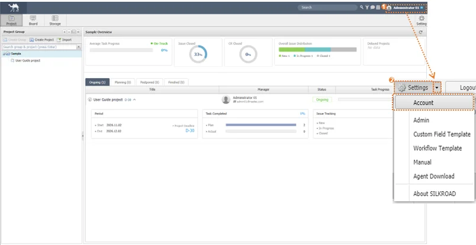 |
③ 사용자 정보 데이터를 작성한다.
④ SILKROAD 내 작업에 대한 메일을 받고자 하는 경우, ‘Receive E-mail’을 체크한다.
⑤ ‘Browse’ 버튼을 클릭하여 사용자 이미지를 추가할 수 있다.
|
회원가입 시 입력한 정보 Last name, First name, E-mail 은 자동으로 입력된다. ‘Information’ 의 Grade, Departments, Duty는 관리자가 등록한 데이터가 표시된다. Admin 매뉴얼을 참고한다. |
Web 계정 사용자의 비밀번호를 변경한다.
① 사용자 정보창 좌측 하단의 ‘Change password’ 버튼을 클릭한다.
② 현재 비밀번호(Current password)와 변경할 비밀번호(New password)를 입력한 뒤 변경할 비밀번호(Confirm Password)를 재입력한다.
③ ‘Submit’ 버튼을 클릭하여 비밀번호를 변경한다.
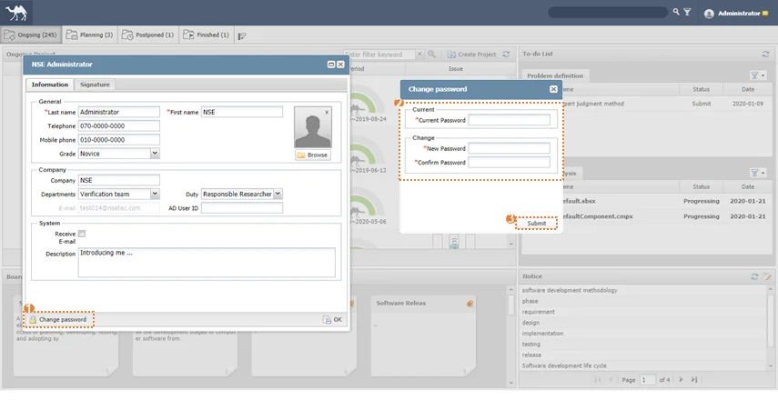 |
① 사용자 Account 창 상단의 ‘Signature’ 탭을 선택한다.
② 로그인‘Type’, ‘ID’ 정보를 확인한 후 ‘PW’를 입력한다.
③ ‘Login’ 버튼을 클릭한다.
④ 전자 서명 사용 시 인증할 비밀번호를 ‘Input New Signature Password’ 에 입력하고, 입력한 비밀번호 확인을 위해‘Confirm Signature Password’에 재입력한다.
⑤ ‘Confirm’ 버튼을 클릭한다.
⑥ ‘Input Signature’ 에 마우스를 조작하여 전자 서명을 입력하거나, ‘Browse’를 클릭하여 이미지를 삽입한다.
⑦ 잘못 입력한 경우, ‘Clear’ 버튼을 클릭하여 전자서명을 초기화한다.
⑧ ‘Save Signature’ 버튼을 클릭하여 전자서명을 저장한다.
|
전자 서명은 ‘Sign’ 필드가 존재하는 곳에서 사용 가능하며, Custom Field 의 각 모듈에 ‘Sign’ 필드를 추가하여 사용할 수 있다. |
① 사용자 정보창 상단의 ‘Signature’ 탭을 선택한 후 사용자 계정 로그인을 한다.
② ‘Forgot your signature password?’ 버튼을 클릭한다.
③ 사용자 이메일로 임시 비밀번호가 발송된다.
|
① 사용자 정보창 상단의 ‘Signature’ 탭을 선택한 후 사용자 계정 로그인을 한다.
② ‘Change signature password’ 버튼을 클릭한다.
③ 현재 전자서명 비밀번호(Current signature password)와 변경할 전자서명 비밀번호(New signature password)를 입력한 뒤 변경할 전자서명 비밀번호(Confirm Password)를 재입력한다.
④ ‘Submit’ 버튼을 클릭하여 전자서명 비밀번호를 변경한다.
|
SILKROAD Manual을 다운로드할 수 있습니다.
① 사용자 이름을 클릭한 뒤 ‘Settings’ 펼침 단추를 클릭한다.
② ‘Manual’ 버튼을 클릭한다.
|
① 사용자 이름 영역을 클릭한 뒤 ‘Settings’ 펼침 단추를 클릭한다.
② ‘Agent Download’ 버튼을 클릭한다.
|
Chrome .exe 파일을 다운로드한다.
① 사용자 이름 영역을 클릭한 뒤 ‘Settings’ 펼침 단추를 클릭한다.
② ‘Chrome Download’버튼을 클릭한다.
실크로드는 Chrome 기반 사용을 권장한다. 외부망 접속이 제한된 사용자를 위해 Chrome.exe 파일을 제공한다. |
SILKROAD의 메뉴와 기능을 이용하기 위해서는 프로젝트를 먼저 생성해야 한다.
① ‘Create Project’ 버튼을 클릭한다.
② ‘Name’, ‘Start Date’, ‘End Date’, ‘Status’, ‘Group’, ‘Description’을 입력한다.
③ ‘OK’ 버튼을 클릭하여 프로젝트를 생성한다.
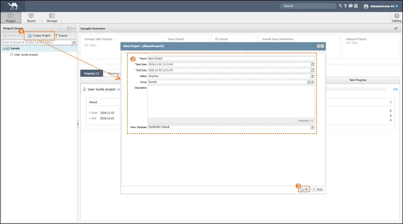 |
④ 또는, 프로젝트 네비게이션 콤보박스의 ‘New Project’를 통해서도 새로운 프로젝트를 생성할 수 있다.
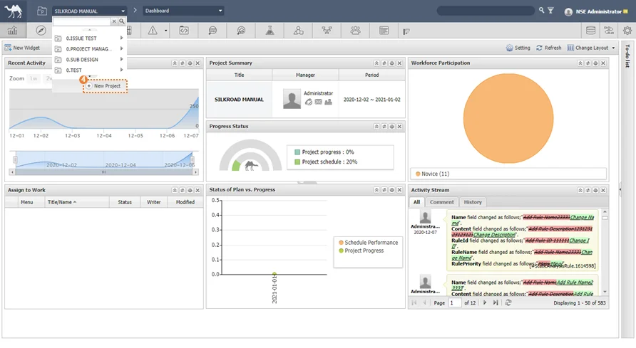 |
① SILKROAD 로고를 클릭하여 실크로드 홈으로 이동한다.
② 정보창 아이콘을 클릭하여 프로젝트 정보창을 실행한다.
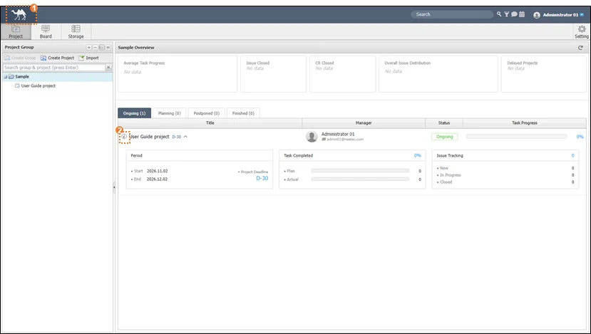 |
|
구분 | 명칭 | 설명 |
| 정보창 아이콘 | 프로젝트 정보 창 버튼 |
| General | 프로젝트 명, 기간, 참여자 등 기본정보 표시 |
| Silo | 문서, Code&Standard, 회의록 등 프로젝트 관련문서 저장소(Silo 메뉴얼 참고) |
| Go to project | 선택된 프로젝트의 프로젝트 홈화면 이동 |
① 삭제하고자 하는 프로젝트 접속 후 우측 상단의 Project Settings 버튼을 클릭한다.
② 프로젝트 정보창이 생성되면 좌측 하단의 ‘Delete’ 버튼을 클릭한다.
③ ‘Delete’ 창의 ‘OK’ 버튼을 클릭하고 재확인 창에서 ‘OK’버튼을 한번 더 클릭해 프로젝트를 삭제한다.
|
프로젝트 삭제는 관리자 권한(Admin, Project Manager)을 가진 사용자만 제한적으로 실행할 수 있다. |
번호 | 메시지 | 설명 | 해결방안 |
|---|---|---|---|
1 | Please enter your search term at least two characters! | 한 글자의 검색어 기재 후 검색 시도 시 | 두 글자 이상의 검색어 기재 후 검색 재시도 |
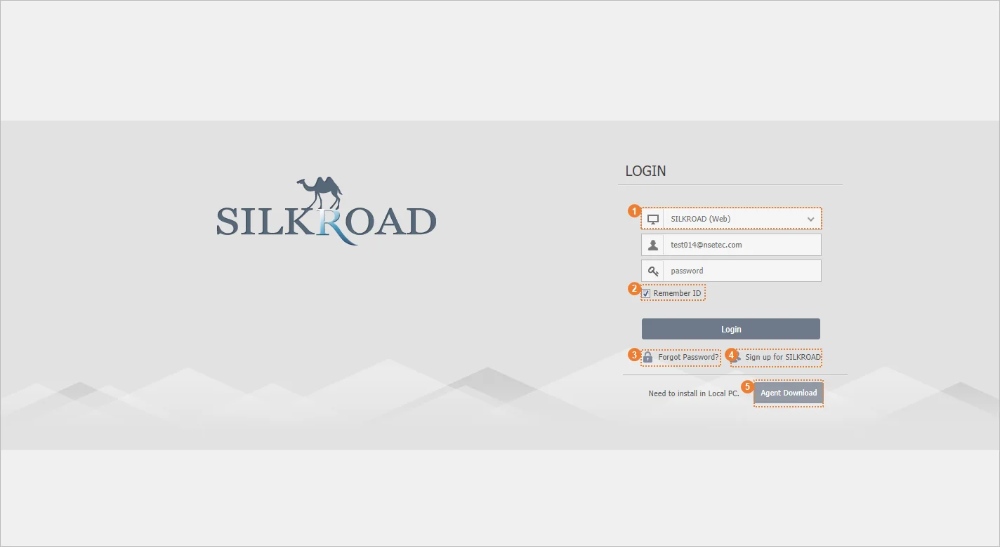 |
구분 | 명칭 | 설명 |
| Type | 사용자 계정 유형에 따라 ‘Web’ 또는 ‘LDAP’으로 구성 |
| Remember ID | ‘Remember ID’ 가 체크되어 있을 경우, 사용자 ID가 저장됨 |
| Forgot password? | SILKROAD 에 등록된 Web 계정 이메일로 임시 패스워드 전송 (LDAP 계정은 불가) |
| Sign up for SILKROAD | SILKROAD Web 계정 사용자 등록 |
| Agent Download | ‘SILKROAD Agent.exe’ 다운로드 버튼 |
SILKROAD에서 사용할 사용자 계정을 생성한다. ‘Sign up for SILKROAD’로 생성하는 계정은 ‘Web’ 계정으로 등록된다.
① 메인 화면에서 ‘Sign up for SILKROAD’버튼을 클릭한다.
② ‘E-mail’, ‘Last Name’, ‘First Name’, ‘Password’, ‘Confirm Password’의 내용을 입력한다.
③ ‘Register‘버튼을 클릭한다.
④ 회원 가입 양식에 문제가 없을 경우 계정 생성이 완료된다.
⑤ 가입한 이메일로 확인 메일이 발송된다.
|
회원가입 시 작성하는 내용은 모두 필수 입력해야 한다. 중복된 이메일이 존재하거나 패스워드가 동일하지 않는 경우 계정 생성이 되지 않는다. 관리자 설정에 따라 신규 사용자 등록 시 관리자의 등록 승인을 필요로 할 수 있다. 승인 전까지 로그인이 제한되며, 승인 방법은 Admin 매뉴얼을 참고한다. Web 계정은 필요에 따라 관리자(계정권한:Admin, Super)가 생성할 수 있으며 Admin 매뉴얼을 참고한다. |
SILKROAD에 등록된 사용자 계정(Web 타입)의 비밀번호를 찾을 수 없을 때, 임시 비밀번호를 발급하여 로그인할 수 있다. 이메일, 사용자 이름을 기준으로 계정을 찾아 계정 등록 시 입력한 메일 주소로 임시 비밀번호를 메일 발송 한다.
① SILKROAD 메인 화면에서 ‘Forgot Password?’ 버튼을 클릭한다.
② ‘E-mail’, ‘Lase Name’, ‘First Name’를 입력한다.
③ ‘Find’ 버튼을 클릭한다.
④ ‘E-mail’, ‘Last Name’, ‘First Name’ 정보에 따라 임시 비밀번호를 이메일로 발송한다.
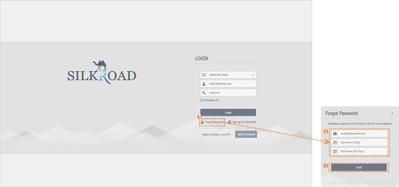 |
⑤ 임시 비밀번호를 발급받은 후 사용자는 임시 비밀번호를 사용하여 로그인한 뒤 Account의 Change Password를 통해 비밀번호를 변경해야 한다.
LDAP 계정의 패스워드는 사용자가 소속된 조직의 LDAP 서버와 연동되므로 SILKROAD에서 계정 패스워드를 변경할 수 없으며 LDAP 서버 비밀번호 변경 시 자동으로 변경된다. 따라서 내부 서버 관리자가 별도로 비밀번호를 바꿔주거나 새롭게 지정해주어야 한다. |
Agent는 SILKROAD 내 문서편집 도구 DOCS(Documenting of Critical Software) 실행 또는 소스관리 시스템(Source Management)에서 소스파일 관리를 위해 설치되어야 한다.
① SILKROAD 메인 화면에서 ‘Agent Download’버튼을 클릭한다.
② 다운로드 완료 후 ‘SR_Agent.exe’ 파일을 실행한다.
③ ‘Next’ 버튼을 클릭해 설치를 진행한다.
④ 설치가 완료되면 사용자 PC 재부팅 메시지가 생성된다.
- Yes를 클릭하면 재부팅, No를 클릭하면 재부팅을 수행하지 않는다.
|
⑤ Agent에 업데이트가 존재 하는 경우 DOCS 실행 또는 소스파일 관리를 위한 Clone 실행 시 업데이트 여부를 확인해 업데이트를 진행할 수 있다.
설치 후 Agent 재부팅을 권장한다. |
SILKROAD 에 등록된 계정을 사용하여 로그인한다.
① 로그인 영역에서 로그인 타입 ‘SILKROAD(Web)’, ‘Default Exchange(LDAP)’을 선택한다.
② ID, Password를 입력한다.
③ 입력한 ID를 저장하고자 하는 경우 ‘Remember ID’를 체크한다.
④ 키보드 엔터 또는 ‘Login’ 버튼을 클릭한다.
⑤ 관리자 설정에 따라 비밀번호를 지정 횟수 이상 틀릴 경우 해당 사용자 계정을 BLOCK 한다. 이 경우, 관리자에 요청해 계정 잠금을 해제해야 한다.
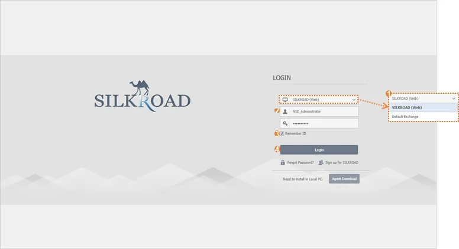 |
‘Remember ID’를 체크하는 경우 다음 로그인 시 최근에 로그인한 ID(이메일)의 입력을 유지한다. |
번호 | 메시지 | 설명 | 해결방안 |
|---|---|---|---|
1 | Matching ID not found. Please Check Your ID. | ID가 등록되어 있지 않은 경우 | 등록되어 있는 ID로 재접속을 시도 관리자에게 문의 |
2 | Please Check Your Password. | 잘못된 비밀번호를 입력시 | 등록되어 있는 비밀번호로 재접속 시도 관리자에게 문의 |
3 | Register Fail. | ID가 이미 등록되어 있는 경우 ID의 형식이 잘못되어 있는 경우 | 중복되지 않은 ID로 시도 ID 형식 재확인 후 시도 관리자에게 문의 |
4 | Please Check Your Name. | Name이 등록되어 있지 않은 경우 | Name 확인 후 재시도 관리자에게 문의 |
대시보드는 프로젝트 진행 현황, 요구사항 커버리지 현황 등과 같은 데이터가 사용자가 원하는 다양한 형태의 위젯(Widget)으로 표시된다.
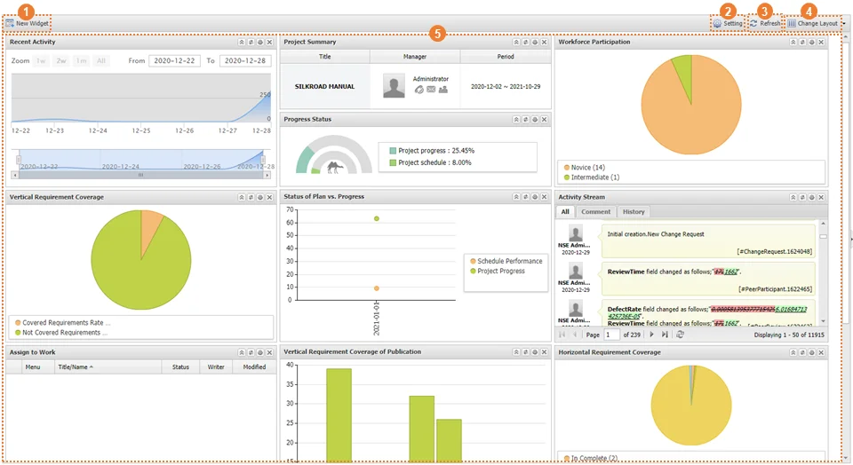 |
구분 | 명칭 | 설명 |
| New Widget | 새로운 위젯 생성 |
| Setting | 대시보드내 위젯 새로고침 시간주기 설정(Admin계정에서 표시) |
| Refresh | 대시보드 새로고침 |
| Change Layout | 대시보드 화면 비율 설정 |
| Widget Workspace | 위젯 영역 |
위젯을 생성하여 다양한 형태로 프로젝트를 관리하고 산출된 자료에 대한 통계를 표시할 수 있다. SILKROAD 대시보드는 7가지의 기본(Ready-made) 위젯을 포함하며 사용자의 필요에 따라 38가지의 새로운 위젯을 만들 수 있다. 생성한 대쉬보드 위젯은 사용자 계정에서만 확인하거나 프로젝트 참여자에게 공유할 수 있다.
대쉬보드에서 생성가능한 위젯의 개수를 설정하는 기능이다. 위젯 개수는 기본 6개로 제한되어 있으며, 설정에서 개수를 변경 할 수 있다(관리자 권한에서 가능).
① ‘Setting’ 버튼을 클릭한다.
② Dashboard Widget Setting 화면에서 Widget Count를 입력 후 OK를 클릭한다.
|
SILKROAD에서 프로젝트 생성시 제공되는 기본(Ready-made) 위젯이다.
최근 프로젝트 활동기간동안 역량의 추이가 표시되며 1주부터 90일까지 설정이 가능하다.
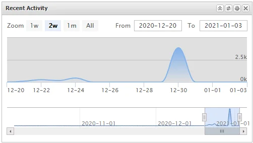 |
프로젝트명과 매니저 및 프로젝트 기간 정보가 표시된다.
|
프로젝트 기간 대비 진행율이 표시된다.
|
구분 | 데이터명 | 설명 |
| Project progress | 진행률(progress rate)이 입력된 Task들의 진행률 평균 값 (전체 Task 진행률/전체 Task 개수) x 100 |
| Project schedule | 전체 프로젝트 기간 중 실제 진행된 기간의 비율 |
등급별 프로젝트 참여자 현황이 표시된다. 각 참여자의 등급은 참여자 계정 ‘Information’내에서 변경이 가능하다. 참여자별 등급은 ‘Novice, Intermediate, Superior, Advanced’ 로 지정이 가능하다.
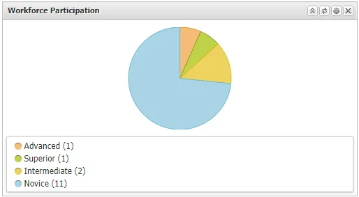 |
|
Workflow를 통해 나에게 할당된 ‘Work Item’ 목록이 표시된다.
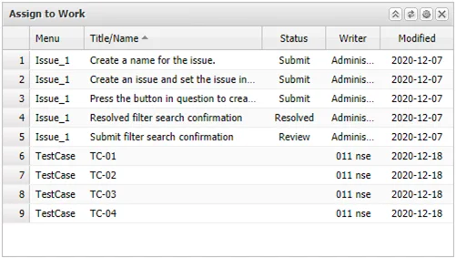 |
프로젝트 계획 대비 현재 Task 진행율이 월별로 표시된다.
|
구분 | 축 | 데이터명 | 설명 |
| X | 월 | 프로젝트 진행기간내의 월단위 표시 |
| Y | Schedule Performance | 프로젝트 기간 중 실제 진행된 기간의 비율 |
| Project Progress | 진행율(progress rate)이 입력된 Task들의 진행율 평균 값 (Task 진행율/Task 개수) |
프로젝트내 프로세스 진행한 이력과 작성 코멘트가 표시된다.
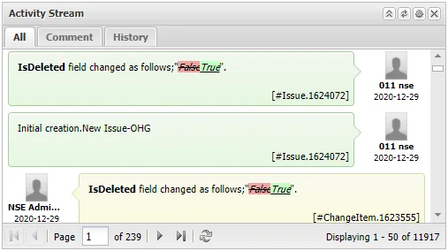 |
단일 요구사항 문서에 등록된 요구사항의 하위 요구사항과 연결/미연결된 커버리지 비율이 막대그래프로 표시된다.
① ‘New Widget’ 버튼을 클릭한다.
② ‘Requirment’ 탭으로 이동한다.
③ ‘Vertical requirement coverage of publication’ 위젯 형식을 클릭한다.
④ ‘Target Phase’를 선택한다.
⑤ ‘Finish & Add Widget’ 버튼을 클릭한다.
⑥ 대시보드에 위젯이 생성된다.
⑦ 그래프에 마우스오버시 Implementation Item, Not Implementation Item의 개수, 문서명, Phase가 나타난다.
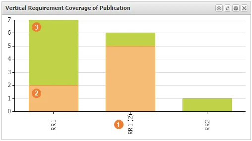 |
구분 | 축 | 데이터명 | 설명 |
| X | 문서명 | 요구사항 문서 명 |
| Y | Implementation Item | 문서 내 요구사항 중 하위 요구사항과의 Forward 추적성이 연결된 요구사항 개수 |
| Not Implementation Item | 문서 내 요구사항 중 하위 요구사항과의 Forward 추적성이 연결되지 않은 요구사항 개수 |
기능 시험 관리에서 테스트실행을 한 Test Case와 추적성이 연결/미연결된 요구사항의 개수가 막대그래프로 표시된다.
① ‘New Widget’ 버튼을 클릭한다.
② ‘Requirement’ 탭으로 이동한다.
③ ‘Horizontal requirement coverage of publication’ 위젯 형식을 클릭한다.
④ ‘Target Phase’를 선택한다.
⑤ ‘Finish & Add Widget’ 버튼을 클릭한다.
⑥ 대시보드에 위젯이 생성된다.
⑦ 그래프에 마우스 오버시 Verified Item, Not Verified Item의 개수, 문서명이 나타난다.
|
구분 | 축 | 데이터명 | 설명 |
| X | 문서명 | 요구사항 문서 명 |
| Y | Verified Item | 문서 내 요구사항 중 테스트 케이스와 추적성이 연결된 요구사항 개수 |
| Not Verified Item | 문서 내 요구사항 중 테스트 케이스와 추적성이 연결되지 않은 요구사항 개수 |
월별로 생성, 수정, 삭제된 요구사항의 개수가 막대그래프로 표시된다.
① ‘New Widget’ 버튼을 클릭한다.
② ‘Requirement’ 탭으로 이동한다.
③ ‘Requirements Stability’ 위젯 형식을 클릭한다.
④ ‘Target Requirement’를 선택한다.
⑤ ‘Finish & Add Widget’ 버튼을 클릭한다.
⑥ 대시보드에 위젯이 생성된다.
⑦ 그래프에 마우스오버시 Add, Modified, Delete의 해당 월 최종 변경시점이 나타난다.
|
구분 | 축 | 데이터명 | 설명 |
| X | 월 | 최초 생성시점부터 최종 생성시점까지의 월단위 |
| Y | Add | 요구사항 생성 개수 |
| Modified | 요구사항 수정 개수 | |
| Delete | 요구사항 삭제 개수 |
Configuration 모듈내 베이스라인, 버전 별 추가, 삭제, 수정으로 인한 변동 및 변동되지 않은 형상 항목 개수가 표시된다.
① ‘New Widget’ 버튼을 클릭한다.
② ‘Configuration’ 탭으로 이동한다.
③ ‘Change of Each Baseline Version Configuration Item’ 위젯 형식을 클릭한다.
④ ‘Target Baseline’를 선택한다.
⑤ ‘Finish & Add Widget’ 버튼을 클릭한다.
⑥ 대시보드에 위젯이 생성된다.
⑦ 그래프에 마우스오버시 Changed, Not Changed의 개수가 나타난다.
|
구분 | 축 | 데이터명 | 설명 |
| X | 베이스라인, 버전 | 베이스라인, 버전 명 |
| Y | Changed | 이전 베이스라인 버전과 비교하여 새롭게 추가, 수정, 삭제된 형상항목 개수 |
| Not Changed | 이전 베이스라인 버전과 비교하여 변동없는 형상항목 개수 |
베이스라인, 버전내에서 File Repository의 Logical, Physical, Planned KLOC(Kilo Line of Code) 전체 개수, 변경된 코드라인의 개수가 선그래프로 출력 표시된다.
① ‘New Widget’ 버튼을 클릭한다.
② ‘Configuration’ 탭으로 이동한다.
③ ‘Software Change Size Stability (Code Size)’ 위젯 형식을 클릭한다.
④ ‘Planned Field’를 선택한다.
⑤ ‘Finish & Add Widget’ 버튼을 클릭한다.
⑥ 대시보드에 위젯이 생성된다.
⑦ 그래프에 마우스오버시 베이스라인, 버전명과 수치가 나타난다.
⑧ 범례를 클릭하게 되면 해당 항목의 그래프가 사라지거나 다시 나타난다.
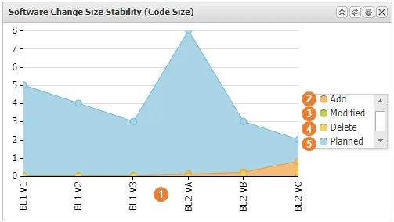 |
구분 | 축 | 데이터명 | 설명 |
| X | 베이스라인, 버전 | 베이스라인, 버전 명 |
| Y | Add | 계획대비 추가된 코드라인 수 |
| Modified | 계획대비 수정된 코드라인 수 | |
| Delete | 계획대비 삭제된 코드라인 수 | |
| Planned | 계획된 코드라인 수 |
베이스라인, 버전내에서 File Repository의 Logical, Physical, Planned KLOC(Kilo Line of Code) 전체 개수, 변경된 코드라인이 유닛 단위로 선그래프로 출력 표시된다.
① ‘New Widget’ 버튼을 클릭한다.
② ‘Configuration’ 탭으로 이동한다.
③ ‘Software Change Size Stability (Unit)’ 위젯 형식을 클릭한다.
④ ‘Planned Field’를 선택한다.
⑤ ‘Finish & Add Widget’ 버튼을 클릭한다.
⑥ 대시보드에 위젯이 생성된다.
① 그래프에 마우스오버시 베이스라인, 버전명과 수치가 나타난다.
② 범례를 클릭하게 되면 해당 항목의 그래프가 사라지거나 다시 나타난다.
|
구분 | 축 | 데이터명 | 설명 |
| X | 베이스라인, 버전 | 베이스라인, 버전 명 |
| Y | Add | 계획대비 추가된 코드라인 유닛 수 |
| Modified | 계획대비 수정된 코드라인 유닛 수 | |
| Delete | 계획대비 삭제된 코드라인 유닛 수 | |
| Planned | 계획된 코드라인 유닛 수 |
베이스라인, 버전내에서 CPU, ROM, RAM 사용자 입력값이 출력 표시된다.
① ‘New Widget’ 버튼을 클릭한다.
② ‘Configuration’ 탭으로 이동한다.
③ ‘Computer Resource Utilization’ 위젯 형식을 클릭한다.
④ ‘Target Configuration’, ‘CPU Throughput’, ‘ROM Usage’, ‘RAM Usage’를 선택한다.
⑤ ‘Finish & Add Widget’ 버튼을 클릭한다.
⑥ 대시보드에 위젯이 생성된다.
⑦ 그래프에 마우스오버시 수치가 나타난다.
⑧ 범례를 클릭하게 되면 해당 항목의 그래프가 사라지거나 다시 나타난다.
|
구분 | 축 | 데이터명 | 설명 |
| X | 베이스라인, 버전 | 베이스라인, 버전 명 |
| Y | CPU Throughput | CPU 처리량 수치 |
| ROM Usage | ROM 수치 | |
| RAM Usage | RAM 수치 |
정적 분석 테스트의 결과가 요약하여 표시된다.
① ‘New Widget’ 버튼을 클릭한다.
② ‘Static Analysis’ 탭으로 이동한다.
③ ‘Static Analysis Summary’ 위젯 형식을 클릭한다.
④ ‘Target Type’를 선택한다.
⑤ ‘Finish & Add Widget’ 버튼을 클릭한다.
⑥ 대시보드에 위젯이 생성된다.
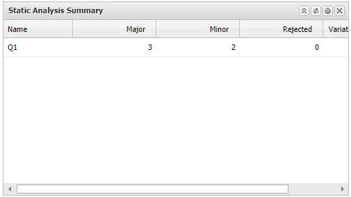 |
Assign to Work 위젯은 기본(Ready-made)위젯으로서 프로젝트 생성시 자동으로 추가되어 있다. 참여자가 New Widget을 클릭하여 추가적으로 생성이 가능하다.
① ‘New Widget’ 버튼을 클릭한다.
② ‘Project’ 탭으로 이동한다.
③ ‘Assign to Work’ 위젯 형식을 클릭한다.
④ ‘Finish & Add Widget’ 버튼을 클릭한다.
⑤ 대시보드에 위젯이 생성된다.
Recent Activity 위젯은 기본(Ready-made)위젯으로서 프로젝트 생성시 자동으로 추가되어 있다. 참여자가 New Widget을 클릭하여 추가적으로 생성이 가능하다.
① ‘New Widget’ 버튼을 클릭한다.
② ‘Project’ 탭으로 이동한다.
③ ‘Recent Activity’ 위젯 형식을 클릭한다.
④ ‘Time Frame’을 선택한다.
⑤ ‘Finish & Add Widget’ 버튼을 클릭한다.
⑥ 대시보드에 위젯이 생성된다.
Activity Stream 위젯은 기본(Ready-made)위젯으로서 프로젝트 생성시 자동으로 추가되어 있다. 참여자가 New Widget을 클릭하여 추가적으로 생성이 가능하다.
① ‘New Widget’ 버튼을 클릭한다.
② ‘Project’ 탭으로 이동한다.
③ ‘Activity Stream’ 위젯 형식을 클릭한다.
④ 대시보드에 위젯이 생성된다.
Project Summary 위젯은 기본(Ready-made)위젯으로서 프로젝트 생성시 자동으로 추가되어 있다. 참여자가 New Widget을 클릭하여 추가적으로 생성이 가능하다.
① ‘New Widget’ 버튼을 클릭한다.
② ‘Project’ 탭으로 이동한다.
③ ‘Project Summary’ 위젯 형식을 클릭한다.
④ 대시보드에 위젯이 생성된다.
Progress Status 위젯은 기본(Ready-made)위젯으로서 프로젝트 생성시 자동으로 추가되어 있다. 참여자가 New Widget을 클릭하여 추가적으로 생성이 가능하다.
① ‘New Widget’ 버튼을 클릭한다.
② ‘Project’ 탭으로 이동한다.
③ ‘Progress Status’ 위젯 형식을 클릭한다.
④ ‘Finish & Add Widget’ 버튼을 클릭한다.
⑤ 대시보드에 위젯이 생성된다.
Workforce Participation 위젯은 기본(Ready-made)위젯으로서 프로젝트 생성시 자동으로 추가되어 있다. 참여자가 New Widget을 클릭하여 추가적으로 생성이 가능하다.
① ‘New Widget’ 버튼을 클릭한다.
② ‘Project’ 탭으로 이동한다.
③ ‘Workforce Participation’ 위젯 형식을 클릭한다.
④ ‘Finish & Add Widget’ 버튼을 클릭한다.
⑤ 대시보드에 위젯이 생성된다.
Status of Plan and Progress 위젯은 기본(Ready-made)위젯으로서 프로젝트 생성시 자동으로 추가되어 있다. 참여자가 New Widget을 클릭하여 추가적으로 생성이 가능하다.
① ‘New Widget’ 버튼을 클릭한다.
② ‘Project’ 탭으로 이동한다.
③ ‘Status of Plan and Progress’ 위젯 형식을 클릭한다.
④ ‘Finish & Add Widget’ 버튼을 클릭한다.
⑤ 대시보드에 위젯이 생성된다.
최근 한 달 동안의 계획 대비 프로젝트 진행율이 일별로 선그래프 타입으로 표시된다.
① ‘New Widget’ 버튼을 클릭한다.
② ‘Project’ 탭으로 이동한다.
③ ‘Status of Plan and Progress(Day)’ 위젯 형식을 클릭한다.
④ ‘Finish & Add Widget’ 버튼을 클릭한다.
⑤ 대시보드에 위젯이 생성된다.
|
구분 | 축 | 데이터명 | 설명 |
| X | 일 | 일 단위 표시 |
| Y | Schedule Performance | 프로젝트 기간 중 해당 날짜에서 실제 진행된 비율 |
| Project Progress | 진행율(progress rate)이 입력된 Task들의 진행율 평균 값 (Task 진행율/Task 개수) x 100 |
Task에서 진행된 Progress 기반으로 초기 기준 대비 프로젝트 진행현황을 파악할 수 있다.
① ‘New Widget’ 버튼을 클릭한다.
② ‘Project’ 탭으로 이동한다.
③ ‘Progress Performance’ 위젯 형식을 클릭한다.
④ ‘Target Task’를 선택한다.
⑤ ‘Init Plan Baseline’과 ‘Replan Baseline’을 선택한다
⑥ ‘Finish & Add Widget’ 버튼을 클릭한다.
⑦ 대시보드에 위젯이 생성된다.
Init Plan Baseline과 Replan Baseline을 지정하기 위해서는 Task에서 Baseline을 설정하고 저장되어 있어야 한다. |
|
구분 | 축 | 데이터명 | 설명 |
| X | 월 | 월 단위 표시 |
| Y | Actual | 실제 진행율 |
| Init | 초기 계획한 진행율 | |
| Replan | 다시 계획한 진행율 |
이슈내 High, Moderate, Low로 지정된 ‘Severity’ 개수가 월별로 표시된다.
① ‘New Widget’ 버튼을 클릭한다.
② ‘Project’ 탭으로 이동한다.
③ ‘Risk Item Tracking’ 위젯 형식을 클릭한다.
④ ‘Target Issue’를 선택한다.
⑤ ‘Severity Field’을 선택한다
⑥ ‘Finish & Add Widget’ 버튼을 클릭한다.
⑦ 대시보드에 위젯이 생성된다.
Severity Field을 지정하기 위해서는 프로젝트 세팅의 커스텀 필드에서 이슈 트래커를 선택 후 콤보박스 템플렛을 추가한다. 라벨명을 Severity로 변경, Value를 High, Moderate, Low 추가 후 저장해야 한다. 그리고 이슈 생성 또는 수정시 Severity 값을 High, Moderate, Low 지정 후 저장하면 된다. |
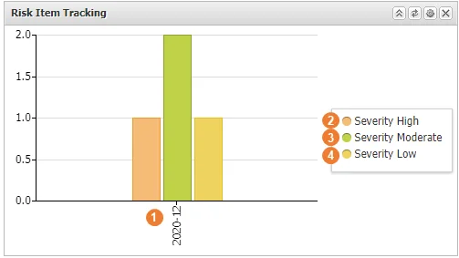 |
구분 | 축 | 데이터명 | 설명 |
| X | 월 | 월 단위 표시 |
| Y | Severity High | Severity High의 개수 |
| Severity Moderate | Severity Moderate의 개수 | |
| Severity Low | Severity Low의 개수 |
Closure Plan, Closed, Total 이슈 개수가 월별로 표시된다.
① ‘New Widget’ 버튼을 클릭한다.
② ‘Project’ 탭으로 이동한다.
③ ‘Problem Resolution’ 위젯 형식을 클릭한다.
④ ‘Target Issue’를 선택한다.
⑤ ‘DueDate Field’을 선택한다
⑥ ‘Finish & Add Widget’ 버튼을 클릭한다.
⑦ 대시보드에 위젯이 생성된다.
여기에서 말하는 Total 이슈란 Workflow Status단계가 ‘IMPLEMENTATION’, ‘VERIFICATION, ’CLOSED’에 머물러 있는 이슈들의 합을 말한다. 또한 이슈내 Due Date가 금일 기준 이전 날자로 지정되어 있어야만 그래프에 개수가 합산되어 표시된다. |
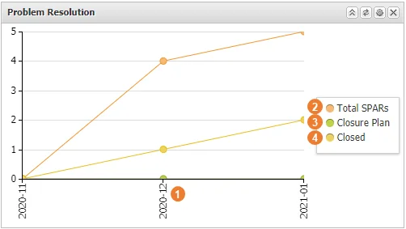 |
구분 | 축 | 데이터명 | 설명 |
| X | 월 | 월 단위 표시 |
| Y | Total SPARs | 이슈내 Workflow Status가 ‘IMPLEMENTATION, VERIFICATION, CLOSED’인 전체 이슈의 개수 |
| Closure Plan | Due Date가 종료된 이슈의 개수 | |
| Closed | 이슈내 Workflow Status가 ‘CLOSED’인 이슈의 개수 |
Workflow가 종료되지 않은(Review) 이슈 개수 및 종료(End)된 이슈 개수가 월별로 막대그래프 형식으로 표시된다.
① ‘New Widget’ 버튼을 클릭한다.
② ‘Defect’ 탭으로 이동한다.
③ ‘Defect Removal Efficiency’ 위젯 형식을 클릭한다.
④ ‘Finish & Add Widget’ 버튼을 클릭한다.
⑤ 대시보드에 위젯이 생성된다.
⑥ 그래프에 마우스오버시 ‘Open Item’, ‘Closed Item’의 개수가 나타난다.
|
구분 | 축 | 데이터명 | 설명 |
| X | 월 | 월 단위 표시 (최대 1년치) |
| Y | Open Item | Workflow가 종료되지 않은 이슈 개수 |
| Closed Item | Workflow가 종료된 이슈 개수 |
Workflow가 종료되지 않은(Review) 이슈 비율 및 종료(End)된 이슈 비율이 원그래프 형식으로 표시된다.
① ‘New Widget’ 버튼을 클릭한다.
② ‘Defect’ 탭으로 이동한다.
③ ‘Defect Removal Efficiency Rate’ 위젯 형식을 클릭한다.
④ ‘Finish & Add Widget’ 버튼을 클릭한다.
⑤ 대시보드에 위젯이 생성된다.
⑥ 그래프에 마우스오버시 ‘Open Rate’, ‘Closed Rate’의 비율이 나타난다.
|
구분 | 데이터명 | 설명 |
| Closed Rate | 전체 이슈 중 Workflow가 종료된 비율 |
| Open Rate | 전체 이슈 중 Workflow가 종료되지 않은 비율 |
누적 생성된 이슈가 월단위로 표시된다
① ‘New Widget’ 버튼을 클릭한다.
② ‘Defect’ 탭으로 이동한다.
③ ‘Accumulated Fault Count’ 위젯 형식을 클릭한다.
④ ‘Finish & Add Widget’ 버튼을 클릭한다.
⑤ 대시보드에 위젯이 생성된다.
|
구분 | 축 | 데이터명 | 설명 |
| X | 월 | 월 단위 표시 (프로젝트 시작월부터 현재월까지) |
| Y | 이슈 개수 | 생성된 이슈의 누적 개수 |
이슈를 해결(Workflow 종료)하는데 요구되는 평균시간이 월단위로 표시된다.
① ‘New Widget’ 버튼을 클릭한다.
② ‘Defect’ 탭으로 이동한다.
③ ‘Mean Time To Repair’ 위젯 형식을 클릭한다.
④ ‘Axis Type’를 선택한다.
⑤ ‘Finish & Add Widget’ 버튼을 클릭한다.
⑥ 대시보드에 위젯이 생성된다.
|
구분 | 축 | 데이터명 | 설명 |
| X | 월 | 월 단위 표시 |
| Y | 시간 | 이슈를 해결하는데 소요되는 평균 시간(Hour) |
피어리뷰에서 리뷰별 진행된 전체 누적 시간당 발견된 Majer Defect 개수비율이 표시된다.
① ‘New Widget’ 버튼을 클릭한다.
② ‘Defect’ 탭으로 이동한다.
③ ‘SPE Defect Detection Rate’ 위젯 형식을 클릭한다.
④ ‘Finish & Add Widget’ 버튼을 클릭한다.
⑤ 대시보드에 위젯이 생성된다.
전체 누적시간이란 피어리뷰 리뷰시간 + 회의시간(검토시간X인원) + Rework시간의 합이다. Rework 시간은 Workflow Status가 Rework인 단계에서 수정버전을 피어리뷰에 재업로드시 직접 기록한 시간으로 산정된다. |
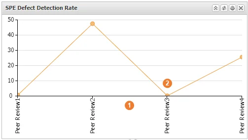 |
구분 | 축 | 데이터명 | 설명 |
| X | 피어리뷰 명 | 피어리뷰 이름 |
| Y | Major Defect 비율 | 리뷰별 진행된 전체 누적 시간당 발견된 Majer Defect 개수 비율 |
피어리뷰에서 리뷰별 진행된 누적 시간당 문서유형에 따른 각 문서내 POD(Page of Document)의 비로 표시된다.
① ‘New Widget’ 버튼을 클릭한다.
② ‘Defect’ 탭으로 이동한다.
③ ‘SPE Rate’ 위젯 형식을 클릭한다.
④ ‘Finish & Add Widget’ 버튼을 클릭한다.
⑤ 대시보드에 위젯이 생성된다.
전체 누적시간은 피어리뷰 리뷰시간 + 회의시간(검토시간X인원)의 합이다. |
|
구분 | 축 | 데이터명 | 설명 |
| X | 피어리뷰 명 | 피어리뷰 이름 |
| Y | 리뷰시간당 POD의 비 | POD(Page of Document)/피어리뷰 리뷰 누적시간(Hour) |
피어리뷰에서 리뷰중 발생된 Major Defect 개수와 Workflow가 종료된 이슈의 합당 Major Defect 개수와 전체 이슈 합의 비가 월별로 표시된다.
① ‘New Widget’ 버튼을 클릭한다.
② ‘Defect’ 탭으로 이동한다.
③ ‘Defect Resolution Performance’ 위젯 형식을 클릭한다.
④ ‘Target Issue’를 선택한다.
⑤ ‘Finish & Add Widget’ 버튼을 클릭한다.
⑥ 대시보드에 위젯이 생성된다.
|
구분 | 축 | 데이터명 | 설명 |
| X | 월 | 월 단위 표시 |
| Y | Closed SPAR Rate | (Majer Defect + 전체 이슈) / (Majet Defect + Closed 이슈) |
생성된 이슈 개수와 피어리뷰 Major Defect의 개수가 함께 표시된다.
① ‘New Widget’ 버튼을 클릭한다.
② ‘Defect’ 탭으로 이동한다.
③ ‘Defect By Phase’ 위젯 형식을 클릭한다.
④ ‘Issue Category Field’ 와 ‘PeerReview Category Field’를 선택한다.
⑤ ‘Finish & Add Widget’ 버튼을 클릭한다.
⑥ 대시보드에 위젯이 생성된다.
이슈는 Workflow Status가 ‘IMPLEMENT, VERIFICATION, CLOSED’ 상태인 이슈만 표시된다. |
|
구분 | 축 | 데이터명 | 설명 |
| X | 이슈명, 피어리뷰명 | 이슈 이름, 피어리뷰 이름 |
| Y | 이슈 개수, Major Defect 개수 | 이슈 개수 및 피어리뷰의 Major Defect 개수 |
Configuration의 베이스라인, 버전에 등록된 File Repository의 KLOC(Kilo Line of Code)당 월별 누적에 따른 이슈의 개수의 비가 표시된다.
① ‘New Widget’ 버튼을 클릭한다.
② ‘Defect’ 탭으로 이동한다.
③ ‘Defect Density’ 위젯 형식을 클릭한다.
④ ‘Target Issue’를 선택한다.
⑤ ‘Finish & Add Widget’ 버튼을 클릭한다.
⑥ 대시보드에 위젯이 생성된다.
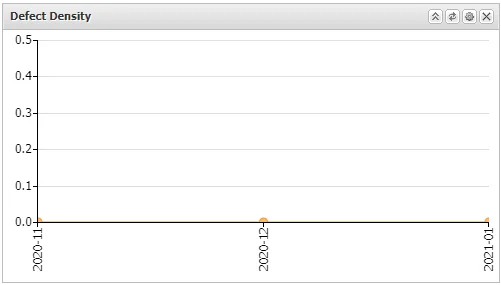 |
구분 | 축 | 데이터명 | 설명 |
| X | 월 | 월 단위 표시 |
| Y | 누적이슈/KLOC 비 | 월 누적 생성된 이슈 개수/KLOC의 비 |
생성된 이슈의 개수와 피어리뷰내 Major Defect 개수의 합에 대한 Major Defect의 비가 표시된다.
① ‘New Widget’ 버튼을 클릭한다.
② ‘Defect’ 탭으로 이동한다.
③ ‘Defect Phase Containment’ 위젯 형식을 클릭한다.
④ ‘Target Issue’를 선택한다.
⑤ ‘Finish & Add Widget’ 버튼을 클릭한다.
⑥ 대시보드에 위젯이 생성된다.
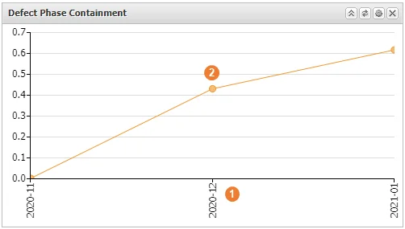 |
구분 | 축 | 데이터명 | 설명 |
| X | 월 | 월 단위 표시 |
| Y | Major Defect/(Major Defect+이슈)의 비 | Major Defect/(Major Defect + 이슈)의 비 |
필터기능에 따른 원하는 데이터만을 선별하여 그리드 타입으로 출력 표시된다.
① ‘New Widget’ 버튼을 클릭한다.
② ‘Customize’ 탭으로 이동한다.
③ ‘Grid’ 위젯 형식을 클릭한다.
④ 기존 리스트에 있는 Filter를 선택하거나 하단에 있는 ‘New Filter’ 버튼을 클릭하여 새로운 Filter를 생성하고, ‘Next’ 버튼을 클릭한다. (※ Filter 설정은 1.1.7.1.1 참조)
⑤ ‘Finish & Add Widget’ 버튼을 클릭한다.
⑥ 대시보드에 위젯이 생성된다.
|
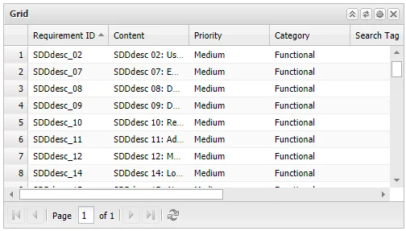 |
SILKROAD에 저장된 모든 데이터에 대한 필터 설정이 가능하다.
① 'New Filter' 버튼을 클릭한다.
|
② 위젯 명을 입력한다.
③ 필터 명을 입력한다.
④ 'Match'(트래커)를 선택한다.
⑤ 'According to'(조건)을 선택한다.
⑥ Field를 선택한 다음 유형을 선택한다. 조건을 기입하고 ( ) 삭제하거나 (
) 삭제하거나 ( ) 그룹을 추가 한다.
) 그룹을 추가 한다.
⑦ Order field를 선택하고 Ordering 옵션을 선택한다.
⑧ ‘Next' 버튼을 클릭하여 다음 단계로 이동한다.
|
⑨ ‘Finish & Add Widget’ 버튼을 클릭하면 새로운 위젯이 생성된다.
|
① 기존 필터를 더블 클릭한다.
② 'Edit Filter' 버튼을 클릭한다.
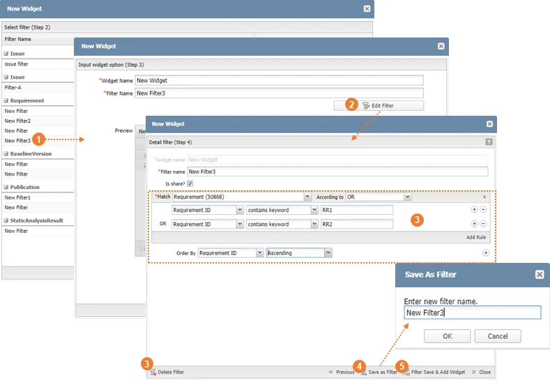 |
③ 내용을 수정한다. (만약 필터를 삭제하고 싶다면 좌측 하단의 ‘Delete Filter’ 클릭해 삭제한다.)
④ 'Save as Filter'를 클릭해 필터를 저장한다.
⑤ 또는 ‘Filter Save and Add Widget' 클릭해 저장과 동시에 새로운 위젯을 생성한다.
필터기능에 따른 원하는 데이터만을 선별하여 막대그래프 타입으로 출력 표시된다.
① ‘New Widget’ 버튼을 클릭한다.
② ‘Customize’ 탭으로 이동한다.
③ ‘Bar Chart’ 위젯 형식을 클릭한다.
④ 기존 리스트에 있는 Filter를 선택하거나 하단에 있는 ‘New Filter’ 버튼을 클릭하여 새로운 Filter를 생성하고, ‘Next’ 버튼을 클릭한다.
⑤ ‘Finish & Add Widget’ 버튼을 클릭한다.
⑥ 대시보드에 위젯이 생성된다.
|
구분 | 축 | 데이터명 | 설명 |
| X | 수치 | 수치 표시 |
| Y | 카테고리 | 설정한 카테고리 표시 |
3개의 필터까지 이용하여 데이터가 하나의 그래프에 출력 표시된다.
① ‘New Widget’ 버튼을 클릭한다.
② ‘Customize’ 탭으로 이동한다.
③ ‘Multiple Advanced Chart’ 위젯 형식을 클릭한다.
④ 축 개수를 선택한다. (최대 3개)
⑤ 각 축 이름, Data Filer, Target Field Name, Target Calculation Field Name, Calculation Method Type을 선택/입력한다.
⑥ ‘Finish & Add Widget’ 버튼을 클릭한다.
⑦ 대시보드에 위젯이 생성된다.
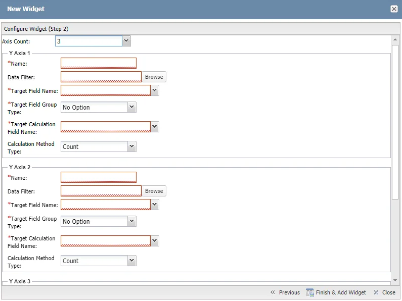 |
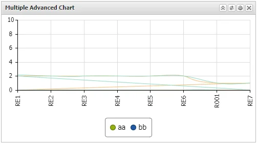 |
필터기능에 따른 원하는 데이터만을 선별하여 원그래프 타입으로 출력 표시된다.
① ‘New Widget’ 버튼을 클릭한다.
② ‘Customize’ 탭으로 이동한다.
③ ‘Pie Chart’ 위젯 형식을 클릭한다.
④ 기존 리스트에 있는 Filter를 선택하거나 하단에 있는 ‘New Filter’ 버튼을 클릭하여 새로운 Filter를 생성하고, ‘Next’ 버튼을 클릭한다.
⑤ ‘Finish & Add Widget’ 버튼을 클릭한다.
⑥ 대시보드에 위젯이 생성된다.
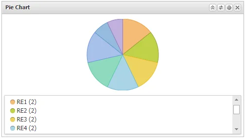 |
원하는 텍스트, 그림 등의 내용을 추가하면 출력 표시된다.
① ‘New Widget’ 버튼을 클릭한다.
② ‘Customize’ 탭으로 이동한다.
③ ‘Rich Text’ 위젯 형식을 클릭한다.
④ ‘Content’에 원하는 내용을 입력한다.
⑤ ‘Finish & Add Widget’ 버튼을 클릭한다.
⑥ 대시보드에 위젯이 생성된다.
|
위젯 생성시 표를 생성하고 데이터를 입력하면 입력한 내용이 그래프로 출력 표시된다.
① ‘New Widget’ 버튼을 클릭한다.
② ‘Customize’ 탭으로 이동한다.
③ ‘Custom Grid Chart’ 위젯 형식을 클릭한다.
④ ‘Y Axis’에 생성하고자 하는 데이터의 개수를 입력한다.
⑤ ‘Row Add’ 클릭해 열을 추가한다.
⑥ ‘Column Add’ 클릭해 Field 칼럼을 추가한다.
⑦ 생성된 표 안에 수치를 입력한다.
⑧ ‘Finish & Add Widget’ 버튼을 클릭하여 대시보드에 위젯을 생성한다.
추가된 ‘Row’, ‘Column’은 ‘Row Delete’, ‘Column Delete’버튼을 클릭해 삭제가 가능하다. Field명과 Data명은 좌클릭 ‘Rename’을 통한 명칭 변경이 가능하다. ‘Data Field’ 표 안에는 수치만 입력이 가능하며 최하단의 행에 입력된 수치만 위젯에 표시된다. |
|
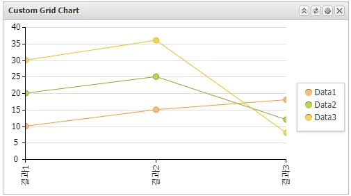 |
‘Change Layout’ 버튼의 펼침 단추를 클릭하여 화면 구성 비율을 설정하며, 화면 구성 비율은 Single column, Split, Split (1:2) 및 Split (2:1), Three column 중에 하나를 선택할 수 있다. 마우스 드래그&드롭을 통해 대시보드 위젯의 위치를 조정할 수 있으며, 생성된 위젯은 설정을 변경 및 삭제가 가능하다.
① ‘Change Layout’ 버튼의 펼침 단추를 클릭하여 화면 구성 비율을 설정한다.
|
마우스 드래그&드롭을 통해 대시보드 위젯의 위치를 조정할 수 있다.
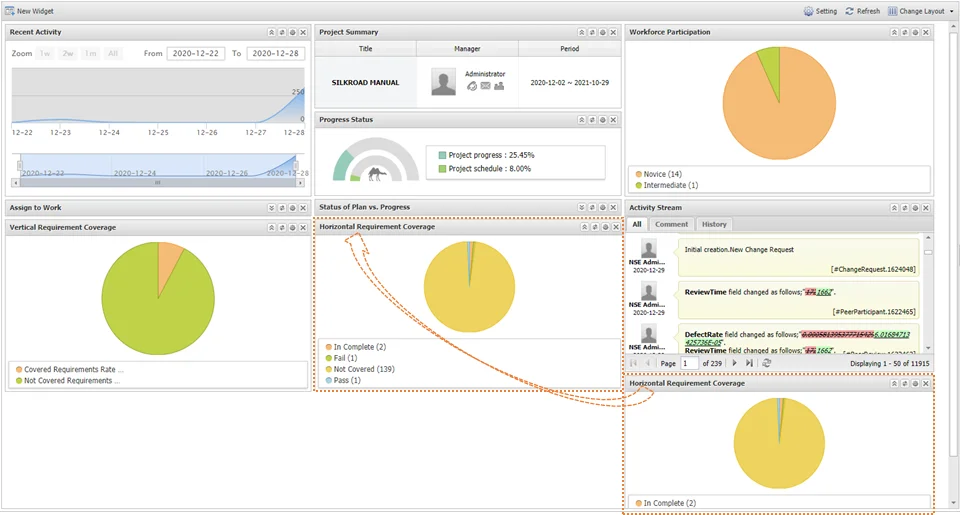 |
위젯을 접기, 새로 고침, 설정변경, 삭제할 수 있다.
|
구분 | 명칭 | 설명 |
| 위젯 접기 | 해당 위젯을 타이틀만 남기고 접을 수 있다. |
| 위젯 새로 고침 | 데이터를 새로 불러들여 변경된 데이터가 반영된다. |
| 위젯 설정 | 위젯명, 위젯 높이, 타겟, 필터 등을 변경할 수 있다. |
| 위젯 삭제 | 위젯을 대시보드내에서 삭제한다. |
번호 | 메시지 | 설명 | 해결방안 |
|---|---|---|---|
1 | No match data | 모듈내의 데이터와 연결이 원활하지 못할 경우 | 새로 고침 |
2 | Target tracker has been removed. Please change tracker | 트래커가 변경이 되어 불러오지 못할 경우 | 트래커 변경 |
SILKROAD 계획관리시스템(Plan Management)은 소프트웨어 개발 프로세스의 단계별 산출 문서를 계획·관리하는 기능을 제공한다. 소프트웨어 개발 프로세스에서 각 단계별로 산출되어야 하는 산출 문서는 SILKROAD의 적합성관리시스템(Compliance Management)에서 해당 산업분야별로 분류해 놓은 표준산출 문서 템플릿을 가지고 오는 방법과 SILKROAD에서 기 수행된 프로젝트의 산출 문서를 재사용하는 방법을 통해 등록할 수 있다.
이와 같이 표준산출 문서 템플릿 혹은 기수행된 프로젝트에서 가져와 각 단계에 등록된 산출 문서는 계획관리시스템, 요구사항관리시스템, 기능시험관리시스템으로 등록하여 SILKROAD 문서 편집기 DOCS를 이용하여 산출문서를 수정할수 있다.
|
계획관리시스템(Plan Management)의 메인 화면 구성은 아래와 같다.
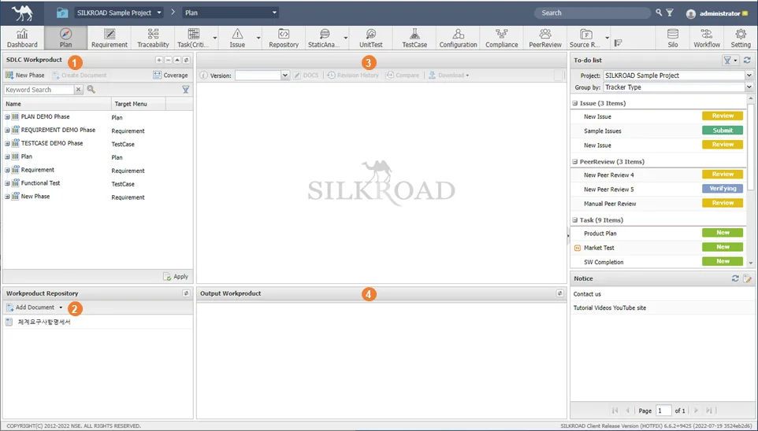 |
구분 | 명칭 | 설명 |
| SDLC Workproduct | Phase 및 문서 목록 |
| Workproduct Repository | 적합성관리 표준 템플릿(Compliance) 및 재사용(Re-use) 문서 목록 |
| Document View | SDLC Workproduct 영역에서 선택된 문서 뷰 |
| Output Workproduct | 계획문서 산출물 목록 |
① SDLC Wordkproduct 영역 상단의“New Phase” 버튼을 클릭한다.
② “New Phase” 정보창이 생성되면, Phase에 대한 필수(Name)/선택(Priority, Description) 내용을 기재한다.
③ ‘OK’ 버튼을 클릭하여 Phase 생성을 완료한다.
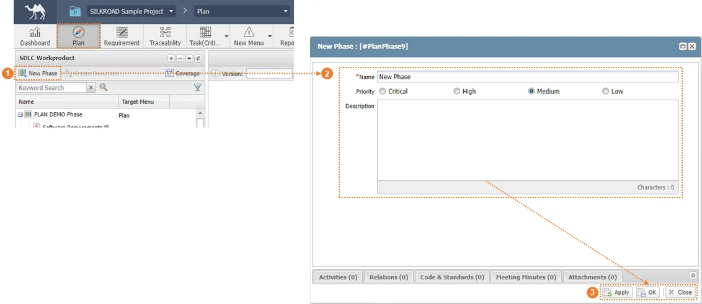 |
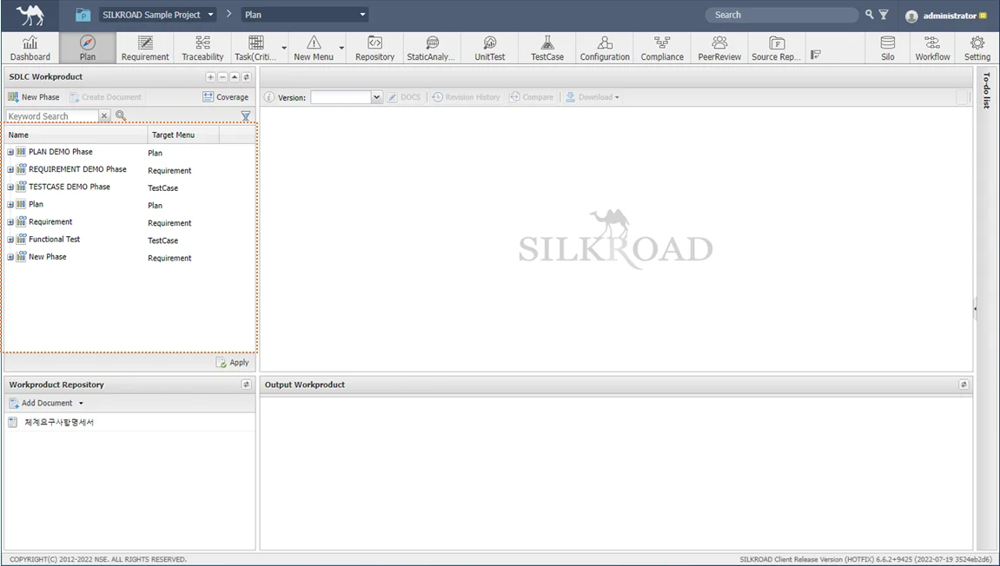 |
‘Phase’는 SILKROAD에서 문서를 관리하는 폴더를 의미한다. 소프트웨어 개발 단계별로 ‘Phase’를 생성하여 단계별로 문서를 작성하면 문서 관리를 편리하게 수행 할 수 있다. |
생성된 Phase를 더블클릭하면, Phase 정보창이 생성되며 입력 정보를 수정할 수 있다. 단, Phase 생성자, 프로젝트 관리자 및 Admin 권한을 가진 사용자 외에는 수정할 수 없다.
Phase는 하위 문서와 함께 드래그&드롭 또는 Order setting 기능으로 위치 이동이 가능하다.
① 정보를 변경하고자 하는 Phase를 선택하고 더블클릭한다.
② 선택한 Phase의 정보창이 생성된다.
③ 변경하고자 하는 Phase에 대한 정보를 기재한다.
④ ‘OK’ 버튼을 클릭하여 Phase 정보 변경을 완료한다. 변경내용이 없을 경우 ‘OK’ 버튼은 비활성화되어 있다.
|
Target Menu가 지정되어 있는 Phase의 경우에는 정보를 변경할 수 없다. |
① 삭제하고자 하는 Phase를 우클릭하여 생성되는 컨텍스트 메뉴의 ‘Delete Item’ 버튼을 클릭한다.
② 혹은, Phase를 더블 클릭하여 생성되는 정보창 좌측 하단의‘Delete’ 버튼을 클릭한다.
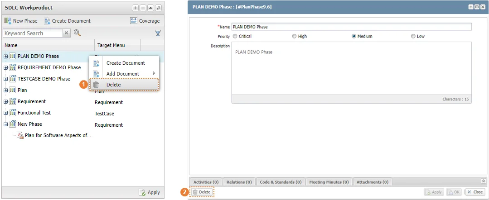 |
③ ‘Delete’ 팝업창이 생성되면 ‘Yes’ 버튼을 클릭하여 Phase를 삭제한다.
|
계획관리시스템에서 생성되어 요구사항관리시스템 또는 기능시험관리시스템에 적용된(Apply) Phase의 경우 계획관리시스템에서 삭제가 불가능하다.
단, 계획관리시스템에 적용된(Apply) Phase의 경우 계획관리시스템에서 삭제가 가능하다.
① 삭제하고자 하는 Phase가 적용된 요구사항관리시스템 또는 기능시험관리시스템에 접속한다.
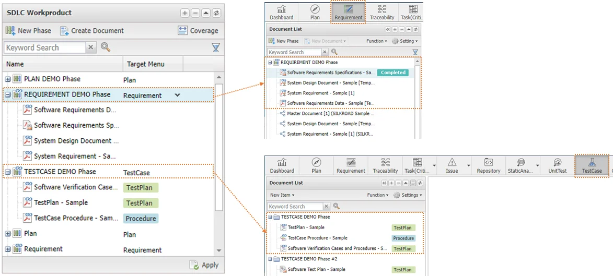 |
② 계획관리시스템에서 적용된 Phase를 선택하고 마우스 우클릭하여 생성되는 컨텍스트 메뉴의 ‘Delete Item’ 버튼을 클릭한다.
|
③ 혹은 Phase를 더블 클릭하여 생성되는 정보창 좌측 하단의‘Delete’ 버튼을 클릭한다.
① ‘Delete’ 팝업창이 생성되면 ‘Yes’ 버튼을 클릭하여 Phase를 삭제한다.
② 계획관리 시스템으로 이동한다.
③ 삭제하고자 하는 Phase에 취소선이 생성되어 있는지 확인하고, SDLC Workproduct 영역 우측 하단의 Apply 버튼을 클릭한다.
|
④ ‘Apply’ 창이 생성되면 ‘Yes’ 버튼을 클릭하여 삭제를 완료한다.
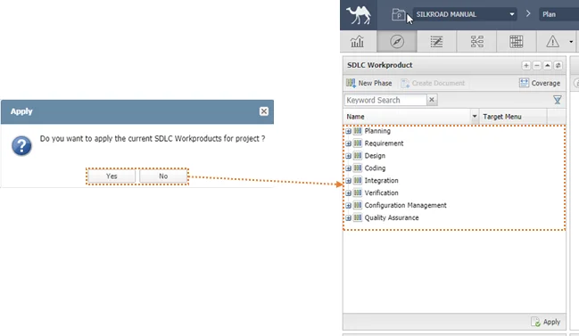 |
Requirement 메뉴로 Target Menu가 지정된 Phase에 하위문서가 존재할 경우 Phase 삭제가 불가능하므로, 등록되어 있는 문서를 먼저 삭제하여야 한다. TestCase 메뉴로 Target Menu가 지정된 Phase에 하위문서가 존재할 경우 하위문서 모두 삭제할지에 대한 확인 팝업이 생성된다. |
문서를 수정 또는 편집중이거나 사용자가 Lock을 설정한 문서는 Phase의 Target Menu 지정 후 Apply를 수행시 Target Menu가 지정되지 않는다.
① 삭제하고자 하는 Phase가 적용된 요구사항관리시스템 또는 기능시험관리시스템에 접속한다.
** 스샷 추가
② 계획관리시스템에서 적용된 Phase를 선택하고 마우스 우클릭하여 생성되는 컨텍스트 메뉴의 ‘Delete Item’ 버튼을 클릭한다.
③ 혹은 Phase를 더블 클릭하여 생성되는 정보창 좌측 하단의‘Delete’ 버튼을 클릭한다.
** 스샷 추가
④ ‘Delete’ 팝업창이 생성되면 ‘Yes’ 버튼을 클릭하여 Phase를 삭제한다.
⑤ 계획관리 시스템으로 이동한다.
⑥ 삭제하고자 하는 Phase에 취소선이 생성되어 있는지 확인한다. 이 때, Lock이 걸린 문서는 Target Menu가 지정되지 않았음에 따라 취소선이 생성되지 않는다.
⑦ 취소선이 생성되지 않은 문서를 선택하고 마우스 우클릭을 통하여 생성된 컨택스트 메뉴의 Delete 기능 또는 정보창 하단의 Delete 버튼을 클릭하여 문서를 삭제한다.
** 스샷 추가
⑧ SDLC Workproduct 하단의 Apply 버튼을 클릭한다.
⑨ ‘Apply’ 창이 생성되면 ‘Yes’ 버튼을 클릭하여 삭제를 완료한다.
** 스샷 추가
Lock이 걸린 문서는 Apply 수행시 Target Menu가 지정되지 않는다. Target Menu가 지정된 Phase에 Target Menu가 지정되지 않은 문서(Lock 이 걸린 문서)가 등록되어 있는 경우 취소선이 생성되어 있더라고 Apply 수행시 삭제되지 않는다. 먼저 Target Menu가 지정되지 않은 문서 삭제 후 Apply 수행을 해야 취소선이 생성된 Phase가 정상적으로 삭제된다. |
계획관리시스템에서는 적합성관리시스템에서 지원하는 표준의 Phase, 문서 목록 및 문서 템플릿을 가져와 사용할 수 있다.
적합성관리시스템에서 지원하는 표준은 아래와 같다.
∙ DO-178C, Software Considerations in Airborne System and Equipment Certification
∙ IEC 60880, Nuclear Power Plants-Instrumentation&Control-Software for computers in the safety systems
∙ 방위사업청 무기체계 소프트웨어 개발 및 관리 매뉴얼
∙ ISO 26262, Road vehicles-Funtional Safety
∙ IEC 62304, Medical device software-Software life cycle processes
∙ IEC 62279, Railway application-Communications, signalling and processing systems-Software for railway control and protection systems.
① Workproduct Repository 영역의 ‘Add Document’ 버튼 펼침단추를 클릭한다.
② ‘Compliance’ 버튼을 선택한다.
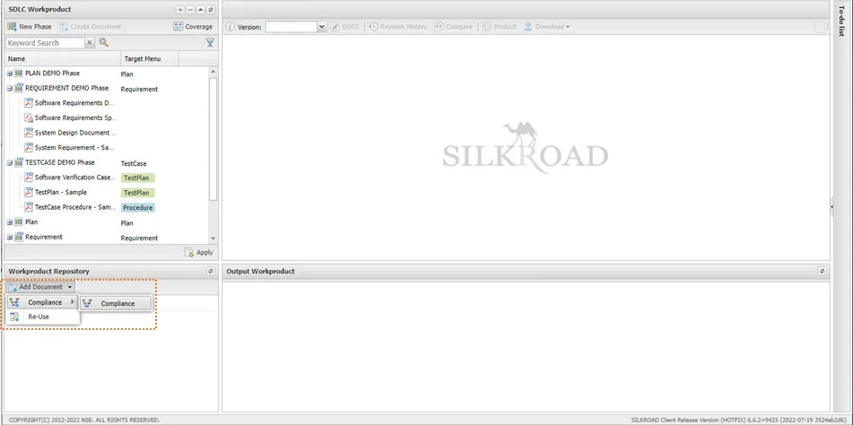 |
③ ‘Compliance’ 창이 생성된다.
④ 추가하고자 하는 표준의 탭을 선택한다.
⑤ ‘Output Templates’ 영역에서 가져오고자 하는 표준의 템플릿을 선택한다.
⑥ ‘OK’ 버튼을 클릭한다.
|
⑦ Workproduct Repository 영역에 선택한 템플릿이 추가된다.
⑧ ‘Workproduct Repository’ 영역에 추가된 문서를 드래그&드롭하여 ‘SDLC Workproduct’ 영역의 Phase로 추가한다.
|
① Workproduct Repository 영역의 ‘Add Document’ 펼침 단추를 클릭한다.
② ‘Compliance’ 버튼을 선택한다.
|
③ ‘Compliance’ 창이 생성된다.
④ 추가하고자 하는 표준의 탭을 선택한다.
⑤ ‘Output Template’ 영역의 우측 상단의 ‘Export to Plan’ 버튼을 선택한다.
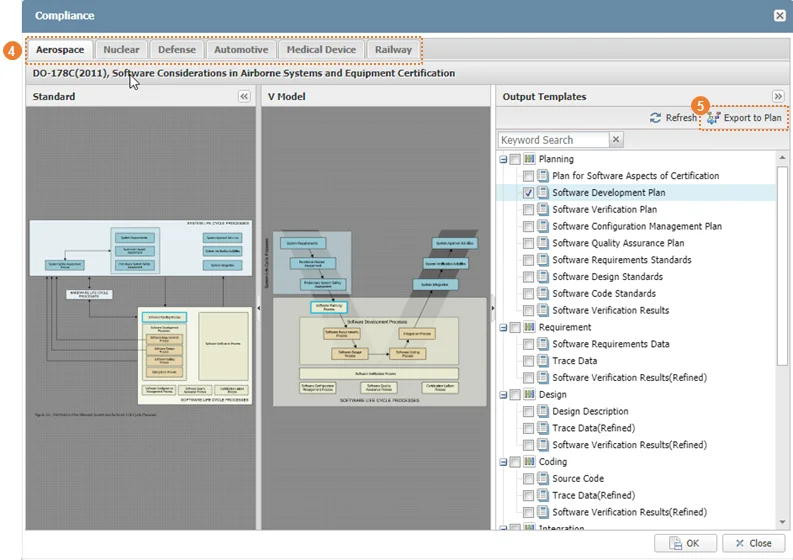 |
⑥ Import 창이 생성되면 ‘Yes’ 버튼을 선택한다.
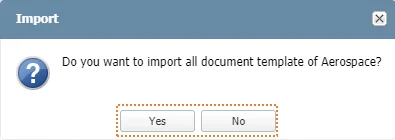 |
⑦ ‘SDLC Workproduct’ 영역에 가져온 표준 프로세스의 Phase와 문서 목록이 추가된다.
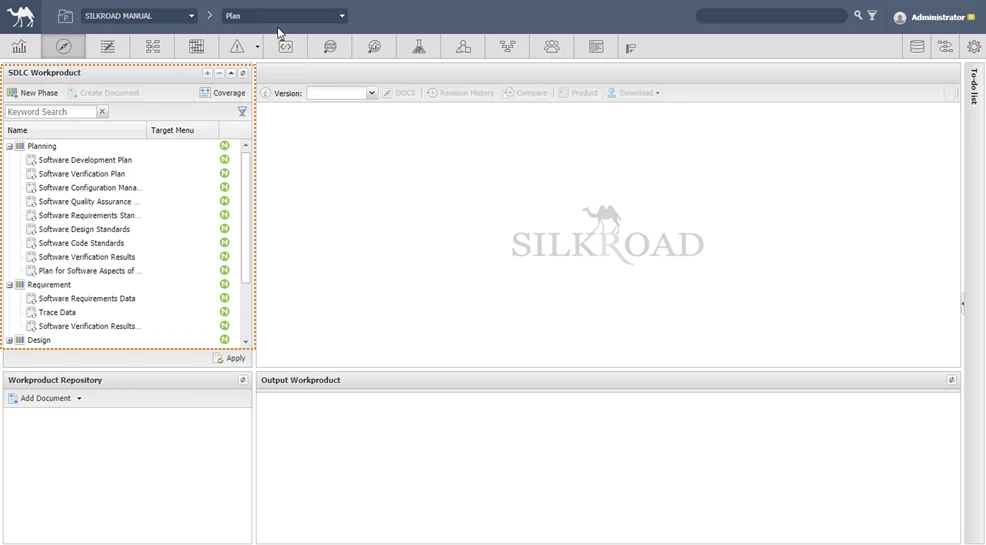 |
적합성관리 표준 템플릿의 가져오기 기능을 통하여 추가된 문서는 아이콘으로 표시된다. |
계획관리시스템에서는 요구사항관리시스템, 기능시험관리시스템에 등록되어 있는 문서 및 다른 프로젝트에 등록되어 있는 문서를 가져와서 사용할 수 있다.
① ‘Workproduct Repository’ 영역의 ‘Add Document’ 펼침 단추를 클릭한다.
② ‘Re-Use’ 버튼을 선택한다.
|
③ ‘Re-Use’ 창이 생성된다.
④ ‘Re-Use’창의 좌측 상단 Menu Tree 영역에서 Project의 목록 펼침 단추를 클릭하여 재사용하고자 하는 문서의 프로젝트를 선택한다.
⑤ Menu Tree 영역에서 Menu의 목록 펼침 단추를 클릭하여 재사용하고자 하는 문서의 메뉴를 선택한다.
|
⑥ 선택한 프로젝트의 메뉴에 등록된 문서가 표시되면 재사용하고자 하는 문서를 체크한다.
⑦ ‘OK’ 버튼을 클릭한다.
|
① Workproduct Repository 영역에 선택한 문서가 추가된다.
② ‘Workproduct Repository’ 영역에 추가된 문서를 드래그&드롭하여 ‘SDLC Workproduct’ 영역의 Phase로 추가한다.
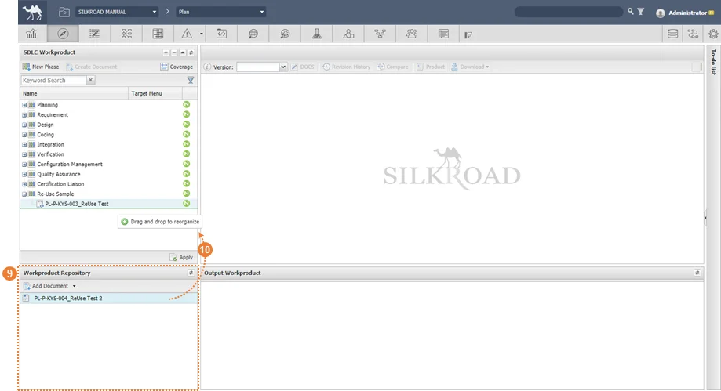 |
사용자가 해당 프로젝트의 참여자로 등록되어 있으며, 해당 메뉴 및 문서에 대한 권한이 있어야만 문서를 가져올 수 있다. 권한이 None인 경우 해당 메뉴의 문서는 목록에 표시되지 않는다. |
① SDLC Workproduct에서 문서를 생성할 Phase를 선택한다.
② SDLC Workproduct 좌측 상단의 ‘Create Document’ 버튼을 클릭한다.
③ 혹은 마우스 우클릭하여 나타나는 콘텍스트 메뉴에서 ‘Create Document’를 실행한다.
④ 실크로드 문서 편집기 DOCS 가 실행된다.
|
|
① SDLC Workproduct에서 1개 문서를 선택한다.
② Document Viewer 영역 상단의 ‘DOCS’ 버튼을 클릭한다.
|
③ 실크로드 문서 편집기 DOCS 가 실행된다.
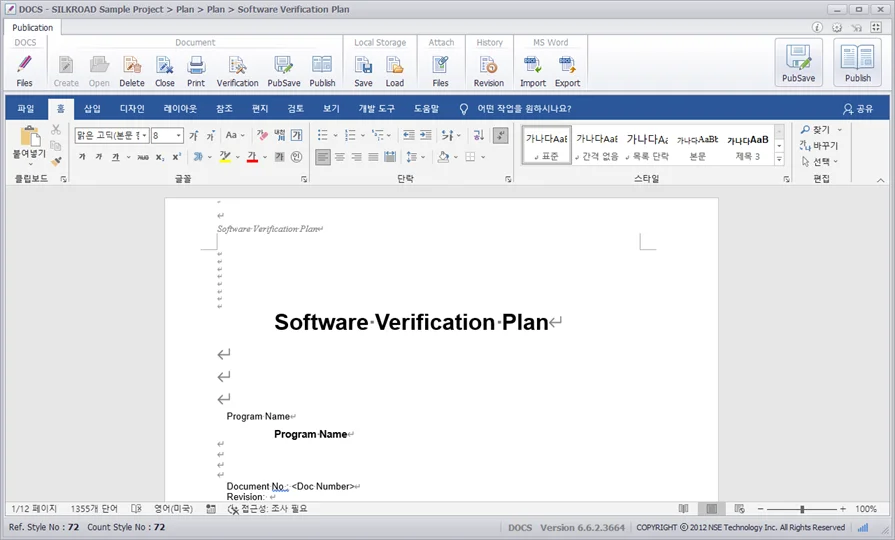 |
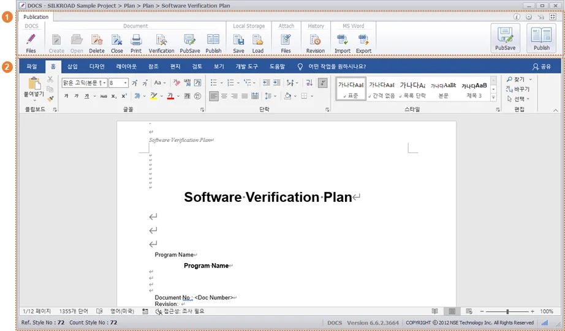 |
구분 | 명칭 | 설명 |
| 메뉴 바 | DOCS 버튼 영역(‘Publication’ 탭) |
| 문서 편집 영역 | 문서 편집 영역(MS-Word) |
새로운 문서를 생성하는 기능이며, 문서편집기에는 MS-Word가 내장되어 있다.
① ‘Publication’ 탭의 ‘Document’ 그룹에서 ‘Create’ 버튼을 클릭한다.
② ‘New Document’창이 생성되면 문서를 생성 할 Project 및 Phase를 선택한다.
③ ‘OK' 버튼을 클릭하여 문서 생성을 완료한다.
|
‘Create’ 버튼은 DOCS 내 MS-word가 열려 있지 않은 경우 활성화 된다. 계획관리 시스템 (Plan Management)에서 ‘Create Document’ 기능 실행 시, 기본적으로 MS-word의 새 문서가 생성되어 있으므로 DOCS에서 ‘Create’ 버튼은 비활성화가 되어 있다. 이러한 경우, ‘Close’ 버튼을 클릭한 후 ‘Create’ 기능을 실행한다. |
SILKROAD 서버에 저장된 문서를 불러오는 기능이다. 편집 권한이 있는 문서에 한하여 문서 불러오기 및 편집이 가능하며, 불러온 문서의 위치(프로젝트, 메뉴 및 Phase)는 수정할 수 없다.
‘Open’ 대상 문서는 사용자에게 쓰기(Write) 이상의 권한이 부여된 문서로 제한하며, 다른 사용자가 잠근(Lock)문서는 ‘Open’ 기능을 실행 할 수 없다. 기존 등록된 문서 중 Baseline에 등록된 문서는 Workflow 상태가 사용자가 설정한 특정 상태(Status)에 도달하기 전까지 ‘DOCS’ 를 실행할 수 없다.
① ‘Publication’ 탭의 ‘Document’ 그룹에서 ‘Open’ 버튼을 클릭한다.
② ‘Open Published Document’창이 생성되면, 프로젝트 목록에서 프로젝트 및 프로젝트 하위의 Phase를 선택한다.
③ 문서 목록에서 불러올 문서를 선택한다.
④ ‘OK’ 버튼을 클릭한다.
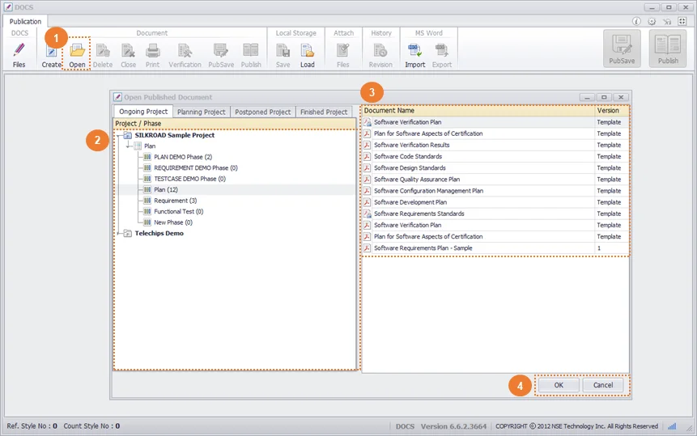 |
문서 삭제 기능은 Project Manager, Super 및 Admin 권한을 가진 사용자만 삭제할 수 있다.
① ‘Publication’ 탭의 ‘Document’ 그룹에서 ‘Delete’ 버튼을 클릭한다.
② ‘Delete’ 창이 생성되면 ‘Yes’ 버튼을 클릭한다.
|
문서 삭제 기능은 Project Manager, Super 및 Admin 권한을 가진 사용자만 삭제할 수 있다.
① 삭제 할 문서를 선택 후 우클릭하여 생성되는 콘텍스트메뉴에서 ‘Delete Item’을 선택한다.
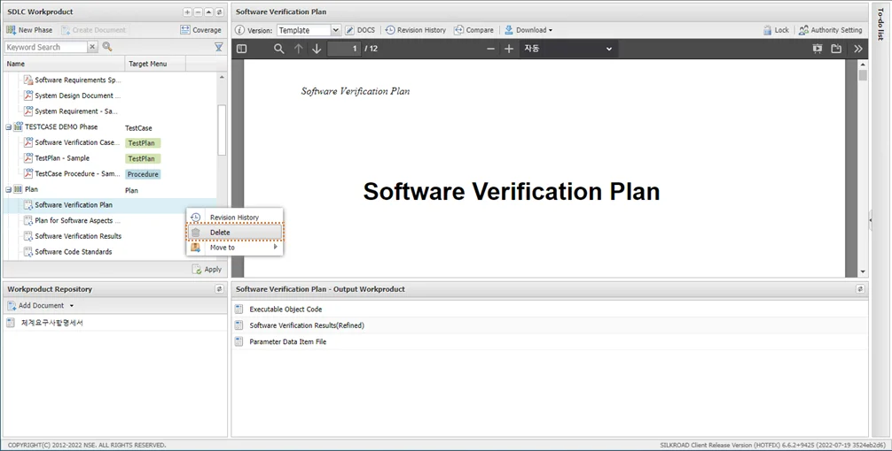 |
② ‘Delete’창이 생성되면‘Yes’버튼을 선택하여 삭제를 완료한다.
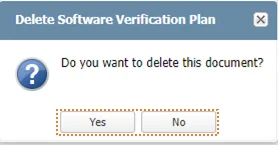 |
DOCS를 종료하지 않고 문서를 Publish 하지 않은 상태에서 종료하는 기능이다. 새로운 문서 작성(Create) 또는 열기(Open) 기능은 현재 DOCS에 열려 있는 문서를 닫기(Close) 한 후에 활성화 된다.
① ‘Publication’탭의 ‘Document’그룹에서 ‘Close’버튼을 클릭한다.
② ‘Close’창이 생성된다.
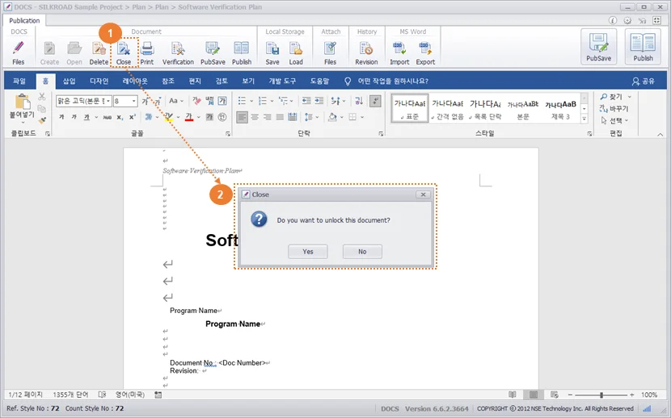 |
③ ‘Yes’버튼을 클릭하여 문서를 닫는다. 이 때, 해당 문서는 잠금해제(Unlock) 상태가 되어 쓰기(Write)이상의 권한이 있는 사용자가 편집 할 수 있다.
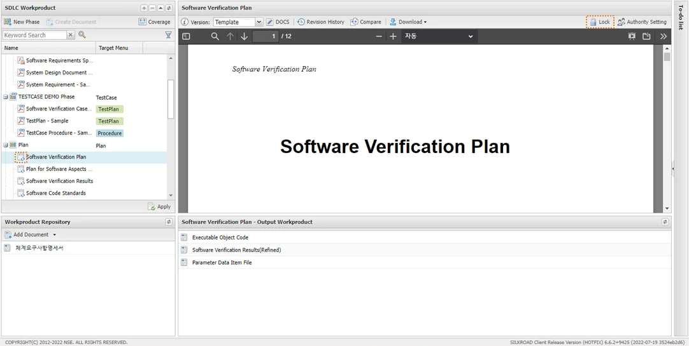 |
④ ‘No’ 버튼을 클릭하여 문서를 닫는다. 이 때, 해당 문서는 잠금(Lock) 상태가 되어 문서 작성자 본인 및 관리자(Administrator)만 편집 할 수 있다.
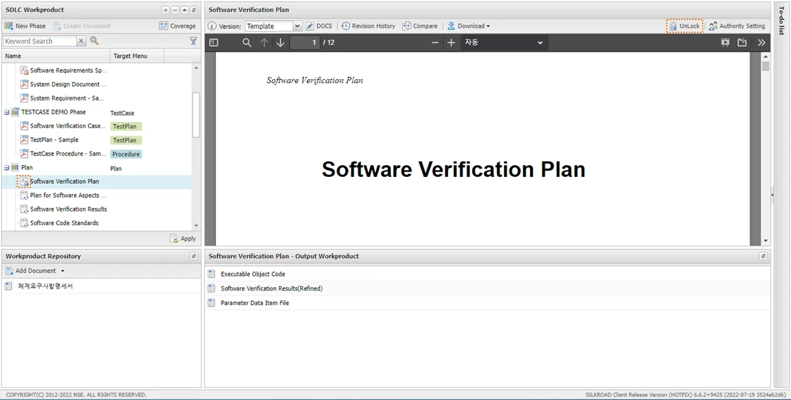 |
⑤ ‘Cancel 버튼을 클릭하면 문서 닫기 기능이 취소된다.
현재 편집 중인 문서를 인쇄하는 기능이다.
① ‘Publication’탭의 ‘Document’그룹에서 ‘Print’버튼을 클릭한다.
② 프린터를 선택하여 출력한다.
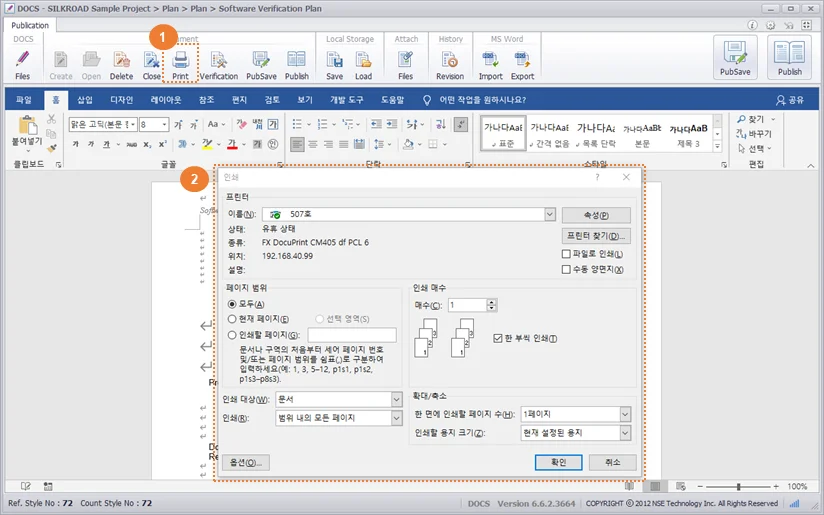 |
실크로드 요구사항 데이터는 Word 내 컨텐츠 컨트롤/북마크 객체를 활용한다. Verification은 사용자가 편집 중 컨텐츠 컨트롤/북마크 객체를 변경 또는 삭제하여 요구사항 데이터 오류로 Publish Fail등 오류가 발생 할 경우, 문서 내 컨텐츠 컨트롤/북마크 객체 데이터를 검증하고 복구하는 기능이다. 문서 검증 및 복구 내용은 아래와 같다.
요구사항으로 등록되지 않은 컨텐츠 컨트롤 삭제
요구사항으로 등록되지 않은 비정상적인 북마크 삭제
컨텐츠 컨트롤이 없는 요구사항 삭제
Pass/Fail 북마크 정리
북마크 위치 조정
요건 내용 비교 후 변경 요건 검사
① ‘Publication’탭의 ‘Document’그룹에서 ‘Verification’버튼을 클릭한다.
② 문서 검증 결과 창을 확인한다.
Abnormal ContentControl/Bookmarks ( ) are found and corrected : 비정상적인 컨텐츠컨트롤/북마크 데이터 ( )개를 수정하였음
No abnormal unit requirement was found : 문서 내 비정상적인 데이터 없음
|
Word 내 컨텐츠 컨트롤/북마크 객체는 실크로드 요구사항 데이터와 연계되어 있어 문서 편집 시 주의해야 한다. 문서 내 요구사항 데이터 복사 시 Content Control이 복사되며, 복사된 Content Control은 요구사항 등록 시 오류가 발생할 가능성이 있다. 문서 내 요구사항 영역을 이동하기 위하여 잘라내기 시 실크로드 요구사항이 삭제된다. |
로컬 PC에 DOCS에서 작업한 문서 데이터(Word, 요구사항, 추적성)를 저장하는 기능이다. 저장한 데이터는 Local DOCS의 Recent Documents에서 확인할 수 있다. Local Save/Export와 기능 차이는 아래와 같다.
저장 대상 | 저장 위치 | 사용 목적 | |
Pub Save | Word 문서 요구사항 데이터 추적성 | 로컬 PC 시스템 지정 폴더 | Publish 전 문서 데이터 저장 |
Local Save | Word 문서 요구사항 데이터 | 로컬 PC 시스템 지정 폴더 | Word 임시 저장 /자동 저장 |
Export | Word 문서 요구사항 데이터 | 로컬 PC 사용자 정의 폴더 | 실크로드 접속이 안되는 외부에서 문서 편집 후 반영 |
① ‘Publication’ 탭의 ‘PubSave’ 버튼을 클릭한다.
② PubSave 결과 팝업창에서 ‘OK’ 버튼을 클릭한다.
PubSave 파일은 C:\Users\사용자계정\AppData\Local\SILKROAD\SavedPublication 폴더에 저장된다. PubSave 파일 삭제는 DOCS Files 화면의 Recent Documents 목록에서 우클릭하여 Delete로 가능하다. PubSave 파일은 문서의 최신 버전만 유지하며, 과거 버전은 저장하지 않는다. |
현재 문서를 사용자 PC에 임시 저장하는 기능이다. 문서의 Publish를 원하지 않을 경우 해당 기능을 사용하여 문서 작업이 완료 될 때까지 사용자의 로컬 저장소에 문서를 저장할 수 있다. 임시저장(수동/자동) 파일은 Workspace에서 지정한 Local Storage 폴더에 저장되며, DOCS Setting 메뉴에서 폴더 경로를 지정할 수 있다. 완료된 문서는 임시저장 문서 불러오기(Load)를 통해 DOCS에서 편집하고 Publish할 수 있다.
① ‘Publication’ 탭의 ‘Local Storage’ 그룹에서 ‘Save’ 버튼을 클릭한다.
② ‘Save to local storage’ 창이 생성된다.
③ ‘Enter the comments’ 항목에 사용자 코멘트를 작성한다.
④ ‘OK’ 버튼을 클릭한다.
|
⑤ ‘Successfully saved’라는 알림창이 생성되면 ‘OK’버튼을 클릭하여 임시저장을 완료한다.
|
자동 저장된 파일은 덮어쓰기를 이용해 저장되어 가장 마지막 저장된 파일을 보관한다. 문서의 최신 변경 내용을 저장하나 등록된 요구사항의 속성(Properties) 정보는 Publish 시점을 기준으로 저장한다.
① DOCS 창 우측 상단의‘’(Setting) 버튼을 클릭한다.
|
② Workspace 항목의 ‘...’ 버튼을 클릭하여 임시저장파일을 보관할 폴더를 지정한다.
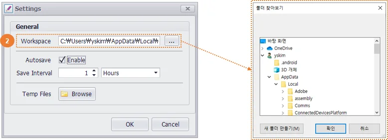 |
③ Autosave ‘Enable’ 체크박스를 체크한다.
④ Save Interval 분(Minute) 또는 시간(Hour)을 지정한다.
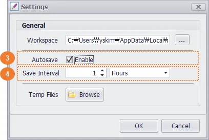 |
⑤ Temp Files 항목의 ‘Browse’ 버튼을 클릭하면 정전 등을 통하여 DOCS가 비정상적으로 종료된 경우 임시적으로 저장된 폴더로 이동한다.
|
⑥ ‘OK’ 버튼을 클릭한다.
Workspace 변경 사항은 저장 후 DOCS 재실행시 반영되고, Autosave 기능은 저장 즉시 반영된다. 특별히 폴더를 지정하지 않은 경우 “C:\Users\컴퓨터이름\AppData\Local\SILKROAD\LocalStorage” 경로에 저장된다. 비정상적으로 DOCS가 종료된 경우 임시저장된 문서는 “C:\Users\컴퓨터이름\AppData\Local\SILKROAD\Temp” 경로에 저장된다. |
임시저장(Save)을 통해 사용자 PC에 저장한 문서를 DOCS로 불러오는 기능이다. Local Load 문서는 ‘Local Storage’의 모든 임시저장(수동/자동) 파일을 대상으로 한다.
문서 임시저장 후 실크로드 상의 해당 문서가 Publish되어 버전이 상승한 경우 이전 버전인 임시저장 파일은 읽기전용 상태로 불러오기 기능을 실행 할 수 있다. 버전이 0인 문서를 임시저장 후 ‘Load’ 하는 경우 ‘New Document’ 생성을 위한 팝업이 제공된다.
① ‘Publication’ 탭의 ‘Local Storage’ 그룹에서 ‘Load’ 버튼을 클릭한다.
② ‘Load from Local Storage’창이 생성된다.
③ 문서 목록에서 불러올 파일을 선택한다.
④ ‘Load’ 버튼을 클릭한다.
⑤ 선택한 문서가 DOCS 에 표시되며 성공적으로 파일이 로드되었음을 알려주는 알림창이 생성된다.
|
사용자 PC에 있는 파일을 선택하여 현재 작업 중인 문서의 첨부파일로 등록한다. 첨부된 파일은 요구사항관리시스템의 문서 정보 창( ) ‘Attachments’ 탭에서도 열람/다운로드할 수 있다.
) ‘Attachments’ 탭에서도 열람/다운로드할 수 있다.
① ‘Publication’탭의 ‘Attach’그룹에서 ‘Files’버튼을 클릭한다.
② ‘Attachments’창이 생성되면 좌측 상단의 ‘Browse’버튼을 클릭한다.
③ 윈도우즈 탐색기에서 첨부할 파일을 선택한다.
④ ‘열기’버튼을 클릭한다.
|
⑤ ‘OK’버튼을 클릭한다.
⑥ ‘Publication’탭의 ‘Attach’그룹에서 ‘Files’버튼 옆에 첨부한 파일 수량이 표시된다.
작업 중인 문서에 첨부된 파일은 삭제하는 기능이다.
① ‘Publication’탭의 ‘Attach’그룹에서 ‘Files’버튼을 클릭한다.
② ‘Attachments’창이 생성된다.
③ 첨부파일 목록에서 삭제할 파일은 선택한다.
④ 우측 상단 ‘Remove’버튼을 클릭한다.
⑤ Attachments 창에서 해당 첨부문서가 삭제되는 것을 확인하고 ‘OK’ 버튼을 클릭한다.
⑥ ‘Publication’탭의 ‘Attach’그룹에서 ‘Files’버튼 옆에 첨부한 파일 수량이 삭제한 첨부파일 수량만큼 줄어든다.
사용자의 PC에 저장된 MS-Word 파일을 DOCS로 불러오는 기능이다. 암호가 설정된 문서를 Import 하는 경우, 암호입력 후 파일을 불러올 수 있다. 기존 실크로드에 등록되어 있는 문서는 Import 시 새 문서 (Create)로 등록하거나 기존 등록된 문서에 ‘Update’를 선택할 수 있다.
기존 실크로드에 등록되어 있는 문서에 ‘Update’ 하는 경우 기존 등록된 문서의 내용이 Import 문서의 내용으로 대체된다.
‘Update’ 선택 시 대상 문서가 삭제된 경우 Update를 할 수 없으며 이에 대한 알림 팝업이 생성된다. ‘Update’ 선택 시 대상 문서에 대한 사용자의 권한이 Read 이하인 경우 Update를 할 수 없으며 이에 대한 알림 팝업이 생성된다.
① ‘Publication’ 탭의 ‘MS Word’ 그룹에서 ‘Import’ 버튼을 클릭한다.
② 탐색기창이 실행되면 불러올 MS-Word 문서를 선택한다.
③ ‘열기’ 버튼을 클릭한다.
|
④ ‘Import’ 창이 생성된다.
⑤ 해당 문서가 SILKROAD Plan Management에 등록되어 있지 않은 경우‘Create’ 버튼을 클릭하여 문서를 등록한다.
⑥ ‘Create Document’화면에서 문서를 저장할 프로젝트 및 하위 Phase를 선택한다.
⑦ ‘OK’ 버튼을 클릭한다.
⑧ ‘Publication’ 탭의 ‘Publish’ 버튼을 클릭한다.
⑨ ‘Publish’ 창이 생성되면 문서에 대한 정보를 입력하고 ‘Publish’ 또는 ‘OK’ 버튼을 클릭한다.
|
⑩ 해당 문서가 선택한 Phase에 등록된다.
① ‘Publication’ 탭의 ‘MS Word’ 그룹에서 ‘Export’ 버튼을 클릭한다.
② Export 경로와 파일 이름을 지정한다.
③ ‘저장’ 버튼을 클릭한다.
Export한 문서는 DOCS의 문서생성 정보(버전, 위치 등)와 등록된 요구사항 정보(북마크 ID, 콘텐츠컨트롤)를 가진다. |
① ‘Publication’탭의 ‘MS Word’그룹에서‘Import’버튼을 클릭한다.
② 윈도우즈탐색기에서 이전에 Export한 불러올 문서를 선택한다.
③ ‘열기’버튼을 클릭한다.
④ ‘Import’ 창이 생성되면 ‘Update’를 선택한다.
(Update선택 시) 불러오는 문서로 SILKROAD에 저장된 기존 문서가 업데이트 된다. 문서의 변경내용이 모두 자동으로 적용된다.
(Create 선택 시) 불러오는 문서는 기존 문서와는 별개로 SILKROAD에 새로운 문서로 생성된다.
(Cancel 선택 시) Import 기능이 취소된다.
|
DOCS의 ‘Publish’기능은 DOCS에서 작성된 문서, 요구사항 및 추적성 정보 등을 SILKROAD 서버에 저장하는 기능이다.
① DOCS 우측 상단 ‘Publish’ 버튼을 클릭한다.
② 필수 입력항목인 문서 제목(Doc Name), 버전(Version) 및 설명(Description)을 입력한다.
③ ‘Publish’ 버튼 또는 ‘OK’ 버튼을 클릭한다.
구분 | 명칭 | 설명 |
| Project | 문서가 저장될 프로젝트 명칭 |
| Menu | 문서가 저장될 메뉴 명칭 |
| Phase | 문서가 저장될 Phase 명칭 |
Doc Name* | 문서 명칭 (필수 입력) | |
| Version* | 문서 버전 (필수 입력) |
| Convert To Pdf | 해당 항목 선택 시, PDF로 문서를 변환하는 과정을 사용자 네트워크가 아닌 서버에서 처리하는 기능 |
| Description (Reason For Changes)* | 개정 이력 (필수 입력) |
| Publish | 문서 발행(서버 저장) |
| Property | 문서 속성 정보 |
| OK / Cancel | 문서 발행(OK) / 문서 발행 취소(Cancel) |
문서의 버전(Version)은 시스템에서 기본적으로‘1’로 설정되며, Publish 실행 시 자동으로 이전 문서 버전 +1로 제공된다. 또한 문서의 버전은 사용자가 수정 할 수 있다. |
Convert to Pdf의 기능은 다음과 같다. Server : Server 에 PDF 변환을 위한 대기 등록, Server에 등록된 순서대로 Pdf 변환을 진행한다. Local : 사용자 Local PC의 자원을 활용하여 Pdf 변환을 진행한다. Markup : 변경내용 표시 및 해제에 대한 설정을 진행한다. |
문서의 Publish 이력을 테이블로 생성한다. 해당 정보는 문서의 Publish 일자, 버전, 설명(Description)을 기반으로 생성된다. 테이블을 복사하여 문서 내에 붙여 넣을 수 있다.
① ‘Publication’탭의 ‘History’그룹에서 ‘Revision’버튼을 클릭한다.
|
‘Revision History’화면에서 우측 하단 ‘Copy’버튼을 클릭하면 Revision History 내용을 클립보드에 복사할 수 있으며, 복사된 내용은 문서에서 붙여넣기(Ctrl+V) 할 수 있다. |
SILKROAD 계획관리시스템에서 구성한 Phase 및 문서 목록을 각 트래커(Tracker=Menu)에 적용하기 위한 기능으로 Target Menu 설정 기능을 통해 선택된 트래커로 Phase와 문서 목록이 자동으로 등록된다.
① SILKROAD Plan Management 로 설정하고자 하는 Phase를 선택한다.
② 선택한 Phase의 Target Menu 셀을 클릭한다.
③ 펼침목록 중 Plan(또는 사용자가 생성한 Plan 메뉴)을 선택한다.
④ ‘Apply’ 버튼을 클릭하여 설정을 저장한다.
⑤ 해당 Phase의 Target Menu 칼럼에 Plan으로 지정됨이 표시된다.
|
① SILKROAD 요구사항관리시스템으로 설정하고자 하는 Phase를 선택한다.
② 선택한 Phase의 Target Menu 셀을 클릭한다.
③ 펼침목록 중 Requirement(또는 사용자가 생성한 Requirement 메뉴)를 선택한다.
④ ‘Apply’ 버튼을 클릭하여 설정을 저장한다.
⑤ 해당 Phase의 Target Menu 칼럼에 Requirement로 지정됨이 표시된다.
|
문서에 Lock 이 걸려 있는 경우 Target Menu 지정을 통하여 선택된 요구사항관리시스템 메뉴로 등록되지 않는다. Lock을 해제한 후 Apply를 재시도할 경우 해당 메뉴로 등록된다. |
기능시험관리시스템에서 작성하는 테스트 관련 문서는 Test Procedure 문서와 Test Plan 문서 이다. Phase를 기능시험관리시스템 메뉴로 선택하고 문서의 종류에 따라 Test Procedure 또는 Test Plan을 선택한다.
① 기능시험관리시스템을 대상으로 설정하고자 하는 Phase를 선택한다.
② 선택한 Phase의 Target Menu 셀을 클릭한다.
③ 펼침목록 중 TestCase(또는 사용자사 생성한 TestCase 메뉴)를 선택한다.
④ Phase의 산출 문서를 클릭한다.
⑤ 펼침목록 중 Test Procedure 또는 Test Plan을 선택한다.
|
⑥ ‘Apply’ 버튼을 클릭하여 설정을 저장한다.
⑦ 해당 Phase의 Target Menu 칼럼에 TestCase로 지정됨이 표시된다.
|
Target Menu가 지정되지 않은 문서가 존재할 경우 기능시험관리시스템으로 지정할 수 없다. 문서에 Lock이 걸려 있는 경우, 문서에 대한 Target Menu를 지정할 수 없다. |
① ‘SDLC Workproduct’에서 이동시키고자 하는 문서를 선택한다.
② 방법 1. 드래그&드롭을 통하여 원하는 Phase 로 문서를 이동시킨다.
③ 방법 2. SDLC Workproduct 영역 상단의 ‘Order Setting’ 버튼을 클릭하고, List 하단의 Up/Down 버튼을 통하여 원하는 위치로 이동시킨 후 Apply Index 버튼을 클릭하여 저장한다.
Target Menu로 지정되어 있는 Phase에 등록된 문서는 이동이 불가하다. |
항공, 원자력, 철도, 자동차, 의료기기, 국방 등 산업분야의 소프트웨어 개발 표준에서 제시하는 계획문서별 산출문서를 설정하고 계획문서와 산출문서 간 커버리지를 관리하는 기능을 제공한다.
① ‘SDLC Workproduct’ 영역에서 Target Menu에 Plan으로 지정되어 있는 Phase에 등록되어 있는 계획문서를 선택한다.
② ‘Output Workproduct’ 영역에 선택된 문서 명이 표시된다.
③ 방법 1. 계획문서에서 명시하는 산출문서를 ‘SDLC Workproduct’ 영역에서 선택하고 드래그&드롭하여 ‘Output Workproduct’ 영역으로 추가한다.
④ 방법 2. Output Workproduct 영역을 마우스 우클릭하여 생성되는 컨텍스트 메뉴인 Add document 기능을 실행한다. ‘Plan Tree’ 창이 생성되면 등록하고자 하는 Document 앞의 체크박스를 체크하고 하단의 Apply 버튼을 클릭하여 추가한다.
① 방법 1. ‘Output Workproduct’추가한 문서를 선택 후 마우스 우클릭을 통하여 삭제할 수 있다.
② 방법 2. Output Workproduct 영역을 마우스 우클릭하여 생성되는 컨텍스트 메뉴인 Add document 기능을 실행한다. ‘Plan Tree’ 창이 생성되면 삭제하고자 하는 Document 앞의 체크박스를 체크해제하고 하단의 Apply 버튼을 클릭하여 추가한다.
① ‘Coverage’ 버튼을 클릭한다.
|
② ‘Coverage’ 창이 생성된다.
③ 계획문서(Plan) 목록이 좌측 열에 표시된다.
④ ‘SDLC Workproduct’ 영역에 생성된 Phase 목록이 맨 위 행에 표시된다.
⑤ 각 Phase 별 계획문서 산출문서명, 버전 정보, 마지막 저장 날짜가 표시된다.
⑥ ‘’: Target Menu가 설정된 Phase에 등록된 Document 또는 Target Menu가 지정된 Document를 의미한다. Coverage 창에서 해당 문서를 더블 클릭할 경우 문서 정보창이 생성된다.
⑦ ‘ ’: Target Menu가 설정되지 않은 Phase에 등록된 Document를 의미한다.
’: Target Menu가 설정되지 않은 Phase에 등록된 Document를 의미한다.
Coverage 매트릭스를 MS-Excel 파일로 내보내는 기능이다.
① Coverage 창 좌측 상단의 ‘Export’ 버튼을 클릭한다.
② MS-Excel 파일이 다운로드된다.
③ Coverage 매트릭스와 동일한 형태로 MS-Excel 파일이 생성된다.
① ‘SDLC Workproduct’ 영역에서 정보를 확인하고자 하는 문서를 선택한다.
② ‘‘ 버튼을 클릭한다.
③ 문서 정보창이 생성된다.
|
① ‘SDLC Workproduct’ 영역에서 버전별 문서 내용을 확인하고자 하는 문서를 선택한다.
② Version 펼침 단추를 클릭한다.
③ 문서 뷰에 해당 버전의 문서 내용이 표시된다.
|
문서의 Publish 이력을 확인할 수 있다. 문서 Version(버전), Description(설명), Editor(작성자), Modified(Publish 날짜) 등 DOCS에서 문서 Publish시 입력되는 정보 표시하는 기능이다.
① ‘SDLC Workproduct’ 영역에서 리비전 정보를 확인하고자 하는 문서를 선택한다.
② ‘Revision History’ 버튼을 클릭한다.
③ ‘Revision History’ 창이 생성된다.
④ 해당 문서에 대한 Version 별 Description, Editor, Revision Date, Baseline Version, Change Request 정보를 확인할 수 있다.
|
⑤ 휴지통 아이콘을 클릭하여 최신 이력을 제외한 Publish 이력을 삭제할 수 있다.
|
문서의 버전 간 변경내용을 비교할 수 있다.
① 버전 간 변경내용을 비교하고자 하는 문서를 선택한다.
② 문서뷰어의 ‘Compare’ 버튼을 선택한다.
|
③ ‘Document Compare’ 창이 생성된다.
④ ‘Base Version’, ‘Compare Version’을 통해서 비교하고자 하는 문서 버전을 선택한다.
|
⑤ Compare 버튼을 선택한다.
⑥ Base Version을 기본으로 하여 Compare Version과 변경된 내용이 표시된다.
⑦ ‘Download’ 버튼을 클릭하면 선택한 버전에 대한 변경내용이 표시된 PDF 파일이 다운로드 된다.
① 다운로드하고자 하는 문서를 선택한다.
② 문서뷰어의 Download 버튼을 클릭하고, 펼침목록의 Download PDF, Download Word 중 다운로드받고자 하는 문서 형태를 선택한다.
③ 로컬의 다운로드 경로(C:\Users\‘컴퓨터 이름’\Downloads)에 저장된다.
권한 없는 사람의 문서 변경을 방지하고자 Download Word 기능은 Admin, Project Manager 권한을 가진 자만 다운로드 가능하다. |
작성자, 관리자 또는 권한을 부여 받은 사용자는 문서 잠금/해제 기능을 사용할 수 있다. 문서 잠금/해제 상태는 이미지(잠긴 상태: , 잠기지 않은 상태:  )로 표시된다. 이미지와 함께 표시되는 텍스트는 설정 가능한 잠금/해제 상태를 명시한다.
)로 표시된다. 이미지와 함께 표시되는 텍스트는 설정 가능한 잠금/해제 상태를 명시한다.
구분 | 명칭 | 설명 |
| Lock | 문서 상태 : 잠겨 있지 않음 잠금 설정 : 모든 사용자가 잠금 설정 가능 문서 편집 : 모든 사용자가 문서 편집 가능 |
| Unlock | 문서 상태 : 현재 사용자가 문서를 잠금 설정한 상태 잠금 해제 : 현재 사용자 및 관리자가 잠금 해제 가능 문서 편집 : 현재 사용자 및 관리자만 문서 편집 가능 |
| Locked by other user | 문서 상태 : 다른 사용자에 의해 문서가 잠금 설정된 상태 잠금 해제 : 문서를 잠근 사용자 및 관리자가 잠금 해제 가능 문서 편집 : 문서를 잠근 사용자 및 관리자만 문서 편집 가능 |
프로젝트 관리자(Project Manager) 또는 관리자(Admin) 권한을 가진 사용자는 타인이 문서를 잠금 경우 문서 잠금 해제 후 문서 편집이 가능하다. |
프로젝트 참여자들의 각 문서에 대한 권한을 설정하는 기능으로 프로젝트 관리자(Project Manager) 또는 관리자(Admin) 권한을 가진 사용자만 권한 설정을 수행할 수 있다.
① ‘SDLC Workproduct’에서 문서를 선택하고 ‘Authority Setting’ 버튼을 클릭한다.
|
② ‘Phase Authority Settings’창이 생성된다.
③ ‘Authority’셀의 펼침단추를 클릭하여 프로젝트 참여자별 해당 문서에 대한 권한을 설정한다.
- Admin : 관리자 권한으로 읽기/쓰기 이외에 잠김 문서에 대한 편집 가능(프로젝트 관리자를 제외한 다른 사용자에 의해 잠긴 문서 잠금 해제 권한)
- Write : 읽기/쓰기 가능
- Read : 읽기만 가능
- None : 문서에 접근 권한이 없으며, 문서 내용이 표시되지 않음.
④ ‘Save’버튼을 클릭하여 저장한다.
|
번호 | 메시지 | 설명 | 해결방안 |
|---|---|---|---|
1 | Unauthorized or erroneous approach. | 권한이 없는 사용자가 문서에 접근하는 경우 | |
2 | Error to load Publication Tree! | Publish 목록 불러오기를 실패하였을 경우 | |
3 | Unable to erase Phase or Document. | 문서 또는 Phase 삭제를 실패하였을 경우 | |
4 | Unable to erase Phase connected to Plan. | 계획관리시스템과 연계된 Phase 삭제를 실패하였을 경우 | |
5 | Unable to erase Phase. | 문서가 없는 Phase 삭제를 실패하였을 경우 | |
6 | Job failed. | Phase 삭제 및 해당 Phase의 문서들을 다른 Phase로 이동시키는데 실패하였을 경우 | |
7 | This document has been locked by another user. | 이미 다른 사용자에 의해 잠금 설정된 문서를 편집하고자 할 경우 | |
8 | This document is link item. | 링크 문서의 편집을 시도할 경우 | |
9 | There is no more relation in this document. | 커버리지 뷰에서 더 이상 표시할 요구사항이 없을 경우 | |
10 | Are you sure you want to delete "Document Name"? | ‘Document Name’을 가진 문서를 삭제 시도시 생성되는 경고문구 | |
11 | Phase is not empty. Do you want to delete all documents? | 문서가 등록되어 있는 Phase 삭제 시도시 생성되는 경고문구 | |
12 | Please open the document through its Target Menu. | Lock 이 걸린 문서에 대하여 Target Menu 지정시 생성 | |
13 | Can't move plan applied document to other | Target Menu가 지정된 Phase 에 등록된 문서를 이동시킬 경우 | |
14 | Object reference not set to an instance of an object. | DOCS로 퍼블리쉬한 문서가 서버에 정상적으로 저장되지 않음에 따라 문서선택시 문서뷰어에 표시되지 않을 경우 발생하는 문구 |
안정성(Safety-Critical)이 중요시되는 국방, 항공, 원자력, 철도, 의료 분야에서는 고신뢰성 소프트웨어를 개발하기 위해 산업별 국제표준에서 개발 단계별 산출대상 문서와 개발 활동을 명시하고 있다.
개발 활동의 결과물로 각 단계의 산출물(문서)을 생성하고, 산출물 내 개발된 요구사항을 기반으로 다음 단계의 개발 활동을 진행한다. 또한, 각 단계마다 상위 요구사항의 충족 여부를 확인하기 위해 요구사항 추적성 매트릭스를 작성하여 개발 시 누락된 요구사항이 존재하지 않도록 하여야 한다.
SILKROAD 요구사항관리 시스템은 SILKROAD 요구사항 편집기(DOCS), 요구사항 관리 시스템 (Requirement Management Web) 및 추적성 관리 시스템 (Traceability)으로 구성된다. 소프트웨어 개발 단계에서 생성되는 산출물(문서) 및 요구사항을 관리하기 위해 아래와 같은 주요 기능을 제공한다.
① 문서 작성 (MS-Word 기반)
② 요구사항 등록 (수동 또는 자동)
③ 요구사항 간 추적성 연결
④ 요구사항 추적성 매트릭스 (Requirement Traceability Matrix, RTM)
SILKROAD 문서 편집기(이하 DOCS)는 MS-Word 기반으로 문서를 작성하고 편집할 수 있는 기능을 제공한다. 문서는 DOCS에서 새로운 문서를 생성하여 처음부터 작성할 수도 있고, 기존에 사용자가 MS-Word로 작성된 문서를 가지고 있는 경우, DOCS로 MS-Word 파일을 불러올 수 있다. 사용자는 작성된 문서에서 요구사항을 식별하고, 다른 산출물(문서) 내 요구사항과 추적성을 연결할 수 있다.
SILKROAD 문서 편집기(DOCS)를 실행하기 위해서는 SILKROAD Agent 파일이 사용자의 PC에 반드시 설치되어야 한다. SILKROAD Agent 파일은 로그인페이지에서 ‘Agent Download’버튼을 클릭하거나 요구사항관리 시스템(Requirement Management)에서 ‘DOCS’ 버튼 클릭 시 다운로드 할 수 있다.
|
① Requirement 메뉴 아이콘()을 클릭해 메뉴로 이동한다.
② Document List에서 문서를 생성할 Phase를 선택 또는 생성(New Phase)한다.
③ Document List에서 Phase 선택 후 ‘New Document’ 메뉴의 펼침(▼)버튼을 클릭한다.
④ ‘Create Document’ 버튼을 클릭한다.
|
‘Phase’는 SILKROAD에서 문서를 관리하는 폴더를 의미한다. 소프트웨어 개발 단계별로 ‘Phase’를 생성하여 단계별로 요구사항 문서를 작성하면 추적성 분석 및 문서 관리를 편리하게 수행 할 수 있다. |
‘Create Document’기능은 마우스 우클릭하여 나타나는 콘텍스트 메뉴에서 실행할 수 있다.
① Requirement 메뉴 아이콘()을 클릭해 메뉴로 이동한다.
② Document List에서 문서를 생성할 Phase를 선택한다.
③ 마우스 우클릭하여 콘텍스트메뉴에서 ‘Create Document’를 선택한다.
① Requirement 메뉴 아이콘()을 클릭해 메뉴로 이동한다.
② Document List에서 1개 문서를 선택한다.
③ Document Viewer 영역 상단의 ‘DOCS’ 버튼을 클릭한다. 또는 마우스 우클릭 하여 콘텍스트 메뉴에서 ‘DOCS’를 선택한다.
|
바탕화면에서 DOCS 아이콘을 클릭하여 직접 실행 할 수 있다. 바탕화면에서 실행하는 DOCS는 최근 작업 문서(Recent Documents)를 선택하는 기능과 새문서 생성(Create Document)/기존 문서 편집(Open Document) 기능을 제공한다. 최근 작업 문서는 PubSave로 저장한 문서와 Publish한 문서 목록을 표시한다.
① 바탕화면의 DOCS 아이콘()을 클릭한다.
② DOCS 화면 하단 Recent Documents에서 DOCS 실행 대상 문서를 선택 후 OK 버튼을 클릭한다.
③ DOCS 로그인 화면에서 로그인 정보(서버 주소, 로그인 타입, 아이디, 비밀번호) 입력 후 Login을 클릭한다.(로그인 화면은 DOCS 설정에서 자동 로그인되도록 설정 가능함)
최근 작업 문서는 PubSave 실행/Publish 시 사용자 로컬 PC에 저장되어 있는 문서 목록을 표시한다. 최근 작업 문서 삭제는 문서 목록에서 우클릭 후 생성되는 컨텍스트 메뉴에서 ‘Remove’를 선택 후 Delete 팝업에서 Yes 버튼을 클릭한다. 삭제된 문서는 로컬 PC에 저장된 문서 데이터이며 서버에 등록된 문서는 삭제되지 않는다. |
① 바탕화면의 DOCS 아이콘()을 클릭한다.
② DOCS 화면 상단 Create Document 탭에서 생성할 문서 종류(Plan/Requirement/Test Plan/Test Procedure/Test Report)를 선택한다.
③ DOCS 로그인 화면에서 로그인 정보(서버 주소, 로그인 타입, 아이디, 비밀번호) 입력 후 Login을 클릭한다.(로그인 화면은 DOCS 설정에서 자동 로그인되도록 설정 가능함)
④ New Document 창에서 문서를 생성할 Project/Menu/Phase를 선택 후 OK 버튼을 클릭한다.
|
① 바탕화면의 DOCS 아이콘()을 클릭한다.
② DOCS 화면 상단 Open Document 탭에서 생성할 문서 종류(Plan/Requirement/Test Plan/Test Procedure/Test Report)를 선택한다.
③ DOCS 로그인 화면에서 로그인 정보(서버 주소, 로그인 타입, 아이디, 비밀번호) 입력 후 Login을 클릭한다.(로그인 화면은 DOCS 설정에서 자동 로그인되도록 설정 가능함)
④ Open Document 창에서 편집 대상 문서를 선택 후 OK 버튼을 클릭한다.
|
|
구분 | 명칭 | 설명 |
| 메뉴 바 | DOCS 버튼 영역(‘Requirement’ 탭, ‘Publication’ 탭) |
| Upstream Requirements | 상위 추적 요구사항 목록 |
| Base Requirements | 현재 문서 내 요구사항 목록 |
| Downstream Requirements | 하위 추적 요구사항 목록 |
| 문서 편집 영역 | 문서 편집 영역(MS-Word) |
DOCS 사용 시 설정 및 조건에 따라 자동 저장 파일, 로그 파일, 임시 저장 파일을 생성한다. 저장 파일은 기본 설정된 경로 ‘C:\Users\User\AppData\Local\SILKROAD ’ 에 저장되며, Workspace 설정을 통해 폴더 경로를 지정할 수 있다.
① DOCS ‘Setting’ 버튼을 클릭한다.
② 경로 설정 아이콘을 클릭한다.
③ 경로를 지정한다.
④ ‘확인’ 버튼을 클릭한다.
⑤ ‘OK’ 버튼을 클릭한다.
|
Workspace 설정은 저장 후 DOCS를 재실행한 뒤부터 반영된다. |
DOCS의 문서 자동 저장 기능에 대한 사용자별 설정이 가능하다. 자동 저장된 파일은 덮어쓰기를 이용해 저장되어 가장 마지막 저장된 파일을 보관한다. 문서의 최신 변경 내용을 저장하나 등록된 요구사항의 속성(Properties) 정보는 Publish 시점을 기준으로 저장한다.
① DOCS ‘Setting’ 버튼을 클릭한다.
② Autosave ‘Enable’ 체크박스를 체크한다.
③ Save Interval 분(Minute) 또는 시간(Hour)을 지정한다.
④ ‘OK’ 버튼을 클릭한다.
|
Auto Save 설정은 ‘OK‘버튼을 눌러 저장한 후 즉시 적용한다. |
Temp Files는 DOCS에서 작업 중 저장하는 임시 파일이 저장된 폴더이다. DOCS 사용 중 이상 현상으로 인하여 DOCS가 중지되는 경우 임시 파일에 저장된 작업 중인 내용을 확인하여 복구 할 수 있다.
① Temp Files의 ‘Browse’ 버튼을 클릭한다.
② 윈도우 탐색기에서 폴더 목록 중 가장 최근에 수정된 폴더를 클릭한다.
③ 폴더 내 Word 파일에서 작업 내용을 확인 후 복구한다.
|
임시 파일은 실시간으로 저장되는 것이 아니라 최신 작업 내용이 반영되었는지 확인해야 한다. |
DOCS에서는 요구사항 등록 시 장절 번호를 포함/미포함 할 수 있다. Include 옵션이 체크 상태에서는 요구사항 등록 시 요구사항 내용에 있는 장절 번호가 포함된다. 장절 번호가 포함된 요구사항 데이터는 요구사항 등록 또는 편집 시 장절 번호 변경을 업데이트 하지만, 문서에서 다른 장절 번호 수정으로 발생하는 장절 번호 변경 사항은 업데이트 하지 않는다. Include 옵션을 체크해제하면 요구사항 등록 시 요구사항 내용에 있는 장절 번호가 포함되지 않는다.
① Numbering 옵션의 ‘Include’옵션을 체크하고 저장한다.
② 장절 번호가 포함된 요구사항을 등록한다.
③ 요구사항 정보창에서 장절 번호가 표시되는 것을 확인한다.
|
장절 번호 데이터는 Word에서 Tag로 관리되고 있으므로 요구사항 정보창(Text 데이터)에 항상 최신 데이터를 반영할 수 없다. 따라서 장절 번호 데이터를 요구사항 정보창에 표시하는 것을 사전에 검토 후 결정해야 한다. |
DOCS를 Local에서 실행(Stand-Alone DOCS) 하는 경우에는 로그인 정보가 필요하다. DOCS 실행 시 로그인 창에서 서버 정보와 계정 정보를 입력해야 하는데, Login 옵션에서 ‘Keep Me Logged In’ 옵션 활성화 시 자동 로그인 기능을 실행 할 수 있다.
① ‘Keep Me Logged In’ 옵션 활성화 후 저장한다.
② 바탕화면에서 DOCS 아이콘을 클릭하여 DOCS를 실행한다.
③ 로그인 팝업창이 생성되지 않고, DOCS가 실행되는 것을 확인한다.
|
바탕화면에서 실행한 DOCS 화면을 DOCS에서 실행하는 기능이다. DOCS 화면에서는 최근 작업 문서(Recent Documents)를 선택하는 기능과 새문서 생성(Create Document)/기존 문서 편집(Open Document) 기능을 제공한다. 최근 작업 문서는 PubSave로 저장한 문서와 Publish한 문서 목록을 표시한다.
① ‘Publication’ 탭의 ‘DOCS’ 그룹에서 ‘Files’ 버튼을 클릭한다.
② ‘DOCS’화면에서 원하는 작업을 선택한다.
|
실행한 DOCS에서 문서 위치를 지정해 새로운 문서를 생성하는 기능이며, 문서편집기에는 MS-Word가 내장되어 있다. Create 실행 시 DOCS가 실행되어진 프로젝트와 Phase 경로를 기본 제공하며, 사용자 계정이 참여되어 있고, 작성 권한이 부여된 모든 프로젝트의 동일 메뉴 경로를 지정해 문서 생성이 가능하다.
① ‘Publication’ 탭의 ‘Document’ 그룹에서 ‘Create’ 버튼을 클릭한다.
② ‘New Document’화면에서 문서를 생성 할 프로젝트와 Phase를 선택한다.
③ ‘OK' 버튼을 클릭한다.
|
‘Create’ 버튼은 DOCS 내 MS-word가 열려 있지 않은 경우 활성화 된다. DOCS Publication 그룹에서 ‘Close’ 기능을 이용해 DOCS 내 Word를 종료한 경우 ‘Reuse’ 기능을 사용할 수 있다. |
SILKROAD 서버에 저장된 요구사항 문서를 DOCS에 여는 기능이다. 편집 권한이 있는 문서에 한하여 문서 열기 및 편집이 가능하다.
‘Open’ 대상은 사용자가 쓰기(Write) 권한 이상을 가진 문서로 제한된다. 다른 사용자가 잠근(Lock)문서는 ‘Open’ 할 수 없고, Baseline에 등록된 문서는 Change Request를 통해 사용자 설정한 편집 가능 상태(Status)에 진입한 경우 ’Open’ 할 수 있다.
① ‘Publication’ 탭의 ‘Document’ 그룹에서 ‘Open’ 버튼을 클릭한다.
② ‘Open Published Document’화면에서 프로젝트 목록에서 프로젝트와 Phase를 선택한다.
③ 문서 목록에서 불러올 문서를 선택한다.
④ ‘OK’ 버튼을 클릭한다.
|
SILKROAD에 등록된 문서를 DOCS에 불러오기 하여 재사용할 수 있다. 재사용 대상 문서의 추적성 연결 정보를 제외한 문서 정보 및 내용과 선택에 따라 포함된 요구사항 정보를 불러온다. ‘Reuse’ 대상 문서는 사용자에게 쓰기(Read) 이상의 권한이 부여된 문서로 제한하며, 문서 권한이 ‘None’ 인 문서는 재사용할 수 없다. 또한, 다른 사용자가 잠근 문서(Lock)는 재사용할 수 없다.
재사용 대상 문서에 등록된 요구사항이 존재하지 않는 경우;
① ‘Publication’ 탭의 ‘Document’ 그룹에서 ‘Reuse’ 버튼을 클릭한다.
② ‘New Document’ 화면에서 문서를 생성할 경로의 프로젝트와 Phase를 선택한다.
③ ‘OK’ 버튼을 클릭한다.
④ ‘Select Document’화면에서 재사용 할 문서의 프로젝트와 하위 Phase를 선택한다.
⑤ 재사용 대상 문서를 선택한다.
⑥ ‘OK’ 버튼을 클릭한다.
재사용 대상 문서에 등록된 요구사항이 존재하는 경우;
① ‘Publication’ 탭의 ‘Document’ 그룹에서 ‘Reuse’ 버튼을 클릭한다.
② ‘New Document’ 화면에서 문서를 생성할 경로의 프로젝트와 Phase를 선택한다.
③ ‘OK’ 버튼을 클릭한다.
④ ‘Select Document’화면에서 재사용 할 문서의 프로젝트와 하위 Phase를 선택한다.
⑤ 재사용 대상 문서를 선택한다.
⑥ ‘OK’ 버튼을 클릭한다.
⑦ 요구사항 복구 여부를 선택하는 화면에서 복구를 원할 경우 ‘Yes’, 원하지 않는 경우 ‘No’ 버튼을 선택한다.
‘Reuse’ 버튼은 DOCS 내 MS-word가 열려 있지 않은 경우 활성화 된다. DOCS Publication 그룹에서 ‘Close’ 기능을 이용해 DOCS 내 Word를 종료한 경우 ‘Reuse’ 기능을 사용할 수 있다. |
실크로드에 등록된 문서 중 DOCS에 열려있는 대상 문서를 삭제한다. 문서 삭제 기능은 Project Manager를 비롯해 사용자 권한 Admin 이상인 사용자에게 활성화된다.
① ‘Publication’ 탭의 ‘Document’ 그룹에서 ‘Delete’ 버튼을 클릭한다.
② ‘Yes’ 버튼을 클릭한다.
|
Master 문서를 삭제하려는 경우 Master 문서 단독으로 삭제와 병합되어 있는 Sub Document 동반 삭제 여부를 선택할 수 있다.
① ‘Publication’ 탭의 ‘Document’ 그룹에서 ‘Delete’ 버튼을 클릭한다.
② ‘Yes’ 버튼을 클릭한다.
③ 병합된 Sub Document를 함께 삭제하고자 하는 경우 ‘Yes’ 버튼을 클릭한다.
④ Master 문서만 삭제하려는 경우 ‘No’ 버튼을 클릭한다.
⑤ ‘Are you sure to delete M document only?‘ 안내팝업에서 ‘Yes’ 버튼을 클릭한다.
Sub Document 삭제는 Master 문서에서 Unlink 기능을 통해, Sub Document 상태 해제 후 기능한다. |
문서 삭제 기능은 Project Manager, Super 및 Admin 권한을 가진 사용자가 사용할 수 있다.
① Requirement 버튼()을 클릭한다.
② 삭제 할 문서를 클릭한다.
③ 마우스를 우클릭하여 콘텍스트메뉴에서 ‘Delete Item’을 선택한다.
④ ‘Do you want to delete this document?’안내팝업에서‘Yes’를 클릭한다.
Master 문서를 삭제하려는 경우 Master 문서 단독으로 삭제와 병합되어 있는 Sub Document 동반 삭제 여부를 선택할 수 있다.
① 삭제 할 문서를 클릭한다.
② 마우스를 우클릭하여 콘텍스트메뉴에서 ‘Delete Item’을 선택한다.
③ ‘Do you want to delete sub document(s) as well?’ 안내팝업에서 ‘Yes’ 버튼을 클릭한다.
④ 병합된 Sub Document를 함께 삭제하고자 하는 경우 ‘Yes’ 버튼을 클릭한다.
⑤ Master 문서만 삭제려는 경우 ‘No’ 버튼을 클릭한다.
⑥ ‘Are you sure to delete M document only?‘ 안내팝업에서 ‘Yes’ 버튼을 클릭한다.
|
Sub Document 삭제는 Master 문서에서 Unlink 기능을 통해, Sub Document 상태 해제 후 기능한다. 잠금 설정(Lock) 문서는 잠금 해제(Unlock) 후 삭제할 수 있다. |
DOCS에서 현재 편집중인 Wrod 문서를 종료하는 기능이다. DOCS에 열려 있는 문서를 닫기(Close) 하면 새로운 문서 작성(Create, Reuse) 또는 열기(Open) 기능이 활성화되어 새로운 편집 대상 문서를 선택할 수 있다.
① ‘Publication’탭의 ‘Document’그룹에서 ‘Close’버튼을 클릭한다.
② ‘Do you want to close this document?’ 안내팝업에서 ‘Yes’를 선택한다.
① ‘Publication’탭의 ‘Document’그룹에서 ‘Close’버튼을 클릭한다.
② ‘The document has been change. Do you want to publish it?’ 안내팝업이 생성된다. Publish를 원할 경우 ‘Yes’를 선택해 Publish를 진행하고 원하지 않는다면 ‘No’를 선택한다.
③ ‘Do you want to close this document?’ 안내팝업에서 ‘Yes’를 선택한다.
① ‘Publication’탭의 ‘Document’그룹에서 ‘Close’버튼을 클릭한다.
② ‘Do you want to unlock this document?’안내팝업에서 ‘Yes’또는 ‘No’또는 ‘Cancel’을 선택한다.
(Yes 선택 시) 해당 문서는 잠금해제(Unlock) 상태가 되어 쓰기(Write)이상의 권한이 있는 사용자가 편집 할 수 있다.
(No 선택 시) 해당 문서는 잠금(Lock) 상태가 되어 문서 작성자 본인 및 관리자(Administrator)만 편집 할 수 있다.
(Cancel 선택 시) 문서 닫기 기능이 취소된다.
① ‘Publication’탭의 ‘Document’그룹에서 ‘Close’버튼을 클릭한다.
② ‘The document has been change. Do you want to publish it?’ 안내팝업이 생성된다. Publish를 원할 경우 ‘Yes’를 선택해 Publish를 진행하고 원하지 않는다면 ‘No’를 선택한다.
③ ‘Do you want to unlock this document?’안내팝업에서 ‘Yes’또는 ‘No’또는 ‘Cancel’을 선택한다.
④ (Yes 선택 시) 해당 문서는 잠금해제(Unlock) 상태가 되어 쓰기(Write)이상의 권한이 있는 사용자가 편집 할 수 있다.
(No 선택 시) 해당 문서는 잠금(Lock) 상태가 되어 문서 작성자 본인 및 관리자(Administrator)만 편집 할 수 있다.
(Cancel 선택 시) 문서 닫기 기능이 취소된다.
현재 편집 중인 문서를 인쇄하는 기능이다.
① ‘Publication’탭의 ‘Document’그룹에서 ‘Print’버튼을 클릭한다.
② 프린터를 선택하여 출력한다.
|
실크로드 요구사항 데이터는 Word 내 컨텐츠 컨트롤/북마크 객체를 활용한다. Verification은 사용자가 편집 중 컨텐츠 컨트롤/북마크 객체를 변경 또는 삭제하여 요구사항 데이터 오류로 Publish Fail등 오류가 발생 할 경우, 문서 내 컨텐츠 컨트롤/북마크 객체 데이터를 검증하고 복구하는 기능이다. 문서 검증 및 복구 내용은 아래와 같다.
요구사항으로 등록되지 않은 컨텐츠 컨트롤 삭제
요구사항으로 등록되지 않은 비정상적인 북마크 삭제
컨텐츠 컨트롤이 없는 요구사항 삭제
Pass/Fail 북마크 정리
북마크 위치 조정
요건 내용 비교 후 변경 요건 검사
① ‘Publication’탭의 ‘Document’그룹에서 ‘Verification’버튼을 클릭한다.
② 문서 검증 결과 창을 확인한다.
Abnormal ContentControl/Bookmarks ( ) are found and corrected : 비정상적인 컨텐츠컨트롤/북마크 데이터 ( )개를 수정하였음
No abnomal unit requirement was found : 문서 내 비정상적인 데이터 없음
|
Word 내 컨텐츠 컨트롤/북마크 객체는 실크로드 요구사항 데이터와 연계되어 있어 문서 편집 시 주의해야 한다. 문서 내 요구사항 데이터 복사 시 Content Control이 복사되며, 복사된 Content Control은 요구사항 등록 시 오류가 발생할 가능성이 있다. 문서 내 요구사항 영역을 이동하기 위하여 잘라내기 시 실크로드 요구사항이 삭제된다. |
하나의 요구사항/디자인 문서를 여러 개의 섹션으로 나누어 동시에 여러 명이 함께 작업하고 각 문서를 하나의 문서로 병합하는 기능이다. 병합된 최종 문서는 PDF와 MS Word 파일로 생성된다.
병합 대상 문서로 선택 할 수 없는 문서는 다음과 같다.
- 다른 사용자가 잠금 설정(Lock)한 문서
다른 사용자가 잠근 문서는 병합 대상 문서로 선택 시 제한 안내 팝업이 생성된다. 해당 문서를 잠금 해제(Unlock) 시 선택이 가능하며, 문서를 잠근 담당자 또는 관리자를 통해 잠금 해제가 가능하다.
- 사용자의 문서 권한이 ‘Read’문서
병합 대상 문서는 사용자에게 부여된 문서권한이 ‘Write’ 이상인 문서를 선택해 추가 할 수 있다. 문서권한이 ‘Read’인 경우, 문서 선택 시 안내 팝업이 생성된다. 관리자를 통해 해당 문서에 대해 쓰기(Write) 권한 이상을 부여 받을 시 병합 대상 문서로 선택이 가능하다.
- 사용자의 문서 권한이 ‘None’문서
병합 대상 문서를 선택하는 사용자에게 부여된 문서권한 ‘Read’ 이상인 문서만 목록에 표시되고, 권한이 없는(None) 문서는 목록에 표시되지 않는다. 관리자를 통해 해당 문서에 대해 쓰기(Write) 권한 이상을 부여 받을 시 병합 대상 문서로 선택이 가능하다.
- 이미 병합되어 있는 문서
이미 병합되어 있는 문서들은 병합 대상 문서를 선택하는 목록에 표시되지 않는다. 해당 문서를 선택하고자 할 때는 Sub Document 제거(Unlink)를 통해 병합 상태 해제 시 병합 대상 문서 목록에 표시되어 선택이 가능하다.
① ‘Publication’ 탭의 ‘Sub Document’ 그룹에서 ‘Link’ 버튼을 클릭한다.
② ‘Open Published Document’화면에서 병합할 문서가 존재하는 프로젝트 및 하위 Phase를 선택한다.
③ Sub Document 대상 문서를 선택한다.
④ ‘OK’ 버튼을 클릭한다.
병합된 문서명칭은 파란색 굵은 글씨로 콘텐츠컨트롤 내 표시된다. 본문에 삽입된 Sub Document 링크는 수정할 수 없으며 Unlink를 통해 제외할 수 있다. |
|
병합대상 문서 추가 완료 후 저장(Publish)한다. Requirement 메뉴 Document List 에 병합 문서 구조가 생성된다.
|
MS-Word의 번호 자동 매기기와 캡션삽입 기능을 사용하여 작성된 문서의 병합 시 장절 번호와 그림/표/수식의 캡션 번호가 자동으로 정렬된다. |
병합 시 문서에 위치한 순으로 병합이 진행되어 이미 추가된 ‘Sub Document’ 의 위치를 변경해 병합 대상 문서의 순서를 조정할 수 있다. 문서에 삽입된 ‘Sub Document’ 위치 이동은 최초 문서에 추가 된 후 Publish 전까지 가능하다. Publish 이후에는 Unlink 한 뒤 Publish 해 병합 상태를 해제 한 뒤 다시 문서에 추가 하는 방법으로 위치를 변경 한다.
① 문서 내 ‘Sub Document’를 위치시키고자 하는 곳에 마우스 커서를 클릭한다.
② ‘Publication’ 탭의 ‘Sub Document’ 그룹에서 ‘Link’ 버튼을 클릭한다.
③ ‘Open Published Document’화면에서 병합할 문서가 존재하는 프로젝트 및 하위 Phase를 선택한다.
④ ‘Selected document is already sub-linked. Relocate the sub-link document at the cursor location?’ 안내 팝업에서 ‘Yes’를 클릭한다.
DOCS 내 Word 문서에 추가된 병합 대상 문서를 제외하는 기능이다. 병합 대상에서 제외된 문서는 병합 대상 문서가 이루고 있던 구조에서 벗어나 삭제 및 Phase 이동이 가능한 상태가 된다.
① ‘Publication’ 탭의 ‘Sub Document’ 그룹에서 ‘Unlink’ 버튼을 클릭한다.
② Sub Document 제외 대상 문서를 선택한다.
③ ‘OK’ 버튼을 클릭한다.
④ ‘Publish’를 실행한다.
‘Unlink’ 실행 결과는 Publish 완료 시 반영된다. |
현재 문서를 사용자 PC에 임시 저장하는 기능이다. 문서의 Publish를 원하지 않을 경우 해당 기능을 사용하여 문서 작업이 완료 될 때까지 사용자의 로컬 저장소에 문서를 저장할 수 있다. 임시저장(수동/자동) 데이터는 Word 문서 편집 내용, 요구사항 등록/삭제 결과를 포함하며 요구사항 추적성 정보는 저장하지 않는다. 임시저장 문서는 불러오기(Load)를 통해 DOCS에서 편집하고 Publish할 수 있다.
수동 저장 실행 시점까지 작성된 내용 및 정보, 요구사항 등록 결과를 저장한다. 등록된 요구사항의 속성(Properties) 정보는 Publish 시점을 기준으로 저장한다.
① ‘Publication’ 탭의 ‘Local Storage’ 그룹에서 ‘Save’ 버튼을 클릭한다.
② ‘Enter the comments’ 항목에 사용자 코멘트를 작성한다.
③ ‘OK’ 버튼을 클릭한다.
|
자동 저장된 파일은 사용자가 설정한 시간 단위로 생성되고 덮어쓰기를 이용해 저장되어 가장 마지막 저장된 파일을 보관한다. 수동 저장과 같이 문서의 최신 변경 내용을 저장하나 등록된 요구사항의 속성(Properties) 정보는 Publish 시점을 기준으로 저장한다.
① DOCS ‘Setting’ 버튼을 클릭한다.
② Autosave ‘Enable’ 체크박스를 체크한다.
③ Save Interval 분(Minute) 또는 시간(Hour)을 지정한다.
④ ‘OK’ 버튼을 클릭한다.
|
자동 저장 설정 입력 후 ‘OK’ 버튼을 눌러 저장하는 즉시 설정을 반영한다. |
임시저장(Save)을 통해 사용자 PC에 저장한 문서를 DOCS로 불러오는 기능이다. Local Load 문서는 ‘Local Storage’의 모든 임시저장(수동/자동) 파일을 대상으로 한다.
문서 임시저장 후 실크로드 상의 해당 문서가 Publish되어 버전이 상승한 경우 이전 버전인 임시저장 파일은 읽기전용 상태로 불러오기 기능을 실행 할 수 있다. 버전이 0인 문서를 임시저장 후 ‘Load’ 하는 경우 ‘New Document’ 생성을 위한 팝업이 제공된다.
① ‘Publication’ 탭의 ‘Local Storage’ 그룹에서 ‘Load’ 버튼을 클릭한다.
② ‘Load from Local Storage’화면의 문서 목록에서 불러올 파일을 선택한다.
③ ‘Load’ 버튼을 클릭한다.
|
실크로드 서버에서 다운로드 하거나, DOCS에서 Export 기능으로 로컬 PC에 저장된 MS-Word 문서는 Import 시 새 문서 (Create)로 등록하거나 기존 등록된 문서를 업데이트하는 ‘Update’를 수행할 수 있다.
요구사항이 식별된 문서를 새 문서(Create)로 Import하는 경우 문서에 포함되어 있는 요구사항 데이터를 자동으로 등록(Restore)할 수 있다.
Word 문서 보호 기능에 의한 열기/쓰기 제한이 설정된 문서를 Import 하는 경우, 암호입력 후 파일을 불러올 수 있다.
① ‘Publication’ 탭의 ‘MS Word’ 그룹에서 ‘Import’ 버튼을 클릭한다.
② 대상 문서(MS-Word)를 선택한다.
③ ‘열기’ 버튼을 클릭한다.
④ ‘There is no document information to update. Do you want to register as a new document?’ 안내팝업에서 ‘Yes’버튼을 클릭한다.
⑤ ‘Create Document’화면에서 문서를 저장할 프로젝트 및 하위 Phase를 선택한다.
⑥ ‘OK’ 버튼을 클릭한다.
문서에 암호(Word 쓰기/읽기 암호) 설정된 경우, 문서를 생성할 프로젝트 및 하위 Phase 선택 후 암호 입력 팝업을 통해 문서를 열 수 있다. |
|
기존 실크로드에 등록되어 있는 문서에 ‘Update’ 하는 경우 기존 등록된 문서의 내용이 Import 문서의 내용으로 업데이트되며 요구사항에 변경사항이 있는 경우 요구사항의 버전이 증가한다. 단, 그림, 수식이 포함된 요구사항의 경우 변경사항이 없어도 버전이 증가 될 수 있다.
‘Update’ 선택 시 대상 문서가 삭제된 경우 Update를 할 수 없으며 이에 대한 알림 팝업이 생성된다. ‘Update’ 선택 시 대상 문서에 대한 사용자의 권한이 Read 이하인 경우 Update를 할 수 없으며 이에 대한 알림 팝업이 생성된다.
① ‘Publication’탭의 ‘MS Word’그룹에서‘Import’버튼을 클릭한다.
② 윈도우즈탐색기에서 불러올 문서를 선택한다.
③ ‘열기’버튼을 클릭한다.
④ ‘This is document exported from SILKROAD. Do you want to update the document or create a new document?’안내팝업에서 ‘Create’, ‘Update’ 또는 ‘Cancel’을 선택한다.
(Update선택 시) 불러오는 문서로 SILKROAD에 저장된 기존 문서가 업데이트 된다. 문서의 변경내용이 모두 자동으로 적용된다.
(Create 선택 시) 불러오는 문서는 기존 문서와는 별개로 SILKROAD에 새로운 문서로 생성된다. Restore 선택 시 기존 등록되었던 요구사항을 자동으로 등록한다.
(Cancel 선택 시) Import 기능이 취소된다.
|
Import – Update 실행 시 등록된 요구사항 내용에 변경이 있는 경우 해당 요구사항의 버전이 증가한다. 단, 그림, 수식, 표를 내용에 포함한 요구사항은 수정사항이 없을지라도 요구사항 버전이 상승 할 수 있다. |
실크로드에서 다운로드 하지 않거나, DOCS에서 Export하지 않은 MS-Word 문서는 새 문서(Create) 또는 기존 문서 덮어쓰기(Select)로 등록 가능하다. 기존 문서 덮어쓰기(Select)란 실크로드에 작성된 문서의 최신 버전을 Import 대상 문서로 변경하는 기능이다. 문서의 버전을 유지하면서 문서 내용을 모두 변경하는 경우 덮어쓰기 기능을 사용할 수 있다.
Word 문서 보호 기능에 의한 열기/쓰기 제한이 설정된 문서를 Import 하는 경우, 암호입력 후 파일을 불러올 수 있다.
① ‘Publication’ 탭의 ‘MS Word’ 그룹에서 ‘Import’ 버튼을 클릭한다.
② 대상 문서(MS-Word)를 선택한다.
③ ‘열기’ 버튼을 클릭한다.
④ ‘There is no document information to update. Do you want to register as a new document?’ 안내팝업에서 ‘Yes’버튼을 클릭한다.
⑤ ‘Create Document’화면에서 문서를 저장할 프로젝트 및 하위 Phase를 선택한다.
⑥ ‘OK’ 버튼을 클릭한다.
문서 덮어쓰기(Select) 기능은 기존에 등록되어 있는 요구사항/추적성 데이터가 모두 삭제되기 때문에 사용에 유의해야 한다. |
|
DOCS를 통해 작성한 문서를 Word 문서로 사용자 PC에 저장한다. Export 기능은 Publish를 한 뒤부터 사용할 수 있다. 문서에 작성된 내용과 요구사항 등록 정보는 최신 상태를 반영하며 등록된 요구사항의 속성(Property) 정보는 Publish 시점을 기준으로 저장한다. 따라서 모든 최신 정보를 반영한 문서를 저장하고자 하는 경우 Publish를 마친 후 Export 해야 한다. DOCS에서 Export한 문서에 등록된 요구사항의 북마크 ID는 고유한 값이므로 복사/붙여넣기를 사용할 수 없고 Export한 문서에서 요구사항 내용을 수정하는 경우, 생성된 콘텐츠컨트롤 내에서 수행되어야 한다.
① ‘Publication’ 탭의 ‘MS Word’ 그룹에서 ‘Export’ 버튼을 클릭한다.
② Export 경로와 파일 이름을 지정한다.
③ ‘저장’ 버튼을 클릭한다.
|
Export한 문서는 DOCS의 문서생성 정보(버전, 위치 등)와 등록된 요구사항 정보(북마크 ID, 콘텐츠 컨트롤)를 가진다. Export Word 문서에서 콘텐츠컨트롤 데이터를 삭제하거나 이동하는 경우 요구사항 데이터가 삭제된다. |
로컬 PC에 DOCS에서 작업한 문서 데이터(Word, 요구사항, 추적성)를 저장하는 기능이다. 저장한 데이터는 Local DOCS의 Recent Documents에서 확인할 수 있다. Local Save/Export와 기능 차이는 아래와 같다.
저장 대상 | 저장 위치 | 사용 목적 | |
Pub Save | Word 문서 요구사항 데이터 추적성 | 로컬 PC 시스템 지정 폴더 | Publish 전 문서 데이터 저장 |
Local Save | Word 문서 요구사항 데이터 | 로컬 PC 시스템 지정 폴더 | Word 임시 저장 /자동 저장 |
Export | Word 문서 요구사항 데이터 | 로컬 PC 사용자 정의 폴더 | 실크로드 접속이 안되는 외부에서 문서 편집 후 반영 |
① ‘Publication’ 탭의 ‘PubSave’ 버튼을 클릭한다.
② PubSave 결과 팝업창에서 ‘OK’ 버튼을 클릭한다.
PubSave 파일은 C:\Users\사용자계정\AppData\Local\SILKROAD\SavedPublication 폴더에 저장된다. PubSave 파일 삭제는 DOCS Files 화면의 Recent Documents 목록에서 우클릭하여 Delete로 가능하다. PubSave 파일은 문서의 최신 버전만 유지하며, 과거 버전은 저장하지 않는다. |
DOCS의 ‘Publish’기능은 DOCS에서 작성된 문서, 요구사항 및 추적성 정보 등을 SILKROAD 서버에 저장하는 기능이다. 문서의 버전(Version)은 시스템에서 기본적으로 ‘1’로 설정되며, 사용자가 변경할 수 있다. Publish 실행 시마다 자동으로 이전 문서 버전 +1로 제공된다. Publish 시 옵션을 통해 문서의 속성 필드 정보를 설정하거나 문서의 PDF 생성 옵션(PDF 생성 대상/변경이력 표시)을 결정할 수 있다.
구분 | 명칭 | 설명 |
| Project | 문서가 저장될 프로젝트 명칭 |
| Menu | 문서가 저장될 메뉴 명칭 |
| Phase | 문서가 저장될 Phase 명칭 |
| Doc Name* | 문서 명칭 (필수 입력) |
| Version* | 문서 버전 (필수 입력) |
| Convert To Pdf | 문서 PDF 생성 대상과 변경내용 표시를 결정 |
| Description (Reason For Changes)* | 개정 이력 (필수 입력) |
| Publish | 문서 발행(서버 저장) |
| Property | 문서 속성 정보 |
| OK | 문서 발행(서버 저장) |
① DOCS 우측 상단 ‘Publish’ 버튼을 클릭한다.
② 필수 입력항목인 문서 제목(Doc Name), 버전(Version) 및 설명(Description)을 입력한다.
③ ‘Convert To Pdf’ 옵션(Server, Local, Not now)을 선택한다.
④ (Server 선택 시) Publish 단계에서 PDF 생성 시퀀스가 제외된다. Publish 완료 후 문서는 서버에서 PDF를 생성하고 진행단계(Progress Bar)를 표시 한다. 서버의 작업량 증가로 PDF 생성이 지연 될 시 진행단계 표시 팝업의 ‘Convert to PDF’ 버튼을 눌러 우선적으로 문서의 PDF를 생성할 수 있다.
⑤ (Local 선택 시) Publish 단계에서 PDF 생성 시퀀스를 진행한다. Publish 된 문서는 PDF가 생성된 채 제공된다. Markup 옵션을 체크하면 문서의 변경 내용을 PDF에 표시하며, 체크하지 않으면 문서의 변경 내용은 표시하지 않고 ‘최종본’형태로 PDF를 생성한다.
⑥ (Not now 선택 시) Publish 단계에서 PDF 생성 시퀀스가 제외된다. Publish 된 문서는 모든 변경사항(내용 수정, 요구사항 등록/삭제, 추적성 연결 등)이 반영된 상태로 PDF 만 생성하지 않는다. 해당 문서 클릭 시 필요에 따라 수동으로 PDF를 생성할 수 있는 ‘Convert to PDF’ 버튼 제공한다.
⑦ ‘Publish’ 버튼 또는 ‘OK’ 버튼을 클릭한다.
Document View의 문서 버전 콤보박스 클릭 시 각 문서 버전별 PDF 생성 상태를 아이콘으로 표시한다. PDF 생성되지 않은 버전 선택 시 수동으로 PDF를 생성할 수 있다. Publish가 완료된 문서는 자동으로 PubSave가 진행되며, Local DOCS 실행 시 Recent Documents 목록에서 확인 할 수 있다. |
Publish 팝업에서 ‘Property 버튼’을 클릭하여 문서의 속성을 설정할 수 있다. 기본적으로 문서의 우선순위(Priority)와 약어(Abbreviation)을 설정하는 필드를 제공한다. 설정된 속성 정보는 문서의 정보창에 표시한다.
① DOCS 우측 상단 ‘Publish’ 버튼을 클릭한다.
② Property 버튼을 클릭한다.
③ 속성을 입력/선택한다.
④ OK 버튼을 클릭한다.
‘Property’에 제공되는 속성 필드 추가는 ‘Project Setting – Custom Field‘에서 지원한다. 프로젝트 관리자는 Requirementpublication Tracker 에 필드를 추가해 ’Property ’에 표시하는 정보를 추가/삭제할 수 있다.
① 프로젝트 관리자 또는 사용자 권한 ‘Admin‘ 인 사용자가 ‘Project Setting’ 실행 후 ‘Custom Field’ 탭 이동한다.
② 대상 Tracker 선택한다.
③ Designer 영역에 Custom Templates를 드래그&드롭으로 추가하고 Value 영역을 클릭 해 데이터를 설정한다.
④ ‘OK’ 버튼 클릭한다.
⑤ Requirement 문서 DOCS 실행한다.
⑥ ‘Publish‘ 버튼 클릭한다.
⑦ ’Property‘ 버튼을 클릭한다.
사용자 PC에 있는 파일을 선택하여 현재 작업 중인 문서의 첨부파일로 등록한다. 첨부된 파일은 요구사항관리시스템의 문서 정보 창() ‘Attachments’ 탭에서도 열람/다운로드할 수 있다.
① ‘Publication’탭의 ‘Attach’그룹에서 ‘Files’버튼을 클릭한다.
② ‘Attachments’화면에서 좌측 상단의 ‘Browse’버튼을 클릭한다.
③ 윈도우즈 탐색기에서 첨부할 파일을 선택한다.
④ ‘열기’버튼을 클릭한다.
⑤ ‘OK’버튼을 클릭한다.
파일 추가 시 ‘Files’ 버튼에 추가된 파일의 수를 (파일 수)로 표기한다.
작업 중인 문서에 첨부된 파일은 삭제하는 기능이다.
① ‘Publication’탭의 ‘Attach’그룹에서 ‘Files’버튼을 클릭한다.
② ‘Attachments’화면의 첨부파일 목록에서 삭제할 파일은 선택한다.
③ 우측 상단 ‘Remove’버튼을 클릭한다.
④ OK 버튼을 클릭한다.
(Cancel 버튼 클릭 시 ) 파일 삭제 내용이 저장되지 않는다.
|
문서의 Publish 이력을 테이블로 생성한다. 해당 정보는 문서의 버전별 Publish 일자, 버전, 설명(Description)을 기반으로 생성된다. 테이블을 복사(Copy)하여 문서 내에 붙여 넣기(Ctrl+V) 할 수 있다.
① ‘Publication’탭의 ‘History’그룹에서 ‘Revision’버튼을 클릭한다.
문서의 버전 간 변경내용을 비교할 수 있다.
① ‘Publication’탭의 ‘Version’그룹에서 ‘Compare’버튼을 클릭한다.
② ‘Version Compare’화면에서 비교하고자 하는 문서 버전을 선택한다.
- Base Version : 기준 문서
- Compare Version : 비교 대상 문서
‘Version Compare’화면 우측 하단 ‘Export’버튼을 클릭하면 문서 비교 결과를 MS-word(.docx) 파일로 저장할 수 있다. |
요구사항 문서에 포함된 요구사항 항목을 개별 데이터로 저장하는 기능이다. 그림, 표, 수식 등 모든 개체를 요구사항으로 식별/등록할 수 있다. 본문 내 요구사항으로 지정된 영역 오직 한 개의 요구사항에만 등록될 수 있고 다른 요구사항에 중복 포함 될 수 없다.
기본으로 제공하는 요구사항 식별자(Requirement ID)는 ‘Req 001’ 이며, 사용자가 등록 시 수정 할 수 있다. 기존에 등록된 요구사항이 존재하는 경우, 새로 등록하는 요구사항 식별자 번호는 등록되어진 마지막 요구사항 식별자 번호 +1 값으로 자동 입력된다. 이미 등록된 요구사항은 정보창을 통해 ID와 속성 필드 수정, 추적성 연결이 가능하다.
|
구분 | 명칭 | 설명 |
| Requirement ID | 요구사항 아이디 입력 필드 |
| 요구사항 내용 | 등록 대상 요구사항 내용 |
| Properties | 요구사항 속성 정보 (Category, Priority, SearchTag 등) |
| Traceability | 요구사항 추적성 연결(Link)/해제(Unlink) 버튼 |
| Req ID/ Document | 해당 요구사항과 추적성이 연결된 상위 요구사항의 ID 및 문서 명칭 |
| 요구사항 내용 | 추적성이 연결된 상위 요구사항의 내용 |
| OK / Cancel | 요구사항 등록(OK) / 취소(Cancel) |
① 요구사항으로 등록할 내용을 요구사항 식별자를 포함하여 드래그하여 블록 설정한다.
② ‘Requirement’ 탭 ‘Requirement’ 그룹에서 ‘Add’ 버튼을 클릭한다.
③ 요구사항 식별자(Requirement ID), 요구사항 중요도(Priority), 분류(Category) 정보를 입력한다.
④ ‘OK’ 버튼을 클릭한다.
요구사항이 등록되면 문서 내 요구사항 영역에 콘텐츠 컨트롤이 생성된다. 콘텐츠 컨트롤은 등록된 요구사항의 고유 정보를 가짐으로 콘텐츠 컨트롤과 내부 내용을 복사&붙여넣기 하는 행위를 지양한다. 표 내부 영역을 드래그 해 Add 하는 경우 행 단위는 요구사항 등록을 제공하나, 열 단위를 드래그 해 요구사항으로 등록할 수 없다. 행을 드래그 해 Add 하는 경우 : 1행 등록 됨 행과 열을 함께 드래그해 Add 하는 경우 : 1행만 등록됨 열을 드래그 해 Add 하는 경우 : 요구사항 등록되지 않음. ‘Failed to add data due to error occurred duringa ’Add’ Requirement’ 메시지 출력됨 |
요구사항 아이디의 특성(Tag Type)을 자동으로 식별하여 요구사항으로 등록한다. 해당 기능을 사용하여 문서 내 여러 개 요구사항을 한꺼번에 쉽고 빠르게 식별, 등록할 수 있다.
문서 내용의 앞부분(첫 번째 문장)을 스캔하여 위 요구사항 아이디 특성에 부합하는 요구사항 아이디를 추출한다. 위 규칙에 부합하는 한 문단을 요구사항 아이디(Requirement ID)로 식별하며, 그 다음에 나오는 하나의 문단을 요구사항 내용(Description)으로 식별한다. 표(Table) 내 요구사항 식별자 및 요구사항 내용은 하나의 셀에 입력되어야 한다.
요구사항 내용이 한 문단 이상일 경우, ‘End Tag’ 규칙을 사용하여 요구사항 내용(Description)이 끝나는 지점을 문서 내에 표시한다. ‘Capture’시 해당 ‘End Tag’를 입력하여 요구사항 내용을 자동 식별할 수 있다.
Tag Type ‘Capture keywords within phrases’: 요구사항 문서의 하나의 문단 내 작성된 요구사항 식별자 및 요구사항 내용을 자동 등록 |
구분 | 명칭 | 설명 |
| Tag Type* | 요구사항 식별자 유형 (필수 입력) |
| Start Tag* | 요구사항의 식별자 Prefix (필수 입력) |
| End Tag | 요구사항 내용이 끝나는 영역에 작성된 태그 |
| Capture keywords within phrases | 문단 내 요구사항 식별 |
| Capture keywords inside tables | 표(셀) 내 요구사항 식별 |
| Include End Tag | End Tag 까지 요구사항 내용으로 등록함. |
| Exclude End Tag | End Tag 전까지를 요구사항 내용으로 등록함. |
Delete End Tag | 요구사항을 등록하는 동시에 End Tag를 문서 내에서 자동 삭제함. | |
| Scanning | 입력한 조건 기반 요구사항 조회 |
| Reset | 입력한 조건 초기화 |
| Total Scanned Req | 입력한 조건 기반 식별된 전체 요구사항의 개수 |
| Duplicated Req | 중복된 요구사항의 개수 |
| Unique Req | 중복되지 않은 요구사항의 개수 |
Requirements Capture Tips | 요구사항 자동 등록과 관련된 설명 | |
OK / Cancel | 요구사항 자동 등록(OK) / 취소(Cancel) |
구분 | 명칭 | 설명 |
| Capture | 입력한 조건 기반 요구사항 등록 |
| Reset | 입력한 조건 초기화 |
| Total Scanned Req | 입력한 조건 기반 식별된 전체 요구사항의 개수 |
| Duplicated Req | 중복된 요구사항의 개수 |
| Unique Req | 중복되지 않은 요구사항의 개수 |
| Req. ID | 입력한 조건 기반 검색된 요구사항 식별자(ID) |
| Upstream Document | 검색된 요구사항과 추적성이 연결된 상위 문서 명칭 (Tag Type이 [[Req]-UpDoc[UpReq],[UpReq]] 또는 <<Req>-UpDoc<UpReq>,<UpReq>> 인 경우) |
Upstream Req. ID | 검색된 요구사항과 추적성이 연결된 상위 요구사항 식별자 (Tag Type이 [[Req]-UpDoc[UpReq],[UpReq]] 또는 <<Req>-UpDoc<UpReq>,<UpReq>> 인 경우) | |
| Missing Upstream Req. ID | 검색된 요구사항에서 상위 요구사항이 존재하지 않는 경우 (Tag Type이 [[Req]-UpDoc[UpReq],[UpReq]] 또는 <<Req>-UpDoc<UpReq>,<UpReq>> 인 경우) |
| 요구사항 내용 | 목록에서 선택된 요구사항 내용 |
| OK / Cancel | 요구사항 자동 등록(OK) / 취소(Cancel) |
요구사항문서 작성 시 공통적으로 입력되는 요구사항 접두사(Prefix)를 기반으로 요구사항 영역을 식별하는 기능으로, 요구사항 아이디 영역(문장) 다음에 나오는 하나의 문단을 요구사항 내용(Description)으로 식별 한다.
① ‘Requirement’ 탭의 ‘Requirement’ 그룹에서 ‘Capture’ 버튼을 클릭한다.
② ‘Tag Type’항목에서 ‘Req’를 선택한다.
③ ‘Start Tag’ 항목에 요구사항 식별자의 접두사(Prefix)를 입력한다.
④ ‘Scanning’ 버튼을 클릭한다.
⑤ ‘Capture’ 버튼 또는 ‘OK’ 버튼을 클릭한다.
요구사항 내용이 여러 문단 또는 표, 그림, 수식들을 포함하고 있는 경우 End Tag 옵션을 사용해 Capture를 수행 한다. <2.2.2.5 ‘End Tag 기반 요구사항 식별 및 자동 등록’ 참고> |
|
|
요구사항문서 작성 시 공통적으로 입력되는 요구사항 접두사(Prefix)+괄호([], <>)로 요구사항 영역을 식별하는 기능이다.
요구사항 아이디 영역([접두사] 또는 <접두사>로 시작하는 문장) 다음에 나오는 하나의 문단을 요구사항 내용(Description)으로 식별한다.
① ‘Requirement’ 탭의 ‘Requirement’ 그룹에서 ‘Capture’ 버튼을 클릭한다.
② ‘Tag Type’항목에서 ‘[Req]’또는 ‘<Req>’를 선택한다.
③ ‘Start Tag’ 항목에 요구사항 식별자의 접두사(Prefix)를 입력한다.
④ ‘Scanning’ 버튼을 클릭한다.
⑤ ‘Capture’ 버튼 또는 ‘OK’ 버튼을 클릭한다.
요구사항 내용이 여러 문단 또는 표, 그림, 수식들을 포함하고 있는 경우 End Tag 옵션을 사용해 Capture를 수행 한다. <2.2.2.5 ‘End Tag 기반 요구사항 식별 및 자동 등록’ 참조> |
현재 문서의 요구사항 등록과 해당 요구사항이 추적하는 상위 요구사항과의 추적성 연결을 동시에 할 수 있다.
본문에 요구사항 아이디 입력 시, 해당 요구사항과 추적성을 갖는 상위요구사항 문서명, 상위 요구사항 아이디를 정해진 규칙에 따라 작성하고 해당 영역을 자동으로 식별하여 요구사항 및 상위 요구사항 추적성 정보를 등록한다.
① ‘Requirement’ 탭의 ‘Requirement’ 그룹에서 ‘Capture’ 버튼을 클릭한다.
② ‘Tag Type’항목에서 ‘[[Req]-UpDoc[UpReq],[UpReq]]’ 또는 ‘<<Req>-UpDoc<UpReq>,<UpReq>>’를 선택한다.
- Req : 현재 문서에 등록된 요구사항 아이디
- UpDoc : 상위 요구사항이 존재하는 문서명(약어로 대체 가능)
- UpReq : 상위 요구사항 아이디
③ ‘Start Tag’ 항목에 요구사항 식별자의 접두사(Prefix)를 입력한다.
④ ‘Scanning’ 버튼을 클릭한다.
⑤ ‘Capture’ 버튼 또는 ‘OK’ 버튼을 클릭한다.
UpDoc 에 해당하는 상위 문서명은 약어로 대체가 가능하다. 문서의 약어는 문서의 속성 설정 기능을 통해 부여한다. <2.1.11.1 문서 속성 설정 참조> |
요구사항 내용이 여러 문단 또는 표, 그림, 수식들을 포함하고 있는 경우 End Tag 옵션을 사용해 Capture를 수행 한다. <2.2.2.5 ‘End Tag 기반 요구사항 식별 및 자동 등록’ 참고> |
상위 요구사항의 식별자를 조회할 수 없는 경우에는 아래 그림과 같이 ‘Missing Upstream Req. ID’ 항목에 찾을 수 없는 상위 요구사항 식별자가 출력된다.
만약, 추적성을 연결하고자 한 상위 문서가 동일 이름으로 1개 이상 존재 하는 경우 대상 문서를 선택하기 위해 팝업이 생성된다. 대상 문서를 선택하면 해당 문서 내 요구사항과 추적성을 연결하게 된다.
① ‘Start Tag’ 항목에 요구사항 식별자의 접두사(Prefix)를 입력한다.
② ‘Scanning’ 버튼을 클릭한다.
③ ‘메뉴-Phase-문서 명’을 확인해 상위 문서를 선택한다.
④ ‘Capture’ 버튼 또는 ‘OK’ 버튼을 클릭한다.
검색어가 포함된 Keyword를 검색하여 Keyword가 포함된 문장을 요구사항으로 등록한다.
① ‘Requirement’ 탭의 ‘Requirement’ 그룹에서 ‘Capture’ 버튼을 클릭한다.
② ‘Tag Type’항목에서 ‘keyword’를 선택한다.
③ keyword에 검색어를 입력한다.
④ ‘Scanning’ 버튼을 클릭한다.
⑤ ‘Capture’ 버튼 또는 ‘OK’ 버튼을 클릭한다.
|
요구사항 아이디 접두사를 모두 입력하지 않고, ‘*’ 또는 ‘?’ 문자를 사용하여 생략된 접두사를 대체해 요구사항 아이디를 식별할 수 있다. ‘?’는 사용된 한 자리의 접두사를 대체하고 *는 사용된 위치를 기준으로 앞/뒤 접두사를 대체한다.
① ‘Requirement’ 탭의 ‘Requirement’ 그룹에서 ‘Capture’ 버튼을 클릭한다.
② ‘Tag Type’항목을 선택한다.
③ ‘Start Tag’ 항목에 요구사항 식별자의 접두사(Prefix) 입력 시, 요구사항 식별자의 접두사를 모두 입력하지 않고, * 또는 ? 문자를 입력한다.
(? 사용 예) 요구사항 ID가 SRS-001~100 일 때 : S?S, SR?, S??
=> Scanning 결과, SRS-001~100의 요구사항이 Scanning 됨
(* 사용 예) 요구사항 ID가 ABC-SRS-C-001~100 일 때: ABC*, ABC-SRS*, *C
=> Scanning 결과, ABC-SRS-C-001~100의 요구사항이 Scanning 됨
④ ‘Scanning’ 버튼을 클릭한다.
⑤ ‘Capture’ 버튼 또는 ‘OK’ 버튼을 클릭한다.
|
등록할 요구사항이 여러 문단으로 이루어져 있거나 내용에 표, 그림, 수식 등을 포함하고 있는 경우 정확한 영역을 식별하도록 End Tag를 사용한다. 요구사항 내용이 끝나는 영역에서 엔터(Enter)를 눌러 개행한 후 End Tag를 입력한다. 요구사항 식별 시 옵션을 통해 본문에 입력된 End Tag를 요구사항 내용에 포함/제외/삭제할 수 있다.
① ‘Requirement’ 탭의 ‘Requirement’ 그룹에서 ‘Capture’ 버튼을 클릭한다.
② ‘Tag Type’항목을 선택한다.
③ ‘Start Tag’항목에 요구사항 식별자의 접두사(Prefix)를 입력한다.
④ ‘End Tag’ 항목에 본문에 사용된 End Tag를 입력한다.
⑤ ‘Scanning’ 버튼을 클릭한다.
⑥ ‘Capture’ 버튼 또는 ‘OK’ 버튼을 클릭한다.
|
Include End Tag : ‘End Tag’까지 요구사항 내용으로 등록 |
요구사항 문서의 문단 내에서 요구사항 아이디와 요구사항 내용을 식별하여 자동 등록 하는 기능이다. 접두사(Prefix) 기반 자동 등록 방식을 제외한 요구사항 키워드 기반([Req]), 요구사항 및 상위 요구사항 추적성 정보 기반([Req-UpDoc[UpReq]])의 문단 내 요구사항을 식별할 수 있다.
① ‘Requirement’ 탭의 ‘Requirement’ 그룹에서 ‘Capture’ 버튼을 클릭한다.
② ‘Tag Type’항목을 선택한다. ([Req],<Req>, [[Req]-UpDoc[UpReq]], <<Req>-UpDoc<UpReq>>)
③ ‘Start Tag’ 항목에 요구사항 식별자의 접두사(Prefix)를 입력한다.
④ ‘Capture keywords within phrases’체크박스를 클릭한다.
⑤ ‘Scanning’ 버튼을 클릭한다.
⑥ ‘Capture’ 버튼 또는 ‘OK’ 버튼을 클릭한다.
|
|
|
요구사항 문서의 표 안에 작성된 요구사항 아이디와 요구사항 내용을 식별하여 자동등록 하는 기능이다. 접두사(Prefix) 기반(Req), 요구사항 키워드 기반([Req]), 요구사항 및 상위 요구사항 추적성 정보 기반([Req-UpDoc[UpReq]])의 표 내 요구사항을 식별할 수 있다.
① ‘Requirement’ 탭의 ‘Requirement’ 그룹에서 ‘Capture’ 버튼을 클릭한다.
② ‘Tag Type’항목을 선택한다. (Req, [Req],<Req>, [[Req]-UpDoc[UpReq]], <<Req>-UpDoc<UpReq>>)
③ ‘Start Tag’ 항목에 요구사항 식별자의 접두사(Prefix)를 입력한다.
④ ‘Capture keywords within tables’체크박스를 클릭한다.
⑤ ‘Scanning’ 버튼을 클릭한다.
⑥ ‘Capture’ 버튼 또는 ‘OK’ 버튼을 클릭한다.
|
|
|
요구사항이 표(셀)안에 위치하고, 문장 중간에 위치할 때 ‘Capture keywords within phrase’와 ‘Capture keywords inside tables’를 모두 체크하여 요구사항을 식별할 수 있다.
① ‘Requirement’ 탭의 ‘Requirement’ 그룹에서 ‘Capture’ 버튼을 클릭한다.
② ‘Tag Type’항목을 선택한다.
③ ‘Start Tag’ 항목에 요구사항 식별자의 접두사(Prefix)를 입력한다.
④ ‘Capture keywords within phrases’체크박스를 클릭한다.
⑤ ‘Capture keywords within tables’체크박스를 클릭한다.
⑥ ‘Scanning’ 버튼을 클릭한다.
⑦ ‘Capture’ 버튼 또는 ‘OK’ 버튼을 클릭한다.
|
|
|
요구사항 내용이 여러 문단 또는 표, 그림, 수식들을 포함하고 있는 경우 End Tag 옵션을 사용해 Capture를 수행 한다. <2.2.2.5 ‘End Tag 기반 요구사항 식별 및 자동 등록’ 참고> |
등록된 요구사항 내용 수정은 콘텐츠컨트롤 내에서 수행한다. 등록되어 저장(Publish)된 요구사항의 내용을 수정하면, ‘Base Requirement’ 목록에서 해당 요구사항의 version이 한 단계 상승하며, 이에 대한 알림 아이콘 ‘ ’이 표시된다. 문서를 저장하기 전 변경 내용을 삭제하거나 버전업 이전 상태로 되돌리는 경우 버전은 상승하지 않고 버전 상승을 표시하는 아이콘이 사라진다. 요구사항의 버전은 해당 요구사항 문서를 저장(Publish)하면 반영된다.
’이 표시된다. 문서를 저장하기 전 변경 내용을 삭제하거나 버전업 이전 상태로 되돌리는 경우 버전은 상승하지 않고 버전 상승을 표시하는 아이콘이 사라진다. 요구사항의 버전은 해당 요구사항 문서를 저장(Publish)하면 반영된다.
① 수정 할 요구사항 영역을 클릭하여 내용을 수정한다.
|
요구사항의 속성 정보(Priority, Category, Search Tag 등)를 설정하는 기능이며, 요구사항 등록 후 저장(Publish) 된 요구사항 속성 변경 시 ‘Base Req’ 목록에서 해당 요구사항의 버전이 증가한다. 문서를 저장하기 전 변경 내용을 삭제하거나 버전업 이전 상태로 되돌리는 경우 버전은 상승하지 않고 버전 상승을 표시하는 아이콘이 사라진다. 변경된 속성과 상승한 버즌은은 해당 문서를 저장(Publish)하면 반영된다.
① 등록된 요구사항 목록의 정보창(i) 버튼을 클릭한다.
② 문서의 속성(Properties) 정보를 변경한다.
③ ‘OK’ 버튼을 클릭한다.
등록된 요구사항의 아이디를 일괄적으로 수정할 수 있으며, 요구사항 문서 내 작성된 요구사항 식별자는 수정되지 않는다.
요구사항 아이디 형식 입력 시, 식별자 번호(숫자)가 들어갈 자릿수만큼 ‘0’을 입력한다. (예, SRS 001, 002, 003, ... 등으로 변경을 원하는 경우 ⇒ SRS 000 으로 입력)
아이디 형식 입력 후 ‘Rename’ 버튼 클릭 시 ‘Modified Req ID’ 항목에 변경된 아이디가 파란색으로 표시되며, 요구사항의 버전(Version)이 한 단계 상승된다.
① ‘Requirement’ 탭의 ‘Requirement’ 그룹에서 ‘Rename’ 버튼을 클릭한다.
② 수정할 요구사항 아이디 형식을 입력한다.
③ ‘Rename’ 버튼을 클릭한다.
④ ‘OK’ 버튼을 클릭한다.
|
Sub Document가 추가되어 있는 경우 Sub Document에 등록된 요구사항 아이디를 함께 수정할 수 있다. |
칼럼별 필터 버튼을 통해 아이디를 변경할 요구사항을 필터 할 수 있다. 필터는 속성값(Value)속성값과 텍스트 필터로 구분된다.
① ‘Requirement’ 탭의 ‘Requirement’ 그룹에서 ‘Rename’ 버튼을 클릭한다.
② ‘Modified Req ID’칼럼 필터 버튼을 클릭한다.
③ ‘Values’ 또는‘Text Filters’탭을 클릭한다.
④ ‘Values’선택 시, 하단에 출력되는 목록에서 필터링 대상 항목의 체크박스를 클릭한다.
‘Text Filters’선택 시, 목록단추를 눌러 옵션을 선택한다.
|
Text Filters 옵션은 Begins With, Equals(기본값), Does Not Equal, End With, Contains, Does Not Contain, Is Blank, Is Not Blank, Custom Filter가 제공한다. |
마스터 문서와 병합된 각 문서의 요구사항 아이디를 일괄적으로 수정하거나, 일부 요구사항의 아이디를 수정할 수 있다. 일괄 변경 시 마스터 문서와 병합된 각 문서들은 연계된 아이디를 부여 받는다. 아이디가 수정된 요구사항은 파란색으로 굵게 표시된다. 일괄 번경된 마스터 문서와 서브 문서 요구사항은 마스터 문서 저장(Publish) 시 반영되고 요구사항의 버전이 상승한다.
① 최종 병합된 문서(Master Document)의 DOCS를 실행 후 ‘Requirement’탭의 ‘Requirement’ 그룹에서 ‘Rename’버튼을 클릭한다.
② 수정할 요구사항 식별자 형식을 입력한다.
③ ‘Rename’ 버튼을 클릭한다.
④ ‘OK’ 버튼을 클릭한다.
|
① 최종 병합된 문서(Master Document)의 DOCS를 실행 후, ‘Requirement’탭의 ‘Requirement’ 그룹에서 ‘Rename’버튼을 클릭한다.
② 수정하고자 하는 요구사항 아이디의 ‘Modified Req ID’칼럼을 더블클릭하여 수정할 요구사항 식별자 형식을 입력한다.
③ ‘OK’ 버튼을 클릭한다.
|
등록된 요구사항을 삭제하는 기능이다. 문서 본문 내 요구사항 내용은 삭제되지 않고 SILKROAD 서버에 저장된 요구사항 정보만 삭제된다. 삭제된 요구사항은 Publish 완료 시 반영된다.
① 요구사항 목록(Base Req)에서 삭제하고자 하는 요구사항 식별자를 클릭한다.
② ‘Requirement’ 탭의 ‘Requirement’ 그룹에서 ‘Delete’ 버튼을 클릭한다. 또는 마우스 우클릭하여 콘텍스트메뉴에서 ‘Delete’를 선택한다.
③ ‘OK’ 버튼을 클릭한다.
요구사항 식별자 선택 시, Ctrl, Shift 키를 이용하여 다중 선택이 가능하다. 등록된 요구사항에 해당하는 본문 내용을 삭제하는 경우, 요구사항의 콘텐츠컨트롤이 삭제되며, 저장된 요구사항이 삭제된다. |
사용자 PC에 있는 파일을 선택하여 개별 요구사항의 첨부파일로 등록한다. 첨부된 파일은 요구사항관리시스템의 요구사항 정보 창 ‘Attachments’ 탭에서도 열람/다운로드할 수 있다.
① DOCS 화면 좌측 중앙 ‘Base Req’목록에서 파일을 첨부할 요구사항을 선택한다.
② ‘Requirement’탭의 ‘Attach’그룹에서 ‘Files’버튼을 클릭한다.
③ ‘Attachments’화면에서 좌측 상단의 ‘Browse’버튼을 클릭한다.
④ 윈도우즈 탐색기에서 첨부할 파일을 선택한다.
⑤ ‘열기’버튼을 클릭한다.
⑥ ‘OK’버튼을 클릭한다.
|
요구사항에 첨부된 파일을 삭제하는 기능이다.
① DOCS 화면 좌측 중앙 ‘Base Req’목록에서 첨부파일을 삭제할 요구사항을 선택한다.
② ‘Publication’탭의 ‘Attach’그룹에서 ‘Files’버튼을 클릭한다.
③ ‘Attachments’화면의 첨부파일 목록에서 삭제할 파일은 선택한다.
④ 우측 상단 ‘Remove’버튼을 클릭한다.
|
요구사항의 변경 이력을 테이블로 생성한다. 해당 정보는 요구사항의 일자, 버전, 설명(Description), 상위 요구사항 정보(Upstream)를 기반으로 생성된다. 테이블을 복사하여 문서 내에 붙여 넣을 수 있다.
① DOCS 화면 좌측 중앙 ‘Base Req’목록에서 변경 이력을 확인하고자하는 요구사항을 선택한다.
② ‘Requirement’탭의 ‘History’그룹에서 ‘Revision’버튼을 클릭한다.
‘Revision History’화면에서 우측 하단 ‘Copy’버튼을 클릭하면 Revision History 내용을 클립보드에 복사할 수 있으며, 복사된 내용은 문서에서 붙여넣기(Ctrl+V) 할 수 있다. |
요구사항으로 등록된 영역을 표시하는 기능이다. 요구사항으로 식별된 영역을 요구사항 아이디플래그 ( )로 표시하여 문서 내 요구사항 영역을 쉽게 식별한다.
)로 표시하여 문서 내 요구사항 영역을 쉽게 식별한다.
① (요구사항 아이디 플래그를 표시하고 싶은 경우) ‘Requirement’탭의 ‘Requirement’그룹에 있는 ‘Mark Off’버튼을 클릭한다.
② (요구사항 아이디 플래그를 감추고 싶은 경우) ‘Requirement’탭의 ‘Requirement’그룹에 있는 ‘Mark On’버튼을 클릭한다.
|
‘Mart On‘ 상태로 아이디플레그를 표시한 채 문서 저장(Publish) 시 생성된 PDF에도 아이디플레그 표시가 유지 된다. |
|
여러 요구사항의 속성 정보(Category, Priority, 커스텀 필드 등)를 그리드 기반 요구사항 목록화면에서 편집할 수 있다.
① ‘Requirement’탭의 ‘Requirement’그룹에서 ‘Grid’버튼을 클릭한다.
② 속성 정보를 변경할 항목을 더블클릭하여 속성 정보를 변경한다.
③ OK 버튼을 클릭한다.
|
상위 요구사항과 추적성이 연결되어 있는 요구사항의 콘텐츠컨트롤 내 상위 요구사항 정보를 텍스트로 추가할 수 있다. 상위 문서 정보는 ‘문서명[요구사항 아이디]’ 형태로 추가된다.
① 요구사항의 콘텐츠컨트롤 내 상위 요구사항 정보를 추가할 위치에 커서를 클릭한다.
② ‘Requirement’탭의 ‘Requirement’그룹에서 ‘InsLink’버튼을 클릭한다.
|
프로젝트 내 현재 문서에 등록된 요구사항 아이디와 동일한 아이디를 가진 요구사항을 검색해 정보를 제공한다. 제공되는 정보는 아이디, 문서 경로와 내용이다.
① 요구사항 작성 후 Add 또는 Capture 기능을 이용해 등록한다.
② ‘Requirement’탭의 ‘Requirement’그룹에서 ‘Checker’버튼을 클릭한다.
‘Checker’ 실행 시 생성되는 ‘RequirementCheckForm’에서 현재 문서의 요구사항 아이디를 수동으로 변경할 수 있다. 변경 후 OK 버튼 클릭 시 저장된다.
요구사항 문서 작성 시 표 형태의 반복 사용되는 요구사항 서식을 요구사항 매크로로 생성하여 문서 작성 시 요구사항 입력 및 식별을 용이하게 하는 기능이다. 요구사항 속성 정보(Category, Priority, 커스텀 필드 등) 필드 값을 매크로에 삽입하여 문서 내의 요구사항 서식에서 해당 필드 값을 자동으로 입력할 수 있다.
구분 | 명칭 | 설명 |
| Insert | 요구사항 문서 내 매크로 삽입 |
| Create | 새로운 매크로 생성 |
| Modify | 매크로 수정 |
| Capture | 매크로 요구사항 캡쳐(등록) |
매크로를 사용자가 직접 생성할 수 있는 기능이다. 매크로 템플릿 테이블(표) 삽입 후 각 셀에 사용자 필요에 따라 필드를 드래그&드롭을 이용해 배치한다. 매크로 템플릿 테이블(표)에는 항목당 속성(Property)을 1개씩만 추가할 수 있으며, 중복 추가는 허용되지 않는다. 매크로 템플릿에 사용할 수 없는 일부 속성(Grid, Date, Time, Line, Label)은 속성목록에 표시되지 않는다. 매크로 저장 시, 동일한 이름으로는 저장할 수 없다.
① ‘Requirement’ 탭의 ‘Macro Template’ 그룹에서 ‘Create’ 버튼을 클릭한다.
② 콘텐츠 컨트롤 영역 내 안내 문구 텍스트를 삭제하고 표를 삽입한다.
③ ‘Properties’ 영역의 요구사항 속성들을 셀에 드래그하여 추가한다.
④ ‘Register’ 버튼을 클릭한다.
⑤ 매크로템플릿 명칭을 입력한다.
⑥ ‘Register’ 버튼을 클릭한다.
요구사항의 속성(Property)의 설정은 Project Setting 기능에서 제공한다. Custom Field탭에서 요구사항 속성 필드를 담당하는 Requirement Tracker에 사용자 사용 조건에 적합한 필드를 추가/삭제 할 수 있다. Project Setting 기능은 프로젝트 관리자 또는 Admin 권한 이상을 가진 사용자만 접근할 수 있다.
생성된 매크로 템플릿은 프로젝트의 내 메뉴 단위로 공통 적용된다. |
|
생성된 요구사항 매크로를 요구사항 문서 내에 삽입하고 요구사항으로 식별/등록할 수 있다. ‘Insert’버튼 우측의 펼침단추 ‘▼’ 클릭 시 요구사항 매크로 목록이 생성되고 사용자가 선택하면 본문에 삽입된다. 이후 ‘Insert’ 버튼을 클릭하면 최근 삽입된 매크로 템플릿이 선택되어 삽입된다. 삽입 위치는 마우스 클릭 위치로 기존에 등록된 요구사항의 콘텐츠컨트롤 내부에는 추가할 수 없다.
① 매크로 삽입 위치를 클릭 한다.
② ‘Requirement’ 탭의 ‘Macro Template’ 그룹에서 ‘Insert’ 버튼 펼침단추(▼)를 클릭한다.
③ 삽입하고자 하는 매크로를 선택한다.
|
DOCS에 생성된 매크로 테이블과 동일한 형태의 테이블(행과 열)을 문서 내에서 식별하여 한 번에 요구사항으로 등록할 수 있다. 본문에 작성된 요구사항 식별자가 동일한 경우에는 요구사항으로 등록할 수 없으며, 해당 요구사항은 빨간색으로 표시된다.
① ‘Requirement’ 탭의 ‘Macro Template’ 그룹에서 ‘Capture’ 버튼을 클릭한다.
② Capture 대상 매크로를 선택한다.
③ ‘Scanning’ 버튼을 클릭한다.
④ ‘Capture’ 또는 ‘OK’ 버튼을 클릭한다.
|
매크로 요구사항 등록 후 매크로에 추가되어 있는 속성 설정 필드가 활성화되어 입력 및 수정 가능한 상태가 된다. |
매크로는 Word파일로 Export 가능하다. Export된 매크로 파일을 SILKROAD의 다른 프로젝트 DOCS에서 Import하여 재사용 할 수 있다. Export 는 Create을 통해 새로 작성된 매크로와 Modify를 통해 선택된 기존 등록 매크로에 사용된다.
① ‘Marcro Template’ 그룹에서 ‘Create’버튼을 클릭해 매크로를 작성 한다. 또는 ‘Modify‘ 클릭 후 대상 매크로를 선택한다.
② ‘Marcro Template’ 그룹에서 ‘Export’버튼을 클릭한다.
③ 저장할 파일이름을 입력한다.
④ ‘저장’버튼을 클릭한다.
|
매크로 Export 기능으로 사용자의 PC에 저장한 MS-Word 파일을 불러와서 재사용 할 수 있다.
① ‘Marcro Template’ 그룹에서 ‘Create’버튼을 클릭 후 안내 문구를 삭제 한다. 또는 ‘Modify‘ 클릭 후 대상 매크로를 선택한 뒤 내용을 삭제 한다.
② ‘Import’버튼을 클릭한다.
③ 윈도우즈 탐색기에서 불러올 매크로 파일(.docx)을 선택한다.
④ ‘열기’버튼을 클릭한다.
⑤ ‘Register’버튼을 클릭한다.
⑥ 등록할 이름을 입력한다.
(Mdify를 통해 선택한 매크로의 경우) 기존 등록된 매크로명으로 자동 저장된다.
⑦ ‘Register’버튼을 클릭한다.
|
|
매크로 템플릿 Export 기능은 매크로 편집 창에서 사용할 수 있다. |
기존 등록되어 있는 매크로를 선택 해 내용을 수정하고 저장하는 기능이다.
① ‘Requirement’탭의‘Macro Template’그룹에서 ‘Modify’버튼을 클릭한다.
② 매크로 목록에서 수정할 매크로의 ‘Modify’버튼을 클릭한다.
③ 매크로 템플릿 수정화면에서 매크로를 수정한다.
④ ‘Register’버튼을 클릭한다.
|
|
① ‘Requirement’탭의‘Macro Template’그룹에서 ‘Modify’버튼을 클릭한다.
② 매크로 목록에서 삭제할 매크로의 ‘Delete’버튼을 클릭한다.
③ ‘OK’버튼을 클릭한다.
요구사항 간 추적성을 연결하는 기능이다. 요구사항 간 추적성을 연결하기 위해서는 반드시 등록된 요구사항이 존재해야 하며, 1개 이상의 상위 문서와 요구사항 추적성을 연결할 수 있다.
DOCS에서 요구사항 간의 추적성은 하위 문서에서 상위 문서로 연결된다.
① ‘Requirement’ 탭의 ‘Traceability’ 그룹에서 ‘Link’ 버튼을 클릭한다.
② ‘Requirement Traceability Editor’ 화면이 생성되면 좌측 ‘Upstream Requirements’ 영역에서 ‘Backward Link’ 버튼을 클릭한다.
③ ‘Selection of Upstream Document’ 화면에서 상위 문서가 존재하는 프로젝트 및 Phase를 선택한다.
④ 추적성을 연결 할 상위 문서를 선택한다.
⑤ ‘OK’ 버튼을 클릭한다.
⑥ 우측 하위 요구사항을 좌측 상위 요구사항으로 드래그한다.
⑦ ‘OK’ 버튼을 클릭한다.
여러 개의 하위 요구사항을 하나의 상위 요구사항으로 연결하려는 경우, 요구사항을 다중 선택(Ctrl, Shift 이용)한 뒤 상위 요구사항을 클릭하고 화면 중앙 ‘<’ 버튼을 클릭하거나 단축키 ‘Alt + a’를 이용한다. |
|
추적성 연결을 삭제/취소할 시, 삭제/취소 대상 하위 요구사항을 좌측 상위 요구사항에서 우측 하위 요구사항 방향으로 드래그하거나 ‘>’ 버튼을 클릭한다.
추적성 연결 후 ‘Apply’ 버튼 클릭 시, 사용자가 설정한 추적성 연결 정보가 저장되고 Link 팝업은 종료되지 않아 연속적으로 다른 문서의 요구사항과 추적성을 연결할 수 있다.
상위 문서 요구사항 하단에는 현재 작성 문서에서 연결한 추적성이 파란색으로 표시되고, 다른 하위 요구사항과의 추적성이 회색으로 표시된다. |
요구사항 추적성 편집 화면에서 요구사항의 개수가 많은 경우, 요구사항을 필터링 하는 기능이다.
① ‘Requirement’ 탭의 ‘Traceability’ 그룹에서 ‘Link’ 버튼을 클릭한다.
② ‘Requirement Traceability Editor’ 화면 요구사항 목록에서 마우스 우클릭한다.
③ 콘텍스트 메뉴에서 ‘Show Auto Filter Row’항목을 선택한다.
④ ‘REQ (00)’항목과 요구사항 목록 사이의 행( )을 클릭한다.
⑤ 필터링 할 유형을 선택하고 조건을 입력한다.
필터 유형은 아래와 같다. |
|
요구사항 추적성 편집화면에서 요구사항 목록을 전체 펼치거나 접는 기능이다.
① ‘Requirement’ 탭의 ‘Traceability’ 그룹에서 ‘Link’ 버튼을 클릭한다.
② ‘Requirement Traceability Editor’ 화면 요구사항 목록 우측 상단 화살표 버튼을 클릭한다.
등록된 요구사항 정보창을 통해 개별 요구사항 추적성을 연결하는 기능이다.
① DOCS 화면 좌측 중앙 ‘Base Req’목록에서 요구사항의 정보(Information) 버튼을 클릭한다.
② ‘Requirement Information’화면 Traceability 영역에 있는 ‘Link’버튼을 클릭한다.
③ ‘Add Traceability’화면 좌측 상단 Document 영역에서 요구사항이 존재하는 프로젝트 및 문서를 선택한다.
④ ‘Add Traceability’화면 좌측 하단 Requirement 목록에서 추적성을 연결 할 요구사항을 선택한다.
⑤ ‘OK’버튼을 클릭한다.
|
현재 문서의 하위 요구사항 추적성(Forward Traceability) 상태를 조회할 수 있다. 대상 하위 문서 선택 시 현재 문서의 요구사항과 추적성 연결된 하위 요구사항의 연결 상태와 내용을 확인할 수 있다.
① Requirement’ 탭의 ‘Traceability’ 그룹에서 ‘Link’ 버튼을 클릭한다.
② ‘Requirement Traceability Editor’ 화면에서 우측 상단 ‘Forward Link View’버튼을 클릭한다.
③ ‘Requirement Traceability Editor’화면에서 우측 상단 ‘Forward Link’버튼을 클릭한다.
④ ‘Selection of Downstream Document’화면에서 현재 문서의 하위 요구사항이 존재하는 프로젝트 및 Phase를 선택한다.
⑤ 문서를 선택한다.
⑥ ‘OK’버튼을 클릭한다.
|
요구사항 추적성 매트릭스는 현재 DOCS에 작업 중인 문서를 기준으로 상·하위 요구사항간의 추적성 테이블을 자동으로 생성해주는 기능이다.
① ‘Requirement’ 탭의 ‘Traceability’ 그룹에서 ‘RTM’ 버튼을 클릭한다.
- Backward RTM: 현재 DOCS에서 보고 있는 문서와 상위 요구사항 문서와의 추적성 관계 표시
- Forward RTM: 현재 DOCS에서 보고 있는 문서와 하위 요구사항 문서와의 추적성 관계 표시
– Original View: 요구사항 내용에 포함된 그림, 표, 수식, 텍스트 등 모든 정보를 표시
- Tag-only View: 추적성이 연결된 요구사항의 아이디 및 문서 명을 표시
‘Copy’ 버튼을 클릭하여 요구사항 추적성 테이블을 복사하고 요구사항 문서 내에 붙여 넣기(Ctrl+V)할 수 있다.
번호 | 메시지 | 설명 | 해결방안 |
|---|---|---|---|
1 | The same data exists. | 이미 같은 데이터가 존재함 | |
2 | Select items to delete. | 선택된 삭제 대상이 없음 | |
3 | Failed to get body area of document. please try again. | 문서의 Body 영역을 가져오지 못하였습니다. 다시 시도해 주세요. | |
4 | Data does not exist. | 불러올 데이터가 없습니다. | |
5 | Select node. | 노드 선택 안됨 | |
6 | Do you want to delete a selected document(s)? | 선택한 문서를 삭제할지 여부 | |
7 | Failed to connect to server. | 서버에 접속할 수 없습니다. | |
8 | Failed to log in to server. | 로그인에 실패함 | |
9 | An element that can not be captured is selected among captured objects. | 캡쳐된 대상 중, 캡쳐하지 못하는 요소가 선택되어 있습니다. | |
10 | Total {0} macro requirements were captured! | 총 {0} 개의 매크로 요구사항이 등록되었습니다! | |
11 | No element matching the macro template was found. | 매크로 템플릿과 일치하는 요소를 찾지 못함. | |
12 | There is no registered macro template data. | 등록되어 있는 매크로 템플릿 데이터가 없습니다. | |
13 | The table does not exist in the macro template. Please check the macro template. | 매트로 템플릿 안에 테이블이 존재하지 않습니다. 매크로 템플릿을 다시 확인해 주세요. | |
14 | 'Modify' cannot be executed at the current cursor location. | 'Modify'가 현재 커서 위치에서는 실행되지 않습니다. | |
15 | Place the cursor outside a requirement area and try again. | 현재 위치에 매크로 템플릿 수정 영역을 생성하지 못함. 영역 재지정 후 다시 시도해 주세요. | |
16 | Do you want to close this document? | 현재 문서를 닫으시겠습니까? | |
17 | The document has been changed. Do you want to publish it? | 변경된 내용이 있습니다. Publish 하시겠습니까? | |
18 | There is no opened document. | 열려있는 문서가 없음 | |
19 | Failed to delete document. | 문서를 삭제하지 못함 | |
20 | Do you want to delete this document? | 현재 문서를 삭제 하시겠습니까? | |
21 | Do you want to delete sub document(s) as well? | Sub Document를 삭제할지 여부 | |
22 | There is no working document. | 현재 작업중인 문서가 없습니다. | |
23 | The document is already opened. DOCS will close the current document. | 이미 열려있는 문서가 있어서 닫음 | |
24 | Failed to load document. | 문서를 가져오지 못함 | |
25 | Failed to download 'Reuse' document. | Reuse 문서를 다운로드 하는데 실패함 | |
26 | Do you want to restore existing requirement data? | 요구사항 데이터를 복구하시겠습니까? | |
27 | Do you want to restore existing test case data ? | 테스트케이스 복구 여부 | |
28 | This document has no revision. | 이 문서는 개정되지 않았습니다. | |
29 | This document was 'local saved' before it was published. Loadthedocumentasanewdocument? | 0버전이거나 Publish가 되지 않는 문서이므로 새로운 문서로 생성 | |
30 | Loaded successfully. | 문서 로드 성공 | |
31 | The loaded document version is not the latest version. | Load 할 문서의 버전이 최신버전보다 낮음 | |
32 | This document has been changed since saved. Doyouwanttoapplydocument? | Load 문서가 마지막 버전보다 더 낮은 버전일 경우 | |
33 | Check the changes between two versions and load again. | Load 할 문서버전이 낮은 경우 Load를 취소함 | |
34 | Successfully saved. | Local Storage 저장 성공 | |
35 | Do you want to close without register? | 작업중인 Macro Template 을 취소하고 나가시겠습니까? | |
36 | Please turn off Track Changes to use Macro Template. | Macro Template 기능을 사용하기 위해 변경사항추적기능을 꺼주세요. | |
37 | Failed to export 'Macro Template'. | 매크로 템플릿을 Export 하지 못함 | |
38 | This Document saved to {0} | {0} 파일로 Export 하였습니다. | |
39 | Failed to import 'Macro Template'. | 매크로 템플릿을 Import 하지 못함 | |
40 | Macro Template with the same name exists. Please set a different name. | 같은 이름을 가지는 Macro Template 이 존재합니다. 다른 이름으로 설정해 주세요. | |
41 | Enter the Macro Template name. | 저장할 매크로 템플릿 이름을 입력해 주세요. | |
42 | Do you want to register the template you are working on as a requirement? | 현재 작업중인 템플릿을 요구사항으로 등록하시겠습니까? | |
43 | Current Macro Template has been registerd to server. | 매크로 템플릿이 서버에 저장되었습니다. | |
44 | A file name can't contain any of the following characters.\n \\ / : * ? \" < > | | 특수 문자가 포함되어있음 | |
45 | This document has not been published yet. Publishthedocumentfirstbeforeexportit. | Publish 이력이 없는 문서 Export 제한함 | |
46 | This Document saved to {0} | 해당 문서가 {0} 파일로 저장됨 | |
47 | It can not update since information of document was deleted. | 문서 정보가 삭제됨 | |
48 | This is document exported from SILKROAD. Doyouwanttoupdatethedocumentorcreateanewdocument? | SILKROAD 에서 Export 된 문서입니다. 업데이트하시겠습니까?새로문서를생성하시겠습니까? | |
49 | This document has been changed since exported. Doyouwanttoapplydocument? | 문서의 버전이 import할 문서 버전 보다 높음 | |
50 | Check the changes between two versions and import again. | 문서 버전이 더 낮으므로 Import 취소했을 경우 재시도 | |
51 | The document information was not received from the server. | 서버로부터 문서 정보를 받지 못함 | |
52 | Enter password to open file. AfterimportingintoDOCS,thefilebecomesunlocked. | 암호를 입력 암호화된문서암호해제하여저장 | |
53 | There is no document information to update. Doyouwanttoregisterasanewdocument? | Update 할 문서 정보가 없습니다. 새 문서로 등록하시겠습니까? | |
54 | This requirement is already registered. | Content Control 내부에는 요구사항을 등록할 수 없습니다. | |
55 | This requirement is already registered. | Content Control 내부에는 요구사항을 등록할 수 없습니다. | |
56 | The new requirement is not selected. Pleaseconfirmitagain. | 요구사항 영역이 설정되지 않았습니다. 다시 확인해 주세요. | |
57 | You can not specify this area as a requirement. | 해당 영역을 요구사항으로 지정할 수 없습니다. | |
58 | Select requirement to add 'Attachment'. | 선택된 요구사항이 없음 | |
59 | Select one item only. | 두개 이상의 요구사항이 선택되었음. 한개만 선택할 것 | |
60 | You can not proceed with capture because Word's 'Track Changes' feature is enabled. To enable capture, please disable the feature. | 워드의 '문서 내역 추적' 기능이 활성화 되어 있어 캡쳐를 진행할 수 없습니다.\r\n캡쳐를 진행하려면 해당 기능을 비활성화 해 주세요 | |
61 | Total {0} requirements were modified! | 총 {0} 개의 이름이 변경되었습니다! | |
62 | This requirement has no revision. | 해당 요구사항은 리비전이 없음 | |
63 | Select one item only. | 하나만 선택하세요. | |
64 | This document already has master document. | 이미 마스터 문서를 가지고 있음 | |
65 | None exist sub-document. | 서브 문서가 존재하지 않음 | |
66 | Debug mode is enabled. | 디버그 모드가 활성화 되었습니다. | |
67 | Debug mode is disabled. | 디버그 모드가 비활성화 되었습니다. | |
68 | The document has been changed. Doyouwanttopublishit? | 변경된 사항있습니다. Publish 하시겠습니까? | |
69 | Do you want to close DOCS? | 문서를 닫으시겠습니까? | |
70 | Do you want to unlock this document and close DOCS? | 문서를 잠금 풀고 닫으시겠습니까? | |
71 | Error occurred during 'Create' new document. Try again. | 문서를 새로 생성하는 도중 에러가 발생하였습니다. 다시 시도해 주십시오 | |
72 | Error occurred during 'Open' document. The document is invalid or damaged. | 문서를 배치하는 도중 에러가 발생했습니다. 잘못된 문서이거나, 손상된 문서입니다. | |
73 | The document is locked for editing by another user. | 이 문서는 다른사람이 작업중이므로 편집할수 없음 | |
74 | It can not update since information of document was deleted. | 문서가 삭제되었습니다. Publish를 할 수 없습니다. | |
75 | You are not authorized to open this document. Contact your manager for more information. | 문서에 대한 권한이 없습니다. 관리자에게 문의해 주세요. | |
76 | An unhandled exception occurred. DOCS will be closed after creating dump. | 처리되지 않은 예외가 발생하였습니다. 덤프를 생성하고 프로그램을 종료합니다. | |
77 | There is no MS-Word activated. Activate MS-Word and try again. DOCS will be closed. | 정품 활성화된 워드가 존재하지 않아 DOCS 를 종료합니다. 정품등록된 Word를 준비한 후 재 시도 해주시기 바랍니다. | |
78 | This file can not be opened because the status is | Setting된 Status가 아니기 때문에 문서를 열지 못함 | |
79 | This file is not under change request. | BaseLine에는 존재하지만 Change Request가 생성이 되지 않은 파일 | |
80 | Enter the required field. | 요구한 내용을 입력해 주세요. | |
81 | Failed to publish the document. | 작업중인 문서를 퍼블리시 하지 못함. | |
82 | Successfully published! | Publish가 성공함 | |
83 | This work item has already been updated by other user. | 해당 문서는 최신 버전 보다 낮은 버전 문서 | |
84 | You are not authorized to publish this document. Contact your manager for more information. | 문서에 대한 권한이 없습니다. 관리자에게 문의해 주세요. | |
85 | Cannot contain any of the following characters. (\ / : * ? < > |) | 다음 문자는 사용할 수 없습니다. (\, / : * ? < > |) | |
86 | Fail to relocated. Deletesubdocumentlink. | 링크의 위치 변경 실패로 해당 링크 삭제 | |
87 | It can not insert within linked document. | 링크 문서를 입력할 수 없음. | |
88 | Impossible to insert contents in sub-document. | Impossible to insert contents in sub-document. | |
89 | Selected document is already sub-linked. Relocatethesub-linkdocumentatthecursorlocation? | 해당 위치로 서브 문서를 이동하시겠습니까? | |
90 | Aleady added item | Tag가 이미 존재함 | |
91 | Failed to set location information for requirements. | 요구사항의 Location 정보를 설정하지 못함. | |
92 | Reopen file does not exist. | 다시열 파일이 존재하지 않음 | |
93 | Requirement IDs have been duplicated. | 요구사항 ID가 중복되었습니다. | |
94 | Prefixes can not be captured in phrase. | 구절 안 캡처 모드는 Prefixes 로 수행할 수 없습니다. | |
95 | Requirement IDs marked in red have been duplicated. | 요구사항 아이디가 중복되었습니다. 빨간색으로 표시된 아이디를 확인해 주세요. | |
96 | Total {0} requirements were captured! | 총 {0} 개의 요구사항이 등록되었습니다! | |
97 | Total {0} Test Feature were captured! | 총 {0} 개의 요구사항이 등록되었습니다! | |
98 | An error occurred while checking for duplicate requirements. Please contact the administrator. | 요구사항의 중복을 확인하는 도중 에러가 발생했습니다. 관리자에게 문의해 주세요. | |
99 | A wildcard character( * or ?) can not be used alone. | *,?과 같은 와일드카드 문자는 단독으로 검색 불가 | |
100 | Requirement not found. PleasechecktheTagoptions. | 요구사항을 찾지 못함. | |
101 | Do you want to delete selected {0} requirements? | 선택된 요구사항을 삭제 하시겠습니까? | |
102 | Length of document : {0} | 문서의 길이 : {0} | |
103 | Failed to add data due to error occurred during 'Add' Requirement | 요구사항을 생성하는 도중 에러가 발생하여 데이터를 추가하지 못함 | |
104 | This requirement ID already exist. EnterthedifferentrequirementID. | 이미 존재하는 요구사항 이름 입니다. | |
105 | Type this requirement ID. | 요구사항 ID를 입력하세요. | |
106 | Failed to load downstream requirements. The document is invalid or damaged. | Downstream 데이터를 가져오는 도중 에러가 발생했습니다. 문서가 잘못되었거나, 손상된 파일입니다. | |
107 | Failed to load upstream requirements. The document is invalid or damaged. | Upstream 데이터를 가져오는 도중 에러가 발생했습니다. 문서가 잘못되었거나, 손상된 파일입니다. | |
108 | Select downstream requirement to create traceability link. | 선택된 자식 데이터가 없음 | |
109 | Select upstream requirement to create traceability link. | 선택된 부모 데이터가 없음 | |
110 | Link is applied. | 링크 적용 | |
111 | Select requirements to delete traceability link. | 선택된 삭제 데이터가 없음 | |
112 | Link is finished. | 링크 완료 | |
113 | Copied to Clipboard | 클립보드로 복사 | |
114 | Successfully copied to clipboard. | 데이터가 클립보드로 복사됨 | |
115 | Changes in Workspace setting will be applied after DOCS is restarted. | Workspace 변경은 DOCS가 재시작 된 후에 반영됩니다. | |
116 | The moment when the changes are being applied. -Workspace:Afterrestart -Autosave:Immediately | Workspace : 재시작 후 반영, Autosave : 즉시 반영 | |
117 | Select item to delete. | 선택된 삭제 대상이 없음 | |
118 | This document has no comparable version. | 비교 대상이 없음 | |
119 | The requirement area has been deleted by the user. | 사용자에 의해 요구사항 영역이 삭제되었습니다. | |
120 | Requirements data that contains invalid data. Delete and re-create it. | 잘못된 데이터를 포함하는 요구사항 데이터입니다. 삭제후 다시 생성해 주십시오. | |
121 | Failed to execute Word. | 워드를 실행하지 못함. | |
122 | Invalid password. | 유효하지 않은 비밀 번호 |
|
구분 | 명칭 | 설명 |
| ‘Document List’ | 요구사항 Phase, 요구사항 문서 목록 |
| 메뉴 바 | 요구사항관리시스템(Web) 기능 버튼 영역 |
| View(뷰) 탭 | Document View(문서 뷰) : 요구사항 문서 뷰 Grid View(그리드 뷰) : 등록된 요구사항 항목 뷰 Coverage View(커버리지 뷰) : 상·하위 요구사항 추적성(표) 뷰 |
| Viewer |
|
Phase는 문서를 담는 폴더 개념이며, 상위/하위 Phase는 생성할 수 없다. 생성된 Phase 더블클릭 시, Phase 정보창이 생성되며 입력 정보를 수정할 수 있다. 단, Phase 생성자, 프로젝트 관리자 및 Admin 권한을 사용자 외에는 수정할 수 없다.
Phase는 하위 문서와 함께 드래그&드롭 또는 Publication Order를 통해 위치 이동이 가능하며, Phase에 하위 문서가 존재하는 경우 삭제할 수 없다.
① Requirement Management 화면 좌측 ‘Document List’에서 ’New Phase‘ 버튼을 클릭한다.
② 또는, Requirement Management 화면 좌측 ‘Document List’의 빈 공간에 마우스 우클릭을 하여 New Phase를 선택한다.
③ Phase Name 항목(필수)을 입력한다.
④ ‘OK’ 버튼을 클릭한다. ‘Apply‘버튼 클릭 시 저장 후 창이 닫히지 않고 연속해서 수정할 수 있다.
Phase 의 삭제 기능은 ‘Project Manager‘ 역할 또는 사용자 권한 ’Admin’ 이상을 부여받는 사용자에 제공된다. 하위 문서를 가진 Phase는 삭제할 수 없고, 다른 Phase로 문서를 드래그&드롭 해 이동시키거나 삭제한 뒤 Phase를 삭제할 수 있다.
① 문서가 존재하지 않는 Phase를 우클릭 하여 생성되는 컨텍스트 메뉴의 ‘Delete Item’ 버튼을 클릭한다.
② 또는, 문서가 존재하지 않는 Phase를 더블 클릭하여 생성되는 정보창 좌측 하단의‘Delete’ 버튼을 클릭한다.
|
Phase 단위로 속한 문서의 사용자 권한을 변경한다. 많은 문서의 사용자 권한을 손 쉽게 일괄/개별 변경할 수 있다.
① ‘Document List’에서 Phase를 우클릭한다.
② ‘Phase Authority Setting’ 버튼을 클릭한다.
③ 팝업 창 좌측 ‘Document List’에서 사용자 권한을 조정할 대상 문서를 선택/해제 한다.
④ 우측 영역에서 프로젝트 참여중인 사용자의 문서 권한을 조정할 수 있다(Admin, Write, Read, None).
⑤ 또는, 그룹의 권한을 조정하여 하위에 속한 인원 전체에 대해 일괄적으로 Authority를 조정할 수 있다. 권한 조정 시 경고창이 생성된다. (Do you want to overwrite all group members?).
문서의 사용자 권한은 해당 메뉴에 설정된 사용자 권한을 넘어설 수 없다. 해당 메뉴에 설정된 사용자의 권한이 ‘Write’ 일 때, 문서 사용자 권한 ‘Admin’을 부여할 수 없다. 특정 사용자의 문서 권한을 ‘Admin’으로 상향하고자 할 때 해당 메뉴의 권한을 ‘Admin’으로 상향하는 작업이 선행되어야 한다. |
|
SILKROAD 문서 편집기(DOCS)를 실행하기 위해서는 SILKROAD Agent 파일이 사용자의 PC에 반드시 설치되어야 한다. Agent가 설치되어 있지 않거나 업데이가 필요할 때 ‘DOCS’ 버튼 클릭 시 다운로드 또는 업데이트 절차를 진행 할 수 있다. Requirement 메뉴에 대한 사용자 권한이 ‘Write’ 이상일 경우 ‘DOCS’를 실행할 수 있다.
① 좌측 ‘Document List’에서 Phase를 우클릭하여 ‘Create Document’를 선택한다.
② 또는 ‘Document List’ 우측 ‘New Document’ 메뉴의 펼침버튼(▼)을 클릭하여 ‘Create Document’를 선택한다.
③ 또는 좌측 ‘Document List’에서 문서를 선택한 후 우측 문서 뷰어 창 상단의 ‘DOCS’ 버튼을 클릭한다.
DOCS 실행 기능설명은 ‘2.1 요구사항 문서 관리 – 2.1.1 DOCS 실행’참조 |
문서 그리드 화면(Grid View) 필터(Filter)에 표시되는 요구사항의 속성 필드의 표시 유무를 설정한다. 요구사항은 사용자의 필요에 따라 많은 수의 속성 필드를 가질 수 있다. 이 필드는 문서의 종류에 따라 필요한 필드와 필요하지 않은 필드로 나뉜다. 이 경우 ‘Field Dependency Setting’은 사용자의 설정에 부합하는 문서를 검색하고 그리드 화면 필터에 표시할 요구사항 속성 필드를 선택할 수 있다.
① Document List에서 ‘Setting’ 클릭 후 ‘Field Dependency Setting’을 실행한다.
② ‘New Filter’버튼을 클릭해 필터 이름을 입력하고, ‘OK’버튼을 클릭한다.
③ 문서 검색 조건으로 문서의 속성 필드(Name, Abbreviation 등)를 선택하고, 조건을 설정한다.
④ 하단 요구사항 속성 필드 목록에서 그리드 화면 필터에 표시(Visible)할 필드를 체크 한다.
⑤ 상단 ‘Apply grid filter’를 체크하고, ‘OK’ 버튼을 클릭한다.
설정을 마치고 문서 검색 조건에 부합하는 문서를 선택해 그리드 화면에서 필터 클릭 시, 사용자가 표시(Visible)하고자 설정한 필드만 표시된다.
|
|
PLM 도구와 데이터 연동을 위하여 문서에 포함된 요구사항과 추적성 정보를 XML 파일로 개인 PC에 다운로드 한다. 병합한 문서를 다운로드 하는 경우, 병합되어진 서브 문서의 문서 및 요구사항 정보를 포함한다.
① Document List에서 ‘Function’ 클릭 후 ‘PML Export’를 실행한다.
② 다운로드 대상 문서를 체크 해 선택한다.
③ ‘Include Trace’ 옵션 체크 시 요구사항의 추적성 정보를 포함한다.
④ ‘Download‘ 버튼을 클릭한다.
⑤ 문서명 검색, Baseline 필터를 통해 대상 문서 선택을 지원한다.
|
병합 문서 다운로드 시 마스터 문서가 병합 문서 생성 ‘Product’ 된 상태에서 다운로드 해야 한다. |
실크로드에서는 문서 내 동일한 요구사항 아이디를 등록할 수 없지만, 다른 문서에서는 동일한 요구사항 아이디가 등록 가능하다. 이런 경우 중복된 요구사항 아이디를 확인하고 수정하는 작업을 지원하기 위하여 프로젝트 내에서 중복된 요구사항 아이디를 검사하는 기능이다.
① Document List에서 ‘Function’ 클릭 후 ‘ID Checker’를 실행한다.
② Requirement ID Checker 창에서 중복된 요구사항 아이디 정보(Phase/Document/Editor)를 확인한다.
|
‘ ’ 버튼을 클릭하여 문서 속성 값을 지정해 해당하는 문서를 검색할 수 있다. 필터 적용 시 아이콘은 ‘
’ 버튼을 클릭하여 문서 속성 값을 지정해 해당하는 문서를 검색할 수 있다. 필터 적용 시 아이콘은 ‘ ’, 필터 미적용 시 ‘
’, 필터 미적용 시 ‘ ’상태로 변경된다.
’상태로 변경된다.
① 문서 속성 필드 중 필터 적용 필드를 선택한다.
② 필드 Value 영역을 클릭 후 설정값을 선택 또는 입력 한다.
③ ‘Save’버튼을 클릭한다.
④ ’Reset’ 버튼을 클릭하면 필터 결과를 초기화 할 수 있다.
관리자는 Project Setting의 Custom Filed 설정을 통해 문서의 속성 필드를 추가 할 수 있다. |
Document List에서 문서 및 Phase의 위치 이동은 기본적으로 드래그&드롭으로 가능하다. 단, 드롭 시 마우스의 위치에 따라 이동되지 않는 경우가 발생할 수 있어 이를 지원하기 위해 ‘Order Setting’ 기능을 제공한다.
① ‘Order Setting’ 실행 아이콘 ‘ ’ 을 클릭 한다.
’ 을 클릭 한다.
② 위치를 이동할 문서 또는 Phase를 클릭한다.
③ ‘Up/Down’ 버튼을 클릭해 위치를 이동한다.
④ ‘Apply Index’ 버튼을 클릭해 변경된 위치를 저장한다.
여러 문서 및 Phase의 위치를 변경하고 ‘Apply Index’를 실행 해 한번에 반영할 수 있다.
잠금 설정(Lock) 상태의 문서는 위치 이동이 금지되고, 잠금 해제(Unlock) 후 위치를 변경할 수 있다. Document List Item은 우클릭 ‘Move To’기능으로도 위치 이동이 가능하다. |
|
‘Document List’에서 하나의 문서를 선택하는 경우, PDF 기반으로 작성 내용을 표시하는 Document View가 실행 된다. 문서의 버전을 변경하여 버전별 문서 내용을 열람할 수 있다.
문서 하단에는 해당 문서에 등록된 요구사항 목록과 추적성 정보가 표시된다. 단, 선택된 문서가 Master 문서인 경우 Sub Document가 가진 요구사항이 목록에 같이 표시되며, 문서 병합을 실행할 수 있는 ‘Product’버튼이 생성된다.
① ‘Document List’에서 열람 대상 문서를 클릭한다.
DOCS를 통해 저장(Publish) 시 PDF 생성 옵션으로 ‘Server’, ‘Not now’ 선택한 문서는 PDF가 생성되지 않아 내용이 표시되지 않을 수 있다. 이때, 수동으로 PDF 생성 버튼을 이용해 내용을 표시할 수 있다. |
구분 | 명칭 | 설명 |
| Information | 문서 정보 |
| Version | 문서 버전 목록 |
DOCS | DOCS 실행 | |
Revision History | 문서 개정 이력 | |
Compare | 문서 버전별 비교 | |
| Product | |
Download | 문서 파일 다운로드 (PDF) ※ Project Manager또는 Admin은 MS-Word 형식으로 다운로드 가능 | |
| Lock | 문서 잠금/잠금 해제 설정 |
Authority Setting | 문서 접근 및 편집 권한 설정 |
문서 정보창은 해당 문서를 작성하고 저장(Publish) 시점에 설정한 속성 및 정보를 표시한다.
① ‘Document List’에서 문서를 선택한다.
② 문서 뷰어 좌측 상단의‘’버튼을 클릭한다.
③ 또는, 문서 우클릭 후 ‘Detail Info’ 버튼을 클릭한다.
DOCS를 통해 저장(Publish) 된 문서의 버전 목록을 제공한다. 버전은 PDF 생성 유무를 나타내는 아이콘과 함께 표시되며, 버전 클릭 시 해당 버전에 해당하는 문서 내용을 보여준다.
① ‘Document List’에서 문서를 선택한다.
② 문서 뷰어 좌측 상단의‘Version’ 펼침단추를(▼) 클릭하여 문서 버전을 선택한다.
③ 문서 버전을 선택하면 해당 내용과 요구사항 목록이 표시된다.
문서 버전 변경 시 해당 버전에 존재하는 요구사항 목록을 표시하나 요구사항의 내용은 최신 상태를 유지한다. |
SILKROAD에 저장된 가장 최신 버전의 문서를 DOCS를 통해 편집할 수 있다. 최신 버전이 선택되지 않은 상태에서는 DOCS 버튼이 비활성화 된다. 문서의 편집은 해당 프로젝트 참여자 중 메뉴와 문서 권한이 ‘Write’ 이상일 때 가능하다.
① 좌측‘Document List’에서 문서를 선택한다.
② 문서 뷰어 좌측 상단의‘DOCS’버튼을 클릭하여 문서편집기(DOCS)를 실행한다.
문서의 Publish 이력 관련 정보를 제공한다. Project Manager 역할 사용자 또는 사용자 권한 ’Admin’ 이상의 권한을 가진 사용자는 최신 버전을 제외한 이전버전 삭제 기능이 제공된다. 부가적으로 문서 버전별 다운로드(Download) 기능과 지정한 문서 버전간 비교(Compare) 기능, 이력 정보 출력(Revision Download) 기능을 제공한다.
① 좌측‘Document List’에서 문서를 선택한다.
② 문서 뷰어 상단의‘Revision History’버튼을 클릭하면 문서 Publish 이력을 조회할 수 있는 ‘Revision History’창이 생성된다.
③ ‘Compare’기능을 이용하여 현재 문서의 버전 별 비교가 가능하다.
④ ‘Download’기능을 이용하여 선택(클릭)한 버전에 해당하는 문서를 Word 파일로 다운로드 한다.
- Word Download 기능은 프로젝트 관리자 또는 사용자 권한 ‘Admin’이상 사용자에 제공된다.
⑤ ‘Revision Download’기능을 이용하여 문서 이력을 Word 파일로 다운로드 한다.
문서의 버전과 버전 사이에 내용 변경(추가/삭제) 내역을 표시한다. 사용자는 기준 버전과 비교 대상 버전을 선택해 Compare 버튼을 클릭 해 비교 내역을 확인할 수 있다. 비교 내역은 ‘Download‘ 기능을 통해 PDF로 저장할 수 있다.
① 좌측‘Document List’에서 문서를 선택한다.
② 우측 문서 뷰어 상단의 ‘Compare’ 버튼을 클릭한다.
③ 비교하고자 하는 버전(기준 버전-Base Version)/(비교 버전-Compare Version)을 선택한다.
④ ‘Compare’버튼을 클릭한다.
⑤ 변경 내용은 빨간색으로 표시되며, 추가/수정한 텍스트의 경우 밑줄 표시를 삭제된 문서는 취소선 표시를 제공한다.
⑥ ‘Download’기능을 이용하여 비교 내역을 PDF로 저장한다.
마스터 문서에 포함된 서브 문서들을 하나의 문서(Word, PDF)로 병합한다. 병합된 문서에는 마스터 문서의 머리글/바닥글, 페이지 번호 등이 적용된다. ‘Publication List’ 문서 목록의 버전 영역을 클릭 해 마스터 문서를 제외한 모든 서브 분서의 버전을 선택해 병합 문서를 생성할 수 있다.
① 병합 대상 문서중 최상위 문서(마스터 문서)를 클릭한다.
② ‘Product’버튼을 클릭한다.
③ ‘Publication List’ 화면에서 ‘Download’버튼을 클릭한다.
④ ‘Producting documents might take few minutes.’안내팝업에서 ‘Yes’ 또는 ‘No’를 클릭한다.
(Yes 선택 시) 병합된 단일 문서 Word 파일 생성
((No 선택 시) 병합된 단일 문서 생성 기능 취소
(Convert to PDF 선택 시) Word 파일외 PDF 파일 추가 생성
병합 대상 문서(서브 문서)는 버전을 지정해 병합 문서를 생성할 수 있다.
① 병합 대상 문서중 최상위 문서(마스터 문서)를 클릭한다.
② ‘Product’버튼을 클릭한다.
③ ‘Publication List’ 화면에서 문서 버전 셀을 클릭한다.
④ ‘Revision History’ 화면에서 병합 대상 버전을 선택한다.
⑤ ‘Revision History’ 화면에서 ‘Apply‘ 버튼을 클릭 한다.
⑥ ‘Publication List’ 화면에서 ‘Download’버튼을 클릭한다.
서브 문서의 버전 변경만을 반영해 병합 문서를 생성한다. |
프로젝트 참여자 중 문서 권한 ‘Write‘ 이상인 사용자는 문서 잠금/해제 기능을 사용할 수 있다. 문서 잠금/해제 상태는 이미지(잠긴 상태:  , 잠기지 않은 상태:
, 잠기지 않은 상태:  )로 표시된다. 사용자가 잠금 설정(Lock) 한 문서는 해당 사용자가 잠금 해제(Unlock)하는 것을 기본으로 한다. 다른 사용자가 잠금 설정한 문서는 (잠긴 상태: +잠금 설정한 사용자명)로 표시되고, 일반적으로 다른 사용자가 잠금 해제 할 수 없다.
)로 표시된다. 사용자가 잠금 설정(Lock) 한 문서는 해당 사용자가 잠금 해제(Unlock)하는 것을 기본으로 한다. 다른 사용자가 잠금 설정한 문서는 (잠긴 상태: +잠금 설정한 사용자명)로 표시되고, 일반적으로 다른 사용자가 잠금 해제 할 수 없다.
|
구분 | 명칭 | 설명 |
| Lock | 문서 상태 : 잠겨 있지 않음 잠금 설정 : 모든 사용자가 잠금 설정 가능 문서 편집 : 모든 사용자가 문서 편집 가능 |
| Unlock | 문서 상태 : 현재 사용자가 문서를 잠금 설정한 상태 잠금 해제 : 현재 사용자 및 관리자가 잠금 해제 가능 문서 편집 : 현재 사용자 및 관리자만 문서 편집 가능 |
| Locked by other user | 문서 상태 : 다른 사용자에 의해 문서가 잠금 설정된 상태 잠금 해제 : 문서를 잠근 사용자 및 관리자가 잠금 해제 가능 문서 편집 : 문서를 잠근 사용자 및 관리자만 문서 편집 가능 |
프로젝트 관리자(Project Manager) 또는 관리자(Admin) 권한을 가진 사용자는 다른 사용자가 잠금(Lock) 설정한 문서를 잠금 해제(Unlock) 할 수 있다. |
프로젝트 참여자들의 각 문서에 대한 사용 권한을 설정하는 기능으로 프로젝트 관리자(Project Manager) 또는 관리자(Admin) 권한을 가진 사용자만 권한 설정을 수행할 수 있다.
① ‘Document List’에서 문서를 선택하고 ‘Authority Setting’ 버튼을 클릭한다.
② ‘Authority Setting Window’창이 생성된다.
③ ‘Authority’셀의 펼침단추를 클릭하여 프로젝트 참여 사용자의 해당 문서에 대한 권한을 설정한다.
- Admin : 관리자 권한으로 읽기/쓰기/삭제 권한과 잠금(Lock) 문서에 대한 편집 가능(프로젝트 관리자를 제외한 다른 사용자에 의해 잠긴 문서 잠금 해제 권한)
- Write : 읽기/쓰기 가능
- Read : 읽기만 가능
- None : 문서에 접근 권한이 없으며, 문서 내용 열람 불가
① ‘Save’버튼을 클릭하여 저장한다.
프로젝트 참여자의 ‘문서 권한’은 대상 사용자에게 설정된 ‘메뉴 권한’을 넘어설 수 없다. 또한, 프로젝트 관리자와 사용자 권한 ‘Admin’인 사용자의 문서권한은 ‘Admin’으로 고정되어 변경할 수 없다. 메뉴 권한의 설정과 확인은 ‘Project Setting-Role&Authority를 참조’ |
선택한 문서에 등록된 요구사항 목록(Base Requirement)과 추적성 연결된 상﹡하위 요구사항, Test Feature, Test Case, Source File의 목록(Linked ID and Documents) 그리고 그 내용을 표시한다. 요구사항 목록은 필터 기능을 이용해 필터링할 수 있다.
구분 | 명칭 | 설명 |
| 요구사항 목록 | 현재 문서에 등록된 요구사항 목록 |
| 요구사항 검색 키워드 입력창 | 요구사항 아이디 검색 창 |
| 요구사항 필터 버튼 | 요구사항 속성 값(value) 기준 필터 기능 |
|
| 요구사항 상세 정보 창 실행 버튼 |
|
| DOCS 실행 버튼 |
추적 요구사항 목록 | 상·하위 추적 요구사항 목록 | |
추적 요구사항 내용 | 추적 요구사항 내용 표시 |
요구사항 아이디 검색 키워드를 입력한다. 해당 키워드를 포함하는 요구사항이 표시되고 필터가 적용된 상태로 필터 아이콘이 ‘’ 상태로 변경된다. 초기화를 위해 ‘’버튼을 클릭하거나 필터 실행 후 ’Reset’ 버튼을 클릭하면 필터 결과가 초기화되고 필터 아이콘이 ‘’상태로 변경된다.
‘’ 버튼을 클릭하여 요구사항 속성 값을 기준으로 요구사항을 검색할 수 있다. Apply를 클릭하여 요구사항을 필터 한다. ‘Reset’ 버튼을 클릭하면 필터 결과를 초기화 할 수 있다. 필터가 적용 유무는 필터 아이콘을 통해 알 수 있다. 필터 적용 시 아이콘은 ‘’, 필터 미적용 시 ‘’상태로 변경된다.
① 필터 버튼을 클릭한다.
② 선택 옵션을 체크하고 조건을 입력한다.
③ ‘Apply’ 버튼을 클릭한다.
요구사항 정보창은 요구사항 상세 내용 파악 및 상·하위 추적 요구사항 정보를 통해 요구사항 변경에 따른 영향도 분석을 수행할 수 있다. 요구사항 목록의 ‘ ’ 버튼을 클릭하면 선택된 요구사항의 정보창이 생성된다.
’ 버튼을 클릭하면 선택된 요구사항의 정보창이 생성된다.
|
구분 | 명칭 | 설명 |
| 요구사항 내용 | 현재 선택된 요구사항의 내용 |
| Up/Down Stream | 선택된 요구사항 기준 상/하위 추적성 표 |
| Report View | 선택된 요구사항 기준 상위 추적성 리포트 (좌측 네모 안쪽으로 들어갈수록 하위이며 동일 수준의 요구사항은 같은 색으로 표시됨) |
| Impact Analysis | 선택된 요구사항 기준 상/하위 추적성 다이어그램 (Traceability 모듈에서도 확인 가능) |
| 공통 정보창 탭 | Properties, Activities, Relations, Change Request, Code & Standards, Meeting Minutes, Attachments 탭을 제공 |
DOCS를 통해 등록된 요구사항과 속성 정보를 표로 나열하여 확인할 수 있다. ‘Document List’에서 문서를 선택 후, 우측 문서 뷰어 상단의‘Grid View’ 버튼을 클릭한다. 각 요구사항의 ‘속성(Properties)’을 기준으로 필터를 적용하여 요구사항 목록을 구성 할 수 있다. 필터 적용 사항은 화면이나 Excel 출력 시 적용된다. ‘Excel Export’ 버튼을 이용해 요구사항 목록을 Excel 파일로 출력 시 요구사항 내용 중 표, 그림, 수식은 표시되지 않는다. Excel 파일 외에도 Excel xml. CSV, TSV, HTML 출력을 지원한다.
요구사항 우클릭을 통해 대상 요구사항의 정보창과 DOCS를 열 수 있다. DOCS를 통해 열린 문서는 본문에서 우클릭한 대상 요구사항의 위치에 자동으로 포커스가 이동되어 표시한다.
구분 | 명칭 | 설명 |
| Version | 문서 버전 목록 |
| Filter | 조건 검색창 열기/닫기 - Category, Priority, Content, Search Tag(Default)를 기준으로 검색 필터링 |
| Export | 요구사항 목록 Excel xlsx, Excel xml, CSV, TSV, HTML 파일 형식으로 내보내기 |
| Page | 요구사항 목록 페이지 표시 |
| Display Count | 화면 표시 요구사항 수 설정 |
Grid 화면에 표시된 요구사항의 속성 칼럼을 설정한다. 속성을 체크/해제 해 표시할 정보를 조절한다. 해당 설정은 화면 새로 고침 시 초기화 된다.
① 칼럼(셀) 펼침 단추를 클릭한다.
② ‘Columns’버튼을 선택한다.
③ 그리드에서 표시하고자 하는 칼럼(셀)을 체크한다.
|
요구사항의 속성 필드를 기준으로 해당하는 요구사항을 필터링 한다. Export 시 필터 결과를 반영해 출력한다.
① ‘ ’버튼을 클릭하여 필터 조건 창을 연다.
’버튼을 클릭하여 필터 조건 창을 연다.
② 필터 조건을 선택한다.
③ 후 우측의‘Search’ 버튼을 클릭하여 필터 조건을 적용한다.
④ 필터 조건에 따른 검색 결과가 그리드에 표시된다.
|
적용된 필터를 초기화하기 위해서는 ‘Reset Filter’버튼을 클릭해 입력된 필터 조건을 초기화 하고 ‘Search’버튼을 클릭한다. 또는 ‘Reset Filter‘우측에 위치한 ’▼‘버튼을 클릭해 ’Reset Filter&Search‘버튼을 클릭해 초기화할 수 있다.
그리드 뷰에 표시된 요구사항을 MS-Excel로 내보내는 기능이다. 요구사항 목록에 필터가 적용된 경우 해당 결과를 반영해 출력한다.
① ‘Export’버튼을 클릭한다.
② MS-Excel 파일을 사용자 PC에 다운로드 한다.
그리드의 요구사항 목록은 Excel xlsx, Excel xml, CSV, TSV, HTML 형식의 출력을 제공한다. |
|
‘Document List’의 선택된 요구사항 문서를 기준(Base Level)으로 레벨(Level=Depth=Phase) 별 상·하위 추적 요구사항을 표시한다. 요구사항 클릭 시 확대되어 내용을 표시한다(표, 그림, 수식을 정상 표시함).
① ‘Document List’에서 하나의 문서를 클릭한다.
② 우측 상단의 ‘Coverage View’를 클릭한다.
|
요구사항 문서 사이에 연결된 상/하위 추적 정보를 표시한다. Base Level 문서를 기준으로 Level 확장 시 상위 문서 요구사항은 주황색 화살표, 하위 문서 요구사항은 녹색 화살표와 함께 문서명과 내용을 표시한다.
① ‘Coverage View’의 ‘Vertical Coverage’ 탭을 클릭한다.
② ‘ ’ 버튼을 클릭하여 레벨(Level=Depth=Phase)을 추가한다.
’ 버튼을 클릭하여 레벨(Level=Depth=Phase)을 추가한다.
③ ‘’ 버튼을 클릭하여 레벨(Level=Depth=Phase)을 삭제한다.
요구사항 문서와 추적성이 연결된 문서 중 Level을 확장할 대상을 선별하도록 옵션을 설정한다. Level 추가 시 Base Level 문서와 추적성 연결된 상/하위 문서 중 사용자가 선택한 특정 문서와의 추적성 정보만을 표시한다.
① ‘ ’를 클릭한다.
’를 클릭한다.
② ‘Select Document’ 옵션을 체크 한다.
③ ‘’ 버튼을 클릭한다.
④ ‘Covered Document List’창에서 문서를 선택한다.
⑤ ‘Apply’버튼을 클릭한다.
사용자가 설정한 ‘Select Document’옵션 체크는 수동으로 체크 해제하거나 화면을 새로 고침(F5 새로 고침 또는 다른 메뉴 이동 후 복귀)하기 전까지 유지된다. 따라서 옵션 설정 후 Level 추가 시 마다 상/하위 문서를 선택하게 된다. |
요구사항과 사용자에 의해 추가된 Level의 상/하위 요구사항을 화면에 표시하는 상태를 설정한다.
두 가지 옵션을 이용해 ID Tag 만을 간단하게 표시하거나 추가된 Level 중 일부만을 화면에 표시하도록 할 수 있다.
① ‘ ’를 클릭한다.
’를 클릭한다.
② ‘Show ID only’ 옵션을 체크한다.
③ 요구사항 문서명과 내용을 제외한 ID만 표시된다.
④ ‘Select Level’을 클릭한다.
⑤ 추가된 Level이 콤보박스에 버튼 형태로 나열된다.
⑥ 추가된 Level을 닫거나 추가 해 화면에 사용자가 원하는 Level 정보만 표시한다.
|
사용자가 설정한 ‘Show ID only’ 옵션과 ‘Select Level’ 설정은 수동으로 체크 해제하거나 화면을 새로 고침(F5 새로 고침 또는 다른 메뉴 이동 후 복귀)하기 전까지 유지된다. |
|
Coverage View Excel Export 시 사용자 편의에 따라 요구사항 셀 병합 및 서브 문서명을 마스터 문서명으로 표시하는 기능이다.
① ‘Export Options’를 클릭한다.
② ‘Cell Merge’ 옵션을 체크/해제한다.
- ‘Cell Merge’옵션 체크 : 실크로드 화면과 같이 요구사항 셀이 Merge되어서 출력
- ‘Cell Merge’옵션 체크 해제 : 요구사항 셀 Merge 해제되어 출력
③ ‘Display Master Document Name’을 체크/해제한다.
- ‘Display Master Document Name’옵션 체크 : Sub 문서명이 Master 문서명으로 출력
- ‘Display Master Document Name’옵션 체크 해제 : Sub 문서명을 그대로 출력
|
‘Cell Merge’옵션은 Coverage Export한 Excel 파일을 사용자가 편집하기에 유용하며, ‘Display Master Document’기능은 Master-Sub 문서에서 Sub 문서는 Master 문서의 하위 내용으로 Coverage 제출 시 Master 문서 명으로 변경하는 작업을 지원해준다. |
현재 선택된 문서와 추적성이 연결된 상‧하위 문서들의 요구사항을 검색한다. ID 필드는 모든 레벨(Level=Depth)을 대상으로 필터링하며, Document 필드, From/To는 오직 Level 1 Up/Downstream 이상의 레벨만을 대상으로 한다.
① ‘Filter’버튼을 클릭한다.
② ‘Filter’영역이 펼쳐지면 아래 조건에 따라 검색 옵션을 선택한다.
③ ‘Search’버튼을 클릭한다.
④ 검색 결과가 표시된다.
현재 화면에 보이는 커버리지 뷰를 MS-Excel 파일로 로컬 PC에 다운로드 하는 기능이다. 필터, 뷰 옵션, 레벨 추가 등이 적용된 커버리지 뷰를 반영해 Excel로 다운로드 한다.
① 우측 상단의‘Screen Export’버튼을 클릭한다.
② 현재 화면에 보이는 커버리지 뷰가 Excel 양식으로 로컬 PC에 다운로드 된다.
사용자가 선택한 범위의 커버리지 정보를 MS-Excel 파일로 로컬 PC에 다운로드 하는 기능이다. ‘Full Export’를 클릭하여 옵션 창을 띄운 후 추적성 레벨과 요구사항 수, 표시 형식을 설정하고 다운로드 한다.
① 출력할 추적성 Level의 수를 선택한다.
② 출력할 추적성 Level을 선택한다.
③ 출력할 요구사항 수를 선택한다.
④ 출력할 요구사항 범위를 선택한다.
⑤ 표시 형식을 선택한다.
⑥ ‘Download’버튼을 클릭한다.
|
구분 | 명칭 | 설명 |
| Total Level | 기준문서부터 지정된 depth까지 모두 Excel 다운로드 |
| Range-Level | 선택한 depth만 Excel 다운로드 |
| Total Req’s | 첫 번째 요구사항부터 정해진 숫자만큼의 요구사항 Excel 다운로드 |
| Range | 정해진 숫자 범위의 요구사항을 Excel 다운로드 |
| Tag ID only | 요구사항의 내용을 제외한 ID만이 Excel 다운로드 |
Export to Excel | 기본적으로 Excel 다운로드를 제공 |
현재 화면에 보이는 커버리지 뷰를 Word 파일로 로컬 PC에 다운로드 하는 기능이다. 필터, 뷰 옵션, 레벨 추가 등 적용된 설정을 반영해 word로 다운로드 한다.
① ‘Export to word’ 버튼을 클릭한다.
② MS-Word 파일이 사용자 PC에 다운로드 된다.
요구사항, 테스트 계획, 테스트 케이스간의 추적성 정보 및 테스트 수행 결과를 확인할 수 있다.
① ‘Coverage View’의 ‘Horizontal Coverage’탭을 클릭한다.
② ‘ ’ 또는 ‘
’ 또는 ‘ ’버튼을 클릭하여 레벨(Level=Depth=Phase)을 확장/축소 한다.
’버튼을 클릭하여 레벨(Level=Depth=Phase)을 확장/축소 한다.
③ 요구사항-테스트케이스-테스트결과 추적성 표가 표시된다(Pass, Fail, Pending, Block, Not Run).
Vertical Coverage(요구사항 간), Horizontal Coverage(요구사항-테스트 항목 간) 추적성을 하나의 표에서 확인할 수 있다.
① Coverage 뷰 상단의 Full Coverage 탭을 선택한다.
② ‘’ 또는 ‘’버튼을 클릭하여 레벨(Level=Depth=Phase)을 확장/축소 한다.
③ 추적성이 존재하는 요구사항, 테스트 항목이 표시된다.
|
번호 | 메시지 | 설명 | 해결방안 |
|---|---|---|---|
1 | Unauthorized or erroneous approach. | 권한이 없는 사용자가 문서에 접근하는 경우 | |
2 | Error to load Publication Tree! | Publish 목록 불러오기를 실패하였을 경우 | |
3 | Unable to erase Phase or Document. | 문서 또는 Phase 삭제를 실패하였을 경우 | |
4 | Unable to erase Phase connected to Plan. | 계획관리시스템과 연계된 Phase 삭제를 실패하였을 경우 | |
5 | Unable to erase Phase. | 문서가 없는 Phase 삭제를 실패하였을 경우 | |
6 | Job failed. | Phase 삭제 및 해당 Phase의 문서들을 다른 Phase로 이동시키는데 실패하였을 경우 | |
7 | This document has been locked by another user. | 이미 다른 사용자에 의해 잠금 설정된 문서를 편집하고자 할 경우 | |
8 | This document is link item. | 링크 문서의 편집을 시도할 경우 | |
9 | There is no more relation in this document. | 커버리지 뷰에서 더 이상 표시할 요구사항이 없을 경우 |
SILKROAD 문서 편집기 중 sDOCS는 Spreadsheet 기반으로 문서를 작성하고 편집할 수 있는 기능을 제공한다. 문서는 sDOCS에서 새로운 문서를 생성하여 처음부터 작성할 수도 있고, 기존에 사용자가 MS-Excel로 작성된 문서를 가지고 있는 경우, sDOCS로 MS-Excel 파일을 불러올 수 있다. 사용자는 작성된 문서에서 요구사항을 식별하고, 다른 산출물(문서) 내 요구사항과 추적성을 연결할 수 있다.
|
구분 | 명칭 | 설명 |
| 문서 메뉴 바 | 문서 정보 조회 및 설정, 출력 기능 제공 |
| sDOCS 기능 버튼 | sDOCS 기능 버튼 영역(‘Requirement’탭, ‘Publication’탭, ‘Home’탭, ‘View’탭 |
| 시트 편집 영역 | 시트 편집 영역(Spreadsheet) |
| Base Requirement | 현재 문서 내 등록된 요구사항 목록 |
| Linked Item and Document | 등록된 요구사항과 추적성 연결된 아이템 목록 |
| Document List | 요구사항 Phase, 요구사항 문서 목록 |
sDOCS 문서를 생성하기 위해서는 문서 유형과 사용 필드를 확정하고 위치를 설정하는 ‘문서 유형(Type) 설정’이 선행되어야 한다. 설정은 해당 유형의 sDOCS 문서를 생성하기 전 수행되고 추후 변경 전까지 유지된다.
sDOCS 문서는 기본적인 유형과 속성을 가지고 있어 별도의 사용자 설정이 없는 경우, 기본 유형(Default)과 속성을 이용해 문서를 생성한다. 하지만 기본 유형을 사용하는 경우에도 사용 필드를 확정하기 위해 문서 생성 전 속성 설정을 수행해야 한다.
① Document List ‘Setting’메뉴에서 ‘Spreadsheet Field Setting’을 실행한다.
② Sheet Type – ‘default’를 선택하고 사용할 필드의 체크 박스를 체크한다.
③ ‘Next’ 버튼을 클릭한다.
④ 선택된 필드 목록에서 필드를 드래그 해 위치를 설정한다.
⑤ ‘Save’버튼을 클릭한다.
사용자는 사용 형태에 따라 문서의 유형과 필드를 추가해 설정할 수 있다. sDOCS 요구사항에 추가 가능한 필드는 text, string type만 가능하다. 문서 생성 전 각 유형별로 사용 필드 설정이 선행되어야 한다.
① Project Manager 또는 사용자 권한이 Admin인 계정을 통해 Project Setting(Custom Filed Setting)을 실행한다.
② Custom Field의 Menu 중 ‘Requirement’를 선택해 spreadsheet 문서에 등록될 요구사항의 필드(text/string)를 추가하거나 수정한다.
③ Custom Field의 Menu 중 ‘RequirementPublication’을 선택하고 Custom Template 중 ‘Combo box’를 드래그 해 Designer 영역에 추가한다.
④ 추가된 Combo box의 Value 영역을 더블 클릭하고 ‘Setup Combobox/Radio Value’창 에서 ‘Add’버튼을 클릭해 Value 위치에 문서 유형을 입력한다.
⑤ Spreadsheet Field Setting을 실행한다.
① Sheet Type – 사용자가 추가한 문서 유형을 선택하고 사용할 필드의 체크 박스를 체크한다.
② ‘Next’ 버튼을 클릭한다.
③ 선택된 필드 목록에서 필드를 드래그 해 위치를 설정한다.
④ ‘Save’버튼을 클릭한다.
⑤ Sheet Type – 사용자가 추가한 문서 유형 모두에 대해 설정을 반복한다.
Spreadsheet Field Setting 의 선택된 필드 목록 가장 상단에 위치한 Requirement ID 필드는 고정 필드로 위치를 변경하거나 삭제 할 수 없다. |
|
① Document List에서 문서를 생성할 Phase를 선택 또는 생성(New Phase)한다.
② Document List에서 Phase 선택 후 ‘New Document’ 메뉴의 펼침(▼)버튼을 클릭한다.
③ ‘Create Spreadsheet’ 버튼을 클릭한다.
④ 사용자가 문서 유형을 추가하지 않을 경우 기본 유형(Default)로 문서를 생성한다.
⑤ 사용자가 문서 유형을 추가한 경우, ‘Create Spreadsheet’창이 생성되고 Combo box를 이용해 Sheet Type을 선택해 ‘Create’ 버튼을 클릭한다.
|
‘Create Spreadsheet’기능은 Phase를 마우스 우클릭해 콘텍스트 메뉴에서 실행할 수 있다.
sDOCS 문서를 편집 가능한 상태로 변경한다. 편집 상태의 문서는 ‘문서 잠금(Lock)’이 자동 설정되고 다른 사용자의 편집을 제한한다. 따라서, 다른 사용자 계정에 의해 ‘문서 잠금(Lock)’ 설정된 문서는 설정한 사용자 또는 프로젝트 관리자에 의해 잠금 해제(Unlock) 후 편집해야 한다. 문서 편집 실행 시 Spreadsheet 영역이 활성화 되고 관련 기능 메뉴가 제공된다.
① Document List에서 편집할 Spreadsheet 문서를 클릭한다.
② sDOCS View에서 ‘sDOCS’ 버튼을 클릭한다.
편집 상태가 아닐 때, ‘문서 잠금(Lock)’버튼을 클릭하는 경우 sDOCS 기능과 같이 편집 상태로 변경된다. |
|
sDOCS에서 Spreadsheet 편집을 종료하는 기능이다. 편집 상태에서 Publication 탭에 위치한 Close 버튼을 클릭해 편집을 종료하고 내용 및 요구사항 수정 유무에 따라 Publish 여부를 결정한다. 편집 종료 시 ‘문서 잠금 해제(Unlock)’가 자동 설정되고 다른 사용자의 접근을 허용한다.
① Document List에서 sDOCS 문서를 선택한다.
② sDOCS 버튼을 클릭 해 편집 상태로 변경한다.
③ Publication 탭의 ‘Close’ 버튼을 클릭한다.
④ Spreadsheet 내용 및 요구사항에 수정이 있는 경우, Publish를 실행한다. Publish를 수행하지 않으면 저장되지 않는다.
편집 상태 일 때, ‘문서 잠금 해제(Unlock)’버튼을 클릭하는 경우 Close 와 같은 기능을 제공한다. |
문서 삭제 기능은 Project Manager 또는 사용자 권한 Super, Admin 을 가진 사용자가 사용할 수 있다. 삭제 기능을 사용할 수 없는 사용자는 Project Manager에게 삭제에 필요한 권한인 메뉴 권한 ‘Admin’을 부여 받아야 한다. 삭제된 문서는 실크로드 내에서 제거되어 복구될 수 없다.
① Document List에서 삭제 할 문서를 클릭한다.
② 마우스를 우클릭 하여 콘텍스트메뉴에서 ‘Delete’클릭한다.
③ ‘Do you want to delete this document?’안내팝업에서‘Yes’를 클릭한다.
|
잠금 설정(Lock) 문서는 잠금 해제(Unlock) 후 삭제할 수 있다. |
Publish기능은 sDOCS에서 편집한 문서, 요구사항 및 추적성 정보 등을 SILKROAD 서버에 저장하는 기능이다. sDOCS 문서는 최초 생성 시 ‘Draft’ 버전으로 생성되고 Publish를 통해 정식 버전을 부여한다. 문서의 버전(Version)은 시스템에서 기본적으로 ‘1’로 설정되며, 사용자가 변경할 수 있다. 문서 버전은 Publish 실행 시마다 자동으로 이전 문서 버전에서 ‘1’이 증가된다.
① ‘Publish’ 버튼을 클릭한다.
② 필수 입력항목인 문서 제목(Name), 버전(Version) 및 설명(Description)을 입력한다.
③ ‘Publish’ 버튼을 클릭한다.
sDOCS를 통해 작성한 문서를 Excel(.xlsx) 문서로 사용자 PC에 저장한다. 문서에 작성된 내용과 요구사항 등록 정보는 최신 상태를 반영하며 등록된 요구사항의 속성(Property) 정보는 Publish 시점을 기준으로 저장한다. 따라서 모든 최신 정보를 반영한 문서를 저장하고자 하는 경우 Publish를 마친 후 Export 해야 한다.
① 문서를 선택하고, ‘sDOCS’버튼을 클릭해 편집 상태로 설정한다.
② ‘Publication’ 탭의 ‘Export’ 버튼을 클릭한다.
|
Export 된 문서의 1행에는 문서에 사용된 요구사항의 필드명이 표시되고, 데이터 보호를 위하여 [시트 보호]가 설정되어 있어 수정할 수 없다. Export 된 문서의 A열에는 등록된 요구사항 ID가 표시되고, [시트 보호]가 설정되어 있어 수정할 수 없다. 부여된 ID 변경을 위해서는 실크로드 sDOCS 편집 상태에서 요구사항 정보창을 통해 수정해야 한다. |
Excel(.xlsx) 문서를 Import하여 실크로드 프로젝트에 새 문서로 생성하는 기능이다. sDOCS에서 Export 기능으로 로컬 PC에 저장한 Excel 문서 또는 MS-Excel을 통해 작성, 저장된 문서 모두 sDOCS Import 기능을 이용해 실크로드에 새 문서(Create)로 생성할 수 있다.
요구사항이 등록된 문서를 Export 한 후 Import 해 새 문서(Create)를 생성하는 경우, 문서 내용은 유지되나 등록된 요구사항은 모두 삭제된다.
① ‘Publication’ 탭의 ‘Import’ 버튼을 클릭한다.
② ‘Import Spreadsheet’창에서 Browse를 클릭 해 대상 문서(MS-Excel)를 선택한다.
③ Import 버튼을 클릭하고 ‘Create’를 선택한다.
④ 사용자 정의 문서 유형을 설정한 경우, ‘Create Spreadsheet’ 창에서 문서의 유형을 선택한다.
⑤ ‘Create’ 버튼을 클릭한다.
문서 내용, 요구사항 등 변경 사항이 있는 상태에서 Import 실행 시 Publish 여부를 확인하는 팝업이 생성된다. Publish를 진행하지 않고 Import-Update 또는 Create 하는 경우 변경 내용을 저장하지 않고 Update 또는 Create 된 문서를 화면에 표시한다. Excel 문서에 적용된 Hide, 필터 조건은 Import 시 초기화 된다. |
sDOCS에서 Export 기능으로 로컬 PC에 저장한 Excel 문서는 사용자가 로컬에서 수정 후 Import 기능으로 실크로드에 등록된 문서의 내용을 ‘Update’ 할 수 있다. 요구사항에 수정 사항이 있다면 요구사항의 버전이 증가한다. ‘Update’ 시 ‘Pre-verification Result for Import’창을 생성해 Import 문서와 기존 등록된 업데이트 대상 문서를 비교해 추가, 수정이 발생한 요구사항 정보를 제공한다.
① 업데이트 대상 sDOCS 문서를 선택한다.
② ‘Publication’ 탭의 ‘Import’ 버튼을 클릭한다.
③ ‘Import Spreadsheet’창에서 Browse를 클릭 해 대상 문서(MS-Excel)를 선택한다.
④ Import 버튼을 클릭하고 ‘Update’를 선택한다.
⑤ ‘Pre-verification Result for Import’창에서 ‘OK’ 버튼을 클릭한다.
- 문서 내 실크로드에 등록된 요구사항 수와 등록되지 않은 요구사항의 수 및 목록을 표시하고, 수정/삭제 정보를 제공한다.
실크로드에서 Export 한 Excel 파일이 아닌 경우 Excel 파일에 프로젝트, 메뉴 등 경로 정보가 포함되지 않아 Import 시 Create 기능만 제공한다. 업데이트 대상 문서가 삭제되거나 프로젝트 또는 메뉴가 Import를 실행한 위치와 달라 업데이트를 실행 할 수 없을 때는 Create 기능만 제공한다. |
|
sDOCS 문서에 포함된 요구사항 항목을 개별 데이터로 저장하는 기능이다. 요구사항은 식별자(Requirement ID) 칼럼(Column)에 사용자가 입력한 고유의 ID를 식별해 행(Row) 단위로 등록한다. 요구사항 ID가 입력되지 않거나 기존 등록된 요구사항 ID와 중복되는 경우 요구사항을 등록(Add)할 수 없고 안내 팝업을 생성한다.
등록된 요구사항의 정보는 spreadsheet 와 요구사항 정보창으로 수정이 가능하다. 등록된 요구사항 ID 는 셀 보호 설정되어 요구사항 정보창을 통해서만 수정할 수 있다.
① 요구사항으로 등록할 행(Row)의 셀을 클릭한다.
② ‘Requirement’ 탭에서 ‘Add’ 버튼을 클릭한다. 또는 셀이 선택된 상태에서 우클릭 해 ‘Add Requirement’를 클릭한다.
③ ‘OK’ 버튼을 클릭한다.
|
시트 내 여러 요구사항 행을 범위 선택하고 ‘Add’를 실행해 각 요구사항을 등록(Add)할 수 있다. |
sDOCS 문서에 요구사항 식별자(Requirement ID)가 있는 행(Row)을 자동으로 인식해 요구사항으로 등록한다. 동일한 요구사항 ID가 사용된 경우 중복해 등록할 수 없다. ‘Capture’시 중복된 요구사항이 있는 경우 체크박스 체크는 중복된 ID를 가진 요구사항 중 위치상 제일 상단에 위치한 요구사항만 체크하고 다른 중복된 요구사항은 빨간색으로 상태를 표시한다. 해당 기능을 사용하여 문서 내 여러 개의 요구사항을 한꺼번에 쉽고 빠르게 식별, 등록할 수 있다.
① ‘Requirement’ 탭의 ‘Capture’ 버튼을 클릭한다.
② ‘OK’ 버튼을 클릭한다.
등록된 요구사항 내용과 속성(Property) 데이터 수정은 Spreadsheet와 요구사항 정보창에서 수행한다. 요구사항을 등록하고 저장(Publish)된 요구사항의 내용을 수정하면, ‘Base Requirement’ 목록에서 해당 요구사항의 버전(Version)이 상승하고 ID가 굵게(Bold) 표시된다. 문서를 저장하기 전 요구사항의 변경된 내용을 변경 이전 상태로 되돌리는 경우 버전은 상승하지 않게 된다. 요구사항의 버전과 변경 내용은 해당 요구사항 문서를 저장(Publish)하면 반영된다.
① 수정 대상 sDOCS 문서를 선택하고 ‘sDOCS’ 버튼을 눌러 편집을 실행한다.
② 수정할 요구사항 셀을 클릭하여 내용을 수정한다.
③ 또는, Base Requirement 목록에서 요구사항을 더블클릭하거나 정보창 아이콘을 클릭해 생성된 정보창에서 내용을 수정한다.
④ 또는, ‘sDOCS View’에서 수정할 요구사항 ID 셀을 클릭하고, 우 측의 퀵 뷰(Quick View)를 열어 내용을 수정한다.
|
등록된 요구사항의 아이디는 개별 요구사항 정보창에서 수정한다. 정보창을 통해 수정된 요구사항 ID는 저장 시 본문에 반영된다. ‘sDOCS View’ 본문의 요구사항 ID 칼럼(Column)은 요구사항 등록 시 변경 불가한 보호 설정 상태로 수정할 수 없다.
① Base Requirement 목록에서 요구사항을 더블클릭하거나 정보창 아이콘을 클릭해 생성된 정보창에서 ID를 수정한다.
② 또는, ‘sDOCS View’에서 수정할 요구사항 ID 셀을 클릭하고, 우 측의 퀵 뷰(Quick View)를 열어 ID를 수정한다.
|
등록된 요구사항을 삭제하는 기능이다. Spreadsheet에 작성된 요구사항 내용은 삭제되지 않고 SILKROAD 서버에 저장된 요구사항 정보만 삭제된다. 삭제된 요구사항은 저장(Publish) 완료 시 반영된다.
① sDOCS 본문에서 삭제할 요구사항 행 셀을 클릭 한다.
② ‘Requirement’ 탭의 ‘Requirement’ 그룹에서 ‘Remove’를 클릭한다.
③ 또는 요구사항 영역에서 우클릭 하여 ‘Remove Requirement’를 클릭한다.
시트 내 여러 요구사항 행을 범위 선택해 삭제(Remove)할 수 있다. |
시트 내 여러 요구사항 행을 범위 선택하고 ‘Remove’를 실행해 각 요구사항을 삭제할 수 있다. |
요구사항 정보창은 요구사항 관련한 모든 정보를 표시한다. 요구사항 내용과 관련 속성 필드의 상세 내용을 표시하고 사용자의 역할/권한에 따라 수정할 수 있다. 또한 상·하위 추적 요구사항 정보를 표시해 요구사항 변경에 따른 영향도 분석을 제공한다. 요구사항 버전 콤보 박스를 이용해 선택한 버전의 요구사항 내용과 추적성 연결 정보를 확인할 수 있다.
① Base Requirement 목록에서 요구사항을 더블 클릭하거나, ‘ ’아이콘을 클릭한다.
’아이콘을 클릭한다.
② 또는, ‘sDOCS View’에서 요구사항 ID 셀을 클릭하고, 우 측의 퀵 뷰(Quick View)를 연다.
요구사항 정보창을 이용한 편집은 Requirement 메뉴에서만 가능하고 다른 메뉴에서 요구사항 정보창을 여는 경우 읽기 전용 상태로 제공된다. |
요구사항 정보창 Properties 탭은 sDOCS에 추가되고 작성된 요구사항의 최신 필드 데이터를 표시한다. 역할 및 권한(Role & Authorities)에 따라 정보창에서 필드 속성 값을 수정할 수 있고, 수정된 값은 저장 시 sDOCS에 즉시 반영한다. 정보창을 통해 수정된 요구사항은 버전이 상승하고 저장(Publish) 시 반영된다.
사용자 정의 유형(Custom Type)이 설정된 경우 사용자 양식(Form)의 형태로 화면을 구성할 수 있다.
|
요구사항 정보창 Information 탭은 해당 요구사항과 추적성 연결된 상/하위 요구사항 연결 정보를 그리드와 다이어그램 형태로 표시한다. 요구사항의 추적성 정보는 최신 저장(Publish)된 연결 상태를 표시하므로, 추적성 연결을 수정하고 정보창에서 확인하고자 하는 경우 저장(Publish)을 먼저 수행해야한다.
|
선택한 요구사항의 추적성 연결 정보를 별도로 생성되는‘Impact Analysis’창에서 원하는 배치 상태로 설정하고 확인할 수 있다. wDOCS로 작성된 요구사항은 요구사항 카드에 내용이 표시되고, sDOCS로 작성한 요구사항은 카드 하단의 ‘ ’아이콘을 클릭해 정보창을 생성하고 내용을 확인할 수 있다.
’아이콘을 클릭해 정보창을 생성하고 내용을 확인할 수 있다.
요구사항 버전별로 발생한 변경사항(추가, 수정, 삭제)을 비교하고 확인하는 기능으로, 사용자 정의 유형(Custom Type)이 설정 문서에 한해 제공된다. 저장(Publish)된 요구사항의 버전과 비교 버전을 선택하고 변경사항을 확인한다.
1) 최신 버전과 직전 버전 비교
① sDOCS 요구사항 정보창을 열어 ‘Compare’버튼을 클릭한다.
① Document Compare 창을 생성해 두 버전 사이 변경된 내용을 비교한다.
② 요구사항 필드에 변경 상태에 따라 색상 표시를 제공한다.
- 파란색 : 수정, 빨간색 : 삭제
2) 사용자 선택 버전 비교
③ sDOCS 요구사항 정보창을 열어 ‘Compare’버튼을 클릭한다.
④ Document Compare 창에서 ‘Base Version’과 ‘Compare Version’콤보박스를 이용해 비교 버전을 선택한다.
⑤ ‘Compare’버튼을 클릭 해 두 버전의 내용을 비교한다.
⑥ 요구사항 필드에 변경 상태에 따라 색상 표시를 제공한다.
- 파란색 : 수정, 빨간색 : 삭제
요구사항이 등록된 문서의 정보창을 생성하는 기능이다. 문서 정보창과 요구사항 정보창은 읽기 전용 상태로 문서의 내용을 편집할 수 없다.
요구사항의 버전별 변경 정보를 제공한다. 변경 사항은 요구사항 필드 정보와 변경 일자, 버전, 상위 요구사항 정보(Upstream) 그리고 작성자를 기반으로 생성된다.
요구사항 추적성 관리
상위 요구사항과 하위 요구사항 간 추적성을 연결하는 기능이다. 요구사항 간 추적성을 연결하기 위해서는 반드시 등록된 요구사항이 존재해야 하며, 하나 이상의 상위 문서와 요구사항 추적성을 연결할 수 있다.
요구사항 간의 추적성 연결은 하위 문서에서 실행하여 상위 문서로 연결된다.
① ‘Requirement’ 탭의 ‘Link’ 버튼을 클릭한다.
② ‘Requirement Traceability Editor’ 화면이 생성되면 좌측 ‘Upstream Requirements’ 영역에서 ‘Backward Link’ 버튼을 클릭한다.
③ ‘Selection of Upstream Document’ 화면에서 대상 메뉴를 선택한다.
④ 추적성을 연결 할 상위 문서를 선택한다.
⑤ ‘OK’ 버튼을 클릭한다.
⑥ 우측 하위 요구사항을 좌측 상위 요구사항 영역으로 드래그 한다.
- ‘<’버튼과 단축키 ‘alt+A’를 사용해 추가할 수 있다.
⑦ ‘OK’ 버튼을 클릭한다.
|
|
추적성 연결을 삭제/취소할 시, 상위 요구사항에 추가된 하위 요구사항을 선택하고 하위 요구사항 방향으로 Drag&Drop 하거나 화면중앙 ‘>’ 버튼을 클릭, 또는 단축키 ‘alt+D’를 이용한다.
추적성 연결 후 ‘Apply’ 기능을 사용해 설정한 추적성 연결 정보를 저장하고, Link 팝업은 종료되지 않아 연속적으로 다른 문서의 요구사항과 추적성을 연결할 수 있다. OK 버튼 클릭 시, 추적성 연결 정보를 저장하고 편집 창을 종료한다.
sDOCS 문서에서 등록된 요구사항 정보창을 통해 추적성을 연결하는 기능이다. 하나의 요구사항과 하나 이상의 상위 요구사항과 추적성 연결이 가능하다. 추적성이 연결된 요구사항은 버전이 상승하고 저장(Publish)해 반영한다.
① sDOCS 화면에서 등록된 요구사항을 우 클릭해 ‘Add Traceability’를 실행한다.
② ‘Add Traceability’창에서 대상 메뉴와 상위 문서를 선택한다.
③ ‘Requirement List’에서 추적성 연결 대상 요구사항 체크박스를 체크한다.
- 또 다른 상위 문서와 추적성 연결 필요 시, 상위 문서를 선택하고 추적성 연결 대상 요구사항 체크박스를 체크한다.
④ ‘OK’버튼을 클릭한다.
sDOCS 문서는 사용자 정의 유형(Custom Type)으로 지정된 경우에 Word 문서 Report를 생성할 수 있다. sDOCS 문서의 Report의 템플릿을 지정하고, 목차 스타일을 지정하는 기능을 제공한다.
Report 템플릿을 추가, 삭제하거나 업데이트한다. 각 템플릿의 목차 스타일을 지정해 출력물 생성 시 목차가 자동으로 생성되도록 설정할 수 있다.
목차 스타일이 존재하는 Word 문서를 Report 템플릿으로 생성한다. 목차 스타일이 설정되지 않은 문서는 Upload가 제한되고 안내 팝업을 생성한다.
① Document List Setting을 클릭해 ‘Report Template Setting’을 실행한다.
② ‘Upload’버튼을 클릭한다.
③ Upload 대상 템플릿(.docx)을 선택한다.
④ Upload 템플릿의 이름을 입력하고 ‘OK’버튼을 클릭 한다.
⑤ Report Template List에 Upload한 템플릿 문서가 생성된다.
Report 템플릿과 설정된 목차 스타일을 모두 삭제한다.
① Report Template List에서 템플릿을 선택한다.
② ‘Delete’ 버튼을 클릭한다.
③ ‘OK’버튼을 클릭한다.
|
템플릿 문서를 업데이트 할 수 있다. 기존 문서에 설정된 ‘Contents Style Setting’은 제거되고 대체된 문서에 대해 재설정해야 한다.
① Report Template List에서 템플릿 문서를 우클릭 한다.
② ‘Update Report Template(*.docx)’를 클릭한다.
③ 업데이트할 Word 문서를 선택한다.
선택한 템플릿 문서를 다운로드 한다. 다운로드한 템플릿 문서에서 수정이 이루어지는 경우 ‘Update Report Template’기능을 통해 기존 등록된 템플릿 문서에 반영한다.
① Report Template List에서 대상 템플릿을 우클릭 한다.
② ‘Report Template Download’를 클릭한다.
선택한 템플릿 문서에 목차별 스타일을 설정한다. 각 장절항목을 추가하고 템플릿 문서에 존재하는 스타일 중 적절한 스타일을 선택하여 지정한다. 스타일 생성(Add) 시 장절항목 번호가 1, 1.1, 1.1.1.. 순으로 생성되고 제거(Remove) 하면 마지막 생성된 장절항목부터 순서대로 제거한다.
① Report Template List에서 대상 템플릿을 선택한다.
② Contents Style Setting 영역에서 ‘Add’버튼을 클릭한다.
③ 생성된 장절항목의 콤보박스를 클릭해 스타일을 지정한다.
④ ‘Save’버튼을 클릭한다.
|
sDOCS 문서 Report 생성을 위해 문서 내용에 따른 목차를 생성하고, 각 장절항목에 요구사항을 추가해 Report 문서 구조를 설정한다.
① Document List에서 대상 문서를 선택한다.
② ‘Report Contents’버튼을 클릭한다.
③ Table of Contents Setting 창의 ‘Table of Contents’영역에서 ‘Add’버튼을 클릭한다.
- 장에서 ‘Add’ 시 장을 절에서 ‘Add’ 시 절을 추가 생성한다.
④ 생성된 목차의 장절항목 제목을 입력한다.
⑤ Elements 영역의 요구사항을 선택해 드래그 하여 장절항목에 추가한다.
- 목차의 장절항목에 이미 추가된 요구사항은 다른 장절항목에 추가할 수 없다.
⑥ ‘Save’버튼을 클릭한다.
Report Contents에서 구성하는 목차의 구조(Depth)는 Report Template Setting에서 설정한 Contents Style Setting의 목차 구조(Depth) 범위를 넘어가지 않아야 한다. |
|
작성된 sDOCS 문서를 지정한 템플릿과 설정한 목차, 요구사항 구성에 따라 Report를 생성한다. Report 생성을 위해서는 양식 설정과 스타일 설정, 목차 구성이 선행되어야 한다.
① ‘Report Template Setting’을 설정한다. (1.5.1 참조)
② ‘Report Contents’를 설정한다. (1.5.2 참조)
③ Document List에서 sDOCS 문서를 선택하고, sDOCS View의 ‘Report’를 클릭 해 Download PDF/Word를 선택한다.
④ Select Report Template창에서 출력물 양식을 선택하고 ‘Download’버튼을 클릭한다.
Report Download를 위해 Report Contents 의 목차 구조 설정이 선행되어야 한다. 목차 구조가 설정되지 않은 경우, Select Report Template창에서 Download가 동작하지 않고 안내 메시지 팝업을 생성한다. Report Contents의 목차 구조(Depth) 중 스타일이 사전 지정되어 있지 않은 경우, Select Report Template창에서 Download가 동작하지 않고 안내 메시지 팝업을 생성한다. 이를 해결하기 위해서는 ⅰ) 해당 문서 Report Contents의 목차 구조(Depth)를 지정한 양식 스타일에 맞게 수정하거나, ⅱ) Report Template Setting에서 양식의 스타일을 추가로 생성해 지정해주어야 한다. |
SILKROAD 문서 편집기 중 oDOCS는 HTML Editor를 기반으로 문서를 작성하고 편집할 수 있는 기능을 제공한다. oDOCS 문서는 요구사항 단위로 문서 내 영역을 생성하여 요구사항 내용으로 텍스트, 이미지, 표, 수식 등 객체를 포함할 수 있다. oDOCS는 Web Server 구동 프로그램으로 별도의 클라이언트 프로그램 설치가 필요하지 않으며, 문서 단위가 아닌 요구사항 단위로 편집이 가능하여, 하나의 문서를 여러 사용자가 동시에 수정 가능하다.
|
구분 | 명칭 | 설명 |
| 문서 메뉴 바 | 문서 정보 조회 및 설정, 출력 기능 제공 |
| Table of Contents | oDOCS 문서 목차 관리 |
| 문서 편집 영역 | oDOCS 문서 편집 영역(HTML Editor) |
| Base Requirement | 현재 문서 내 등록된 요구사항 목록 |
| Linked Item and Document | 등록된 요구사항과 추적성 연결된 아이템 목록 |
| Document List | 요구사항 Phase, 요구사항 문서 목록 |
① Document List에서 문서를 생성할 Phase를 선택 또는 생성(New Phase)한다.
② Document List에서 Phase 선택 후 ‘New Document’ 메뉴의 펼침(▼)버튼을 클릭한다.
③ ‘HTML Document(oDOCS)’ 버튼을 클릭한다.
|
‘Create HTML Document’기능은 Phase를 마우스 우클릭해 콘텍스트 메뉴에서 실행할 수 있다.
oDOCS 문서는 요구사항 단위로 편집 가능한 상태로 변경한다. 편집 상태의 요구사항은 ‘요구사항 잠금(Lock)’이 자동 설정되고 다른 사용자의 편집을 제한한다. 따라서, 다른 사용자 계정에 의해 ‘요구사항 잠금(Lock)’ 설정된 요구사항은 설정한 사용자 또는 프로젝트 관리자에 의해 잠금 해제(Unlock) 후 편집해야 한다. 요구사항 편집 실행 시 HTML Editor 영역이 활성화 되고 관련 기능 메뉴가 제공된다.
① Document List에서 편집할 oDOCS 문서를 클릭한다.
② Table of Contents 목록에서 편집할 요구사항을 선택 후 요구사항 영역에 마우스 오버한다.
③ 사이드바 메뉴에서 좌측 상단 요구사항 편집 아이콘(  )을 클릭한다.
)을 클릭한다.
oDOCS 문서는 요구사항 단위로 잠금(Lock) 기능이 적용되어 하나의 문서에서 요구사항 단위로 편집 제한이 가능하다. 잠금(Lock) 상태가 아닌 요구사항은 다른 사용자가 편집할 수 있다. |
oDOCS에서 요구사항 편집을 종료하는 기능이다. 편집 상태에서 요구사항 사이드바 좌측 상단에 위치한 저장 아이콘( )을 클릭해 편집을 종료하고 요구사항 수정 내용을 저장한다. 편집 종료 시 ‘요구사항 잠금 해제(Unlock)’가 자동 설정되고 다른 사용자의 접근을 허용한다. 문서 Publish는 사용자 선택에 따라 실행되며 버튼 클릭 시 요구사항의 최신 버전을 기준으로 oDOCS 문서 버전이 생성된다.
)을 클릭해 편집을 종료하고 요구사항 수정 내용을 저장한다. 편집 종료 시 ‘요구사항 잠금 해제(Unlock)’가 자동 설정되고 다른 사용자의 접근을 허용한다. 문서 Publish는 사용자 선택에 따라 실행되며 버튼 클릭 시 요구사항의 최신 버전을 기준으로 oDOCS 문서 버전이 생성된다.
① Document List에서 oDOCS 문서를 선택한다.
② 요구사항 사이드바 상단의 편집 아이콘을 클릭 해 편집 상태로 변경한다.
③ 요구사항 사이드바 상단의 저장 아이콘을 클릭한다.
④ 사용자가 원하는 경우 Publish를 실행한다. Publish를 수행하지 않아도 요구사항 내용은 저장되며, Publish 수행 시 문서의 최신 내용으로 문서 버전이 생성된다.
문서 삭제 기능은 Project Manager 또는 사용자 권한 Super, Admin 을 가진 사용자가 사용할 수 있다. 삭제 기능을 사용할 수 없는 사용자는 Project Manager에게 삭제에 필요한 권한인 메뉴 권한 ‘Admin’을 부여 받아야 한다. 삭제된 문서는 실크로드 내에서 제거되어 복구될 수 없다.
① Document List에서 삭제 할 문서를 클릭한다.
② 마우스를 우클릭 하여 콘텍스트메뉴에서 ‘Delete’클릭한다.
③ ‘Do you want to delete this document?’안내팝업에서‘Yes’를 클릭한다.
|
잠금 설정(Lock) 문서는 잠금 해제(Unlock) 후 삭제할 수 있다. |
Publish기능은 oDOCS에서 편집한 요구사항, 장절 데이터를 기반으로 문서 버전을 생성하는 기능이다. oDOCS는 요구사항 단위 편집과 저장이 이루어지므로, 문서 Publish를 하지 않아도 문서 내용은 저장되지만 사용자 요구에 따라서 문서 버전을 생성할 필요가 있을 때 문서 Publish를 실행할 수 있다. 문서의 버전(Version)은 시스템에서 기본적으로 ‘1’로 설정되며, 사용자가 변경할 수 있다. 문서 버전은 Publish 실행 시마다 자동으로 이전 문서 버전에서 ‘1’이 증가된다.
① ‘Publish’ 버튼을 클릭한다.
② 필수 입력항목인 문서 제목(Name), 버전(Version) 및 설명(Description)을 입력한다.
③ ‘Publish’ 버튼을 클릭한다.
oDOCS는 문서에 요구사항 영역을 생성하여 요구사항 데이터를 입력한다. wdocs와 sdocs와 달리 생성된 요구사항에 대한 등록 기능은 필요하지 않으며, 생성된 요구사항 데이터는 자동으로 저장된다. 등록된 요구사항의 내용은 요구사항 영역에서 직접 수정이 가능하며, 요구사항 정보(Information)에서 요구사항 속성 데이터의 수정이 가능하다.
① 문서 리스트에서 oDOCS 문서를 선택한다.
② Table of Contents 영역에서 요구사항을 생성할 위치(목차/요구사항)를 선택한다. 요구사항은 선택한 목차 또는 요구사항의 하위에 생성된다.
③ 선택한 위치에서 상단 Add Item – Requirement를 클릭하거나, 우클릭하여 Add-Requirement를 선택한다.
④ 문서 영역에 새로운 요구사항 영역이 생성되면 요구사항 내용을 입력한 후 좌측 상단의 저장 아이콘()을 클릭하여 요구사항을 저장한다.
⑤ 요구사항 속성 데이터는 문서 영역 우측 Properties 탭에서 요구사항 속성을 수정 후 OK 버튼을 클릭하여 수정 내용을 저장한다.
oDOCS에서는 사용자 편의를 위하여 여러개의 요구사항을 한번에 생성할 수 있다. 사용자는 요구사항 생성창에서 요구사항 아이디와 내용을 한번에 입력할 수 있으며, 입력한 요구사항은 순차적으로 문서에 생성된다.
① 문서 리스트에서 oDOCS 문서를 선택한다.
② Table of Contents 영역에서 요구사항을 생성할 위치(목차/요구사항)를 선택한다. 요구사항은 선택한 목차 또는 요구사항의 하위에 생성된다.
③ 선택한 위치에서 상단 Add Item – Multiple Requirement를 클릭하거나, 우클릭하여 Add-Multiple Requirement를 선택한다.
④ Add Multiple Requirement 창에서 요구사항 제목과 내용을 입력한다. 요구사항 추가 시 좌측 하단 Add New Item을 클릭하여 요구사항을 생성한다.
⑤ 요구사항 생성 완료 후 Add 버튼을 클릭하면 문서 영역에 새로운 요구사항이 순차적으로 생성된다.
|
등록된 요구사항은 편집 버튼( )을 클릭하면 읽기 모드에서 편집 모드로 변경된다. 요구사항 편집 모드에서는 HTML Editor 영역이 활성화 되고 관련 기능 메뉴가 제공된다. 요구사항 편집이 완료되면 저장 버튼()을 클릭하여 요구사항 편집 모드를 종료한다. 요구사항 편집 모드에서는 ‘요구사항 잠금(Lock)’이 자동 설정되고 다른 사용자의 편집을 제한한다.
)을 클릭하면 읽기 모드에서 편집 모드로 변경된다. 요구사항 편집 모드에서는 HTML Editor 영역이 활성화 되고 관련 기능 메뉴가 제공된다. 요구사항 편집이 완료되면 저장 버튼()을 클릭하여 요구사항 편집 모드를 종료한다. 요구사항 편집 모드에서는 ‘요구사항 잠금(Lock)’이 자동 설정되고 다른 사용자의 편집을 제한한다.
① 수정 대상 요구사항을 선택하고 사이드바 메뉴 좌측 상단의 편집 버튼( )을 클릭한다.
)을 클릭한다.
② 편집 모드에서 요구사항 내용을 수정한다.
③ 수정 완료 후 사이드바 메뉴 좌측 상단의 저장 버튼()을 클릭한다.
등록된 요구사항을 삭제하는 기능이다. oDOCS에서 요구사항 삭제 시 문서 내 요구사항 영역도 삭제된다.
① Table of Contents 영역에서 삭제한 요구사항을 선택하거나 문서 내에서 요구사항 영역을 클릭한다.
② 요구사항 선택 후 우클릭하여 Delete를 클릭하거나 요구사항 사이드바 좌측 하단의 삭제 아이콘을 클릭한다.
|
요구사항 정보창은 요구사항 관련한 모든 정보를 표시한다. 요구사항 내용과 관련 속성 필드의 상세 내용을 표시하고 사용자의 역할/권한에 따라 수정할 수 있다. 또한 상·하위 추적 요구사항 정보를 표시해 요구사항 변경에 따른 영향도 분석을 제공한다. 요구사항 버전 콤보 박스를 이용해 선택한 버전의 요구사항 내용과 추적성 연결 정보를 확인할 수 있다.
① Base Requirement 목록에서 요구사항을 더블 클릭하거나, ‘ ’아이콘을 클릭한다.
’아이콘을 클릭한다.
② 또는, ‘sDOCS View’에서 요구사항 ID 셀을 클릭하고, 우 측의 퀵 뷰(Quick View)를 연다.
요구사항 정보창을 이용한 편집은 Requirement 메뉴에서만 가능하고 다른 메뉴에서 요구사항 정보창을 여는 경우 읽기 전용 상태로 제공된다. |
요구사항 정보창 Properties 탭은 sDOCS에 추가되고 작성된 요구사항의 최신 필드 데이터를 표시한다. 역할 및 권한(Role & Authorities)에 따라 정보창에서 필드 속성 값을 수정할 수 있고, 수정된 값은 저장 시 sDOCS에 즉시 반영한다. 정보창을 통해 수정된 요구사항은 버전이 상승하고 저장(Publish) 시 반영된다.
사용자 정의 유형(Custom Type)이 설정된 경우 사용자 양식(Form)의 형태로 화면을 구성할 수 있다.
요구사항 정보창 Information 탭은 해당 요구사항과 추적성 연결된 상/하위 요구사항 연결 정보를 그리드와 다이어그램 형태로 표시한다. 요구사항의 추적성 정보는 최신 저장(Publish)된 연결 상태를 표시하므로, 추적성 연결을 수정하고 정보창에서 확인하고자 하는 경우 저장(Publish)을 먼저 수행해야한다.
선택한 요구사항의 추적성 연결 정보를 별도로 생성되는‘Impact Analysis’창에서 원하는 배치 상태로 설정하고 확인할 수 있다. wDOCS로 작성된 요구사항은 요구사항 카드에 내용이 표시되고, sDOCS로 작성한 요구사항은 카드 하단의 ‘ ’아이콘을 클릭해 정보창을 생성하고 내용을 확인할 수 있다.
’아이콘을 클릭해 정보창을 생성하고 내용을 확인할 수 있다.
|
요구사항 버전별로 발생한 변경사항(추가, 수정, 삭제)을 비교하고 확인하는 기능으로, 사용자 정의 유형(Custom Type)이 설정 문서에 한해 제공된다. 저장(Publish)된 요구사항의 버전과 비교 버전을 선택하고 변경사항을 확인한다.
1) 최신 버전과 직전 버전 비교
① sDOCS 요구사항 정보창을 열어 ‘Compare’버튼을 클릭한다.
① Document Compare 창을 생성해 두 버전 사이 변경된 내용을 비교한다.
② 요구사항 필드에 변경 상태에 따라 색상 표시를 제공한다.
- 파란색 : 수정, 빨간색 : 삭제
2) 사용자 선택 버전 비교
③ sDOCS 요구사항 정보창을 열어 ‘Compare’버튼을 클릭한다.
④ Document Compare 창에서 ‘Base Version’과 ‘Compare Version’콤보박스를 이용해 비교 버전을 선택한다.
⑤ ‘Compare’버튼을 클릭 해 두 버전의 내용을 비교한다.
⑥ 요구사항 필드에 변경 상태에 따라 색상 표시를 제공한다.
- 파란색 : 수정, 빨간색 : 삭제
요구사항이 등록된 문서의 정보창을 생성하는 기능이다. 문서 정보창과 요구사항 정보창은 읽기 전용 상태로 문서의 내용을 편집할 수 없다.
요구사항의 버전별 변경 정보를 제공한다. 변경 사항은 요구사항 필드 정보와 변경 일자, 버전, 상위 요구사항 정보(Upstream) 그리고 작성자를 기반으로 생성된다.
요구사항 추적성 관리
상위 요구사항과 하위 요구사항 간 추적성을 연결하는 기능이다. 요구사항 간 추적성을 연결하기 위해서는 반드시 등록된 요구사항이 존재해야 하며, 하나 이상의 상위 문서와 요구사항 추적성을 연결할 수 있다.
요구사항 간의 추적성 연결은 하위 문서에서 실행하여 상위 문서로 연결된다.
① ‘Requirement’ 탭의 ‘Link’ 버튼을 클릭한다.
② ‘Requirement Traceability Editor’ 화면이 생성되면 좌측 ‘Upstream Requirements’ 영역에서 ‘Backward Link’ 버튼을 클릭한다.
③ ‘Selection of Upstream Document’ 화면에서 대상 메뉴를 선택한다.
④ 추적성을 연결 할 상위 문서를 선택한다.
⑤ ‘OK’ 버튼을 클릭한다.
⑥ 우측 하위 요구사항을 좌측 상위 요구사항 영역으로 드래그 한다.
- ‘<’버튼과 단축키 ‘alt+A’를 사용해 추가할 수 있다.
⑦ ‘OK’ 버튼을 클릭한다.
|
|
추적성 연결을 삭제/취소할 시, 상위 요구사항에 추가된 하위 요구사항을 선택하고 하위 요구사항 방향으로 Drag&Drop 하거나 화면중앙 ‘>’ 버튼을 클릭, 또는 단축키 ‘alt+D’를 이용한다.
추적성 연결 후 ‘Apply’ 기능을 사용해 설정한 추적성 연결 정보를 저장하고, Link 팝업은 종료되지 않아 연속적으로 다른 문서의 요구사항과 추적성을 연결할 수 있다. OK 버튼 클릭 시, 추적성 연결 정보를 저장하고 편집 창을 종료한다.
sDOCS 문서에서 등록된 요구사항 정보창을 통해 추적성을 연결하는 기능이다. 하나의 요구사항과 하나 이상의 상위 요구사항과 추적성 연결이 가능하다. 추적성이 연결된 요구사항은 버전이 상승하고 저장(Publish)해 반영한다.
① sDOCS 화면에서 등록된 요구사항을 우 클릭해 ‘Add Traceability’를 실행한다.
② ‘Add Traceability’창에서 대상 메뉴와 상위 문서를 선택한다.
③ ‘Requirement List’에서 추적성 연결 대상 요구사항 체크박스를 체크한다.
- 또 다른 상위 문서와 추적성 연결 필요 시, 상위 문서를 선택하고 추적성 연결 대상 요구사항 체크박스를 체크한다.
④ ‘OK’버튼을 클릭한다.
|
oDOCS 문서는 사용자 정의 유형(Custom Type)으로 지정된 경우에 Word 문서 Report를 생성할 수 있다. oDOCS 문서의 Report의 템플릿을 지정하고, 목차 스타일을 지정하는 기능을 제공한다.
Report 템플릿을 추가, 삭제하거나 업데이트한다. 각 템플릿의 목차 스타일을 지정해 출력물 생성 시 목차가 자동으로 생성되도록 설정할 수 있다.
목차 스타일이 존재하는 Word 문서를 Report 템플릿으로 생성한다. 목차 스타일이 설정되지 않은 문서는 Upload가 제한되고 안내 팝업을 생성한다.
① Document List Setting을 클릭해 ‘Report Template Setting’을 실행한다.
② ‘Upload’버튼을 클릭한다.
③ Upload 대상 템플릿(.docx)을 선택한다.
④ Upload 템플릿의 이름을 입력하고 ‘OK’버튼을 클릭 한다.
⑤ Report Template List에 Upload한 템플릿 문서가 생성된다.
|
Report 템플릿과 설정된 목차 스타일을 모두 삭제한다.
① Report Template List에서 템플릿을 선택한다.
② ‘Delete’ 버튼을 클릭한다.
③ ‘OK’버튼을 클릭한다.
|
템플릿 문서를 업데이트 할 수 있다. 기존 문서에 설정된 ‘Contents Style Setting’은 제거되고 대체된 문서에 대해 재설정해야 한다.
① Report Template List에서 템플릿 문서를 우클릭 한다.
② ‘Update Report Template(*.docx)’를 클릭한다.
③ 업데이트할 Word 문서를 선택한다.
|
선택한 템플릿 문서를 다운로드 한다. 다운로드한 템플릿 문서에서 수정이 이루어지는 경우 ‘Update Report Template’기능을 통해 기존 등록된 템플릿 문서에 반영한다.
① Report Template List에서 대상 템플릿을 우클릭 한다.
② ‘Report Template Download’를 클릭한다.
선택한 템플릿 문서에 목차별 스타일을 설정한다. 각 장절항목을 추가하고 템플릿 문서에 존재하는 스타일 중 적절한 스타일을 선택하여 지정한다. 스타일 생성(Add) 시 장절항목 번호가 1, 1.1, 1.1.1.. 순으로 생성되고 제거(Remove) 하면 마지막 생성된 장절항목부터 순서대로 제거한다.
① Report Template List에서 대상 템플릿을 선택한다.
② Contents Style Setting 영역에서 ‘Add’버튼을 클릭한다.
③ 생성된 장절항목의 콤보박스를 클릭해 스타일을 지정한다.
④ ‘Save’버튼을 클릭한다.
|
oDOCS 문서 Report 생성을 위해 문서 내용에 따른 목차를 생성하고, 각 목차에 요구사항을 추가해 Report 문서 구조를 설정한다.
① Document List에서 대상 문서를 선택한다.
② ‘Table of Content’ 영역에서 ‘Add Item’ 버튼을 클릭한다.
③ ‘Add Item’ 확장메뉴에서 ‘Heading’버튼을 클릭하여 목차를 생성한다.
④ 생성된 목차의 제목을 입력한다.
⑤ 목차에서 우클릭 후 ‘Add’ – ‘Sub Heading’을 클릭하면 하위 목차를 생성할 수 있다.
⑥ 생성된 요구사항을 선택해 드래그 하여 목차에 추가한다.
Report Contents에서 구성하는 목차의 구조(Depth)는 Report Template Setting에서 설정한 Contents Style Setting의 목차 구조(Depth) 범위를 넘어가지 않아야 한다. |
|
작성된 ㅇDOCS 문서를 지정한 템플릿과 설정한 목차, 요구사항 구성에 따라 Report를 생성한다. Report 생성을 위해서는 양식 설정과 스타일 설정, 목차 구성이 선행되어야 한다.
① ‘Report Template Setting’을 설정한다.
② ‘Report Contents’를 설정한다.
③ Document List에서 oDOCS 문서를 선택하고, sDOCS View의 ‘Report’를 클릭 해 Download PDF/Word를 선택한다.
④ Select Report Template창에서 출력물 양식을 선택하고 ‘Download’버튼을 클릭한다.
|
Report Download를 위해 Report Contents 의 목차 구조 설정이 선행되어야 한다. 목차 구조가 설정되지 않은 경우, Select Report Template창에서 Download가 동작하지 않고 안내 메시지 팝업을 생성한다. Report Contents의 목차 구조(Depth) 중 스타일이 사전 지정되어 있지 않은 경우, Select Report Template창에서 Download가 동작하지 않고 안내 메시지 팝업을 생성한다. 이를 해결하기 위해서는 ⅰ) 해당 문서 Report Contents의 목차 구조(Depth)를 지정한 양식 스타일에 맞게 수정하거나, ⅱ) Report Template Setting에서 양식의 스타일을 추가로 생성해 지정해주어야 한다. |
프로젝트에 존재하는 요구사항 문서 또는 테스트 문서 사이에 연결된 추적성 관계를 화살표를 이용해 표시한다. 사용자는 원하는 문서들을 선택해 요구사항 또는 테스트 항목 간 연결된 추적성 정보를 확인할 수 있다.
|
구분 | 명칭 | 설명 |
| Overview | 추적성 뷰 네비게이터(마우스 이동, 화면 확대/축소 가능) |
| List Expand / Collapse All | Dcoument List 펴고 접기 상태 설정 |
| Select All / Show Link Document / Refresh | - Select All : 모든 문서의 추적성을 뷰에 표시 - Show Link Document : 선택 후 문서 선택 시 연결된 모든 문서 추적성 뷰에 표시 - Refresh : Document List 체크박스 및 추적성 현황 새로고침 |
| Document List | 요구사항 및 Test Case 문서 목록 |
| Clear / Collapse All / Check Link | - Clear : 선택된 모든 문서 해제 - Collapse All : 확장된 다이어그램 최소화 - Check Link : 연결된 하위 요구사항 또는 테스트 케이스가 없는 모든 항목 표시 |
| Phase 및 폴더 | 요구사항 Phase 및 TestCase 폴더 |
| 요구사항 문서 | Phase에 포함된 문서 |
| 요구사항 목록 | 문서에 포함된 요구사항 목록(요구사항 아이디만 표기) |
| RTM | 선택한 두 문서 사이의 요구사항과 추적성 정보를 하나의 매트릭스로 제공 |
| Impact Analysis Window | 화면에 표시된 문서들의 추적성 결과를 독립된 창에 표시 |
| 등록된 요구사항 수 표시 | 문서에 등록된 요구사항 수 |
작성 문서 Indicator | 사용자 계정이 생성한 문서를 표시 |
화면에 표시된 문서 카드는 요구사항 목록 펼치기 / 접기 버튼을 이용해 문서별 추적성과 요구사항 사이의 추적성을 확인할 수 있다.
① 문서의 ‘’를 클릭하여 요구사항 목록을 접는다.
② 문서의 ‘ ’를 클릭하여 요구사항 목록을 펼친다.
’를 클릭하여 요구사항 목록을 펼친다.
|
요구사항 목록이 펼쳐진(Expand) 상태의 문서 카드가 하나 이상 존재할 때 활성화 되는 Collapse All 버튼은 화면에 표시된 모든 문서를 문서 카드 형태로 접기(Collapse) 한다.
① ‘Collapse All’을 클릭하여 모든 문서의 요구사항 목록을 접는다.
마우스 휠을 조작하여 추적성 뷰 영역 확대/축소가 가능하다. 요구사항 카드에 초점을 맞춘 상태로 확대 시 요구사항 내용 일부가 카드에 표시되고 축소 시 아이디만 표시 한다.
① 마우스 휠을 아래로 굴려 추적성 뷰를 축소한다.
|
② 마우스 휠을 위로 굴려 추적성 뷰를 확대한다.
① 추적성 뷰 확대 시 요구사항 내용 중 일부를 확인할 수 있다.
추적성 뷰에 선택된 문서가 하나 이상 존재할 때 활성화되는 초기화(Clear) 기능은 추적성 뷰와 문서 선택 상태, ‘Show Link Document’등 설정을 모두 초기화 한다.
① ‘Clear’ 버튼을 클릭하여 추적성 뷰를 초기화 한다.
추적성 뷰에 표시하는 문서는 Requirement, Test Plan, Test Procedure 문서로 구성된다. 두 개 이상의 문서를 선택해 문서와 요구사항 사이에 존재하는 추적성 정보를 확인할 수 있다.
추적성을 확인할 문서를 개별 선택하여 특정 문서 간 추적성을 확인한다.
① ‘Document List’에서 추적성 정보를 확인할 문서의 체크박스를 클릭한다.
② 선택된 문서가 카드 형태로 추적성 뷰에 표시된다.
|
상/하위 요구사항 구분법 : A → B (‘A’ : 상위 요구사항 ‘B’는: 하위 요구사항) 추적성이 연결된 상 하위 문서가 모두 체크박스 체크된 상태인 경우에만 문서들 사이의 추적성 정보를 확인할 수 있다. |
추적성이 연결된 특정 문서의 체크박스 체크 시 해당 문서와 추적성이 연결된 모든 상/하위 문서를 체크박스 체크 상태로 자동 설정하여 추적성 뷰에 표시한다.
① ‘Show Link Document’ 버튼을 클릭한다.
② 문서 목록에서 문서 체크박스를 체크한다.
③ 선택한 문서와 추적성을 가진 문서가 자동으로 추적성 뷰에 모두 표시된다.
화면에 표시된 정보는 ‘Clear’ 버튼 클릭을 통해 초기화 할 수 있다. |
문서 내 요구사항 간 추적성이 연결되지 않은 요구사항을 강조하여 표시한다. ‘Check Link’ 버튼은 추적성 뷰에 선택된 문서의 요구사항 목록이 펼쳐진(Expand) 상태일 때 활성화된다. 버튼을 한번 누르면 적용되고, 다시 누르면 해제된다.
① 추적성을 확인 할 문서들을 좌측 목록에서 선택한다.
② ‘’버튼을 클릭하여 문서 내의 요구사항/테스트 목록을 펼친다.
③ ‘Check Link’버튼을 클릭한다.
④ 하위 요구사항/테스트 항목과 연결되지 않은 항목들을 확인한다.(빨간색으로 하이라이트 된 항목)
하위 요구사항이 없는 경우에만 하이라이트 표시된다. |
추적성 뷰에 표시된 요구사항 카드 클릭 시 요구사항 카드가 확장되어 내용과 생성 정보(수정 날짜, 버전, 생성자)를 표시한다. 클릭한 요구사항이 추적성 연결을 가지고 있을 경우 상/하위 요구사항 및 테스트케이스가 강조되어 표시된다. 요구사항 카드 선택 해제는 선택 된 요구사항 카드를 다시 클릭 하거나 다른 요구사항 카드를 클릭/재 클릭 해 할 수 있다.
① 추적성을 확인 할 문서들을 좌측 목록에서 선택한다.
② ‘’ 버튼을 클릭해 요구사항 목록을 펼친다.
③ 요구사항 카드를 클릭한다.
|
화면에 표시된 문서들의 추적성 결과를 독립된 창에서 표시한다. 각 요구사항은 내용과 생성 정보(수정 날짜, 버전, 생성자)를 표시하고 해당 문서 쓰기 권한이 있는 사용자에게 요구사항이 포함된 문서를 DOCS로 열 수 있는 기능을 제공한다.
① 추적성을 확인 할 문서들을 좌측 목록에서 선택한다.
② ‘’ 버튼을 클릭해 선택한 모든 문서 요구사항 목록을 펼친다.
③ 요구사항 항목 카드 우측 상단의 ‘’ 아이콘을 클릭한다.
④ Impact Analysis Window가 실행된다.
|
실제로 추적성이 연결되어 있더라도 해당 문서가 추적성 뷰에 추가되지 않았거나 요구사항 목록이 펼쳐져 있지 않을 시 Impact Analysis 대상에서 제외된다.) ‘Impact Analysis Window’에 표시된 요구사항과 추적성 정보는 사용자의 편의에 따라 ‘Layout‘을 변경할 수 있고, 각 항목 우측 하단에 위치한 DOCS 실행 아이콘을 통해 해당 요구사항이 작성된 문서를 열 수 있다. |
요구사항 추적성 매트릭스(Requirements Traceability Matrix(RTM))는 ‘Upstream Document’와 ‘Downstream Document’를 선택해 두 문서 사이의 요구사항과 추적성 정보를 하나의 매트릭스로 제공한다. 좌측 요구사항 열이 상위 요구사항, 상단의 요구사항 행이 하위 요구사항으로 각 교차 지점마다 추적성 유무와 상태를 도형과 색으로 표시한다.
① 추적성 매트릭스를 실행하고자 하는 문서 카드의 ‘’아이콘을 클릭한다.
② Requirements Traceability Matrix 팝업이 생성이 생성된다.
(Upstream 기본 설정) : ‘’아이콘 클릭 문서
(Downstream 기본 설정) : Upstream 문서를 상위 문서로 하는 하위 문서(존재 하지 않을 시 공백)
③ ‘Upstream Document’와 ‘Downstream Document’ 콤보박스를 통해 문서를 변경할 수 있다.
구분 | 명칭 | 설명 |
| 상·하위 요구사항 문서 목록 | 상·하위 요구사항 문서 목록 Upstream(세로축), Downstream(가로축) |
| 문서 정보 | 요구사항 문서 정보 창 생성 버튼 |
| 요구사항 간 추적성 연결 표시 |
: 상위 요구사항에 수정이 발생하였음을 표시 |
| 상·하위 요구사항 내용 |
|
| 매트릭스 PNG 다운로드 | 매트릭스 이미지 다운로드 |
| 요구사항/문서 개수 | 상위 요구사항, 하위 문서 개수, 하위 요구사항 표시 |
| 커버리지 비율 | 하위 요구사항에 의해 이행된 상위 요구사항 개수(Covered) 및 하위 요구사항에 의해 이행되지 않은 상위 요구사항 개수(Uncovered) |
| 요구사항 커버리지 빈도 차트 | Requirement Growth별 상위 요구사항 빈도(수) |
선택된 상위(Upstream) 문서를 기준으로 요구사항 정보를 간략히 표시한다.
① # of Upstream Requirements : 선택된 상위 문서에 등록된 요구사항의 수를 표시한다.
② # of Downstream Documents : 선택된 상위 문서에 추적성이 연결된 하위 문서 수를 표시한다.
③ # of All Downstream Requirements : 선택된 상위 문서에 추적성이 연결된 하위 문서가 가진 모든 요구사항 수를 표시한다.
선택된 상위(Upstream) 문서에 등록된 요구사항이 하위 요구사항과의 추적성을 가진 비율을 표시한다.
하위 요구사항과 추적성 유무에 따라 Covered, Uncovered 로 구분하고 각각 차트의 영역을 클릭 시 아이템 리스트 창을 생성해 해당하는 요구사항 목록을 제공한다. 아이템 목록은 필터를 이용한 키워드 검색과 Excel 출력이 가능하다.
각각의 상위 요구사항이 하위 요구사항과 추적성 연결된 빈도(하위 요구사항 수)를 바 차트로 표시한다. 바 차트 클릭 시 해당하는 요구사항 목록을 생성한다.
|
요구사항 추적성 매트릭스를 보이는 그대로 이미지(.PNG) 파일로 다운로드하는 기능이다.
SILKROAD 협업관리시스템 (Task Management) 은 WBS 기반의 Gantt 차트, 다앙한 뷰 모드 (Timeline, Resource, Histogram)를 지원하며, 프로젝트 진행 시 수행할 업무를 계획하고 이에 필요한 인력과 투입 시기를 조정하여 프로젝트 일정을 관리한다. 타 Task Management 툴인 MS-Project 와 연동이 가능하다. 프로젝트 일정을 관리하기 위해 아래와 같은 주요 기능을 제공한다.
① 일정 생성 (Task / Milestone)
② 인력 설정
③ 업무 시간 조정 (Calendar)
④ 업무 진척 산출물 (Progress Status Report)
⑤ MS-Project, MS-Excel Export / Import
|
|
구분 | 명칭 | 설명 |
| 메뉴 바 | 협업관리시스템(Task) 기능 버튼 |
| 뷰 탭 | Timeline, Resource, Histogram 뷰 |
| 간트차트 뷰 영역 | 뷰 탭에서 선택한 뷰를 보여주는 영역 |
| 뷰 영역 범위 조정 | 연, 월, 주, 일 단위로 뷰 영역에서 보이는 범위 조정 |
① 방법 1. 메뉴바의 ‘New Task’ 버튼을 클릭한다.
② 방법 2. 좌측 간트차트에서 우클릭 - ‘Add’ - ‘Task’를 클릭한다.
|
③ 업무 이름을 작성한 후 임의의 영역을 클릭하여 저장한다.
① 보조 업무를 생성할 업무를 클릭한다.
② 방법 1. 메뉴바의 ‘New Sub Task’ 버튼을 클릭한다.
|
③ 방법 2. 좌측 간트차트에서 우클릭 - ‘Add’ - ‘Sub Task’를 클릭한다.
|
④ 보조 업무의 이름을 작성한 후 임의의 영역을 클릭하여 저장한다.
업무의 기한, 종료일과 일정의 변화 등 특정 이벤트를 표시할 마일스톤을 생성한다.
① 방법 1. 메뉴바의 ‘New Milestone’ 버튼을 클릭한다.
|
② 방법 2. 좌측 간트차트에서 우클릭 - ‘Add’ - ‘Milestone’을 클릭한다.
③ 마일스톤의 이름을 작성한 후 임의의 영역을 클릭하여 저장한다.
업무의 편집은 간트차트에 생성된 업무의 셀을 더블클릭하여 직접 수정하는 방법과 정보창을 생성하여 수정하는 방법이 있다.
① 방법 1. 이름을 변경할 업무에 우클릭 - ‘Rename’ 버튼을 클릭한다.
② 이름을 변경한 후 임의의 영역을 클릭하여 반영한다.
③ 방법 2. 생성된 업무를 더블클릭하여 정보창을 생성한다.
④ ‘Name’을 변경한다.
⑤ ‘OK’ 버튼을 클릭하여 저장한다.
|
‘Task Name’ 셀은 직접 수정하는 방법을 제공하지 않는다. |
업무를 담당할 담당자를 지정합니다. 업무 담당자는 To-do List에서 담당 업무를 확인할 수 있다.
① 좌측 간트차트에서 수정할 업무의 ‘Assigned’ 셀을 더블클릭한다.
② 해당 업무를 담당할 담당자의 체크박스 체크한다.
③ ‘OK’ 버튼을 클릭하여 저장한다.
④ 담당자의 To-do list에 업무가 표시된다.
|
업무 Assigned는 워크플로우 모듈의 Assignment와 다른 특성으로 Assigned에 지정된 담당자여도 워크플로우를 진행할 수 없다. 업무 정보창에서 ‘Assigned’ 필드를 수정하여 담당자를 추가할 수 있다. |
① 좌측 간트차트에서 수정할 업무의 ‘%’ 셀을 더블클릭한다.
② 업무 진행률을 직접 입력하거나 상,하 아이콘을 클릭하여 업무 진행률을 입력한다.
③ 빈 영역을 클릭하여 저장한다.
|
업무 정보창에서 ‘Progress(%)’ 필드를 수정하여 진행률을 설정할 수 있다. |
업무의 시작 날짜(Start Date)를 기준으로 설정된 Duration 만큼 업무를 계획하여 업무 종료 날짜(Finish Date)를 설정한다.
① 좌측 간트차트에서 수정할 업무의 ‘Duration’ 셀을 더블클릭한다.
② 기간을 직접 입력하거나 상,하 아이콘을 클릭하여 기간을 입력한다.
③ 빈 영역을 클릭하여 저장한다.
|
업무(Task)가 시작될 기간을 설정한다. 업무의 기간은 ‘YYYY-MM-DD’ 형식으로 설정할 수 있습니다. 업무 시작 날짜를 설정하는 경우 ‘Duration’ 에 따라 업무 종료일이 자동으로 변경됩니다.
① 좌측 Gantt Chart에 생성된 업무 중 업무 시작일을 변경하고자 하는 셀을 선택한다.
② ‘Start’ 셀을 더블클릭한다.
③ 직접 기재 또는 달력을 통하여 업무의 시작일을 설정한다.
④ 설정된‘Duration’ 에 따라 Finish Date는 자동으로 재설정된다.
⑤ 또는, 변경하고자 하는 Task의 Task Name 칼럼을 더블클릭하여 생성되는 정보창의 ‘Duration’을 통하여 업무의 시작일을 설정할 수 있다.
업무(Task)가 종료될 날짜를 설정한다. 종료 날짜를 설정하는 경우 ‘Duration’ 기간이 시작 날짜와 수정된 종료 날짜의 일수를 기준으로 계산하여 조정됩니다.
① 좌측 Gantt Chart에 생성된 업무 중 업무 종료일을 변경하고자 하는 셀을 선택한다.
② ‘Finish’ 셀을 더블클릭한다.
③ 직접 기재 또는 달력을 통하여 업무의 종료일을 설정한다.
|
① 설정된‘Duration’ 에 따라 Start Date는 자동으로 재설정된다.
② 또는, 변경하고자 하는 Task의 Task Name 칼럼을 더블클릭하여 생성되는 정보창의 ‘Duration’을 통하여 업무의 종료일을 설정할 수 있다.
업무(Task)의 중요도를 설정한다.
① 좌측 Gantt Chart에 생성된 업무 중 Priority를 변경하고자 하는 셀을 선택한다.
② ‘Priority’ 셀을 더블클릭한다.
③ 컨텍스트 메뉴(Critical, High, Medium, Low)에서 Priority를 선택한다.
|
① 또는, 변경하고자 하는 Task의 Task Name 칼럼을 더블클릭하여 생성되는 정보창의 ‘Priority’를 통하여 업무의 중요도 설정할 수 있다.
업무(Task)의 중요도를 설정한다.
① 좌측 Gantt Chart에 생성된 업무 중 Color를 변경하고자 하는 셀을 선택한다.
② Color 셀을 선택하여 생성되는 색상 중 원하는 색상을 선택한다.
|
③ 또는, 마우스 우클릭을 통하여 생성되는 컨텍스트 메뉴 중 ‘Change Task Color’를 선택하여 색상을 변경한다.
|
업무에 대한 알림 사항 및 주요 확인 사항을 등록하고 관리한다.
① 업무에 대한 알림 사항 및 주요 확인 사항을 등록하고자 하는 Task의 Task Name 칼럼을 더블클릭한다.
② 해당 Task의 정보창이 생성되면, Check List 항목의 ‘New Check List’ 버튼을 클릭한다.
③ 생성된 Check List의 Title, Due Date 칼럼을 더블 클릭하여 수정한다.
④ 체크 아이콘을 클릭하여 Check List를 관리한다.
⑤ 생성된 Check List는 우측 상단의 ‘UP, DOWN’ 버튼을 통하여 순서를 변경할 수 있다.
⑥ 삭제하고자 하는 Check List를 선택하고 우측의 휴지통 아이콘을 통하여 삭제할 수 있다.
⑦ ‘OK’ 버튼을 클릭하여 Check List를 저장한다.
|
업무에 대한 수정사항 및 진행상황 존재 시 알림 이메일이 발송된다.
① 업무 더블클릭하여 정보창을 실행한다.
② ‘E-mail Notification’의 체크박스를 체크한다.
③ ‘OK’ 버튼을 클릭한다.
|
④ 회원가입 시 등록된 이메일로 이메일 알림이 발송됩니다.
‘E-mail Notification’ 체크박스 체크해제시 이메일 알림이 중단된다. |
생성된 업무를 마일스톤으로 또는 마일스톤을 업무로 변경할 수 있다.
① 마일스톤(또는 Task)으로 바꿀 업무에 마우스 오버를 한 뒤 마우스 우클릭한다.
② 컨텍스트 메뉴 중 ‘Convert to Milestone’을 클릭한다.
③ 업무가 마일스톤으로 변경됩니다.
업무가 마일스톤으로 변경되는 경우 ‘Duration’ 이 자동으로 ‘0’ 으로 변경됩니다. Finish Date 는 Start 날짜와 동일한 날짜로 수정됩니다. |
선택한 Task 바로 위의 Task와의 단계를 변화시킬 수 있다.
Outdent는 선택된 Task의 단계를 높이는 기능입니다. 최상위 Task로 변경할 수 있습니다. 최상위 단계일 때 Outdent 버튼을 클릭하면 경고 메시지가 생성됩니다.
Indent는 선택된 Task 단계를 낮추는 기능입니다. 상단 Task의 Sub Task로 소속된다. 최하위 단계일 때 Indent 버튼을 클릭하면 경고 메시지가 생성됩니다.
① 좌측 Gantt Chart에 하나 혹은 다수 Task를 선택한다.
② 상단의 메뉴바에서 Outdent / Indent 버튼을 클릭한다.
선택된 Task, Sub Task, Milestone을 삭제한다. 삭제는 관리자 권한을 가진 사용자만 삭제가 가능하다. 관리자 권한에 대한 설명은 아래 설명을 참고한다.
권한 : Project Manager(프로젝트 생성자) / 계정권한 Super, Admin / 메뉴권한 Admin
① 좌측 Gantt Chart에 삭제할 업무를 선택하고 마우스 우클릭한다.
② 컨텍스트 메뉴가 생성되면‘Delete’ 메뉴를 클릭한다.
③ ‘Message’창이 생성되면 ‘Yes’ 버튼을 클릭하여 삭제한다. Task 하위에 속한 Sub Task, Milestone이 존재할 시 모두 삭제를 알리는 메시지가 생성된다.
④ 또는, 삭제하고자 하는 Task의 Task Name 칼럼을 더블클릭하여 생성되는 정보창의 ‘Delete’를 통하여 삭제할 수 있다.
|
Task 하위에 Sub Task, Milestone이 존재하면 동시에 모두 삭제된다. |
업무(Task)간 의존도를 설정한다. 특정 업무가 종료되면 다음 업무를 진행할 수 있도록 업무의 의존관계를 설정한다. 의존관계를 설정하기 위해서는 2개의 업무가 필요하며 종류는 총 4가지가 있다. 의존관계 종류에 대한 설명은 아래 표를 참고한다.
구분 | 명칭 | 설명 |
| Predecessors | 네 개의 다른 Dependency(의존도) 지정 가능 |
| Predecessor 유형 | Finish to Start, Finish-To-Finish, Start-To-Finish 네 가지 유형 제공 |
| Start-To-Finish | 하나의 Task가 시작되면서 연결된 Task가 종료됨 |
| Finish-To-Finish | 하나의 Task가 종료되면서 연결된 Task도 종료시킴 |
| Start-To-Start | 하나의 Task가 시작되면서 연결된 Task도 시작시킴 |
Finish-To-Start | 하나의 Task가 종료되면서 연결된 Task가 시작됨 |
① 우측 Gantt Chart에 의존관계를 설정할 업무의 종료일에 마우스를 올려놓는다.
② 동그라미 아이콘을 클릭한 상태로 의존도를 설정할 다른 그래프의 시작일 또는 종료일에 드래그&드롭 하여 연결한다.
|
① 우측 Gantt Chart에 의존도를 편집할 업무의 의존도 연결선을 더블클릭한다.
② 의존도 설정창이 생성되면 항목에 따라 의존도를 편집한다.
|
From : 의존도 설정 시작 지점을 설정 (Task Name을 기재) To : 의존도 설정 종료 지점을 설정 Type : 의존도 타입(Finish-To-Start / Start-To-Start / Finish-To-Finish / Start-To-Finish) 설정 Lag : 지연일수 설정 |
③ 의존도 편집이 완료되면 ‘OK’ 버튼을 클릭하여 저장한다.
|
의존도는 특정 수식으로 표현되어 Gantt Chart가 복잡할 시 수식으로 연결 정도를 설정하여 파악한다.
① 좌측 Gantt Chart에 의존관계를 설정할 업무의 ‘Predecessors’ 셀을 더블클릭한다.
② 의존관계 수식어를 작성하고 임의의 영역을 클릭하여 적용한다.
③ 의존도에 따라 업무의 기간(Start, Finsish) 과 좌 우측 간트차트에 의존도 수식이 적용되어 업무가 조정된다.
예시)
- 특정 업무에 2개 이상의 의존도가 존재하는 경우 세미콜론(;)으로 구분한다.
- Finish-To-Start는 의존도 관계 수식을 표현하지 않고 Task 행 번호만 표시한다.
- SS(Start-To-Start), FF(Finish-To-Finish), SF(Start-To-Finish), FS(Finish-To-Start) 는 의존도 유형의 약자이다.
- Reg(수식표현) : 8SS+5 = 8(8번 선행 Task) SS(Start-To-Start) + 5(5일 후 해당업무 시작)
- 8번 선행 Task가 시작되고 5일 후 후행 Task가 시작됩니다. Lag(지연 일 수)를 지정하여 후행 Task 시작 혹은 종료 날짜의 격차를 줄 수 있다..
업무(Task)간 의존도를 삭제한다. 의존도 삭제는 의존도가 등록되어 있는 업무만 가능하다.
① 우측 Gantt Chart에 삭제할 의존도의 연결선을 더블클릭한다.
② 의존도 설정창이 생성되면 ‘Delete’ 버튼을 클릭하여 의존도를 삭제한다.
③ 또는, 의존도를 삭제하고자 하는 Task Name을 우클릭하여 생성되는 컨텍스트 메뉴에서 ‘Delete Dependency’ 메뉴를 선택하여 의존도를 삭제한다.
Critical Path는 오늘 날짜를 기준으로 아직 종료되지 않았고 Dependancy로 연결된 Task들이 종료되는데 까지 따라야하는 최단 순서를 알려주는 기능이다.
① ‘Critical Path’ 버튼을 클릭해 임계경로를 확인한다.
Critical Path는 오늘을 기준으로 Dependancy를 가지면서 아직 끝나지 않은 Task가 있으면 관련된 모든 Task 들의 임계경로를 표시한다. |
생성된 Task, Sub-Task, Milestone을 조건에 따라 검색하는 기능이다. 필터의 조건을 입력과 동시에 검색됩니다.
|
구분 | 명칭 | 설명 |
| Filter | 클릭하여 필터 창을 확장. 축소 시 입력한 내용은 그대로 남음 (필터 버튼 변화로 확인 가능) |
| Task Name | Task 이름으로 필터 |
| Progress | Task 진행률의 범위 필터 |
| Assigned | Task를 할당 받은 사람 기준 필터 |
| Predecessors | 네 종류의 Dependency(의존도 설정) 1) Start-To-Start : 연결된 Task들은 동시 시작 2) Start-To-Finish : 하나의 predecessor가 시작되면 연결된 다른 하나는 종료 3) Finish-To-Start : 하나의 predecessor 가 끝나면 연결된 다른 하나가 시작 4) Finish-To-Finish : 연결된 Task들은 동시에 종료 |
| Priority | Task 중요도 순으로 필터 |
| Period | Task 일정 지정 필터 |
| 기타 필터 | 1) Timeline : Timeline에 표시된 Task만 보여주기(체크) / 모두 보여주기(미체크) 2) Unfinished Task : 기한 일 초과, 미완료 Task 보여주기(체크) / 모두 보여주기(미체크) 3) Color : 타임라인 표시 색 기준 필터 4) Collapse : 최상위 단계의 Task, Milestone만 보여주기 필터 5) Expand All : 모든 단위의 Task 필터 |
| Reset Filter | 지정한 필터 초기화 |
우측 Gantt Chart에 존재하는 업무의 이름과 담당자 정보를 보여주거나 숨길 수 있다.
① ‘Label’ 버튼을 클릭한다.
② ‘Title’을 클릭하면 우측 Gantt Chart내 있는 모든 업무의 이름을 보여주거나 숨긴다.
③ ‘Assigned’를 클릭하면 우측 Gantt Chart내 있는 모든 업무 담당자를 보여주거나 숨긴다.
|
Baseline으로 저장된 Gantt 차트는 현재 생성된 업무 차트의 차이를 비교할 수 있도록 지원한다.
① 메뉴에서 ‘Save’버튼을 클릭한다.
② ‘New Task Baseline’ 창이 생성되면 Baseline의 Name을 기재하고 ‘OK’ 버튼을 클릭하여 현재 Task 상태를 Baseline으로 저장한다.
③ 메뉴의 Baseline 펼침목록에서 Baseline 선택한다.
|
④ 저장 시점 기준으로 현재 Gantt Chart 변화를 확인할 수 있다.
|
현재 Gantt차트와 비교가 가능한 특정 시점의 Baseline을 삭제하는 기능이다.
① Baseline을 선택한다.
② ‘Delete’ 버튼을 클릭한다.
|
③ ‘Message’창이 생성되면 ‘Yes’를 클릭해 베이스라인을 삭제한다.
현 프로젝트의 Task 진행 상태를 워드 파일로 저장하기 위한 기능이다.
① ‘P.S Report’ 버튼을 클릭한다. (만약, P.S Report 버튼이 보이지 않을 경우 메뉴바에서 ‘’ 아이콘을 클릭하여 펼침목록에서 선택할 수 있다.)
② ‘Progress Status Report Configuration’창이 생성된다.
③ Report 내용에 포함시킬 Task, Note, CheckList를 선택한다.
④ ‘Save’ 버튼을 클릭하여 P.S Report를 사용자 로컬 저장소로 저장한다.
|
다른 Task 모듈에 저장된 업무나 MS-Project와 연동하여 Task 관리 파일을 불러올 수 있다.
① ‘Import’ 버튼을 클릭한다. (만약, Import 버튼이 보이지 않을 경우 메뉴바에서 ‘’ 아이콘을 클릭하여 펼침목록에서 선택할 수 있다.)
② ‘Import MS Project’ 창이 생성된다.
③ ‘Load’ 버튼을 클릭하여 불러오고 하는 Task 관리 파일을 선택한다. (‘.mpp’, ‘.mpx’, ‘.xml’ 형식 파일만 불러올 수 있다.)
해당 창에서 편집은 불가능하며 불러온 데이터만 확인할 수 있다. |
④ ‘Save’ 버튼을 클릭하여 Task 관리 파일을 불러온다.
|
Task 목록을 WBS 기반 MS-Excel 형식으로 내보낼 수 있습니다.
① ‘Export’ 버튼을 클릭한다. (만약, Export 버튼이 보이지 않을 경우 메뉴바에서 ‘’ 아이콘을 클릭하여 펼침목록에서 선택할 수 있다.)
② ‘Excel’ 또는 ‘MS Project’ 버튼을 클릭하여 Task 목록을 사용자 로컬 저장소로 저장한다.
Workflow는 Task를 특정 인원에게 임명하여 순차적으로 수행해 나갈 수 있도록 해주는 기능을 제공한다.
① Task를 더블클릭하여 정보창을 실행한다.
② 정보창 우측 상단의 ‘Active Workflow’ 버튼을 클릭한다.
③ ‘Activate Workflow’ 창이 생성되면 ‘Yes’ 버튼을 클릭하여 Workflow를 진행한다.
|
④ 해당 Task를 더블클릭하여 정보창을 생성한다.
⑤ 정보창 좌측 상단의 ‘Workflow’ 버튼을 클릭한다.
⑥ ‘Workflow – Task’ 창이 생성된다.
⑦ ‘Next’ Flow 와 ‘Assignee’를 선택한다.
⑧ ‘Assignment’ 버튼을 클릭하여 워크플로우를 진행한다.
|
업무 워크플로우는 SILKROAD에서 제공하는 워크플로우 또는 사용자가 설정한 워크플로우에 따라 진행된다. 업무에 대한 워크플로우 설정은 ‘Settings’ 모듈 ‘Workflow Settings’에서 설정할 수 있다. 업무에 대한 워크플로우 초기화는 계정 권한 ‘Super’, ‘Admin’만 할 수 있다. 업무 담당자로 설정되는 경우 To-do List에서 할당된 업무를 관리할 수 있다. |
업무의 진행상황을 확인할 수 있다.
① Task를 더블클릭하여 정보창을 실행한다.
② ‘Status’ 필드에서 현재 업무의 진행상황을 확인한다.
③ 또는, 정보창 좌측 상단의 ‘Workflow’ 버튼을 클릭하여 생성되는 ‘Workflow – Task’ 창을 통하여 업무의 진행상황을 확인할 수 있다.
사용자에게 지정된 Task가 있는 경우 To-do List에서 업무 진행 상황을 확인할 수 있다. |
프로젝트 참여인원의 업무 시간을 배정하고 관리하는 기능이다. 월, 일, 시간 단위 등 구체적인 일정을 모두 관리할 수 있다. Calendar를 이용하여 하루 업무 시간을 설정할 수 있으며, History View에서 프로젝트 참가 인원의 업무 집중도를 파악할 수 있도록 연동되어 있다.
① ‘Calendar’ 버튼을 클릭한다. (만약, Calendar 버튼이 보이지 않을 경우 메뉴바에서 ‘’ 아이콘을 클릭하여 펼침목록에서 선택할 수 있다.)
② ‘Calendar Manager’ 창이 생성된다.
① Calendar 우클릭 - Edit working hours’탭을 선택하여 Calendar 근무 시간 창을 생성한다.
② Start, End 셀을 더블클릭한 후 업무 시간을 설정합니다.
③ ‘Save’ 버튼을 클릭하여 저장하고 종료한다.
|
현재 선택된 Calendar의 업무 수행시간을 일괄 변경합니다. 변경된 업무 수행시간은(working hours)는 히스토그램에 반영되어 업무의 분배율을 표시하게 된다. |
기본으로 설정된 일과사항 이외에 특정일이나 일(Day), 주(Week)의 업무 시간에 대한 편집이 가능하다.
① ‘Add’ 버튼을 클릭하여 선택된 일자를 예외로 지정한다.
② 생성된 Day Override의 ‘Add’를 더블클릭하여 이름을 수정한다.
③ 생성된 Day Override의 ‘Date’를 더블클릭하여 이름을 수정한다.
④ ‘Edit’ 버튼을 클릭하여 업무시간을 별도로 지정하거나 휴일로 지정할 수 있다.
⑤ ‘Remove’ 버튼을 클릭하여 불필요한 예외(Override)설정을 삭제한다.
|
참고 : 주(Week) 단위 예외 설정도 일(Day) 예외설정과 동일하게 설정 가능하다. |
타임라인 뷰는 구체적인 Task의 기간과 일정이 표시된다. 목록에서 Timeline 옵션 박스를 체크할 시 타임라인에 등록된다.
기본으로 설정된 일과사항 이외에 특정일이나 일(Day), 주(Week)의 업무 시간에 대한 편집이 가능합니다.
|
구분 | 명칭 | 설명 |
| Timeline 탭 | Timeline 뷰어로 이동 |
| Check-box | Timeline에 보이도록 하고 싶은 Task 선택. 체크 시 Timeline 뷰 반영 |
| Timeline 화면 구성 | Task 이름, 시작일ㆍ마감일 표시 |
타임라인에 표시할 업무를 설정한다.
① 좌측 하단 간트차트에서 Timeline 체크박스를 체크하여 타임라인 표시 업무를 설정한다.
② 업무 더블클릭 - 정보창에서 Timeline 체크박스를 체크하여 타입라인 표시 업무를 설정한다.
리소스 뷰는 참여자 별로 할당된 업무 정보를 표시합니다.
구분 | 명칭 | 설명 |
| Resource 탭 | Resource 뷰로 이동 |
| Assigned(할당 인력) | Task 참여 인력 목록(인원 추가ㆍ삭제) |
| Resource 뷰 | 현 프로젝트 참여 인력이 수행중인 Task를 모두 보여줌 |
| Move to Histogram | 우클릭하여 생성. Histogram View로 이동가능 |
구분 | 명칭 | 설명 |
| Histogram 탭 | Histogram 뷰로 이동 |
| Assigned(할당 인력) | Task 참여 인력 목록(인원 추가ㆍ삭제) |
| Histogram 뷰 | 현 프로젝트 참여 인력이 수행중인 Task를 모두 보여줌 |
| Move to Resource | 우클릭하여 생성. Resource View로 이동가능 |
우측 Gantt Chart에서 특정 업무 위치로 이동하여 업무의 상황을 확인합니다.
① 우측 Gantt Chart에서 특정 업무 위치로 이동할 업무에 마우스 오버 후 우클릭한다.
② 컨텍스트 메뉴가 생성되면 ‘Move to Task’ 버튼을 클릭한다.
|
③ 우측 Gantt Chart에서 특정 업무 위치로 이동된다.
다수 업무를 선택한 경우에는 색상 변경과 업무 삭제만 가능하다.
|
차트 뷰 단계는 차트 뷰 화면 하단의 Year, Month, Week, Day 버튼을 통하여 조절이 가능하다. 차트 뷰 단계는 이전 로그인 시 사용하던 상태 그대로 다음 로그인 때에도 유지됩니다.
|
구분 | 명칭 | 설명 |
| Year | 연, 분기(1/4 단위) 표시 |
| Month | 한 해와 그에 속한 월 단위 표시 |
| Week | 연 월, 그리고 주 단위 표시 |
| Day | 연, 월, 그리고 일단위 표시 |
| Today | 오늘 날짜로 Gantt Chart 이동 |
| ‘<’, ‘>’ | 클릭 하여 Gantt 좌, 우 이동 |
번호 | 메시지 | 설명 | 해결방안 |
|---|---|---|---|
1 | E-mail notification for this item have been turned on. | - | |
2 | Top item, you can not change the outdenetation, | 최상위 Task를 Outdent 메뉴를 통하여 단계를 높이려고 시도하는 경우 | |
3 | End item, you can not change the indenetation, | 최하위 Task를 indent 메뉴를 통하여 단계를 낮추려고 시도하는 경우 | |
4 | Deleting summary task will delete the subtask as well. Do you wish to continue? | Sub Task가 있는 상위 Task 삭제를 시도할 경우 | |
5 | |||
6 | |||
7 | |||
8 | |||
9 |
SILKROAD 이슈관리시스템(Issue Management)는 프로젝트 수행 시 발생하는 이슈들을 참여자들이 실시간으로 등록하고 이를 공유하여 신속한 처리가 가능하도록 지원한다. 프로젝트별로 발생한 이슈는 SILKROAD의 워크플로우를 통해 담당자를 지정하면 각 담당자별로 To-do list에 자동으로 등록된다.
이슈관리시스템에 등록된 이슈는 사용자의 필요에 따라 ‘Card View’와 ‘List View’ 형태로 열람이 가능하며 이슈 종류, 진행 상태 등에 따라 다양한 그래프 형태의 통계자료가 제공된다. 또한 Task모듈에서 생성된 Milestone, 진행 상태, 이슈 종류 등에 따라 그룹화 하여 이슈를 관리할 수 있다.
카드 뷰 (Card View) 는 생성된 이슈를 카드 형태로 표시함으로써 제목, 진행상태, 작성자 등 기본적인 정보를 쉽게 확인할 수 있도록 구성되어 있다.
|
구분 | 명칭 | 설명 |
| 메뉴 바 | 이슈를 생성하고 관리하는 메뉴 |
| 뷰 탭 | Card View나 List View로 뷰 타입을 변경하는 메뉴 |
| Card View 화면 | 사용자가 설정한 그룹(Group By 기능) 별로 분류된 이슈 카드 및 리스트 표시하는 화면 - 카드 내 이슈 카드 영역, 이슈 리스트 영역으로 분류됨. - 영역 간의 이동은 마우스 드래그&드롭으로 가능함. |
| 이슈 카드 영역 | 카드로 설정된 이슈 표시 - 이슈 제목, 작성자, 진행상태 등 표시 |
| 이슈 리스트 영역 | 리스트로 설정된 이슈 표시 |
| 이슈 상태 표시 | 사용자가 설정한 그룹별로 이슈 워크플로우 진행 상태 비율 표시 |
| Expand/Collapse | 이슈카드 펼치기/접기 |
SILKROAD 이슈 관리 시스템에 등록된 이슈를 Milestone, Priority, Workflow Status, Issue Type 등에 따라 그룹으로 설정할 수 있는 기능을 지원한다.
① 메뉴 바에서 ‘Group by’ 펼침 단추를 클릭한다.
② Issue ‘Settings’ - Properties에서 설정한 값 또는 기본 그룹 목록이 생성된다.
③ ‘Group by’에 선택한 항목이 표시되고 이슈가 선택한 항목에 따라 그룹으로 설정된다.
|
그룹을 ‘Milestone’으로 한 경우 SILKROAD Task 모듈에서 생성한 ‘Milestone’에 따라 그룹 이름이 변경되며 Priority, Type 등은 Settings 모듈의 ‘Custom Field’에서 사용자가 설정한 필드의 라디오버튼, 콤보박스 속성 값에 따라 변경된다. Milestone, Workflow Status, Creator, Priority, Type, Custom 그룹이 기본으로 지원되며, 필드 설정은 이슈모듈 ‘Settings’ - ‘Properties’에서 설정한다. |
리스트 뷰 (List View) 는 생성된 이슈를 목록형태로 표시하여 이슈의 모든 필드 정보를 한눈에 확인할 수 있도록 구성되어 있다.
|
구분 | 명칭 | 설명 |
| List View 화면 | 사용자가 생성한 이슈 목록 표시 - 이슈 Id, 제목, 진행상태 등 표시 |
리스트 뷰에 표시될 컬럼 설정은 Settings 모듈의 CustomField - Issue - Show와 관련이 있다. |
새로운 이슈를 등록한다. 이슈를 등록하기 위한 팝업창을 생성하는 방법은 다음과 같다.
① 방법 1. 메뉴바에서 ‘New Issue’ 버튼을 클릭한다.
② 방법 2. Card View 화면의 빈 공간에서 우클릭한 후 ‘New Issue’ 버튼을 클릭한다.
③ 방법 3. Card View, List View 에 생성된 이슈에서 마우스 우클릭한 후 ‘New Issue’ 버튼을 클릭한다.
|
① Name, Milestone, Priority, Type 등 이슈 정보를 입력한다.
② 필요 시 Relation, Attachments, Meeting Minutes, Code & Standards 등에 대한 추가 정보를 입력한다.
③ ‘OK’ 버튼을 클릭하면 이슈가 등록된다.
이슈 제목은 필수 입력 항목으로 제목을 입력하지 않으면 이슈를 등록할 수 없다. Relation, Attachments, Meeting Minutes, Code & Standards 등에 대한 정보 입력은 SILO 모듈을 참고한다. |
등록된 이슈의 정보를 확인한다.
① 방법 1. Card View에서 등록된 이슈를 더블 클릭한다.
② 방법 2. List View에서 정보창 아이콘을 클릭한다.
|
③ 방법 3. 등록된 이슈에서 우클릭 - ‘Detail Info’ 버튼을 클릭한다.
④ 방법 4. To-do List에서 담당자로 할당된 이슈를 더블 클릭한다.
① 방법 1. 이슈 정보창을 생성한 후 Name, Milestone 등 이슈 정보를 수정한 뒤 OK 버튼을 클릭하여 저장한다.
② 방법 2. ListView에서 편집 대상 셀을 마우스 더블클릭합니다. 이슈 정보를 수정한 뒤 OK 버튼을 클릭하여 저장한다.
|
‘방법 2‘의 셀 편집은 필드 형식이 ‘String’, ‘radio’, ‘Combobox’, ‘Text’ 인 필드만 수정할 수 있다. 그 외의 필드는 모두 정보 창에서만 수정할 수 있다.(Settings-CustomField에서 확인할 수 있다.) |
① 방법 1. 삭제할 이슈에서 우클릭 - ‘Delete Item’ 버튼을 클릭한다.
② 방법 2. 삭제할 이슈 정보창을 생성한 후 ‘Delete’ 버튼을 클릭한다.
③ ‘Yes’ 버튼을 클릭하여 이슈를 삭제한다.
이슈의 삭제는 관리자권한을 가진 사용자(Admin, Super, 프로젝트 관리자(PM))만 버튼이 활성화 된다. 한번 삭제된 이슈 데이터는 복구할 수 없다. |
등록된 이슈를 담당자를 지정하고 업무 순서를 다음 단계로 이동한다.
① 방법 1. 등록된 이슈에서 우클릭 - ‘Workflow’ 버튼을 클릭한다.
② 방법 2. 등록된 이슈의 정보창을 생성한 후 ‘Workflow’ 버튼을 클릭한다.
|
③ 현재 워크플로우 현황과 다음 워크플로우 단계를 확인한다.
④ ‘Assignee(s)’ 를 클릭하여 이슈를 할당할 사람을 선택한다.
⑤ ‘Comment‘ 를 작성한다.
⑥ ‘Assignment’ 버튼을 클릭하여 이슈 담당자를 할당한다.
종료된(Status : Completed) 이슈는 우클릭 시 Workflow 버튼이 비활성화 된다. 이슈 정보창을 실행하여 워크플로우 종료 현황을 확인할 수 있다. 이슈를 할당할 사람목록 수정은 ‘Settings’ 모듈(Settings-Participant)을 참고한다. 이슈가 할당된 사용자의 To-do list에 이슈 제목과 Workflow 진행 단계가 표시된다. 워크플로우 관련 자세한 사항은 워크플로우 모듈을 참고한다. |
마일스톤에 속한 이슈 카드들은 다른 마일스톤으로 이동시키거나 상단/하단의 목록으로 이동시킬 수 있다.
① 하단 목록 영역으로 이동할 이슈 카드를 우클릭하고 ‘Move to...’를 선택합니다. ‘Bottom List’를 클릭하면 해당 Issue 카드가 하단 목록 영역으로 이동된다.
② 하단 목록에서 상단 카드 영역으로 이동할 이슈를 우클릭하고 ‘Move to...’를 선택한다.‘Upper Card’를 클릭하면 상단 카드 영역으로 이동된다.
|
③ 이슈를 우클릭하여 ‘Move to...’를 선택합니다. 다른 마일스톤을 클릭하면 해당 마일스톤으로 이동된다.
Move to... 버튼은 Task 모듈에 마일스톤이 2개 이상 생성되어 화면에 표시되도록 설정해야 컨텍스트 메뉴에 표시된다. - Milestone 생성방법은 Task 모듈을 참고한다. |
① 상단 카드 영역에 있는 이슈 카드를 하단 목록 영역에 드래그&드랍한다.
② 이슈 목록을 상단 카드 영역에 드래그&드랍한다.
③ 이슈 카드 또는 목록을 다른 마일스톤 영역으로 드래그&드랍한다.
|
선택한 이슈를 다른 이슈 모듈로 이동하는 기능
① 다른 메뉴로 이동할 이슈에서 우클릭 - ‘Move to Another Menu’를 클릭한다.
② Move to Another Menu 창이 생성되면 ‘Target Tracker(Menu)’를 클릭하여 이동할 이슈 모듈을 선택한다.
③ 옮기지 않을 정보는 휴지통아이콘을 클릭하여 제외시킨다.
④ ‘Move & Close’ 버튼을 클릭하여 이슈를 이동한다.
프로젝트 내 2개 이상의 이슈 모듈이 존재해야 기능 사용을 할 수 있다. 삭제 아이콘을 클릭하여 이동을 제외한 필드는 ‘Skipped’로 표시된다. 이동된 이슈의 워크플로우는 ‘Reset’ 상태가 되어 이동된다. |
현재 생성된 이슈의 현황을 조건별로 확인할 수 있다.
|
구분 | 명칭 | 설명 |
| Issue Statistics | - All Issues : 전체 이슈 개수 표시 - Issue Filtered : 현재 화면에 출력된 이슈 개수 표시(필터 연관) - Hiddle Issues : 이슈 ‘Settings’ 기능을 통하여 Hide 설정된 이슈 개수 표시 |
| Status Created by Me | 사용자가 생성한 이슈의 워크플로우 진행 상태에 따른 통계 그래프 표시 |
| Type Created by Me | 사용자가 생성한 이슈의 유형에 따른 통계 그래프 표시 |
| Status of Current Issue | 전체 이슈의 워크플로우 진행 상태에 따른 통계 그래프 표시 |
| Type of Current Issue | 전체 이슈의 유형에 따른 통계 그래프 표시 |
‘Issue Statistics’의 이슈 개수는 필터(Filter)의 설정에 따라 이슈 개수 표시가 달라진다. 이슈 진행 상태(Status)는 워크플로우 모듈에서 ‘Activity’의 Status에 따라 통계 그래프에 표시된다. 이슈 유형(Type)은 ‘Settings’ 모듈에서 ‘Custom Field’의 Type 설정에 따라 통계 그래프에 표시된다. 요약차트에서 각 항목에 대한 상세 정보 보기 및 필터 기능을 제공한다. |
① 메뉴바 ‘Refresh’ 버튼을 클릭한다.
② Summary 차트 ‘’ 버튼을 클릭한다.
③ Summary 차트와 뷰에 적용된 필터가 초기화되며 전체 이슈 목록이 출력된다.
그룹 탭 전체를 펼쳐 보이게 하거나 이슈 카드(데이터)가 포함되어 있는 그룹 탭만 펼쳐보이게 하는 기능을 제공한다.
① ‘Expand All’ 버튼을 클릭한다.
② 그룹 탭 전체가 펼쳐진다.
|
① ‘Expand All’ 아이콘 우측의 펼침 단추를 클릭한다.
② ‘Expand - Have Item’ 버튼을 클릭한다.
③ 접혀진 그룹 중 이슈 카드(데이터)가 포함되어 있는 그룹 탭이 펼쳐진다.
|
그룹 탭 전체를 접거나 이슈 카드(데이터)가 없는 그룹 탭만 접어 그룹명만 보이게 하는 기능을 제공한다.
① ‘Collapse All’ 버튼을 클릭한다.
② 그룹 탭 전체가 접힌다.
① ‘Collapse All’ 아이콘 우측의 펼침 단추를 클릭한다.
② ‘Collapse - Have Item’ 버튼을 클릭한다.
③ 이슈 카드(데이터)가 없는 그룹 탭이 접혀진다.
④ 이슈 카드(데이터)가 포함되어 있는 그룹 탭은 펼쳐진 상태로 표시된다.
① ‘Import’ 버튼을 클릭하여 ‘Import Issue’ 창을 생성한다.
② ‘Application Target’을 클릭하여 불러올 대상의 유형을 선택한다. (JIRA, Excel)
③ ‘File Type’을 클릭하여 파일 유형을 선택한다.
- JIRA : XML
- Excel : xlsx, xls
④ ‘Browse‘ 버튼을 클릭하여 사용자 PC에서 파일을 선택한다.
⑤ ‘Next’ 버튼을 클릭한다.
⑥ Import할 파일의 컬럼과 SILKROAD의 컬럼이 매핑된 경우 ‘’ 버튼이 표시된다. Import한 파일의 컬럼에 값이 없는 경우 빈 칸을 채워 줄 기본 값을 ‘Default Value’에 입력한다.
⑦ SILKROAD로 Import 하지 않을 항목은 ‘삭제아이콘’을 클릭하여 컬럼을 삭제한다.
⑧ ‘Target Field Name’의 값을 클릭하면 SILKROAD에 매핑되는 컬럼을 변경할 수 있다.
⑨ ‘Next’ 버튼을 클릭 시 ‘’ 된 컬럼을 기준으로 Import가 완료되며 성공 메시지 창이 생성된다.
유형이 Excel인 경우, SILKROAD에서 Export 한 엑셀 유형의 파일만 불러올 수 있다. Import 할 파일 내 데이터가 없는 경우, Import 되지 않는다. Settings Custom Field ‘Issue’에서 매핑할 커스텀 필드를 생성할 수 있다. ‘Prev’를 클릭 시 이전으로 되돌아갈 수 있다. |
① ‘Export’ 버튼을 클릭한다.
② 원하는 형식의 버튼을 클릭하여 사용자의 로컬 PC로 다운로드 한다.
구분 | 명칭 | 설명 |
| Export to Excel | MS-Excel ‘xlsx’확장자로 이슈 목록이 다운로드 된다. 해당 형식은 로컬에서 편집하여 다시 Import가 가능하다. |
| Export to Word | MS-Word ‘docx’확장자로 이슈 목록이 다운로드 된다. |
| Export to Web (Print) | HTML 형식으로 이슈 목록이 표시되며 인쇄할 수 있다. |
| Export to Excel (ALL) | 이슈의 모든 필드와 데이터가 다운로드 된다. |
내보내기(Export)는 리스트뷰에서만 가능하다. Export to Excel(ALL)을 제외하고 현재 리스트 뷰에 표시되는 내용을 기준으로 파일이 다운로드 된다. |
필터 (Filter) 는 Id, Name, Content, Due Date 등과 같은 검색 조건을 입력하여 이슈 데이터 중 사용자가 원하는 데이터만 볼 수 있다.
① ‘Filter’ 버튼을 클릭하여 필터 옵션 창을 표시한다.
② 검색 조건을 입력한다.
③ ‘Search’ 버튼을 클릭한다.
④ 사용자가 입력한 조건에 맞는 데이터만 표시된다.
⑤ ‘Reset Filter’ 버튼을 클릭하면 사용자가 지정한 검색 조건이 초기화 된다. 이후 ‘Search’ 버튼을 클릭하면 검색 결과가 초기화된다.
|
⑥ ‘Reset Filter’ 펼침단추() ‘Reset Filter & Search’ 버튼 클릭 시 리셋되며 검색된다.
필터 버튼 클릭 시 나오는 필드 목록은 ‘Settings’모듈 ‘Custom Field’의 ‘Search’ 컬럼과 연관이 있으며, 설정할 수 있다. |
이슈 데이터에 대한 상세 검색을 위해 조건부 서식을 이용한 검색 기능을 지원한다.
① ‘Search’ 버튼의 펼침단추()를 클릭한다.
② 조건부 서식을 입력한다.
③ ‘Search’ 버튼을 클릭한다.
④ 사용자가 지정한 조건에 따라 검색 결과가 표시된다.
일반 필터 영역과 상세 필터 영역에 검색 조건이 함께 존재하는 경우, 두 개의 영역은 ‘AND’ 조건으로 검색된다. |
① 필터 조건이 입력된 상태에서 ‘Save’ 버튼을 클릭한다.
② ‘Name’을 입력하고 ‘OK’ 버튼 클릭하여 필터를 저장한다.
① ‘Load’ 버튼을 클릭한다.
② 불러올 필터를 클릭하고 ‘OK’ 버튼을 클릭한다.
③ 저장한 필터로 필터링 된다.
|
현재 활성화 되어있는 필터의 글자색은 ‘파란색’으로 표시된다. 동일 이름으로 필터를 저장할 수 없다. 가장 최근 검색 결과가 ‘Recent Filter’ 로 자동 저장되며 ‘Load’를 통해 검색 조건의 필터를 불러올 수 있다. Reset Filter를 하더라도 가장 최근 검색 결과는 초기화되지 않는다. |
① Load 창에서 이름을 변경할 필터를 클릭한 뒤 ‘Rename’ 버튼을 클릭한다.
② 변경할 이름을 작성한 뒤 ‘OK’ 버튼을 클릭한다.
① 저장한 필터 중, 삭제할 필터를 클릭한 뒤 ‘Delete’ 버튼을 클릭하여 삭제한다.
현재 날짜와 가장 가까운 마일스톤을 화면의 중앙에 표시해주는 기능을 지원한다.
① ‘Today’ 버튼을 클릭한다.
② 현재 날짜와 가장 가까운 마일스톤으로 Card View 가 이동된다.
|
이슈 그룹의 화면 표시를 페이징하여 조절할 수 있는 기능을 지원한다.
① ‘ ’를 클릭하여 한 화면에 표시할 이슈 그룹 개수를 선택한다.
’를 클릭하여 한 화면에 표시할 이슈 그룹 개수를 선택한다.
② 사용자가 선택한 개수만큼 페이징 되어 화면에 표시된다.
① ‘ ’를 클릭하여 원하는 페이지 번호를 작성한 후 적용하여 이동한다.
’를 클릭하여 원하는 페이지 번호를 작성한 후 적용하여 이동한다.
② ‘ ’ ‘
’ ‘ ’를 클릭하여 한 페이지 단위로 이동한다.
’를 클릭하여 한 페이지 단위로 이동한다.
SILKROAD에서 기본적으로 생성되는 ‘Custom’ 필드로 그룹화하고 Custom 필드에서 사용할 값을 설정하여 관리한다.
① Group by 목록에서 ‘Custom’을 클릭한다.
② Custom 그룹 선택과 동시에 생성된 ‘New Group’을 클릭한다.
③ Custom의 그룹값을 입력하고 OK 버튼을 클릭하여 생성한다.
Custom Group 은 카드 뷰(Card View) 에서만 생성이 가능하다. |
① 생성된 그룹의 ‘ ’ 버튼을 클릭한다.
’ 버튼을 클릭한다.
② 변경할 이름을 입력한 후 ‘OK’ 버튼을 클릭한다.
|
중복된 이름을 작성할 수 없다. |
① 생성된 그룹의 ‘ ’ 버튼을 클릭한다.
’ 버튼을 클릭한다.
② 삭제 요청 메시지 창에서 ‘Yes’ 버튼을 클릭하여 생성된 Custom Group을 삭제한다.
이슈모듈의 속성(Tracker Name, Custom Group) 및 Task 모듈의 Milestone 을 연동하여 사용할 Milestone 등을 설정할 수 있는 기능을 지원한다.
① ‘Settings’ 버튼을 클릭한다.
② 변경하고자 하는 ‘Tracker Name’을 입력한다.
③ 이슈그룹에 추가하고자하는 항목의 체크박스를 선택한다.
④ ‘Save’ 버튼을 클릭한다.
⑤ 사용자가 입력한 Tracker Name 이 표시된다.
⑥ 사용자가 체크한 Custom Group 은 Group by 콤보박스에 표시된다. (Milestone, Status, Assignee는 기본 필드 임)
|
‘Custom Group’ 은 ‘Settings 모듈 - Custom Field’에서 필드를 추가하는 경우, 이슈 그룹에 추가할 수 있는 기능이다. (단, 커스텀 필드의 타입은 Combo-box, Radio 만 가능하다.) |
이슈 모듈은 협업관리시스템(Task Management)의 마일스톤과 연동되어 있다. 이슈관리시스템 내 카드 뷰에서 보일 마일스톤 또는 리스트 뷰/정보창 내 존재하는 ‘Milestone’ 필드에 보일 마일스톤을 설정할 수 있다.
① ‘Settings’ 버튼을 클릭하여 ‘Setting’ 창을 생성한 뒤 ‘Task’ 탭을 클릭한다.
② Task 영역에서 협업관리시스템의 모듈 중 이슈관리시스템과 연동하고자 하는 모듈을 선택한다.
③ 선택한 모듈에서 이슈관리시스템과 연동하고자 하는 마일스톤을 선택한다.(하단 표 참고)
④ ‘Save’ 버튼을 클릭하여 저장한다.
|
선택여부 | 설명 | ||
Active | CardView Show | Combobox Show | |
☑ | ☑ | ☑ | - Card View에서 체크한 마일스톤이 보임 - 이슈 Milestone 콤보박스 클릭 시 체크한 마일스톤이 보임 |
☑ | ☐ | ☑ | - Card View에서 체크한 마일스톤이 보이지 않음 - 이슈 Milestone 콤보박스 클릭 시 체크한 마일스톤이 보임 |
☑ | ☑ | ☐ | - Card View에서 체크한 마일스톤이 보임 - 이슈 Milestone 콤보박스 클릭 시 체크한 마일스톤이 보이지 않음 |
☐ | ☐ | ☐ | - Card View에서 체크한 마일스톤이 보이지 않음 - 이슈 Milestone 콤보박스 클릭 시 체크한 마일스톤이 보이지 않음. |
⑤ 키워드 검색을 통해 사용자가 원하는 마일스톤 검색이 가능하다
Group by는 Milestone으로 설정한 상태에서 확인한다. Card View에서 마일스톤에 이슈가 등록되어 있는 경우에는 ‘Active’ 여부를 선택할 수 없다. ‘Active’에 체크가 되어있어야 ‘Card View SHow’, ‘Combobox Show’ 체크박스가 활성화 된다. Card View Show는 Card View 내에 Group by를 ‘Milestone’ 으로 한 경우 카드 뷰 영역에 체크박스 체크 여부에 따라 마일스톤 그룹이 표시/미표시 된다. Combobox Show는 이슈 정보창 또는 List View에서 Milestone 컬럼을 더블클릭 시 나타나는 콤보박스에 대한 설정이다. 체크박스 체크 여부에 따라 콤보박스에 표시/미표시 된다. |
① ‘Settings’ 창 하단의 Restore Default 버튼을 클릭합니다.
② ‘Yes’ 버튼을 클릭하여 설정을 초기화 합니다.
번호 | 메시지 | 설명 | 해결방안 |
|---|---|---|---|
1 | Unsupported file contents. | Import, Sync Import 시 지원하지 않는 파일 업로드 시도한 경우 | 업로드 하고자 하는 파일 내용 확인해야 함 |
2 | Please make sure if the input data is valid. | Import, Sync Import 시 유효하지 않는 데이터가 존재하는 경우 | 업로드 하고자 하는 파일 내용 확인해야 함 |
3 | Upload Fail! | Import, Sync Import 시 SILKROAD에서 설정한 Time Out시간을 초과하거나 데이터 업로드 실패한 경우 | 인터넷 환경 점검 및 SILKROAD 관리자 문의해야 함 |
4 | No data to synchronize. | Import, Sync Import 시 파일에 내용이 없는 경우 | 업로드 시 내용이 존재하는 파일 업로드 해야 함 |
5 | Please upload file. | Import, Sync Import 시 파일을 업로드 하지 않고 다음 단계를 수행하고자 하는 경우 | 파일 업로드 후 다음 단계를 수행해야 함 |
6 | Matching fields not found | import, Sync Import 파일 내 필드가 현 프로젝트 필드에 매칭할 수 없는 경우 | 파일과 매칭될 수 있는 필드를 생성해야 함 |
7 | Fail to Sync! | Sync 데이터 Import 시 동기화 실패하는 경우 | 업로드 하고자 하는 파일 내용 확인해야 함 |
8 | Export Failure ! | Import, Sync Export 시 실패하는 경우 | Export 대상 이슈 목록 확인해야 함 |
9 | An error has occurred. Please try again. | 이슈 모듈에 저장된 데이터를 불러오지 못한 경우 | SILKROAD Web 새로고침해야 함 |
10 | You can not enter empty name. | Group by Custom 일 때, 커스텀 그룹 생성 시 이름 입력하지 않고 저장한 경우 | 이름을 입력한 후 저장 시도해야 함 |
11 | Fail to import! | 이슈 Import 시 업로드 실패하는 경우 | 이슈 Import 재시도 및 업로드 하고자 하는 파일 내용 확인해야 함 |
12 | Application type or file type has not been chosen. | 이슈 Import 시 응용 프로그램 유형 또는 파일 유형이 선택하지 않은 채 다음 단계를 수행하고자 하는 경우 | Import 유형 선택 후 다음 단계를 수행해야 함 |
13 | Error! Please Try again. | Move to Another Menu 기능 사용 시 이슈를 다른 이슈 메뉴로 이동 실패하는 경우 | SILKROAD Web 새로고침 후 재시도 해야 함 |
14 | You can not change to the same tracker. | Move to Another Menu 기능 사용 시 같은 메뉴로 이슈를 이동하고자 하는 경우 | 다른 메뉴를 선택해야 함 |
SILKROAD 소스관리시스템(Source Management)은 Git, SVN, Perforce 등 도구와 연동하여 web에서 산출물을 열람 및 관리할 수 있는 기능을 제공한다. 소스코드의 변경이력 관리가 가능하며 소스코드 리비전 조회가 용이하다. 연동된 소스 리비전 데이터는 SILKROAD 테스트 관리 모듈, 형상관리 모듈 등 다른 모듈과의 추적성 연결이 가능하다.
|
Index | Name | Description |
| GIT, SVN, Perforce 선택 | 연결할 소스코드 형상관리 도구 선택 |
| Settings | 선택한 프로그램 Type, Repository Path, ID, Password 설정 창 |
| View | Revision View(리비전 뷰 - 변경 이력 관리), Current View(커렌트 뷰 - 현재 개발 모습) |
| Revision 다이어그램 | GIT 연계시 제공 |
| Revision 목록 | 다이어그램에 그려진 이력들과 1:1로 매칭 되는 목록 ( |
| Revision 이력 | 변경 이력 내용 목록화(더블 클릭 시 변경 이력 비교 창으로 이동). 추가, 수정, 삭제 범주로 분류 출력 |
① ' ' 버튼을 클릭해 Setting 창을 생성한다.
' 버튼을 클릭해 Setting 창을 생성한다.
② Repository 유형을 선택한다.
- Git, SVN, Perforce중 하나를 선택한다.
③ Repository Path 경로 설정한다.
④ Repository Path 접속 아이디를 입력한다.
⑤ Repository Path 접속 비밀번호를 입력한다.
|
Index | Name | Description |
| Revision ID | 변경 사항에 부여되는 ID |
| 변경 상황 | 추가, 수정, 삭제 된 코드 개수 표시 |
| Commit Message | 변경 시 Author(작성자)가 남긴 메시지 |
| Author | 작성자 ID |
| Date | 변경 일 |
| Origin/develop | 원격 개발 Branch |
① 변경 목록에서 열람할 카드를 선택하여 마우스 더블 클릭한다.
- 현재 변경 이력을 추가, 수정, 삭제 범주로 표시한다.
② 변경 이력을 비교하거나 상세 내역을 보고 싶은 대상을 마우스 더블클릭한다.
③ 상세 변경 이력이 상단에 나타나며 하단엔 버전 비교가 가능한 뷰어가 제공된다.
|
① 상단 목록에서 비교를 원하는 두 개의 다른 대상을 선택한다.
② 선택 된 두 개의 다른 변경 이력이 다음과 같이 비교된다.
|
① 'File Viewer' 버튼을 클릭하여 소스파일을 열람한다.
- 열람 기능만 존재하며 편집은 지원하지 않는다.
|
① 'Current' 탭을 클릭하여 최신 소스파일을 열람한다.
- 왼쪽 목록에서 선택한 소스파일이 오른쪽 뷰어에서 출력된다.
|
Index | Name | Description |
| 뷰어 탭 | ‘Revision’ 과 ‘Current’ 탭 |
| 필터 | Author, Date, Log 기준 검색 |
| 변경 이력 브랜치 뷰어 | 변경 이력간의 Branch 다이어그램 |
| 변경사항 목록 | GIT으로 개발된 소스코드 파일에 나타난 변경점 자동 등록 |
| 변경 사항에 대한 기본 정보 | Revision ID, Author, Date, Log(좌측 변경이력 카드와 비슷한 정보 제공) |
| 변경 내역 | 추가, 수정, 삭제 된 소스파일 이력 표시 |
Index | Name | Description |
| Revision ID | 리비전 ID |
| Commit Message | 작성자가 소스코드 수정 시 남기는 메시지 |
| Author | 작성자 ID |
| Date | 변경된 날짜 |
① 변경점에서 또 다른 변경이 발생하면 추적성을 연결해 줍니다.
|
화이트박스시험관리시스템(White-box Test Management)을 통해 QAC, CodeSonar, Parasoft C++, Codescroll과 같은 정적분석 관리 도구의 테스트 결과를 SILKROAD에 등록하고 이슈, 요구사항, 소스코드 리비전 등의 개발 데이터와의 추적성을 관리할 수 있다.
정적분석 도구와의 연동 없이 SILKROAD에서 제공하는 정적분석 결과 템플릿을 이용하여 결과 데이터 입력 후 SILKROAD에 등록할 수 있다.
정적분석 도구와의 자동 연동을 위해 CI(Continuous Integration)도구 Jenkins와 SILKROAD Agent가 연동할 수 있다. 빌드(Build)된 정적분석 도구의 테스트 결과를 자동 또는 수동으로 등록할 수 있다.
|
구분 | 명칭 | 설명 |
정적분석 탭 | 정적분석 관리 탭(테스트 결과 정보 및 대시보드 표시) | |
| 대시보드 필터 | 대시보드 표시 도구 필터 |
| 대시보드 | 정적분석 결과 표시 영역 |
|
구분 | 명칭 | 설명 |
정적분석 탭 | 정적분석 관리 탭(정적분석 결과 정보 및 대시보드 표시) | |
| Test Results | 정적분석 결과 파일 목록 표시 |
| 정적분석 추이 그래프 | 정적분석 결과 개수 평균 그래프 |
| Content | 정적분석 결과 파일 정보 표시 |
| Details | FilePath List: 정적분석 타겟(Target) 소스코드 경로 및 Priority(Major, Minor, Highest, Medium 등) 표시 Rule List: 위반 Rule 목록, 개수, Priority 표시 |
| Defects | Rule 위반 Defect 목록 및 상세 정보 |
정적분석 도구(QAC, CodeSonar, Parasoft C++, Codescroll)와 SILKROAD의 연동을 통해 정적분석 도구로부터 테스트 결과 데이터를 SILKROAD에 등록할 수 있다. 테스트 결과의 타겟 소스 리비전을 설정할 수 있다. Defects와 관련된 이슈를 생성하여 SILKROAD 이슈관리시스템에서 관리할 수 있다.
① 화면 상단 메뉴 탭의 ‘ ’ 버튼을 클릭한다.
’ 버튼을 클릭한다.
② 정적분석 도구 연동을 위한 ‘Setting’ 창이 생성된다.
③ ‘Setting’ 영역의 정적분석 명, 타겟 소스 리포지토리, 정적분석 도구 종류, 정적분석 결과 파일 경로를 선택/입력한다.
④ ‘Rules’ 영역의 Browse 버튼을 클릭한다.
⑤ 윈도우탐색기 창이 생성되면 정적분석 코딩 룰(Rule) 파일을 선택하여 등록한다.
⑥ ‘Rules’ 영역에 선택한 정적분석 코딩 룰(Rule)의 리스트가 출력되면, ‘OK’ 버튼을 클릭하여 설정을 완료한다.
|
정적분석 코딩 룰(Rule)의 최초 등록시에는 Rule에 대한 수정/삭제/추가가 불가능하다. 정적분석 연동 도구 탭 생성시 코딩 룰(Rule)을 등록하지 않았을 경우, ‘2.3.1.1 Rule 등록’을 참조하여 코딩 룰(Rule)을 등록할 수 있다. |
정적분석 도구와의 연동 없이 SILKROAD에서 제공하는 정적분석 결과 작성 템플릿을 다운받아 결과 입력 후 SILKROAD로 등록하여 관리할 수 있다.
① 화면 상단 메뉴 탭의 ‘ ’ 버튼을 클릭한다.
’ 버튼을 클릭한다.
② 정적분석 도구 연동을 위한 ‘Setting’ 창이 생성된다.
③ ‘Setting’ 영역의 정적분석 도구 종류(Type)에서 SILKROAD를 선택하고, 정적분석 명, 타겟 소스 리포지토리, 정적분석 결과 파일 경로를 선택/입력한다.
④ ‘Rules’ 영역의 Browse 버튼을 클릭한다.
⑤ 윈도우탐색기 창이 생성되면 정적분석 코딩 룰(Rule) 파일을 선택하여 등록한다.
⑥ ‘Rules’ 영역에 선택한 정적분석 코딩 룰(Rule)의 리스트가 출력되면, ‘OK’ 버튼을 클릭하여 설정을 완료한다.
① 변경하고자 하는 정적분석 도구 연동 탭을 선택한다.
② ‘Test Result’ 영역의 ‘ ’ 버튼을 클릭한다.
’ 버튼을 클릭한다.
|
③ ‘Setting’ 창이 생성된다.
④ ‘Setting’ 영역의 ‘Name’에 변경하고자 하는 탭명을 기재한다.
⑤ ‘OK’ 버튼을 클릭하여 등록 내용을 저장한다.
① 삭제하고자 하는 정적분석 도구 연동 탭을 선택한다.
② ‘Test Result’ 영역의 ‘ ’ 버튼을 클릭한다.
’ 버튼을 클릭한다.
③ ‘Setting’ 창이 생성되면, 좌측 하단의 ‘Delete’ 버튼을 선택한다.
④ ‘Delete’ 알림창이 생성되면 OK 버튼을 선택한다.
|
정적분석 도구 연동탭은 Write 권한 이상을 가진 사람만이 삭제 가능하다. |
① 코딩 룰(Rule)을 등록하고자 하는 정적분석 도구 연동 탭을 선택한다.
② ‘Test Result’ 영역의 ‘ ’ 버튼을 클릭한다.
’ 버튼을 클릭한다.
③ ‘Setting’ 창이 생성된다.
④ ‘Browse’ 버튼을 클릭하여 Rule 파일을 등록한다.
⑤ ‘OK’ 버튼을 클릭하여 등록 내용을 저장한다.
|
① 코딩 룰(Rule)을 등록하고자 하는 정적분석 도구 연동 탭을 선택한다.
② ‘Test Result’ 영역의 ‘ ’ 버튼을 클릭한다.
’ 버튼을 클릭한다.
③ ‘Setting’ 창이 생성된다.
④ ‘Add Rule’ 버튼을 클릭한다.
⑤ Rule ID, Name, Description, Rule Priority 정보를 선택/입력한다.
⑥ ‘Update’ 버튼을 클릭한다.
⑦ ‘OK’ 버튼을 클릭하여 추가 내용을 저장한다.
⑧ ‘Cancel’ 버튼을 클릭할 경우 Rule은 추가되지 않는다.
|
Rule ID, Name, Description, Rule Priority 중 하나의 정보라도 기재하지 않을 경우 Rule을 추가할 수 없다. |
① 코딩 룰(Rule)을 변경하고자 하는 정적분석 도구 연동 탭을 선택한다.
② ‘Test Result’ 영역의 ‘ ’ 버튼을 클릭한다.
’ 버튼을 클릭한다.
③ ‘Setting’ 창이 생성된다.
④ 변경하고자 하는 Rule을 더블 클릭 후 Rule ID, Name, Description, Rule Priority 중 변경하고자 하는 정보를 변경한다.
⑤ ‘Update’ 버튼을 클릭한다.
|
⑥ ‘OK’ 버튼을 클릭하여 변경 내용을 저장한다.
⑦ ‘Cancel’ 버튼을 클릭할 경우 변경 내용이 반영되지 않는다.
① 삭제하고자 하는 코딩 룰(Rule)이 등록되어 있는 정적분석 도구 연동 탭을 선택한다.
② ‘Test Result’ 영역의 ‘ ’ 버튼을 클릭한다.
’ 버튼을 클릭한다.
③ ‘Setting’ 창이 생성된다.
④ 삭제하고자 하는 Rule을 우클릭한다.
⑤ ‘Delete’ 버튼을 클릭한다.
|
⑥ ‘OK’ 버튼을 클릭하여 삭제 결과를 저장한다.
⑦ ‘Cancel’ 버튼을 클릭할 경우 Rule은 삭제되지 않는다.
|
① 정적분석 도구를 추가하기 위한 버튼을 클릭한다.
|
② Setting 영역의 Type에서 SILKROAD를 선택한다.
③ ‘Rules’의 ‘Template Download’ 버튼을 클릭한다.
④ Rule 작성 템플릿이 저장된다.
SILKROAD 외 다른 Type에서는 Template를 Download 할 수 없다. |
① 정적분석 결과를 등록하고자 하는 정적분석 도구 연동 탭을 선택한다.
② ‘Test Result’ 영역의‘New Item’ 버튼을 클릭한다.
|
③ ‘New Item’ 창이 생성된다.
④ ‘File’의 ‘Browse’ 버튼을 클릭하여 정적분석 결과 파일을 선택하거나, ‘Local Path’ 또는 ‘Server Address’ 영역에 Project 폴더를 제외한 정적분석 결과 파일의 로컬경로 정보를 입력하여 결과 파일을 등록한다.
SILKROAD Tamplate 결과 수동 등록 시 SILKROAD 정적분석 탭 내 위치한‘Template Download’ 버튼을 클릭하여 템플릿을 사용자 PC에 저장한다. 이후 양식에 따라 결과 값을 입력한 후 ‘Browse’ 버튼을 클릭하여 결과 파일을 등록한다. |
⑤ 등록된 정적분석 결과 파일 내용이 표시된다.
⑥ 정적분석 대상 소스 리비전과 추적성 연결을 위하여 ‘Revision’의 ‘Browse’ 버튼을 클릭한다.
정적분석탭 생성시 Setting Tpye을 Repository로 선택시에만 Revision을 연동하기 위한 기능이 생성된다. 정적분석 대상 소스 리비전과의 추적성 연결을 위해서는 Git, SVN, Perforce 등과 같이 소스 버전 관리 시스템과 연동을 시킨 상태에서 기능 활용이 가능하다. |
⑦ ‘Select Revision’ 창이 생성된다.
⑧ 소스 리비전을 선택하고 ‘OK’ 버튼을 클릭한다.
|
⑨ ‘New Item’ 창의 ‘OK’ 버튼을 클릭한다.
⑩ ‘Success’ 창이 생성되면 ‘OK’ 버튼을 클릭하여 정적분석결과를 등록한다.
⑪ 정적분석결과의 내용이 화면에 표시된다.
|
① ‘ ’ 버튼을 클릭한다.
’ 버튼을 클릭한다.
② ‘Setting’ 창이 생성된다.
③ ‘Download Agent’ 버튼을 클릭하여 SILKROAD Agent(SA_Agent.exe)를 다운로드한다.
④ Jenkins에 등록할 .bat 파일을 생성한다. ‘Sample Usage’를 참고하여 SA_Agent 위치, SILKROAD 서버 주소, 로그인 계정 ID, 정적분석 모듈 시스템 ID, 도구 탭 시스템 ID, 정적분석 결과 파일 위치, 소스코드 리비전 정보를 작성한다.
⑤ Jenkins에 해당 .bat 파일을 등록한다.
⑥ 정적분석도구의 테스트 결과를 Jenkins가 자동으로 빌드하고 해당 데이터를 SILKROAD가 자동으로 불러와 등록한다.
① 삭제하고자 하는 정적분석 결과가 등록된 정적분석 도구 연동 탭을 선택한다.
② ‘TestResults’의 삭제 대상 파일을 선택한다.
③ ‘Delete’ 버튼을 클릭한다.
④ ‘Delete’ 창이 생성되면‘OK’ 버튼을 클릭하여 삭제를 완료한다.
① SILKROAD에 등록된 Item과 연계하고자 하는 정적분석 결과가 등록된 정적분석 도구 연동 탭을 선택한다.
② ‘Test Results’에 등록된 파일을 선택한다.
③ 정적분석결과가 표시되는 화면 상단의 Content 영역의 Relation 버튼을 클릭한다.
④ Resource Connector 가 생성된다.
⑤ Menu Tree의 Menu 드롭박스에서 연결하고자 하는 Menu를 선택한다.
⑥ 선택된 Menu에 등록되어 있는 아이템을 선택하고, Menu Items 영역에서 연결하고자 하는 Item의 체크박스를 체크한다.
⑦ Resource Connector 하단의 Relation Items에 선택한 Item이 등록되는지 확인 후 OK 버튼을 클릭하여 저장한다.
|
⑧ ‘Success’ 창이 생성되면 OK 버튼을 클릭한다.
수동 또는 자동으로 등록한 정적분석 결과의 타겟 소스 정보, 위반 Rule 정보 등을 조회할 수 있다.
① ‘FilePath List’의 FilePath를 더블클릭한다.
② Rule에 위반된 소스코드의 정보창이 생성된다.
③ 소스코드 목록을 더블클릭하여 상세 정보를 확인한다.
① ‘Rule List’의 Rule을 더블클릭한다.
|
② 선택한 Rule의 정보창이 생성되면 해당 Rule을 위반한 소스코드 목록이 표시된다.
③ 소스코드 목록을 더블클릭하여 상세 정보를 확인한다.
정적분석 결과 발견된 결함(Defects)의 상세 정보를 확인하고 관련된 이슈(Issue)를 생성/등록하여 SILKROAD 이슈관리시스템에서 관리할 수 있다.
① ‘Defects’의 Defect를 더블클릭한다.
② Defect 정보창이 생성된다.
|
① ‘Defects’의 Defect를 선택한 후 목록 상단의 ‘Create Issue’ 버튼을 클릭한다.
② ‘Select Tracker’ 창이 생성되면 Tracker를 선택한 후 ‘OK’ 버튼을 클릭한다.
이슈 메뉴(Menu=Tracker)가 다중 생성되어 있는 경우 ‘Select Issue Menu’ 창이 생성된다. 메뉴 선택 시 ‘New Issue’ 창이 생성된다. |
|
③ 이슈창이 생성되면 이슈 내용을 입력/선택한다.
④ ‘OK’ 버튼을 클릭하여 이슈 생성을 완료한다.
|
⑤ ‘Defects’ 영역의 ‘Issue ID’ 셀에 Defect와 관련된 이슈의 하이퍼링크가 생성된다.
|
⑥ 하이퍼링크를 클릭하여 등록한 이슈 정보창을 생성한다. 이슈 정보창 하단의 ‘Relations’ 탭에 정적분석 결과 결함이 자동 등록된다.
|
⑦ 하나의 Defect에 여러 개의 이슈를 등록하여 관리할 수 있다.
⑧ 등록된 이슈는 SILKROAD 이슈관리시스템을 통해서도 확인이 가능하다.
|
① ‘Defects’에 등록된 이슈 하이퍼링크를 클릭한다.
② 이슈 정보창이 생성되면 좌측 하단의 ‘Delete’ 버튼을 클릭한다.
③ ‘Delete’ 창이 생성되면 ‘OK’ 버튼을 클릭하여 삭제를 완료한다.
④ ‘Defects’에 등록되었던 이슈가 삭제되었음을 확인한다.
① Defects에 등록된 결함의 User Comment 칼럼을 더블클릭한다.
② Comment 칼럼의 기재 영역이 활성화되면 결함에 대한 Comment를 기재한다.
① Comment를 기재하고자 하는 결함을 선택한다.
② ‘Search Comment’ 기능을 실행한다.
③ ‘Search Comment’ 창이 활성화되면 RuleID를 통하여 Comment를 검색 또는 Comment List에서 기재하고자 하는 Comment를 선택하고 OK 버튼을 클릭한다.
|
④ ‘Search Comment’창에서 선택한 Comment 내용이 User Comment 칼럼에 기재되는지 확인한다.
번호 | 메시지 | 설명 | 해결방안 |
|---|---|---|---|
1 | Please select the *.cvs file! | “*.cvs” 파일을 선택하지 않은 상태에서 윈도우 탐색기를 종료할 경우 | |
2 | Please make sure if the input data is valid. | 유효하지 않은 데이터를 저장 또는 등록시도할 경우 | |
3 | Object reference not set to an instance of an object. | ||
4 | |||
5 | |||
6 | |||
7 | |||
8 | |||
9 |
|
구분 | 명칭 | 설명 |
| UnitTest 탭 | UnitTest 관리 탭 |
| Test Results | 단위시험 결과 MS-Excel 파일 목록 |
| 단위시험 추이 그래프 | 시험 수행 성공 율, 평균 커버리지 율 그래프 |
| Test Description | 시험 날짜, 작성자, 추적 소스코드 리비전 등 정보 표시 |
| 단위시험 결과 그래프 | 시험 결과(Statement, Branch, Call, MC/DC 커버리지 등) 그래프 |
| Functions | Functions 별 시험 결과 정보 표시 |
| Relations | Function-요구사항 간 추적성 정보 |
CodeScrolll과 같은 단위시험 도구의 시험 결과 파일(MS-Excel)을 SILKROAD에 등록하여 시험 대상 Function과 요구사항 간 추적성을 관리할 수 있다.
① ‘+’ 버튼을 클릭한다.
② ‘New Unit Test Setting’ 팝업창이 생성되면 Name을 기재하고 OK 버튼을 클릭한다.
③ UnitTest 탭이 생성됨을 확인한다.
|
① ‘Test Results’ 영역의 ‘New Item’ 버튼을 클릭한다.
② 단위시험결과를 업로드하기 위한 ‘New Item’ 창이 생성된다.
③ ‘Browse’ 버튼을 클릭한다.
④ 탐색기가 실행되면, 사용자 PC에 저장되어 있는 단위시험 결과 파일(MS-Excel)을 선택한다.
⑤ 선택한 단위시험결과 내용이 표시된다.
⑥ ‘Type’을 선택하고, 단위시험결과에 대한 ‘Name’ 과 ‘Comment’를 기재한다.
⑦ ‘OK’ 버튼을 클릭하여 등록을 완료한다.
|
⑧ 등록한 단위시험결과가 SILKROAD에 표시되는 것을 확인한다.
|
① ‘Template Download’ 버튼을 클릭한다.
|
② 사용자 계정의 Local PC로 ‘UnitTest Template’가 다운로드된다.
① Functions 영역의 우측에 위치한‘Add Traceability’ 버튼을 클릭한다.
② ‘Traceability’ 창이 생성된다.
|
③ Document List 영역의 요구사항 메뉴 펼침단추를 클릭하여 요구사항 메뉴를 선택한다.
|
④ Document List 에서 요구사항 문서를 선택한다.
⑤ 선택한 요구사항 문서의 내용과 요구사항 목록이 표시된다.
|
⑥ ‘Function list’의 Function을 드래그하여 ‘Requirement List’의 요구사항과 추적성을 연결한다.
|
⑦ ‘OK’ 버튼을 클릭하여 추적성 연결 정보를 저장한다.
① ‘Test Description’ 영역의 ‘ ’ 버튼을 클릭한다.
’ 버튼을 클릭한다.
② ‘Select Revision’ 창이 생성된다.
③ ‘Revision’에서 추적성을 연결할 소스 리비전 파일을 선택한다.
④ ‘OK’ 버튼을 클릭하여 추적성 연결 정보를 저장한다.
|
⑤ ‘Test Description’의 ‘Revision’에 소스 리비전 정보가 표시된다.
① SILKROAD에 등록된 Item과 연계하고자 하는 단위시험결과 테스트를 선택한다.
① ‘Test Description’에서 ‘Relation’ 버튼을 클릭한다.
② Resource Connector 가 생성된다.
③ Menu Tree의 Menu 드롭박스에서 연결하고자 하는 Menu를 선택한다.
④ 선택된 Menu에 등록되어 있는 아이템을 선택하고, Menu Items 영역에서 연결하고자 하는 Item의 체크박스를 체크한다.
⑤ Resource Connector 하단의 Relation Items에 선택한 Item이 등록되는지 확인 후 OK 버튼을 클릭하여 저장한다.
|
⑥ ‘Success’ 창이 생성되면 OK 버튼을 클릭한다.
① 삭제하고자 하는 단위시험결과를 선택한다.
② 단위시험결과 목록 상단의 ‘Delete’ 버튼을 클릭한다.
③ ‘Delete’ 창이 생성되면 ‘OK’ 버튼을 클릭하여 삭제를 완료한다.
번호 | 메시지 | 설명 | 해결방안 |
|---|---|---|---|
1 | Please upload xlsx file format. | ‘xlsx’ 형태가 아닌 다른 형태의 파일을 등록하려고 시도하는 경우 | 단위시험결과를 ‘xlsx’ 형태로 저장한 후 단위시험결과를 등록 |
2 | Identical function value cannot be registered redundantly. | 요구사항에 동일한 Function과 중복적으로 추적성을 연결시도하는 경우 | 요구사항에 동일한 Function을 중복하여 추적성을 연결하지 않을 것 |
3 | Please enter the name value! | 단위시험결과 등록시 Name을 기재하지 않을 경우 | Name을 기재한 후 단위시험결과 등록 |
4 | No Data. Please make sure if the input file is valid. | ||
5 | |||
6 | |||
7 | |||
8 | |||
9 |
SILKROAD 기능시험관리시스템(Functional Test Management)은 요구사항 기반의 기능테스트 문서작성 및 테스트 항목 식별, 테스트 수행, 테스트 결과 관리 등의 기능을 지원한다. SILKROAD 문서 편집기 DOCS를 통해 Test Plan(테스트 계획) 문서와 Test Procedure(테스트 절차) 문서를 작성하고 Test Feature와 Test Case를 식별·등록한다. 또한 식별된 Test Case와 요구사항 간 추적성을 등록함으로써 커버리지를 분석한다.
Test Case의 테스트 실행 및 결과 이력 관리를 위하여 Test Cycle(테스트 주기)을 생성하여 테스트 실행(Execution) 그룹에 포함된 Test Case의 테스트 주기 및 일정을 관리할 수 있다.
테스트 실행 결과에 따라 Test Report(테스트 결과 보고서)를 생성할 수 있다.
SILKROAD 문서 편집기(이하 DOCS)는 MS-Word 기반으로 문서를 작성하고 편집할 수 있는 기능을 제공한다. 문서는 DOCS에서 새로운 문서를 생성하여 처음부터 작성할 수도 있고, 기존에 사용자가 MS-Word로 작성된 문서를 가지고 있는 경우, DOCS로 MS-Word 파일을 불러올 수 있다. 사용자는 작성된 문서에서 Test Feature/Test Case를 식별하고, 다른 산출물(문서) 내 요구사항 간의 추적성 정보를 연결할 수 있다.
|
① Test Case 메뉴( )를 클릭한다.
② Document List에서 ‘New Item’ 메뉴의 펼침(▼)버튼을 클릭한다. 또는 Document List 내 폴더, 여백 영역에서 우 클릭한다.
③ ‘Test Plan’또는 ‘Test Procedure’버튼을 클릭한다.
|
① Test Case 메뉴( )를 클릭한다.
② Document List에서 대상 Test Plan/Procedure 1개 문서를 클릭한다.
③ Document Viewer 영역 상단의 ‘DOCS’ 버튼을 클릭한다.
④ 또는, Document List에서 대상 Test Plan/Procedure 우 클릭한 후 Context 메뉴에서 DOCS 버튼을 클릭한다.
|
바탕화면에서 DOCS 아이콘을 클릭하여 직접 실행 할 수 있다. 바탕화면에서 실행하는 DOCS는 최근 작업 문서(Recent Documents)를 선택하는 기능과 새문서 생성(Create Document)/기존 문서 편집(Open Document) 기능을 제공한다. 최근 작업 문서는 PubSave로 저장한 문서와 Publish한 문서 목록을 표시한다.
① 바탕화면의 DOCS 아이콘( )을 클릭한다.
)을 클릭한다.
② DOCS 화면 하단 Recent Documents에서 DOCS 실행 대상 문서를 선택 후 OK 버튼을 클릭한다.
③ DOCS 로그인 화면에서 로그인 정보(서버 주소, 로그인 타입, 아이디, 비밀번호) 입력 후 Login을 클릭한다.(로그인 화면은 DOCS 설정에서 자동 로그인되도록 설정 가능함)
|
최근 작업 문서는 PubSave 실행/Publish 시 사용자 로컬 PC에 저장되어 있는 문서 목록을 표시한다. 최근 작업 문서 삭제는 문서 목록에서 우 클릭 후 생성되는 컨텍스트 메뉴에서 ‘Remove’를 선택 후 Delete 팝업에서 Yes 버튼을 클릭한다. 삭제된 문서는 로컬 PC에 저장된 문서 데이터이며 서버에 등록된 문서는 삭제되지 않는다. |
① 바탕화면의 DOCS 아이콘( )을 클릭한다.
)을 클릭한다.
② DOCS 화면 상단 Create Document 탭에서 생성할 문서 종류(Plan/Requirement/Test Plan/Test Procedure/Test Report)를 선택한다.
③ DOCS 로그인 화면에서 로그인 정보(서버 주소, 로그인 타입, 아이디, 비밀번호) 입력 후 Login을 클릭한다.(로그인 화면은 DOCS 설정에서 자동 로그인되도록 설정 가능함)
④ New Document 창에서 문서를 생성할 Project/Menu/Phase를 선택 후 OK 버튼을 클릭한다.
|
① 바탕화면의 DOCS 아이콘( )을 클릭한다.
)을 클릭한다.
② DOCS 화면 상단 Open Document 탭에서 생성할 문서 종류(Plan/Requirement/Test Plan/Test Procedure/Test Report)를 선택한다.
③ DOCS 로그인 화면에서 로그인 정보(서버 주소, 로그인 타입, 아이디, 비밀번호) 입력 후 Login을 클릭한다.(로그인 화면은 DOCS 설정에서 자동 로그인되도록 설정 가능함)
④ Open Document 창에서 편집 대상 문서를 선택 후 OK 버튼을 클릭한다.
|
구분 | 명칭 | 설명 |
| 메뉴 바 | DOCS 기능 버튼 영역(‘Test Feature’, ‘Test Plan’ 탭) |
| Upstream TF | 상위 추적 요구사항 목록 |
| Base TF | 현재 문서 내 Test Feature 목록 |
| Downstream TF | 하위 추적 Test Case 목록 |
| 문서 편집 영역 | 문서 편집 영역(MS-Word) |
구분 | 명칭 | 설명 |
| 메뉴 바 | DOCS 기능 버튼 영역(‘Test Case’, ‘Test Procedure’ 탭) |
| Upstream TC | 상위 추적 요구사항, Test Feature 목록 |
| Base TC | 현재 문서 내 Test Case 목록 |
| 문서 편집 영역 | 문서 편집 영역(MS-Word) |
DOCS 사용 시 설정 및 조건에 따라 자동 저장 파일, 로그 파일, 임시 저장 파일을 생성한다. 저장 파일은 기본 설정된 경로 ‘C:\Users\User\AppData\Local\SILKROAD ’ 에 저장되며, Workspace 설정을 통해 폴더 경로를 지정할 수 있다.
① DOCS ‘Setting’ 버튼을 클릭한다.
② 경로 설정 아이콘을 클릭한다.
③ 경로를 지정한다.
④ ‘확인’ 버튼을 클릭한다.
⑤ ‘OK’ 버튼을 클릭한다.
|
Workspace 설정은 저장 후 DOCS를 재실행한 뒤부터 반영된다. |
DOCS의 문서 자동 저장 기능에 대한 사용자별 설정이 가능하다. 자동 저장된 파일은 덮어쓰기를 이용해 저장되어 가장 마지막 저장된 파일을 보관한다. 문서의 최신 변경 내용을 저장하나 등록된 요구사항의 속성(Properties) 정보는 Publish 시점을 기준으로 저장한다.
① DOCS ‘Setting’ 버튼을 클릭한다.
② Autosave ‘Enable’ 체크박스를 체크한다.
③ Save Interval 분(Minute) 또는 시간(Hour)을 지정한다.
④ ‘OK’ 버튼을 클릭한다.
|
Auto Save 설정은 ‘OK‘버튼을 눌러 저장한 후 즉시 적용한다. |
Temp Files는 DOCS에서 작업 중 저장하는 임시 파일이 저장된 폴더이다. DOCS 사용 중 이상 현상으로 인하여 DOCS가 중지되는 경우 임시 파일에 저장된 작업 중인 내용을 확인하여 복구 할 수 있다.
① Temp Files의 ‘Browse’ 버튼을 클릭한다.
② 윈도우 탐색기에서 폴더 목록 중 가장 최근에 수정된 폴더를 클릭한다.
③ 폴더 내 Word 파일에서 작업 내용을 확인 후 복구한다.
|
임시 파일은 실시간으로 저장되는 것이 아니라 최신 작업 내용이 반영되었는지 확인해야 한다. |
DOCS에서는 요구사항 등록 시 장절 번호를 포함/미포함 할 수 있다. Include 옵션이 체크 상태에서는 요구사항 등록 시 요구사항 내용에 있는 장절 번호가 포함된다. 장절 번호가 포함된 요구사항 데이터는 요구사항 등록 또는 편집 시 장절 번호 변경을 업데이트 하지만, 문서에서 다른 장절 번호 수정으로 발생하는 장절 번호 변경 사항은 업데이트 하지 않는다. Include 옵션을 체크해제하면 요구사항 등록 시 요구사항 내용에 있는 장절 번호가 포함되지 않는다.
① Numbering 옵션의 ‘Include’옵션을 체크하고 저장한다.
② 장절 번호가 포함된 요구사항을 등록한다.
③ 요구사항 정보창에서 장절 번호가 표시되는 것을 확인한다.
|
장절 번호 데이터는 Word에서 Tag로 관리되고 있으므로 요구사항 정보창(Text 데이터)에 항상 최신 데이터를 반영할 수 없다. 따라서 장절 번호 데이터를 요구사항 정보창에 표시하는 것을 사전에 검토 후 결정해야 한다. |
DOCS를 Local에서 실행(Stand-Alone DOCS) 하는 경우에는 로그인 정보가 필요하다. DOCS 실행 시 로그인 창에서 서버 정보와 계정 정보를 입력해야 하는데, Login 옵션에서 ‘Keep Me Logged In’ 옵션 활성화 시 자동 로그인 기능을 실행 할 수 있다.
① ‘Keep Me Logged In’ 옵션 활성화 후 저장한다.
② 바탕화면에서 DOCS 아이콘을 클릭하여 DOCS를 실행한다.
③ 로그인 팝업창이 생성되지 않고, DOCS가 실행되는 것을 확인한다.
|
현제 열린 DOCS와 독립적인 또 하나의 DOCS를 여는 기능이다. DOCS 창을 생성해 최근 작업 문서(Recent Documents)를 선택하는 기능과 새문서 생성(Create Document)/기존 문서 편집(Open Document) 기능을 제공한다. 최근 작업 문서는 PubSave로 저장한 문서와 Publish한 문서 목록을 표시한다.
① ‘Publication’ 탭의 ‘DOCS’ 그룹에서 ‘Files’ 버튼을 클릭한다.
② ‘DOCS’창이 생성된다.
|
새로운 문서를 생성하는 기능이며, 문서편집기에는 MS-Word가 내장되어 있다.
① ‘Test Plan’또는 ‘Test Procedure’탭의 ‘Document’ 그룹에서 ‘Create’ 버튼을 클릭한다.
② ‘New Document’화면에서 문서를 생성 할 경로(프로젝트/메뉴/Root, Folder)를 선택한다.
③ ‘OK' 버튼을 클릭한다.
‘Create’는 DOCS에서 새로운 문서를 작성하는 기능으로 ‘Close’ 버튼을 클릭해 현재 DOCS에 열려 있는 Word 문서를 닫은 후 기능이 활성화된 ‘Create’ 를 실행한다. 사용자가 참여된 프로젝트, 쓰기(Write) 권한이 있는 메뉴에 대해 새 문서를 생성한다. |
SILKROAD 서버에 저장된 Test Plan/Procedure 문서를 불러오는 기능이다. 편집 권한이 있는 문서에 한하여 문서 불러오기 및 편집이 가능하며, 불러온 문서의 위치(프로젝트, 메뉴 및 Folder)는 수정할 수 없다.
‘Open’ 대상 문서는 사용자에게 쓰기(Write) 이상의 권한이 부여된 문서로 제한하며, 다른 사용자가 잠근(Lock)문서는 ‘Open’ 기능을 실행 할 수 없다. 또한, 기존 등록된 문서 중 Baseline에 등록된 문서는 Workflow가 사용자 설정한 특정 상태(Status)에 도달하기 전까지 ‘DOCS’ 를 실행할 수 없다.
① ‘Test Plan’ 또는 ‘Test Procedure’탭의 ‘Document’ 그룹에서 ‘Open’ 버튼을 클릭한다.
② ‘Open Published Document’화면에서 프로젝트 목록에서 프로젝트, 메뉴 및 Folder를 선택한다.
③ 문서 목록에서 불러올 문서를 선택한다.
④ ‘OK’ 버튼을 클릭한다.
‘Open’은 서버에 저장된 문서를 여는 기능으로, 사용자의 PC에 저장된 MS-Word 문서는 MS-Word Import 기능을 통해 DOCS로 불러와서 열어 편집할 수 있다. |
문서 삭제 기능은 Project Manager, Super 및 Admin 권한을 가진 사용할 수 있다.
① ‘Test Plan’또는 ‘Test Procedure’탭의 ‘Document’ 그룹에서 ‘Delete’ 버튼을 클릭한다.
② ‘Yes’ 버튼을 클릭한다.
Master 문서를 삭제하려는 경우 Master 문서 단독으로 삭제와 병합되어 있는 Sub Document 동반 삭제 여부를 선택할 수 있다.
① ‘Publication’ 탭의 ‘Document’ 그룹에서 ‘Delete’ 버튼을 클릭한다.
② ‘Yes’ 버튼을 클릭한다.
③ 병합된 Sub Document를 함께 삭제하고자 하는 경우 ‘Yes’ 버튼을 클릭한다.
④ Master 문서만 삭제하려는 경우 ‘No’ 버튼을 클릭한다.
⑤ ‘Are you sure to delete M document only?‘ 안내팝업에서 ‘Yes’ 버튼을 클릭한다.
 문서 삭제 기능은 Project Manager, Super 및 Admin 권한을 가진 사용자가 사용할 수 있다.
문서 삭제 기능은 Project Manager, Super 및 Admin 권한을 가진 사용자가 사용할 수 있다.
① Test Case 메뉴( )를 클릭한다.
② 삭제 할 문서를 클릭한다.
③ 마우스를 우 클릭하여 콘텍스트메뉴에서 ‘Delete’를 선택한다.
④ ‘Do you want to delete this document?’안내팝업에서‘Yes’를 클릭한다.
Master 문서를 삭제하려는 경우 Master 문서 단독으로 삭제와 병합되어 있는 Sub Document 동반 삭제 여부를 선택할 수 있다.
① 삭제 할 문서를 클릭한다.
② 마우스를 우 클릭하여 콘텍스트메뉴에서 ‘Delete’를 선택한다.
③ ‘Do you want to delete sub document(s) as well?’ 안내팝업에서 ‘Yes’ 버튼을 클릭한다.
④ 병합된 Sub Document를 함께 삭제하고자 하는 경우 ‘Yes’ 버튼을 클릭한다.
⑤ Master 문서만 삭제하려는 경우 ‘No’ 버튼을 클릭한다.
⑥ ‘Are you sure to delete M document only?’ 안내팝업에서 ‘Yes’ 버튼을 클릭한다.
DOCS에서 현재 편집중인 Wrod 문서를 종료하는 기능이다. DOCS에 열려 있는 문서를 닫기(Close) 하면 새로운 문서 작성(Create) 또는 열기(Open) 기능이 활성화되어 새로운 편집 대상 문서를 선택할 수 있다.
① ‘Test Plan’또는 ‘Test Procedure’탭의 ‘Close’ 버튼을 클릭을 클릭한다.
② ‘Do you want to close this document?’ 안내팝업에서 ‘Yes’를 선택한다.
① ‘Test Plan’또는 ‘Test Procedure’탭의 ‘Close’ 버튼을 클릭을 클릭한다.
② ‘The document has been change. Do you want to publish it?’ 안내팝업이 생성된다. Publish를 원할 경우 ‘Yes’를 선택해 Publish를 진행하고 원하지 않는다면 ‘No’를 선택한다.
③ ‘Do you want to close this document?’ 안내팝업에서 ‘Yes’를 선택한다.
① ‘Test Plan’또는 ‘Test Procedure’탭의 ‘Close’ 버튼을 클릭을 클릭한다.
② ‘Do you want to unlock this document?’안내팝업에서 ‘Yes’또는 ‘No’또는 ‘Cancel’을 선택한다.
(Yes 선택 시) 해당 문서는 잠금해제(Unlock) 상태가 되어 쓰기(Write)이상의 권한이 있는 사용자가 편집 할 수 있다.
(No 선택 시) 해당 문서는 잠금(Lock) 상태가 되어 문서 작성자 본인 및 관리자(Administrator)만 편집 할 수 있다.
(Cancel 선택 시) 문서 닫기 기능이 취소된다.
① ‘Test Plan’또는 ‘Test Procedure’탭의 ‘Close’ 버튼을 클릭을 클릭한다.
② ‘The document has been change. Do you want to publish it?’ 안내팝업이 생성된다. Publish를 원할 경우 ‘Yes’를 선택해 Publish를 진행하고 원하지 않는다면 ‘No’를 선택한다.
③ ‘Do you want to unlock this document?’안내팝업에서 ‘Yes’또는 ‘No’또는 ‘Cancel’을 선택한다.
④ (Yes 선택 시) 해당 문서는 잠금해제(Unlock) 상태가 되어 쓰기(Write)이상의 권한이 있는 사용자가 편집 할 수 있다.
(No 선택 시) 해당 문서는 잠금(Lock) 상태가 되어 문서 작성자 본인 및 관리자(Administrator)만 편집 할 수 있다.
(Cancel 선택 시) 문서 닫기 기능이 취소된다.
현재 편집 중인 문서를 인쇄하는 기능이다.
① ‘Test Plan’또는 ‘Test Procedure’탭의 ‘Document’그룹에서 ‘Print’버튼을 클릭한다.
② 프린터를 선택하여 출력한다.
실크로드 요구사항 데이터는 Word 내 컨텐츠 컨트롤/북마크 객체를 활용한다. Verification은 사용자가 편집 중 컨텐츠 컨트롤/북마크 객체를 변경 또는 삭제하여 요구사항 데이터 오류로 Publish Fail등 오류가 발생 할 경우, 문서 내 컨텐츠 컨트롤/북마크 객체 데이터를 검증하고 복구하는 기능이다. 문서 검증 및 복구 내용은 아래와 같다.
요구사항으로 등록되지 않은 컨텐츠 컨트롤 삭제
요구사항으로 등록되지 않은 비정상적인 북마크 삭제
컨텐츠 컨트롤이 없는 요구사항 삭제
Pass/Fail 북마크 정리
북마크 위치 조정
요건 내용 비교 후 변경 요건 검사
① ‘Publication’탭의 ‘Document’그룹에서 ‘Verification’버튼을 클릭한다.
② 문서 검증 결과 창을 확인한다.
Abnormal ContentControl/Bookmarks ( ) are found and corrected : 비정상적인 컨텐츠컨트롤/북마크 데이터 ( )개를 수정하였음
No abnomal unit requirement was found : 문서 내 비정상적인 데이터 없음
|
Word 내 컨텐츠 컨트롤/북마크 객체는 실크로드 요구사항 데이터와 연계되어 있어 문서 편집 시 주의해야 한다. 문서 내 요구사항 데이터 복사 시 Content Control이 복사되며, 복사된 Content Control은 요구사항 등록 시 오류가 발생할 가능성이 있다. 문서 내 요구사항 영역을 이동하기 위하여 잘라내기 시 실크로드 요구사항이 삭제된다. |
하나의 요구사항/디자인 문서를 여러 개의 섹션으로 나누어 동시에 여러 명이 함께 작업하고 각 문서를 하나의 문서로 병합하는 기능이다. 병합된 최종 문서는 PDF와 MS Word 파일로 생성된다.
병합 대상 문서로 선택 할 수 없는 문서는 다음과 같다.
- 다른 사용자가 잠금 설정(Lock)한 문서
다른 사용자가 잠근 문서는 병합 대상 문서로 선택 시 제한 안내 팝업이 생성된다. 해당 문서를 잠금 해제(Unlock) 시 선택이 가능하며, 문서를 잠근 담당자 또는 관리자를 통해 잠금 해제가 가능하다.
- 사용자의 문서 권한이 ‘Read’문서
병합 대상 문서는 사용자에게 부여된 문서권한이 ‘Write’ 이상인 문서를 선택해 추가 할 수 있다. 문서권한이 ‘Read’인 경우, 문서 선택 시 안내 팝업이 생성된다. 관리자를 통해 해당 문서에 대해 쓰기(Write) 권한 이상을 부여 받을 시 병합 대상 문서로 선택이 가능하다.
- 사용자의 문서 권한이 ‘None’문서
병합 대상 문서를 선택하는 사용자에게 부여된 문서권한 ‘Read’ 이상인 문서만 목록에 표시되고, 권한이 없는(None) 문서는 목록에 표시되지 않는다. 관리자를 통해 해당 문서에 대해 쓰기(Write) 권한 이상을 부여 받을 시 병합 대상 문서로 선택이 가능하다.
- 이미 병합되어 있는 문서
이미 병합되어 있는 문서들은 병합 대상 문서를 선택하는 목록에 표시되지 않는다. 해당 문서를 선택하고자 할 때는 Sub Document 제거(Unlink)를 통해 병합 상태 해제 시 병합 대상 문서 목록에 표시되어 선택이 가능하다.
① DOCS가 실행되면 ‘Test Plan’또는 ‘Test Procedure’탭 Sub Document 그룹의 ‘Link’ 버튼을 클릭한다.
② ‘Open Published Document’화면 좌측에서 병합할 문서가 존재하는 프로젝트 및 ‘Folder’를 선택한다.
③ Sub Document 대상 문서를 선택한다.
④ ‘OK’ 버튼을 클릭한다.
⑤ Link된 문서가 하이퍼링크로 삽입된다.
⑥ ‘Publish’ 버튼을 클릭하여 병합 문서 생성을 완료한다.
⑦ Publish가 완료되면 기능시험 관리 시스템의 ‘Document List’에 Folder/문서 구조에 병합될 문서(Master Document)와 병합 대상 문서(Sub Document)가 표시된다.
|
병합된 문서명칭은 파란색 굵은 글씨로 콘텐츠컨트롤 내 표시된다. 본문에 삽입된 Sub Document 링크는 수정할 수 없으며 Unlink를 통해 제외할 수 있다. |
병합 시 문서에 위치한 순으로 병합이 진행되어 이미 추가된 ‘Sub Document’의 위치를 변경해 병합 대상 문서의 순서를 조정할 수 있다. 문서에 삽입된 ‘Sub Document’ 위치 이동은 최초 문서에 추가 된 후 Publish 전까지 가능하다. Publish 이후에는 Unlink 한 뒤 Publish 해 병합 상태를 해제 한 뒤 다시 문서에 추가 하는 방법으로 위치를 변경 한다.
① 문서 내 ‘Sub Document’를 위치시키고자 하는 곳에 마우스 커서를 클릭한다.
② ‘Test Plan’또는 ‘Test Procedure’탭 Sub Document 그룹의 ‘Link’ 버튼을 클릭한다.
③ ‘Open Published Document’화면에서 병합할 문서가 존재하는 프로젝트 및 하위 Phase를 선택한다.
④ ‘Selected document is already sub-linked. Relocate the sub-link document at the cursor location?’ 안내 팝업에서 ‘Yes’를 클릭한다.
DOCS 내 Word 문서에 추가된 병합 대상 문서를 제외하는 기능이다. 병합 대상에서 제외된 문서는 병합 대상 문서가 이루고 있던 구조에서 벗어나 삭제 및 Phase 이동이 가능한 상태가 된다.
① ‘Test Plan’또는 ‘Test Procedure’탭의 ‘Sub Document’ 그룹에서 ‘Unlink’ 버튼을 클릭하면 ‘Unlink’ 창이 생성된다.
② Sub Document 제외 대상 문서를 선택한다.
③ ’Remove’ 버튼을 클릭하여 문서를 삭제(Unlink)한다.
④ ‘OK’ 버튼을 클릭해 Unlink를 완료한다.
|
‘Unlink’ 실행 결과는 Publish 완료 시 반영된다. |
현재 문서를 사용자 PC에 임시 저장하는 기능이다. 문서의 Publish를 원하지 않을 경우 해당 기능을 사용하여 문서 작업이 완료될 때까지 사용자의 로컬 저장소에 문서를 저장할 수 있다. 임시저장(수동/자동) 데이터는 Word 문서 편집 내용, 요구사항 등록/삭제 결과를 포함하며 요구사항 추적성 정보는 저장하지 않는다. 임시저장 문서는 불러오기(Load)를 통해 DOCS에서 편집하고 Publish할 수 있다.
수동 저장 실행 시점까지 작성된 내용 및 정보, 요구사항 등록 결과를 저장한다. 등록된 요구사항의 속성(Properties) 정보는 Publish 시점을 기준으로 저장한다.
① ‘Test Plan’또는‘Test Procedure’탭의 ‘Local Storage’ 그룹에서 ‘Save’ 버튼을 클릭하면 ‘Save to local storage’ 창이 생성된다.
② ‘Enter the comments’ 항목에 사용자 코멘트를 작성한다.
③ ‘OK’ 버튼을 클릭하여 임시 저장을 완료한다.
|
자동 저장된 파일은 사용자가 설정한 시간 단위로 생성되고 덮어쓰기를 이용해 저장되어 가장 마지막 저장된 파일을 보관한다. 수동 저장과 같이 문서의 최신 변경 내용을 저장하나 등록된 요구사항의 속성(Properties) 정보는 Publish 시점을 기준으로 저장한다. DOCS ‘Setting’ 버튼을 클릭한다.
① DOCS ‘Setting’ 버튼을 클릭한다.
② Autosave ‘Enable’ 체크박스를 체크한다.
③ ‘Save Interval’ 분(Minute) 또는 시간(Hour)을 지정한다.
④ ‘OK’ 버튼을 클릭한다.
|
자동 저장 설정 입력 후 ‘OK’ 버튼을 눌러 저장하는 즉시 설정을 반영한다. |
임시저장(Save)을 통해 사용자 PC에 저장한 문서를 DOCS로 불러오는 기능이다. Local Load 문서는 ‘Local Storage’의 모든 임시저장(수동/자동) 파일을 대상으로 한다.
문서 임시저장 후 실크로드 상의 해당 문서가 Publish되어 버전이 상승한 경우 이전 버전인 임시저장 파일은 읽기전용 상태로 불러오기 기능을 실행 할 수 있다. 버전이 0인 문서를 임시저장 후 ‘Load’ 하는 경우 ‘New Document’ 생성을 위한 팝업이 제공된다.
① ‘Test Plan’또는‘Test Procedure’탭의 ‘Local Storage’ 그룹에서 ‘Load’ 버튼을 클릭한다.
② ‘Load from Local Storage’화면의 문서 목록에서 불러올 파일을 선택한다.
③ ‘Load’ 버튼을 클릭한다.
실크로드 서버에서 다운로드 하거나, DOCS에서 Export 기능으로 로컬 PC에 저장된 MS-Word 문서는 Import 시 새 문서 (Create)로 등록하거나 기존 등록된 문서를 업데이트하는 ‘Update’를 수행할 수 있다.
요구사항이 식별된 문서를 새 문서(Create)로 Import하는 경우 문서에 포함되어 있는 요구사항 데이터를 자동으로 등록(Restore)할 수 있다.
실크로드 서버에 등록되지 않은 Word 문서를 Import 하는 경우, 새 문서로 등록하거나 ‘Select’를 이용해 기존 등록된 대상 문서에 덮어쓰기 할 수 있다.
① ‘Test Plan’또는‘Test Procedure’탭의 ‘MS Word’ 그룹에서 ‘Import’ 버튼을 클릭한다.
② 대상 문서(MS-Word)를 선택한다.
③ ‘열기’ 버튼을 클릭한다.
④ ‘There is no document information to update. Do you want to register as a new document?’ 안내팝업에서 ‘Yes’버튼을 클릭한다.
⑤ 실크로드 서버에 등로된 문서를 Export/Download 한 경우‘This is document exported from SILKROAD. Do you want to update the document or create a new document?’안내팝업에서 ‘Create’, ‘Update’ 또는 ‘Cancel’을 선택한다.
⑥ ‘Create Document’화면에서 문서를 저장할 프로젝트 및 위치를 선택한다.
⑦ ‘OK’ 버튼을 클릭한다.
문서에 암호(Word 쓰기/읽기 암호) 설정된 경우, 암호 입력 후 Word 문서를 열 수 있고 설정된 암호는 완전히 해제 된다. 필요 시 해당 문서 Export/Down 로드 후 다시 암호 설정을 해야 한다. |
기존 실크로드에 등록되어 있는 문서에 ‘Update’ 하는 경우 서버에 등록된 문서의 내용이 Import 문서의 내용으로 업데이트되며 요구사항에 변경사항이 있는 경우 요구사항의 버전이 증가한다. 단, 그림, 수식이 포함된 요구사항의 경우 변경사항이 없어도 버전이 증가 될 수 있다.
‘Update’ 선택 시 대상 문서가 삭제된 경우 Update를 할 수 없으며 이에 대한 알림 팝업이 생성된다. ‘Update’ 선택 시 대상 문서에 대한 사용자의 권한이 Read 이하인 경우 Update를 할 수 없으며 이에 대한 알림 팝업이 생성된다.
① ‘Test Plan’또는‘Test Procedure’탭의 ‘MS Word’ 그룹에서 ‘Import’ 버튼을 클릭한다.
② 대상 문서(MS-Word)를 선택한다.
③ ‘열기’버튼을 클릭한다.
④ ‘This is document exported from SILKROAD. Do you want to update the document or create a new document?’안내팝업에서 ‘Create’, ‘Update’ 또는 ‘Cancel’을 선택한다.
(Update선택 시) 불러오는 문서로 SILKROAD에 저장된 기존 문서가 업데이트 된다. 문서의 변경내용이 모두 자동으로 적용된다.
(Create 선택 시) 불러오는 문서는 기존 문서와는 별개로 SILKROAD에 새로운 문서로 생성된다. Restore 선택 시 기존 등록되었던 요구사항을 자동으로 등록한다.
(Cancel 선택 시) Import 기능이 취소된다.
실크로드에서 다운로드 하지 않거나, DOCS에서 Export하지 않은 MS-Word 문서는 새 문서(Create) 또는 기존 문서 덮어쓰기(Select)로 등록 가능하다. 기존 문서 덮어쓰기(Select)란 실크로드에 작성된 문서의 최신 버전을 Import 대상 문서로 변경하는 기능이다. 문서의 버전을 유지하면서 문서 내용을 모두 변경하는 경우 덮어쓰기 기능을 사용할 수 있다.
Word 문서 보호 기능에 의한 열기/쓰기 제한이 설정된 문서를 Import 하는 경우, 암호입력 후 파일을 불러올 수 있다.
① ‘Publication’ 탭의 ‘MS Word’ 그룹에서 ‘Import’ 버튼을 클릭한다.
② 대상 문서(MS-Word)를 선택한다.
③ ‘열기’ 버튼을 클릭한다.
④ ‘There is no document information to update. Do you want to register as a new document?’ 안내팝업에서 ‘Yes’버튼을 클릭한다.
⑤ ‘Create Document’화면에서 문서를 저장할 프로젝트 및 하위 Phase를 선택한다.
⑥ ‘OK’ 버튼을 클릭한다.
문서 덮어쓰기(Select) 기능은 기존에 등록되어 있는 요구사항/추적성 데이터가 모두 삭제되기 때문에 사용에 유의해야 한다. |
DOCS를 통해 작성한 문서를 Word 문서로 사용자 PC에 저장한다. Export 기능은 Publish를 한 뒤부터 사용할 수 있다. 문서에 작성된 내용과 요구사항 등록 정보는 최신 상태를 반영하며 등록된 요구사항의 속성(Property) 정보는 Publish 시점을 기준으로 저장한다. 따라서 모든 최신 정보를 반영한 문서를 저장하고자 하는 경우 Publish를 마친 후 Export 해야 한다.
DOCS에서 Export한 문서에 등록된 요구사항의 북마크 ID는 고유한 값이므로 복사/붙여넣기를 사용할 수 없고 Export한 문서에서 요구사항 내용을 수정하는 경우, 생성된 콘텐츠컨트롤 내에서 수행되어야 한다.
① ‘Test Plan’또는‘Test Procedure’탭의 ‘MS Word’ 그룹에서 ‘Export’ 버튼을 클릭한다.
② Export 경로와 파일 이름을 지정한다.
③ ‘저장’ 버튼을 클릭한다.
|
Export한 문서는 DOCS의 문서생성 정보(버전, 위치 등)와 등록된 Test Feature/Test Case 정보(북마크 ID, 콘텐츠컨트롤)를 가진다. |
로컬 PC에 DOCS에서 작업한 문서 데이터(Word, 요구사항, 추적성)를 저장하는 기능이다. 저장한 데이터는 Local에서 실행하는 DOCS의 Recent Documents에서 확인할 수 있다. PubSave/Local Save/Export 기능 차이는 아래와 같다.
저장 대상 | 저장 위치 | 사용 목적 | |
Pub Save | Word 문서 요구사항 데이터 추적성 | 로컬 PC 시스템 지정 폴더 | Publish 전 문서 데이터 저장 |
Local Save | Word 문서 요구사항 데이터 | 로컬 PC 시스템 지정 폴더 | Word 임시 저장 /자동 저장 |
Export | Word 문서 요구사항 데이터 | 로컬 PC 사용자 정의 폴더 | 실크로드 접속이 안되는 외부에서 문서 편집 후 반영 |
① ‘PubSave’ 버튼을 클릭한다.
② PubSave 결과 팝업창에서 ‘OK’ 버튼을 클릭한다.
PubSave 파일은 C:\Users\사용자계정\AppData\Local\SILKROAD\SavedPublication 폴더에 저장된다. PubSave 파일 삭제는 DOCS Files 화면의 Recent Documents 목록에서 우 클릭하여 Delete로 가능하다. PubSave 파일은 문서의 최신 버전만 유지하며, 과거 버전은 저장하지 않는다. |
DOCS의 ‘Publish’기능은 DOCS에서 작성된 문서, 요구사항 및 추적성 정보 등을 SILKROAD 서버에 저장하는 기능이다. 문서의 버전(Version)은 시스템에서 기본적으로 ‘1’로 설정되며, 사용자가 변경할 수 있다. Publish 실행 시마다 자동으로 이전 문서 버전 +1로 제공된다. Publish 시 옵션을 통해 문서의 속성 필드 정보를 설정하거나 문서의 PDF 생성 옵션(PDF 생성 방법/변경 내용 추적)을 결정할 수 있다.
구분 | 명칭 | 설명 |
| Project | 문서가 저장될 프로젝트 명칭 |
| Menu | 문서가 저장될 메뉴 명칭 |
| Phase | 문서가 저장될 Folder 명칭 |
| Doc Name* | 문서 명칭 (필수 입력) |
| Version* | 문서 버전 (필수 입력) |
| Convert To Pdf (Server, Local, Not now) | PDF로 문서를 변환하는 과정을 서버, 로컬 또는 바로 저장하지 않을지 선택 |
| Description (Reason For Changes)* | 개정 이력 (필수 입력) |
| Publish | 문서 발행 |
| Property | 문서 속성 정보 |
| OK / Cancel | 문서 발행(OK) / 문서 발행 취소(Cancel) |
① DOCS 우측 상단 ‘Publish’ 버튼을 클릭하면 ‘Publish’ 창이 생성된다.
② 필수 입력항목인 문서 제목(Doc Name), 버전(Version) 및 설명(Description)을 입력한다.
③ ‘Publish’ 버튼 또는 ‘OK’ 버튼을 클릭한다.
‘Convert To Pdf 체크박스 Local 선택 시 PDF를 즉시 생성하고, Server 선택 시 PDF를 바로 생성을 하지 않으며 추후 웹에서 PDF 생성 가능하다. ‘Property 버튼’을 클릭하여 문서의 속성을 설정할 수 있다. |
Publish 팝업에서 ‘Property 버튼’을 클릭하여 문서의 속성을 설정할 수 있다. 기본적으로 문서의 우선순위(Priority)와 약어(Abbreviation)을 설정하는 필드를 제공한다. 설정된 속성 정보는 문서의 정보창에 표시한다.
① DOCS 우측 상단 ‘Publish’ 버튼을 클릭한다.
② Property 버튼을 클릭한다.
③ 속성을 입력/선택한다.
④ OK 버튼을 클릭한다.
[그림 누락] |
‘Property’에 제공되는 속성 필드 추가는 ‘Project Setting – Custom Field‘에서 지원한다. 프로젝트 관리자는 Test Plan/Procedure에 대한 Tracker에 필드를 추가해 ’Property ’에 표시하는 필드를 추가/변경할 수 있다.
① 프로젝트 관리자 또는 사용자 권한 ‘Admin’ 인 사용자가 ‘Project Setting’ 실행 후 ‘Custom Field’ 탭 이동한다.
② 대상 Tracker 선택한다.
- Test Plan 문서 : TestPlan Tracker
- Test Procedure : TestProcedure Tracker
③ Designer 영역에 Custom Templates를 드래그&드롭으로 추가하고 Value 영역을 클릭 해 데이터를 설정한다.
④ ‘OK’ 버튼 클릭한다.
⑤ Test Plan/Procedure 문서 DOCS 실행한다.
⑥ ‘Publish‘ 버튼 클릭한다.
⑦ ’Property‘ 버튼을 클릭한다.
[그림 누락] |
사용자 PC에 있는 파일을 선택하여 현재 작업 중인 문서의 첨부파일로 등록한다. 첨부된 파일은 기능시험 관리 시스템의 문서 정보 창( ) ‘Attachments’ 탭에서도 열람/다운로드할 수 있다.
) ‘Attachments’ 탭에서도 열람/다운로드할 수 있다.
① ‘Test Plan’또는‘Test Procedure’탭의 ‘Attach’그룹에서 ‘Files’버튼을 클릭하면 ‘Attachment’ 창이 생성된다.
② ‘Attachments’화면에서 좌측 상단의 ‘Browse’버튼을 클릭한다.
③ 윈도우즈 탐색기에서 첨부할 파일을 선택한다.
④ ‘열기’버튼을 클릭한다.
⑤ ‘OK’버튼을 클릭한다.
파일 추가 시 ‘Files’ 버튼에 추가된 파일의 수를 (파일 수)로 표기한다.
작업 중인 문서에 첨부된 파일을 삭제하는 기능이다.
① ‘Test Plan’또는‘Test Procedure’탭의 ‘Attach’그룹에서 ‘Files’버튼을 클릭하면, ‘Attachment’ 창이 생성된다.
② ‘Attachments’화면의 첨부파일 목록에서 삭제할 파일을 선택한다.
③ 우측 상단 ‘Remove’버튼을 클릭한다.
① OK 버튼을 클릭한다.
(Cancel 버튼 클릭 시 ) 파일 삭제 내용이 저장되지 않는다.
|
문서의 Publish 이력을 테이블로 생성한다. 해당 정보는 문서의 버전별 Publish 일자, 버전, 설명(Description)을 기반으로 생성된다. 테이블을 복사(Copy)하여 문서 내에 붙여 넣기(Ctrl+V) 할 수 있다.
① ‘Test Plan’또는‘Test Procedure’탭의 ‘History’그룹에서 ‘Revision’버튼을 클릭한다.
② ‘Revision History’ 창이 생성된다.
‘Revision History’화면에서 우측 하단 ‘Copy’버튼을 클릭하면 Revision History 내용을 클립보드에 복사할 수 있으며, 복사된 내용은 문서에서 붙여넣기(Ctrl+V) 할 수 있다. |
문서의 버전 간 변경내용을 비교할 수 있다.
① ‘Test Plan’또는‘Test Procedure’탭의 ‘Version’그룹에서 ‘Compare’버튼을 클릭하면 ‘Version Compare’창이 생성된다.
② ‘Version Compare’화면에서 비교하고자 하는 문서 버전을 선택한다.
- Base Version : 비교하고자 하는 문서의 기준 버전
- Compare Version : 기준 버전과의 비교 대상 버전
|
‘Version Compare’화면 우측 하단 ‘Export’버튼을 클릭하면 문서 비교 결과를 MS-word(.docx) 파일로 저장할 수 있다. |
테스트 문서에 포함된 Test Feature/Test Case를 개별 데이터로 저장하는 기능이다. 그림, 표, 수식 등 모든 개체를 식별/등록할 수 있다. 이미 등록된 Test Feature/Test Case의 내용은 새로운 Test Feature/Test Case의 내용으로 포함할 수 없다.
기본으로 제공하는 Test Feature/Test Case 식별자(Test Feature/Test Case ID)는 ‘TF 001’또는 ‘TC 001’이며, 사용자가 수정 할 수 있다. 기존에 등록된 Test Feature/Test Case가 존재하는 경우, Test Feature/Test Case 식별자 번호는 등록되어진 마지막 Test Feature/Test Case 식별자 번호 +1 값으로 자동 입력된다. 등록된 est Feature/Test Case는 정보창을 통해 ID와 속성 필드 수정, 추적성 연결이 가능하다.
구분 | 명칭 | 설명 |
| Test Feature/ Test Case ID | Test Feature/Test Case 아이디 입력칸 |
| Pass/Fail | Pass/Fail 인식된 개수 |
| Test Feature/ Test Case 내용 | Test Feature/Test Case 내용 |
| Properties | Test Feature/Test Case 속성 정보 (Category, Priority, SearchTag 등) |
| Traceability | Test Feature/Test Case 추적성 연결(Link)/해제(Unlink) 버튼 |
| Req ID/ Document | 해당 Test Feature/Test Case와 추적성이 연결된 요구사항, Test Feature의 ID 및 문서 명칭 |
| 요구사항 내용 | 추적성이 연결된 요구사항, Test Feature의 내용 |
| OK / Cancel | Test Feature/Test Case 개별등록(OK) / 취소(Cancel) |
① Test Feature/Test Case로 등록할 내용을 드래그하여 블록 설정한다.
② ‘Test Feature’ 탭 ‘Test Feature’ 그룹 또는 ‘Test Case’ 탭 ‘Test Case’ 그룹에서 ‘Add’ 버튼을 클릭한다.
③ Test Feature/Test Case 식별자(Test Feature/Test Case ID), 중요도(Priority), 분류(Category) 정보를 입력한다.
④ ‘OK’ 버튼을 클릭한다.
|
Test Feature/Test Case가 등록되면 문서 내 Test Feature/Test Case 영역에 콘텐츠 컨트롤이 생성된다. 콘텐츠 컨트롤은 등록된 Test Feature/Case의 고유 정보를 가짐으로 콘텐츠 컨트롤과 내부 내용을 복사&붙여넣기 하는 행위를 지양한다. |
Test Feature/Test Case 아이디의 특성(Tag Type)을 자동으로 식별하여 등록한다. 해당 기능을 사용하여 문서 내 여러 개 Test Feature/Test Case를 한꺼번에 쉽고 빠르게 식별, 등록할 수 있다.
문서 내용의 접두사(첫 번째 문장)를 스캔하여 고유 아이디 특성에 부합하는 Test Feature/Test Case 아이디를 추출한다. 규칙에 부합하는 한 문단을 요구사항 아이디(Test Feature/Test Case ID)로 식별하며, 그 다음에 나오는 하나의 문단을 Test Feature/Test Case 내용(Description)으로 식별한다. 표(Table) 내 Test Feature/Test Case 식별자 및 Test Feature/Test Case 내용은 하나의 셀에 입력되어야 한다.
Test Feature/Test Case 내용이 한 문단 이상일 경우, ‘End Tag’ 규칙을 사용하여 Test Feature/Test Case 내용(Description)이 끝나는 지점을 문서 내에 표시한다. ‘Capture’시 해당 ‘End Tag’를 입력하여 Test Feature/Test Case 내용을 자동 식별할 수 있다.
Tag Type ‘Capture keywords within phrases’: Test Plan/Procedure 문서의 하나의 문단 내 작성된 Test Feature/Test Case 식별자 및 Test Feature/Test Case 내용을 자동 등록 |
구분 | 명칭 | 설명 |
| Tag Type* | Test Feature/Test Case 식별자 유형 (필수 입력) |
| Start Tag* | Test Feature/Test Case의 식별자 Prefix (필수 입력) |
| End Tag | Test Feature/Test Case 내용이 끝나는 영역에 작성된 태그 |
| Capture keywords within phrases | 문단 내 Test Feature/Test Case 식별 및 자동 등록 |
| Capture keywords inside tables | 표(셀) 내 Test Feature/Test Case 식별 및 자동 등록 |
| Include End Tag | End Tag 까지 Test Feature/Test Case 내용으로 등록함. |
| Exclude End Tag | End Tag 전까지를 Test Feature/Test Case 내용으로 등록함. |
| Delete End Tag | Test Feature/Test Case를 등록하는 동시에 End Tag를 문서 내에서 자동 삭제함. |
| Scanning | 입력한 조건 기반 Test Feature/Test Case 조회 |
| Reset | 입력한 조건 초기화 |
Total Scanned Req | 입력한 조건 기반 식별된 전체 Test Feature/Test Case의 개수 | |
Duplicated Req | 중복된 Test Feature/Test Case의 개수 | |
| Unique Req | 중복되지 않은 Test Feature/Test Case의 개수 |
| Requirements Capture Tips | Test Feature/Test Case 자동 등록과 관련된 설명 |
| OK / Cancel | Test Feature/Test Case 자동 등록(OK) / 취소(Cancel) |
구분 | 명칭 | 설명 |
| Capture | 입력한 조건 기반 Test Feature/Test Case 등록 |
| Reset | 입력한 조건 초기화 |
| Total Scanned Req | 입력한 조건 기반 식별된 전체 Test Feature/Test Case의 개수 |
| Duplicated Req | 중복된 Test Feature/Test Case의 개수 |
| Unique Req | 중복되지 않은 Test Feature/Test Case의 개수 |
| Req. ID | 입력한 조건 기반 검색된 Test Feature/Test Case 식별자(ID) |
| Upstream Document | 검색된 Test Feature/Test Case와 추적성이 연결된 상위 문서 명칭 (Tag Type이 [[Req]-UpDoc[UpReq],[UpReq]] 또는 <<Req>-UpDoc<UpReq>,<UpReq>> 인 경우) |
| Upstream Req. ID | 검색된 Test Feature/Test Case와 추적성이 연결된 상위 요구사항 식별자 (Tag Type이 [[Req]-UpDoc[UpReq],[UpReq]] 또는 <<Req>-UpDoc<UpReq>,<UpReq>> 인 경우) |
| Missing Upstream Req. ID | 검색된 Test Feature/Test Case에서 상위 요구사항이 존재하지 않는 경우 (Tag Type이 [[Req]-UpDoc[UpReq],[UpReq]] 또는 <<Req>-UpDoc<UpReq>,<UpReq>> 인 경우) |
| 요구사항 내용 | 목록에서 선택된 Test Feature/Test Case 내용 |
OK / Cancel | Test Feature/Test Case 자동 등록(OK) / 취소(Cancel) |
Test Plan/Procedure 문서 작성 시 공통적으로 입력되는 Test Feature/Test Case 접두사(Prefix)를 기반으로 Test Feature/Test Case 영역을 식별하는 기능으로, 아이디 영역(문장) 다음에 나오는 하나의 문단을 Test Feature/Test Case 내용(Description)으로 식별 한다.
① ‘Test Feature’ 탭의 ‘Test Feature’ 그룹 또는‘Test Case’탭의 ‘Test Case’그룹에서 ‘Capture’ 버튼을 클릭하면 ‘Capture’ 창이 생성된다.
② ‘Tag Type’항목에서 ‘Req’를 선택한다.
③ ‘Start Tag’ 항목에 Test Feature/Test Case 식별자의 접두사(Prefix)를 입력한다.
④ ‘Scanning’ 버튼을 클릭한다.
⑤ ‘Capture’ 버튼 또는 ‘OK’ 버튼을 클릭한다.
|
Test Plan/Procedure 문서 작성 시 공통적으로 입력되는 Test Feature/Test Case 접두사(Prefix)+괄호([], <>)로 Test Feature/Test Case 영역을 식별하는 기능이다.
Test Feature/Test Case 아이디 영역([접두사] 또는 <접두사>로 시작하는 문장) 다음에 나오는 하나의 문단을 Test Feature/Test Case 내용(Description)으로 식별한다.
① ‘Test Feature’ 탭의 ‘Test Feature’ 그룹 또는 ‘Test Case’ 탭의 ‘Test Case’그룹에서 ‘Capture’ 버튼을 클릭한다.
② ‘Tag Type’항목에서 ‘[Req]’또는 ‘<Req>’를 선택한다.
③ ‘Start Tag’ 항목에 Test Feature/Test Case 식별자의 접두사(Prefix)를 입력한다.
④ ‘Scanning’ 버튼을 클릭한다.
⑤ ‘Capture’ 버튼 또는 ‘OK’ 버튼을 클릭한다.
|
현재 문서의 Test Feature/Test Case 등록과 해당 Test Feature/Test Case가 추적하는 상위 요구사항과의 추적성 연결을 동시에 할 수 있다.
Test Feature/Test Case 아이디 입력 시, 해당 Test Feature/Test Case와 추적성을 갖는 상위요구사항 문서명, 상위 요구사항 아이디를 규칙에 따라 작성하고 해당 영역을 자동으로 식별하여 Test Feature/Test Case 및 상위 요구사항 추적성 정보를 등록한다.
① ‘Test Feature’ 탭의 ‘Test Feature’ 그룹 또는 ‘Test Case’ 탭의 ‘Test Case’ 그룹에서 ‘Capture’ 버튼을 클릭한다.
② ‘Tag Type’항목에서 ‘[[Req]-UpDoc[UpReq], [UpReq]]’ 또는 ‘<<Req>-UpDoc<UpReq>, <UpReq>>’를 선택한다.
- Req : 현재 문서에 등록된 요구사항 아이디
- UpDoc : 상위 요구사항이 존재하는 문서명(약어로 대체 가능)
- UpReq : 상위 요구사항 아이디
③ ‘Start Tag’ 항목에 요구사항 식별자의 접두사(Prefix)를 입력한다.
④ ‘Scanning’ 버튼을 클릭한다.
(동일한 이름의 상위 문서가 프로젝트 내 여러 개 존재할 경우 ‘Document selection’ 창이 생성된다. 대상 상위문서를 선택하고 ‘OK’ 버튼을 클릭한다.)
⑤ ‘Capture’ 버튼 또는 ‘OK’ 버튼을 클릭한다.
|
|
|
상위 요구사항, Test Feature의 식별자를 조회할 수 없는 경우에는 아래 그림과 같이 ‘Missing Upstream Req. ID’항목에 작성된 상위 요구사항, Test Feature 식별자가 출력된다.
|
문서 내용 중 Keyword를 검색하여 Keyword가 포함된 문단을 요구사항으로 등록한다.
① ‘Test Feature’ 탭의 ‘Test Feature’ 그룹 또는 ‘Test Case’ 탭의 ‘Test Case’ 그룹에서 ‘Capture’ 버튼을 클릭한다.
② ‘Tag Type’항목에서 ‘keyword’를 선택한다.
③ keyword를 입력한다.
④ ‘Scanning’ 버튼을 클릭한다.
⑤ ‘Capture’ 버튼 또는 ‘OK’ 버튼을 클릭한다.
Test Feature/Test Case 아이디 접두사를 모두 입력하지 않고, ‘*’ 또는 ‘?’ 문자를 사용하여 생략된 접두사를 대체해 요구사항 아이디를 식별할 수 있다. ‘?’는 사용된 한 자리의 접두사를 대체하고 *는 사용된 위치를 기준으로 앞/뒤 접두사를 대체한다.
① ‘Test Feature’ 탭의 ‘Test Feature’ 그룹 또는 ‘Test Case’ 탭의 ‘Test Case’ 그룹에서 ‘Capture’ 버튼을 클릭한다.
② ‘Tag Type’항목을 선택한다.
③ ‘Start Tag’ 항목에 식별자의 접두사(Prefix) 입력 시, Test Feature/Test Case 식별자의 접두사를 모두 입력하지 않고, * 또는 ? 문자를 입력한다.
④ ‘Scanning’ 버튼을 클릭한다.
⑤ ‘Capture’ 버튼 또는 ‘OK’ 버튼을 클릭한다.
|
|
등록할 Test Feature/Test Case 여러 문단으로 이루어져 있거나 내용에 표, 그림, 수식 등을 포함하고 있는 경우 정확한 영역을 식별하도록 End Tag를 사용한다. 내용이 끝나는 영역에서 엔터(Enter)를 눌러 개행한 후 End Tag를 입력한다. 요구사항 식별 시 옵션을 통해 본문에 입력된 End Tag를 요구사항 내용에 포함/제외/삭제할 수 있다.
① ‘Test Feature’ 탭의 ‘Test Feature’ 그룹 또는 ‘Test Case’ 탭의 ‘Test Case’ 그룹에서 ‘Capture’ 버튼을 클릭한다.
② ‘Tag Type’항목을 선택한다.
③ ‘Start Tag’항목에 Test Feature/Test Case 식별자의 접두사(Prefix)를 입력한다.
④ ‘End Tag’ 항목에 본문에 사용된 End Tag를 입력한다.
⑤ ‘Scanning’ 버튼을 클릭한다.
⑥ ‘Capture’ 버튼 또는 ‘OK’ 버튼을 클릭한다.
|
Include End Tag : ‘End Tag’를 포함해 Test Feature/Test Case 내용으로 등록한다. |
Test Plan/Procedure 문서의 문단 내에서 작성된 Test Feature/Test Case 아이디와 내용을 식별하여 자동 등록 하는 기능이다. ‘Req’ 접두사(Prefix) 기반 Tag Type은 문단 내 자동 등록을 지원하지 않는다.
① ‘Test Feature’ 탭의 ‘Test Feature’ 그룹 또는 ‘Test Case’ 탭의 ‘Test Case’ 그룹에서 ‘Capture’ 버튼을 클릭한다.
② ‘Tag Type’항목을 선택한다. ([Req],<Req>, [[Req]-UpDoc[UpReq]], <<Req>-UpDoc<UpReq>>)
③ ‘Start Tag’ 항목에 Test Feature/Test Case 식별자의 접두사(Prefix)를 입력한다.
④ ‘Capture keywords within phrases’체크박스를 클릭한다.
⑤ ‘Scanning’ 버튼을 클릭한다.
⑥ ‘Capture’ 버튼 또는 ‘OK’ 버튼을 클릭한다.
|
|
Test Plan/Procedure 문서의 표 안에 작성된 Test Feature/Test Case 아이디와 내용을 식별하여 자동 등록하는 기능이다.
Tag Type 접두사(Prefix) 기반(Req), 키워드 기반([Req]), Test Feature/Test Case 내용 및 상위 요구사항, 추적성 정보 기반([Req-UpDoc[UpReq]])를 사용해 표 내 Test Feature/Test Case를 식별할 수 있다.
① ‘Test Feature’ 탭의 ‘Test Feature’ 그룹 또는 ‘Test Case’ 탭의 ‘Test Case’ 그룹에서 ‘Capture’ 버튼을 클릭한다. (Req, [Req], <Req>, [[Req]-UpDoc[UpReq]], <<Req>-UpDoc<UpReq>>)
② ‘Tag Type’항목을 선택한다.
③ ‘Start Tag’ 항목에 요구사항 식별자의 접두사(Prefix)를 입력한다.
④ ‘Capture keywords inside tables’체크박스를 클릭한다.
⑤ ‘Scanning’ 버튼을 클릭한다.
⑥ ‘Capture’ 버튼 또는 ‘OK’ 버튼을 클릭한다.
Test Feature/Test Case 아이디와 내용은 하나의 셀에 입력되어야 한다. |
|
|
Test Feature/Test Case가 표(셀)안에 위치하고, 문장 중간에 위치할 때 ‘Capture keywords within phrase’와 ‘Capture keywords inside tables’를 모두 체크하여 Test Feature/Test Case를 식별할 수 있다.
① ‘Test Feature’ 탭의 ‘Test Feature’ 그룹 또는 ‘Test Case’ 탭의 ‘Test Case’ 그룹에서 ‘Capture’ 버튼을 클릭한다.
② ‘Tag Type’항목을 선택한다.
③ ‘Start Tag’ 항목에 접두사(Prefix)를 입력한다.
④ ‘Capture keywords within phrases’체크박스를 클릭한다.
⑤ ‘Capture keywords inside tables’체크박스를 클릭한다.
⑥ ‘Scanning’ 버튼을 클릭한다.
⑦ ‘Capture’ 버튼 또는 ‘OK’ 버튼을 클릭한다.
|
|
Test Case의 테스트 실행 결과 입력을 위해 Test Case 결과 입력란을 식별 한다. Add, Capture를 이용한 Test Case 등록 시 자동으로 정해진 키워드를 결과 입력란으로 식별해 식별된 카운트를 표시한다. 키워드 인식을 수동으로 하고자 하는 경우 DOCS 내 Test Case 탭에서 Pass/Fail 버튼을 클릭 해 등록된 Test Case 모두의 키워드 인식을 다시 진행할 수 있다. 인식된 키워드는 Test Execution 생성 시 테스트 결과를 입력할 수 있는 체크박스로 표시된다.
① 키워드가 입력된 Test Case를 Add 또는 Capture 해 등록한다.
② 수동 Test Case의 결과 입력 필드 식별을 위하여 ‘Test Case’ 탭의 Pass/Fail 버튼을 클릭한다.
③ Test Case 실행 결과 입력 필드가 식별 되어있는 경우 ‘Test Case’의 ‘P/F’ 칼럼에 개수가 표시된다.
④ ‘Pass/Fail Test Step’에 개수가 표시되어 있는지 확인한다.
결과 입력 인식을 위한 키워드는 Pass/Fail을 기본 값으로 하고 DOCS의 Setting에서 사용자가 변경할 수 있다.(예. Success/Failure 등) Pass/Fail을 등록된 Test Case 내 추가/삭제 시 P/F에 실시간 반영된다. |
Test Feature/Test Case 내용 수정은 콘텐츠컨트롤 내에서 수행해야 한다. 기존에 등록되어 저장(Publish)된 Test Feature/Test Case의 내용을 수정하면, ‘Base TF’또는‘Base TC’목록에서 해당 Test Feature/Test Case의 version이 한 단계 상승하며, 이에 대한 알림 아이콘 ‘ ’이 표시된다. Test Feature/Test Case의 버전은 해당 Test Plan/Procedure 문서를 저장(Publish)하면 반영된다.
’이 표시된다. Test Feature/Test Case의 버전은 해당 Test Plan/Procedure 문서를 저장(Publish)하면 반영된다.
① 수정 할 Test Feature/Test Case 영역을 클릭하여 내용을 수정한다.
② 수정이 완료되면 버전 상승 알림 아이콘 ‘’(기존 1버전이상 일 경우)이 표시된다.
Test Feature/Test Case의 속성 정보(Priority, Category, Search Tag 등)를 수정하는 기능이며, 수정 시 Test Feature/Test Case의 버전이 증가한다. 수정된 사항은 해당 문서를 최종 저장(Publish)하면 반영된다.
① 등록된 Test Feature/Test Case 목록의 정보창(i) 버튼을 클릭한다.
② 문서의 속성(Properties) 정보를 변경한다.
③ ‘OK’ 버튼을 클릭한다.
|
등록된 Test Feature/Test Case를 삭제하는 기능이다. 문서 본문에 작성된 Test Feature/Test Case 내용은 삭제되지 않고 SILKROAD 서버에 저장된 Test Feature/Test Case 정보만 삭제된다. 본문에서 Test Feature/Test Case로 등록된 내용 영역의 콘텐츠컨트롤을 삭제하는 경우, 해당 Test Feature/Test Case가 삭제된다. 삭제된 Test Feature/Test Case는 Publish 완료 시 반영된다.
① Base TF/TC 목록에서 삭제하고자 하는 Test Feature/Test Case 식별자를 클릭한다.
② ‘Test Feature’ 탭의 ‘Test Feature’ 그룹 또는‘Test Case’ 탭의 ‘Test Case’그룹에서 ‘Delete’ 버튼을 클릭한다. 또는 마우스 Base TF/TC 선택 상태에서 우 클릭하여 콘텍스트메뉴에서 ‘Delete’를 선택한다.
③ ‘OK’ 버튼을 클릭한다.
Base TF/TC 목록에서 Test Feature/Test Case 선택 시, Shift, Ctrl을 이용한 다중 선택이 가능하다. |
사용자 PC에 있는 파일을 선택하여 개별 Test Feature/Test Case 항목의 첨부파일로 등록한다. 첨부된 파일은 기능시험 관리시스템의 Test Feature/Test Case 정보 창 ‘Attachments’ 탭에서도 열람/다운로드할 수 있다.
① DOCS 화면 좌측 중앙 ‘Base TF’또는‘Base TC’목록에서 파일을 첨부할 Test Feature를 선택한다.
② ‘Test Feature’탭 또는 ‘Test Case’탭의 ‘Attach’그룹에서 ‘Files’버튼을 클릭한다.
③ ‘Attachments’화면에서 좌측 상단의 ‘Browse’버튼을 클릭한다.
④ 윈도우즈 탐색기에서 첨부할 파일을 선택한다.
⑤ ‘열기’버튼을 클릭한다.
⑥ ‘OK’버튼을 클릭한다.
⑦ 아이콘 ‘File’ 우측에 첨부된 파일 개수가 표시된다.
Test Feature/Test Case에 첨부된 파일을 삭제하는 기능이다.
① DOCS 화면 좌측 중앙 ‘Base TF’또는‘Base TC’목록에서 첨부파일을 삭제할 Test Feature/Test Case를 선택한다.
② ‘Test Feature’또는 ‘Test Case’탭의 ‘Attach’그룹에서 ‘Files’버튼을 클릭한다.
③ ‘Attachments’화면의 첨부파일 목록에서 삭제할 파일은 선택한다.
④ 우측 상단 ‘Remove’버튼을 클릭한다.
Test Feature/Test Case의 버전별 변경 이력을 테이블로 표시한다. 해당 정보는 Test Feature/Test Case의 일자, 버전, 담당자 및 설명과 추적성 정보(Upstream)를 기반으로 생성한다. 테이블을 복사하여 문서 내에 붙여 넣을 수 있다.
① ‘Base TF’또는‘Base TC’목록에서 변경 이력을 확인하고자하는 Test Feature/Test Case를 선택한다.
② ‘Test Feature’또는 ‘Test Case’탭의 ‘Revision’그룹에서 ‘History’버튼을 클릭한다.
|
‘Revision History’화면에서 ‘Copy’버튼을 클릭하면 내용을 클립보드에 복사할 수 있으며, 복사된 내용은 문서에서 붙여넣기(Ctrl+V) 할 수 있다. |
Test Feature/Test Case로 등록된 영역을 표시하는 기능이다. 식별된 영역을 아이디플래그 ( )로 표시하여 문서 내 Test Feature/Test Case 영역을 쉽게 식별한다.
)로 표시하여 문서 내 Test Feature/Test Case 영역을 쉽게 식별한다.
① (Test Feature/Test Case 아이디 플래그를 표시하고 싶은 경우) ‘Test Feature’탭의 ‘Test Feature’그룹 또는‘Test Case’탭의‘Test Case’그룹에 있는 ‘Mark Off’버튼을 클릭한다.
② (Test Feature/Test Case 아이디 플래그를 감추고 싶은 경우) ‘Test Feature’탭의 ‘Test Feature’그룹 또는‘Test Case’탭의 ‘Test Case’그룹에 있는 ‘Mark On’버튼을 클릭한다.
기본적으로 Test Feature/Test Case 영역은 Test Feature/Test Case 아이디 플래그가 표시되지 않는 ‘Mark Off’상태이다. |
|
등록된 Test Feature/Test Case 본문 콘텐츠 컨트롤 내에 추적성 연결된 상위 요구사항, Test Feature 정보를 텍스트로 추가한다.
① Test Feature/Test Case의 콘텐츠컨트롤 내 정보 삽입 위치를 클릭한다.
② ‘Test Feature’탭의 ‘Test Feature’그룹 또는 ‘Test Case’탭의 ‘Test Case’그룹에서 ‘InsLink’버튼을 클릭한다.
|
|
프로젝트 내 현재 문서의 Test Feature/Test Case와 동일한 아이디를 가진 Test Feature/Test Case를 검색해 정보를 제공한다.
① ‘Test Feature’탭의 ‘Test Feature’그룹 또는 ‘Test Case’탭의 ‘Test Case’그룹에서‘Checker’버튼을 클릭한다.
- 좌측 목록에 현 문서에 등록된 Test Feature/Test Case, 우측에 동일 아이디를 사용하는 Test Feature/Test Case 표시
② 좌측의 Test Feature/Test Case 아이디를 더블클릭하면 Test Feature/Test Case명을 개별적으로 변경할 수 있다.
③ ‘OK’버튼을 클릭해서 저장한다.
|
요구사항 또는 Test Feature, Test Case간 추적성을 연결하는 기능이다. 추적성을 연결하기 위해서는 반드시 등록된 요구사항 및 Test Feature가 존재해야 하며, 하위 문서는 1개 이상의 상위 문서와 추적성을 연결할 수 있다.
DOCS에서 추적성은 하위 문서에서 상위 문서로 연결된다.
① ‘Test Feature’또는 ‘Test Case’탭의 ‘Traceability’ 그룹에서 ‘Link’ 버튼을 클릭한다.
② ‘Test Feature Traceability Editor’또는 ‘Test Case Traceability Editor’ 화면이 생성되면 좌측 ‘Upstream Requirements’ 영역에서 ‘Backward Link’ 버튼을 클릭한다.
③ ‘Selection of Upstream Document’ 화면에서 상위 문서가 존재하는 프로젝트 및 Phase(또는 Folder)를 선택한다.
④ 추적성을 연결 할 문서를 선택한다.
⑤ ‘OK’ 버튼을 클릭한다.
⑥ 우측 하위 Test Feature/Test Case를 클릭해 좌측 상위 요구사항, Test Feature로 드래그한다.
⑦ ‘OK’ 버튼을 클릭한다.
|
다중 선택(Shift, Ctrl 이용)을 이용해 한번에 여러 개의 하위/상위 아이템을 선택하고 드래그&드롭을 이용해 추가, 제거할 수 있다. 추적성 연결을 삭제/취소할 시, 대상 Test Feature/Test Case를 좌측 상위 요구사항, Test Feature 목록에서 선택해 우측 하위 Test Feature/Test Case 방향으로 드래그하거나 ‘>’ 버튼을 클릭한다. ‘Apply’ 버튼 클릭 시, 사용자가 설정한 추적성 연결 정보가 저장되며 연속적으로 다른 문서의 요구사항과 추적성을 연결할 수 있다. |
등록된 Test Feature/Test Case 개별 정보창을 통해 추적성을 연결하는 기능이다.
① ‘Base T.F’또는‘Base T.C’목록에서 Test Feature/Test Case의 정보창(Information) 버튼을 클릭한다.
② ‘Requirement Information’창 Traceability 영역에 있는 ‘Link’버튼을 클릭한다.
③ ‘Add Traceability’창 Document 영역에서 상위 요구사항이 존재하는 메뉴 및 문서를 선택한다.
④ ‘Add Traceability’창 Requirement 목록에서 추적성을 연결 할 요구사항 또는 Test Feature를 선택한다.
⑤ ‘OK’버튼을 클릭한다.
|
|
추적성 매트릭스는 현재 DOCS에 작업 중인 문서를 기준으로 상상·하위 추적성 테이블을 자동으로 생성해주는 기능이다.
① ‘Test Feature’또는‘Test Case’탭의 ‘Traceability’ 그룹에서 ‘RTM’ 버튼을 클릭한다.
|
Backward RTM : 현재 DOCS에서 보고 있는 문서와 상위 문서와의 추적성 관계 표시 Original View : 요구사항, Test Feature/Test Case 내용에 포함된 그림, 표, 수식, 텍스트 등 모든 정보를 보여주는 RTM ‘Copy’ 버튼을 클릭하여 요구사항 또는 Test Feature-Test Case 추적성 테이블을 복사하고 Test Plan/Procedure 문서 내에 붙여 넣을 수 있다. |
번호 | 메시지 | 설명 | 해결방안 |
|---|---|---|---|
1 | The same data exists. | 이미 같은 데이터가 존재함 | |
2 | Select items to delete. | 선택된 삭제 대상이 없음 | |
3 | Failed to get body area of document. please try again. | 문서의 Body 영역을 가져오지 못하였습니다. 다시 시도해 주세요. | |
4 | Data does not exist. | 불러올 데이터가 없습니다. | |
5 | Select node. | 노드 선택 안됨 | |
6 | Do you want to delete a selected document(s)? | 선택한 문서를 삭제할지 여부 | |
7 | Failed to connect to server. | 서버에 접속할 수 없습니다. | |
8 | Failed to log in to server. | 로그인에 실패함 | |
9 | An element that can not be captured is selected among captured objects. | 캡쳐된 대상 중, 캡쳐하지 못하는 요소가 선택되어 있습니다. | |
10 | Total {0} macro requirements were captured! | 총 {0} 개의 매크로 요구사항이 등록되었습니다! | |
11 | No element matching the macro template was found. | 매크로 템플릿과 일치하는 요소를 찾지 못함. | |
12 | There is no registered macro template data. | 등록되어 있는 매크로 템플릿 데이터가 없습니다. | |
13 | The table does not exist in the macro template. Please check the macro template. | 매트로 템플릿 안에 테이블이 존재하지 않습니다. 매크로 템플릿을 다시 확인해 주세요. | |
14 | 'Modify' cannot be executed at the current cursor location. | 'Modify'가 현재 커서 위치에서는 실행되지 않습니다. | |
15 | Place the cursor outside a requirement area and try again. | 현재 위치에 매크로 템플릿 수정 영역을 생성하지 못함. 영역 재지정 후 다시 시도해 주세요. | |
16 | Do you want to close this document? | 현재 문서를 닫으시겠습니까? | |
17 | The document has been changed. Doyouwanttopublishit? | 변경된 내용이 있습니다. Publish 하시겠습니까? | |
18 | There is no opened document. | 열려있는 문서가 없음 | |
19 | Failed to delete document. | 문서를 삭제하지 못함 | |
20 | Do you want to delete this document? | 현재 문서를 삭제 하시겠습니까? | |
21 | Do you want to delete sub document(s) as well? | Sub Document를 삭제할지 여부 | |
22 | There is no working document. | 현재 작업중인 문서가 없습니다. | |
23 | The document is already opened. DOCS will close the current document. | 이미 열려있는 문서가 있어서 닫음 | |
24 | Failed to load document. | 문서를 가져오지 못함 | |
25 | Failed to download 'Reuse' document. | Reuse 문서를 다운로드 하는데 실패함 | |
26 | Do you want to restore existing requirement data? | 요구사항 데이터를 복구하시겠습니까? | |
27 | Do you want to restore existing test case data ? | 테스트케이스 복구 여부 | |
28 | This document has no revision. | 이 문서는 개정되지 않았습니다. | |
29 | This document was 'local saved' before it was published. Loadthedocumentasanewdocument? | 0버전이거나 Publish가 되지 않는 문서이므로 새로운 문서로 생성 | |
30 | Loaded successfully. | 문서 로드 성공 | |
31 | The loaded document version is not the latest version. | Load 할 문서의 버전이 최신버전보다 낮음 | |
32 | This document has been changed since saved. Doyouwanttoapplydocument? | Load 문서가 마지막 버전보다 더 낮은 버전일 경우 | |
33 | Check the changes between two versions and load again. | Load 할 문서버전이 낮은 경우 Load를 취소함 | |
34 | Successfully saved. | Local Storage 저장 성공 | |
35 | Do you want to close without register? | 작업중인 Macro Template 을 취소하고 나가시겠습니까? | |
36 | Please turn off Track Changes to use Macro Template. | Macro Template 기능을 사용하기 위해 변경사항추적기능을 꺼주세요. | |
37 | Failed to export 'Macro Template'. | 매크로 템플릿을 Export 하지 못함 | |
38 | This Document saved to {0} | {0} 파일로 Export 하였습니다. | |
39 | Failed to import 'Macro Template'. | 매크로 템플릿을 Import 하지 못함 | |
40 | Macro Template with the same name exists. Please set a different name. | 같은 이름을 가지는 Macro Template 이 존재합니다. 다른 이름으로 설정해 주세요. | |
41 | Enter the Macro Template name. | 저장할 매크로 템플릿 이름을 입력해 주세요. | |
42 | Do you want to register the template you are working on as a requirement? | 현재 작업중인 템플릿을 요구사항으로 등록하시겠습니까? | |
43 | Current Macro Template has been registerd to server. | 매크로 템플릿이 서버에 저장되었습니다. | |
44 | A file name can't contain any of the following characters.\n \\ / : * ? \" < > | | 특수 문자가 포함되어있음 | |
45 | This document has not been published yet. Publishthedocumentfirstbeforeexportit. | Publish 이력이 없는 문서 Export 제한함 | |
46 | This Document saved to {0} | 해당 문서가 {0} 파일로 저장됨 | |
47 | It can not update since information of document was deleted. | 문서 정보가 삭제됨 | |
48 | This is document exported from SILKROAD. Doyouwanttoupdatethedocumentorcreateanewdocument? | SILKROAD 에서 Export 된 문서입니다. 업데이트하시겠습니까?새로문서를생성하시겠습니까? | |
49 | This document has been changed since exported. Do you want to apply document? | 문서의 버전이 import할 문서 버전 보다 높음 | |
50 | Check the changes between two versions and import again. | 문서 버전이 더 낮으므로 Import 취소했을 경우 재시도 | |
51 | The document information was not received from the server. | 서버로부터 문서 정보를 받지 못함 | |
52 | Enter password to open file. After importing into DOCS, the file be comesun locked. | 암호를 입력 암호화된문서암호해제하여저장 | |
53 | There is no document information to update. Do you want to register as a new document? | Update 할 문서 정보가 없습니다. 새 문서로 등록하시겠습니까? | |
54 | This requirement is already registered. | Content Control 내부에는 요구사항을 등록할 수 없습니다. | |
55 | This requirement is already registered. | Content Control 내부에는 요구사항을 등록할 수 없습니다. | |
56 | The new requirement is not selected. Please confirmit again. | 요구사항 영역이 설정되지 않았습니다. 다시 확인해 주세요. | |
57 | You can not specify this area as a requirement. | 해당 영역을 요구사항으로 지정할 수 없습니다. | |
58 | Select requirement to add 'Attachment'. | 선택된 요구사항이 없음 | |
59 | Select one item only. | 두개 이상의 요구사항이 선택되었음. 한개만 선택할 것 | |
60 | You can not proceed with capture because Word's 'Track Changes' feature is enabled. To enable capture, please disable the feature. | 워드의 '문서 내역 추적' 기능이 활성화 되어 있어 캡쳐를 진행할 수 없습니다.\r\n캡쳐를 진행하려면 해당 기능을 비활성화 해 주세요 | |
61 | Total {0} requirements were modified! | 총 {0} 개의 이름이 변경되었습니다! | |
62 | This requirement has no revision. | 해당 요구사항은 리비전이 없음 | |
63 | Select one item only. | 하나만 선택하세요. | |
64 | This document already has master document. | 이미 마스터 문서를 가지고 있음 | |
65 | None exist sub-document. | 서브 문서가 존재하지 않음 | |
66 | Debug mode is enabled. | 디버그 모드가 활성화 되었습니다. | |
67 | The document has been changed. Doyouwanttopublishit? | 변경된 사항있습니다. Publish 하시겠습니까? | |
68 | Do you want to close DOCS? | 문서를 닫으시겠습니까? | |
69 | Do you want to unlock this document and close DOCS? | 문서를 잠금 풀고 닫으시겠습니까? | |
70 | Error occurred during 'Create' new document. Try again. | 문서를 새로 생성하는 도중 에러가 발생하였습니다. 다시 시도해 주십시오 | |
71 | Error occurred during 'Open' document. The document is invalid or damaged. | 문서를 배치하는 도중 에러가 발생했습니다. 잘못된 문서이거나, 손상된 문서입니다. | |
72 | The document is locked for editing by another user. | 이 문서는 다른 사람이 작업중이므로 편집할수 없음 | |
73 | It can not update since information of document was deleted. | 문서가 삭제되었습니다. Publish를 할 수 없습니다. | |
74 | You are not authorized to open this document. Contact your manager for more information. | 문서에 대한 권한이 없습니다. 관리자에게 문의해 주세요. | |
75 | An unhandled exception occurred. DOCS will be closed after creating dump. | 처리되지 않은 예외가 발생하였습니다. 덤프를 생성하고 프로그램을 종료합니다. | |
76 | There is no MS-Word activated. Activate MS-Word and try again. DOCS will be closed. | 정품 활성화된 워드가 존재하지 않아 DOCS 를 종료합니다. 정품등록된 Word를 준비한 후 재 시도 해주시기 바랍니다. | |
77 | This file can not be opened because the status is | Setting된 Status가 아니기 때문에 문서를 열지 못함 | |
78 | This file is not under change request. | BaseLine에는 존재하지만 Change Request가 생성이 되지 않은 파일 | |
79 | Enter the required field. | 요구한 내용을 입력해 주세요. | |
80 | Failed to publish the document. | 작업중인 문서를 퍼블리시 하지 못함. | |
81 | Successfully published! | Publish가 성공함 | |
82 | This work item has already been updated by other user. | 해당 문서는 최신 버전 보다 낮은 버전 문서 | |
83 | You are not authorized to publish this document. Contact your manager for more information. | 문서에 대한 권한이 없습니다. 관리자에게 문의해 주세요. | |
84 | Cannot contain any of the following characters. (\ / : * ? < > |) | 다음 문자는 사용할 수 없습니다. (\, / : * ? < > |) | |
85 | Fail to relocated. Delete subdocument link. | 링크의 위치 변경 실패로 해당 링크 삭제 | |
86 | It can not insert within linked document. | 링크 문서를 입력할 수 없음. | |
87 | Impossible to insert contents in sub-document. | Impossible to insert contents in sub-document. | |
88 | Selected document is already sub-linked. Relocate the sub-link document at the cursor location? | 해당 위치로 서브 문서를 이동하시겠습니까? | |
89 | Aleady added item | Tag가 이미 존재함 | |
90 | Failed to set location information for requirements. | 요구사항의 Location 정보를 설정하지 못함. | |
91 | Reopen file does not exist. | 다시열 파일이 존재하지 않음 | |
92 | Requirement IDs have been duplicated. | 요구사항 ID가 중복되었습니다. | |
93 | Prefixes can not be captured in phrase. | 구절 안 캡처 모드는 Prefixes 로 수행할 수 없습니다. | |
94 | Requirement IDs marked in red have been duplicated. | 요구사항 아이디가 중복되었습니다. 빨간색으로 표시된 아이디를 확인해 주세요. | |
95 | Total {0} requirements were captured! | 총 {0} 개의 요구사항이 등록되었습니다! | |
96 | Total {0} Test Feature were captured! | 총 {0} 개의 요구사항이 등록되었습니다! | |
97 | An error occurred while checking for duplicate requirements. Please contact the administrator. | 요구사항의 중복을 확인하는 도중 에러가 발생했습니다. 관리자에게 문의해 주세요. | |
98 | A wildcard character( * or ?) can not be used alone. | *,?과 같은 와일드카드 문자는 단독으로 검색 불가 | |
99 | Requirement not found. Please check the Tag options. | 요구사항을 찾지 못함. | |
100 | Do you want to delete selected {0} requirements? | 선택된 요구사항을 삭제 하시겠습니까? | |
101 | Length of document : {0} | 문서의 길이 : {0} | |
102 | Failed to add data due to error occurred during 'Add' Reqiurement | 요구사항을 생성하는 도중 에러가 발생하여 데이터를 추가하지 못함 | |
103 | This requirement ID already exist. Enter the different requirement ID. | 이미 존재하는 요구사항 이름 입니다. | |
104 | Type this requirement ID. | 요구사항 ID를 입력하세요. | |
105 | Failed to load downstream requirements. The document is invalid or damaged. | Downstream 데이터를 가져오는 도중 에러가 발생했습니다. 문서가 잘못되었거나, 손상된 파일입니다. | |
106 | Failed to load upstream requirements. The document is invalid or damaged. | Upstream 데이터를 가져오는 도중 에러가 발생했습니다. 문서가 잘못되었거나, 손상된 파일입니다. | |
107 | Select downstream requirement to create traceability link. | 선택된 자식 데이터가 없음 | |
108 | Select upstream requirement to create traceability link. | 선택된 부모 데이터가 없음 | |
109 | Link is applied. | 링크 적용 | |
110 | Select requirements to delete traceability link. | 선택된 삭제 데이터가 없음 | |
111 | Link is finished. | 링크 완료 | |
112 | Copied to Clipboard | 클립보드로 복사 | |
113 | Successfully copied to clipboard. | 데이터가 클립보드로 복사됨 | |
114 | Changes in Workspace setting will be applied after DOCS is restarted. | Workspace 변경은 DOCS가 재시작 된 후에 반영됩니다. | |
115 | The moment when the changes are being applied. -Workspace:Afterrestart -Autosave:Immediately | Workspace : 재시작 후 반영, Autosave : 즉시 반영 | |
116 | Select item to delete. | 선택된 삭제 대상이 없음 | |
117 | This document has no comparable version. | 비교 대상이 없음 | |
118 | The requirement area has been deleted by the user. | 사용자에 의해 요구사항 영역이 삭제되었습니다. | |
119 | Requirements data that contains invalid data. Delete and re-create it. | 잘못된 데이터를 포함하는 요구사항 데이터입니다. 삭제후 다시 생성해 주십시오. | |
120 | Failed to execute Word. | 워드를 실행하지 못함. | |
121 | Invalid password. | 유효하지 않은 비밀 번호 |
DOCS를 통해 식별·등록한 Test Case의 테스트를 실행하고 결과 값을 입력하는 기능이다. Test Procedure 문서의 버전별 테스트 실행 결과가 관리되며, 버전별 테스트 실행 결과 보고서(PDF)를 생성할 수 있다. 테스트 실행을 위해 테스트 주기(Cycle) 생성이 필요하며, Test Cycle별 테스트 실행 결과 관리가 가능하다.
|
구분 | 명칭 | 설명 |
| Edit | Execution 수정 버튼 |
| Test Execution/Test Cycle 탭 | Test Execution, Test Cycle 메뉴 탭 |
| 정보 | Execution 정보 표시 |
| Test Group | Execution의 Test Group 및 Test Case 목록 |
| 테스트 실행 버튼 | Test Case의 테스트 실행 시작 버튼 |
Test Execution을 생성해 테스트 그룹별로 테스트 케이스를 추가 하고 테스트 결과 입력 및 회귀 테스트를 진행한다. Execution은 Test Procedure 문서를 선택해 등록된 Test Case를 대상으로 생성한다.
① Document List(또는 폴더, 여백(Root)을 우 클릭)에서 ‘New Item’ 메뉴의 펼침(▼)버튼을 클릭한다.
② ‘Test Execution’ 버튼을 클릭한다.
③ ‘Select Test Procedure’ 창에서 ‘Test Procedure’를 선택한다.
④ ‘OK’버튼을 클릭하면 ‘Test Execution’창이 생성된다.
|
⑤ ‘Test Execution’창의 ‘Open Procedure’ 영역에 Test Case 목록이 표시된다.
⑥ Execution 명, 설명 등의 정보를 입력한다.
⑦ ‘Create Test Cycle’을 체크하면 해당 Execution 생성 시 추가한 Test Case에 대한 Cycle이 자동 생성된다.
⑧ ‘Add Group’ 버튼을 클릭해 Test Group을 추가한다.
⑨ ‘Test Group List’ 영역의 ‘Test Group’에 ‘Procedure’ 영역의 Test Case를 드래그하여 추가한다.
⑩ ‘Test Group’에 대한 테스트 실행 담당자(Assignee)를 선택 할 수 있다. 테스트 실행 업무는 담당자의 To-do List에 표시된다.
⑪ ‘OK’ 버튼을 클릭하여 Execution 생성을 완료한다.
Test Group명은 우측의 설정버튼을 클릭해 변경한다. Test Group은 우측의 삭제버튼을 클릭해 삭제한다. Assignee는 참여자 개별 추가, 혹은 사용자 그룹으로 일괄 추가가 가능하다. |
생성된 ‘Test Execution’은 수정(Edit)버튼을 클릭해서 수정이 가능하다.
① ‘Test Execution’ 탭에서 ‘Edit’ 버튼을 클릭하면 ‘Execution’창이 생성된다.
② 입력된 정보를 변경한다.
③ ‘Apply’ 또는 ‘OK’버튼을 클릭해 저장한다.
Test Case를 추가하는 경우, 새 Test Cycle을 생성해 테스트 결과를 입력한다. |
Test Case의 테스트를 실행하고 결과를 입력할 수 있다. 테스트 실행은 ‘Test Execution’과 ‘Test Cycle’ 탭에서 가능하며, 테스트 결과 Not Run 또는 Pending 상태일 때 ‘Test Run’ 실행이 가능하다.
① ‘Test Execution’ 또는 ‘Test Cycle’ 탭에서 Test Case의 ‘ ’ 버튼을 클릭하면 ‘Test Run’ 창이 생성된다.
’ 버튼을 클릭하면 ‘Test Run’ 창이 생성된다.
|
② 테스트 스텝(Test Step) 별로 테스트 결과를 체크 표시하거나, 상단의 ‘Pass’, ‘Fail’ 버튼을 클릭하여 해당 Test Case의 테스트 스텝의 결과를 일괄 입력한다.
③ 하단의 Pass, Fail, Block, Pending을 선택해 테스트 결과를 입력한다.
④ ‘OK’ 버튼을 클릭하여 테스트 실행 및 결과 입력을 완료한다.
테스트 스텝의 결과에 상관없이 Test Case의 최종 테스트 결과를 사용자가 직접 선택할 수 있다. 창 하단 ‘Pass’, ‘Fail’, ‘Block’, ‘Pending’ 라디오 버튼을 통해 테스트 결과를 수행한다. 테스트 결과 ‘Pass’, ‘Fail’, ‘Block’ 입력 후 저장 시 더 이상 Test Run 결과 변경할 수 없다. 다시 테스트 결과를 입력하기 위해서는 Test Cycle 탭에서 ‘Cycle’ 버튼을 실행해 새 Cycle을 생성해야 한다. |
테스트 실행 및 결과 검증을 위한 전자 서명을 입력할 수 있다. 테스트 완료 후 테스트 결과 보고서(Report) 생성 시 Test Case 내용 및 테스트 결과와 함께 표시된다.
① 테스트 실행 결과 입력 후 ‘Test Run’ 창의 ‘OK’ 버튼을 클릭하면, 전자 서명 입력 여부를 묻는 창이 생성된다.
Yes : 현재 SILKROAD에 로그인 되어있는 사용자의 전자 서명 입력
No : 다른 사용자의 아이디로 로그인하여 전자 서명 입력
② ‘Role’을 클릭하여 해당 Test Run에 대한 검증 역할을 선택한다.
③ ‘Approve’ 버튼을 클릭한다.
|
④ ‘Confirm Signature’ 창이 생성되면 전자 서명 비밀번호를 입력하고 ‘Confirm’ 버튼을 클릭한다.
⑤ 전자 서명을 확인하고 ‘Add Sign’ 버튼을 클릭한다.
|
⑥ ‘OK’ 버튼을 클릭하여 전자 서명 입력을 완료한다.
Test Case를 선택해 전자 서명을 일괄 입력할 수 있다.
① ‘Test Cycle’ 탭의 ‘Electronic Signature(Batch Mode)’ 버튼을 클릭하면 ‘Electronic Signature(Batch Mode)’ 창이 생성된다.
② ‘Role’ 펼침단추를 클릭하여 해당 Test Run에 대한 검증 역할을 선택한다.
③ ‘Approve’ 버튼을 클릭한다.
|
④ 펼침(▷)버튼을 클릭했을 경우 이전에서 서명했던 기록을 확인할 수 있다
|
⑤ 전자 서명 계정 선택을 묻는 창이 생성된다.
Yes: 현재 SILKROAD에 로그인 되어있는 사용자의 전자 서명 입력
No: 다른 사용자의 아이디로 로그인하여 전자 서명 입력
⑥ ‘Confirm Signature’ 창이 생성되면 전자 서명 비밀번호를 입력하고 ‘Confirm’ 버튼을 클릭한다.
|
① 전자 서명을 확인하고 ‘Add Sign’ 버튼을 클릭한다.
② ‘OK’ 버튼을 클릭하여 전자 서명 입력을 완료한다.
Test Case의 테스트 실행을 위해 Execution의 Test Group에 대한 회귀 테스트를 수행할 수 있다. Cycle별 Test Case의 테스트 실행 이력 및 결과를 확인할 수 있으며 해당 내용에 대한 PDF 파일을 생성할 수 있다.
|
구분 | 명칭 | 설명 |
| Cycle | Test Cycle 생성 버튼 |
| Test Execution/Test Cycle 탭 | Test Execution, Test Cycle 메뉴 탭 |
| 메뉴 바 | Test Cycle 아이콘 영역 |
| Test Group | Test Cycle에 등록된 Test Case 목록 |
New Execution 생성 시 기본 Cycle을 자동으로 생성할 수 있다.
① Document List(또는 폴더, 여백(Root)을 우 클릭)에서 ‘New Item’ 메뉴의 펼침(▼)버튼을 클릭한다.
② ‘Test Execution’ 버튼을 클릭한다.
③ ‘Select Test Procedure’ 창에서 ‘Test Procedure’를 선택한다.
④ ‘OK’버튼을 클릭하면 ‘Test Execution’창이 생성된다.
⑤ ‘Test Execution’창의 ‘Open Procedure’ 영역에 Test Case 목록이 표시된다.
⑥ Execution 명, 설명 등의 정보를 입력한다.
⑦ ‘Create Test Cycle’을 체크하고 저장한다.
새 Test Cycle을 생성한다. 기존 생성된 Cycle에 추가된 Test Case가 자동 승계되고, 옵션 선택에 따라 기존 Cycle에서 입력된 결과(Result)를 새 Cycle로 가져올 수 있다.
① ‘Test Cycle’ 탭으로 이동 후 ‘Cycle’ 아이콘을 클릭해 ‘New Cycle’창을 생성한다.
② Test Cycle 명, 설명 등의 정보를 선택/입력한다.
③ 새 Test Cycle에 제외할 Test Case의 체크박스를 Uncheck 한다.(기본 설정은 전체 선택)
- Filter의 체크 박스를 사용해 원하는 테스트 결과를 가진 Test Case만 선택 할 수 있다.
④ ‘Re use’ 옵션 선택 시 이전 Test Cycle에 입력된 테스트 결과를 그대로 새로 생성할 ‘Test Cycle’에 유지한다.
⑤ ‘Apply’ 또는 ‘OK’ 버튼을 클릭한다.
|
⑥ ‘Test Cycle’은 ‘Select Cycle’의 펼침(∨) 버튼을 클릭해 버전별 확인이 가능하다
|
① ‘Test Cycle’ 탭으로 이동해 ‘Edit’ 버튼을 클릭하면 ‘Test Cycle’ 정보창이 생성된다.
② ‘Test Cycle’ 정보내 Test Cycle 명, Priority, Duration, Target Version, Description을 수정 할 수 있다.
③ Test Case를 삭제할 수 있다.
④ ‘Cycle Assignee’를 더블클릭하여 개별 변경할 수 있다.
⑤ 해당 Test Cycle을 삭제(Admin 및 프로젝트 매니저 권한만 해당)할 수 있다.
⑥ ‘Apply’ 또는 ‘OK’ 버튼을 클릭하여 수정을 완료한다.
|
Test Cycle의 대상 소스 리비전(Source Revision)을 등록할 수 있다. 소스 리비전은 SILKROAD 소스관리시스템에서 등록/관리된다.
① ‘Test Cycle’ 탭으로 이동해 ‘’ 버튼을 클릭하면 ‘Select Revision’창이 생성된다.
② 소스 리비전을 선택한다.
③ ‘OK’ 버튼을 클릭하여 저장을 완료한다.
④ 선택된 소스 리비전이 ‘’버튼옆에 표시된다.
⑤ 소스 리비전 정보는 Test Cycle의 정보창에서 수정할 수 있다.
⑥ ‘Test Cycle’ 탭으로 이동해 ‘Edit’ 버튼을 클릭하면 ‘Test Cycle’ 창이 생성된다.
⑦ ‘Select Revision’ 버튼을 클릭하면 ‘Select Revision’ 창이 생성된다.
⑧ 소스 리비전을 선택하면 변경한 리비전이 표시된다.
(‘Target Version’내 직접 입력으로도 가능하다)
⑨ ‘Apply’ 또는 ‘OK’ 버튼을 클릭하여 저장을 완료한다.
Cycle 별 Test Case의 테스트 실행 결과를 PDF 파일 형태로 생성할 수 있다. 해당 파일에는 Test Case 내용, 테스트 실행 결과, 전자 서명 정보가 표시된다.
① ‘Test Cycle’ 탭으로 이동하여 ‘PDF Viewer’ 버튼을 클릭한다.
|
② PDF 파일 다운로드된다.
테스트 문서 버전 및 Cycle 별 Test Case의 테스트 실행 결과 이력을 관리할 수 있다.
① ‘Document List’의 Test Procedure 문서를 선택한다.
② ‘Document View’ 하단의 ‘Base Element’ 영역에 Test Case 목록이 표시된다.
③ Test Case의 ‘’ 버튼을 클릭하면 ‘Test Case’ 정보창이 생성된다.
④ ‘Results’ 영역을 펼치면 해당 문서의 Test Case들에 대한 Test Execution, Test Cycle별 테스트 실행 결과 이력이 표시된다.
Test Report는 Test Case 테스트 실행 후 생성한다.
① Document List에서 ‘New Item’ 메뉴의 펼침(▼)버튼을 클릭한다. 또는 Document List내 폴더 및 여백을 우 클릭한다.
② ‘Test Report’ 버튼을 클릭한다.
③ ‘New Test Report’ 창이 생성되면 대상 Test Procedure 문서를 클릭한다.
(‘Result’가 입력되지 않은 Not Run의 상태의 Test Case는 표시되지 않는다.)
④ ‘Next’ 버튼을 클릭한다.
|
⑤ Report 템플릿을 선택한다.
⑥ ‘OK’ 버튼을 클릭하면 ‘Publish’ 창이 생성된다.
⑦ Publish 정보를 입력한다.
⑧ ‘OK’ 버튼을 클릭한다.
|
⑨ ‘DOCS’가 실행된다.
⑩ ‘Test Report’ 내용 및 템플릿에 수정이 필요한 경우 문서를 수정하여 ‘Publish’한다.
|
‘Test Report’로 생성된 Test Case의 내용, 테스트 실행 결과, 전자 서명 등의 정보가 포함된 PDF 파일이 ‘Test Report’의 첨부파일로 자동 등록된다.
① ‘Document List’의 ‘Test Report’를 선택한다.
② ‘’ 버튼을 클릭하면 문서 정보창이 생성된다.
③ ‘Attachment’ 탭을 클릭하여 첨부되어있는 문서를 체크한다.
④ ‘Download Checked Items’ 버튼을 클릭하여 첨부파일을 다운로드한다.
|
요구사항과 Test Case 간의 추적성 정보 및 테스트 수행 결과를 확인할 수 있다.
① ‘Document List’내 ‘Function’ 펼침버튼을 클릭하고 ‘Coverage’ 버튼을 클릭 하면 ‘Coverage View’창이 생성된다.
② ‘Menu’에서 펼침버튼을 클릭해 대상 메뉴와 문서를 선택한다.
③ Test Case와 추적성 연결된 상위 요구사항에 테스트 결과를 표시된다.
|
구분 | 명칭 | 설명 | |
| Document List | 요구사항 Phase 및 문서 목록 | |
| 요구사항 문서명 | Document List에 선택된 요구사항 문서명 | |
| 요구사항 | Requirment 문서에 포함된 요구사항 | |
| Test Case | 해당 요구사항과 추적성이 연결된 Test Case | |
| 테스트 수행 결과 | Test Case 테스트 실행 결과 |
|
: 테스트 성공 | : 테스트 실행 안함 | ||
| : 테스트 임시저장 | ||
: 테스트 실행 없음 | |||
| 커버리지 결과 | 요구사항-Test Case 커버리지 결과 | |
테스트 수행 미완성에 따른 커버리지 미완성 |
추적 Test Case 없음 | ||
테스트 수행 성공에 따른 요구사항 이행 성공 |
테스트 수행 실패에 따른 요구사항 이행 실패 | ||
| 커버리지 수 분석 | 요구사항과 추적성이 연결된 Test Case 전체 개수 중 테스트 수행 성공, 실패, 실행 안한 Test Case 수 | |
Requirement Summary | 요구사항 커버리지 상태 표시 그래프 | ||
| Test Case Summary | Test Case 테스트 결과(Pass/Fail/Not Run) 표시 그래프 | |
Filter | ID, Result 기반 필터 | ||
Export | Coverage 뷰를 Excel 로 다운로드 | ||
Coverage 뷰에 표시된 결과를 ID, Result 기준으로 필터링 한다.
① Coverage View 창에서 대상 메뉴와 문서를 선택한다.
② Filter 버튼을 클릭한다.
③ ID 또는 Result를 입력한 후 Search 버튼을 클릭한다.
④ ‘Requirement Summary’ 파이 차트에서 결과(Result) 영역을 클릭해 필터를 실행할 수 있다.
Coverage 뷰에 표시된 결과를 Excel 로 다운로드 한다.
① Coverage View 창에서 대상 메뉴와 문서를 선택한다.
② Export 버튼을 클릭한다.
③ Export State View 창이 생성된다.
④ ‘Save’버튼을 클릭한다.
구분 | 명칭 | 설명 |
| Document List | Folder, 테스트 문서, 테스트 수행 목록, Function, Setting |
| 메뉴 바 | 기능버튼 영역 |
| View(뷰) 탭 | Document View(문서 뷰) : PDF 저장 방식의 뷰 Grid View(그리드 뷰) : Test Feature/Test Case 항목 뷰 Coverage View(커버리지 뷰) : Test Feature/Test Case 추적성 분류 표 뷰 |
| Viewer | View 탭 별 해당정보 표시 영역 |
생성된 폴더 더블클릭 시, 폴더 이름을 수정할 수 있다. 폴더 내 파일들이 드래그&드롭을 통해서 자유롭게 상하로 이동이 가능하며 타 폴더로도 이동 가능하다. 단 Plan 모듈에서 Apply된 문서들의 이동은 불가능하다.
폴더 내 하위폴더 생성이 가능하고, 폴더 내 문서 또는 폴더가 있는 경우 폴더 삭제 시 폴더와 함께 일괄 삭제된다.
① ‘Document List’ (또는 Document List내 폴더 및 여백을 우 클릭)에서 ‘New Item’ 메뉴의 펼침(▼)버튼을 클릭한다. 또는 리스트 내 폴더, 여백 영역을 우 클릭한다.
② ‘Folder’를 선택한다.
③ ‘Document List’에 Folder가 생성된다. Folder명을 입력한다.
|
① ‘Folder’명을 수정하기 위해 ‘Folder’를 더블클릭한다.
② 활성화된 ‘Folder’명을 수정한다.
|
③ ‘Folder’를 삭제하기 위해 ‘Folder’를 우 클릭하여 ‘Delete’ 버튼을 선택한다.
-‘Delete’ 버튼은 Admin, 프로젝트 매니저 권한 사용자에게만 활성화된다.
④ ‘Yes’를 클릭하여 삭제를 완료한다.
- 폴더 삭제 시 폴더에 위치한 문서, 폴더가 일괄 삭제된다.
|
리스트 내 아이템은 모두 드래그 앤 드롭으로 이동이 가능하다. 폴더는 위치 이동 시 폴더에 포함된 아이템도 모두 함께 이동된다.
① 이동 대상 아이템을 선택한다.
② 원하는 위치에 드래그 앤 드롭하여 위치를 이동한다.
- Drag and drop 아이콘이 : 해당 위치로 이동
- Drag and drop 아이콘이  : 해당 폴더 하위로 이동
: 해당 폴더 하위로 이동
|
Document List에서 아이템 위치 이동을 수월하게하기 위해 ‘Order Setting’ 기능을 제공한다.
① ‘Order Setting’ 실행 아이콘 ‘ ’ 을 클릭 한다.
’ 을 클릭 한다.
② 위치를 이동할 아이템을 클릭한다.
③ ‘Up/Down’ 버튼을 클릭해 위치를 이동한다.
④ ‘Apply Index’ 버튼을 클릭해 변경된 위치를 저장한다.
- 여러 아이템의 위치를 변경하고 ‘Apply Index’를 실행 해 한번에 반영할 수 있다.
잠금 설정(Lock) 상태의 문서는 위치 이동이 금지되고, 잠금 해제(Unlock) 후 위치를 변경할 수 있다. Plan 메뉴에서 Apply한 문서는 위치를 변경할 수 없다. |
‘Document List’내에 존재하는 테스트 실행 및 실행되지 않은 모든 Test Case들이 한 화면에서 결과가 표시된다.
① ‘Document List’에서 ‘Function’ 메뉴의 펼침(▼)버튼을 클릭한다.
② ‘Full Summary Report’를 선택한다.
③ ‘Full Summary Report’창에서 테스트 실행 및 실행되지 않은 전체의 Test Case가 표시된다.
④ ‘PDF Download’ 클릭 시 PDF 파일로 PC에 다운로드 된다.
⑤ ‘Excel Export’ 클릭 시 MS-Excel 파일로 PC에 다운로드 된다.
|
Default로 지정된 ‘Test Report’ 양식을 변경할 수 있다.
① ‘Document List’에서 ‘Settings’ 메뉴의 펼침(▼)버튼을 클릭한다.
② ‘Test Report Template Setting’을 선택한다.
③ ‘Test Report Template Setting’창에서 ‘Upload’ 클릭해 PC에 있는 ‘Test Report Template’을 불러온다.
④ 해당 ‘Test Report Template’를 우 클릭하여 ‘Set Default’를 클릭하면 양식이 지정된다..
⑤ 삭제를 원하는 ‘Test Report Template’를 클릭하고 ‘Delete’버튼을 클릭해 삭제한다.
|
문서 그리드 뷰(Grid View) 필터(Filter)에 표시되는 Test Feature 또는 Test Case의 속성 필드의 표시 유무를 설정한다. Test Feature 또는 Test Case는 사용자의 필요에 따라 많은 수의 속성 필드를 가질 수 있다. 이 필드는 문서의 종류에 따라 필요한 필드와 필요하지 않은 필드로 나뉜다. 이 경우 ‘Field Dependency Setting’은 사용자의 설정에 부합하는 문서를 검색하고 그리드 뷰 필터에 표시할 Test Feature 또는 Test Case 속성 필드를 선택할 수 있다.
① ‘Document List’에서 ‘Settings’ 메뉴의 펼침(▼)버튼을 클릭한다.
② ‘Field Dependency Settings’로 위치 이동 후 Plan 또는 Procedure를 선택한다
③ ‘Setup Field Dependency’창에서 ‘New Filter’버튼을 클릭해 필터 이름을 입력하고, ‘OK’버튼을 클릭한다.
④ 문서 검색 조건으로 문서의 속성 필드(Name, Priority 등)를 선택하고, 조건을 설정한다.
⑤ 하단 Test Feature 또는 Test Case 속성 필드 목록에서 그리드 화면 필터에 표시(Visible)할 필드를 체크 한다.
⑥ 상단 ‘Apply grid filter’를 체크한다.
⑦ ‘OK’ 버튼을 클릭한다.
설정을 마치고 문서 검색 조건에 부합하는 문서를 선택해 그리드 뷰에서 필터 클릭 시, 사용자가 표시(Visible)하고자 설정한 필드만 표시된다.
필터는 하나의 필터만 적용을 유지한다. 또 다른 필터의 ‘Apply grid filter’를 체크해 저장 시 안내 메시지를 생성하고, 적용 필터를 결정할 수 있다. |
Test Execution 생성 시 기존 Execution에 있는 Test Case는 표시하지 않도록 하는 기능이다.
① ‘Document List’에서 ‘Settings’ 메뉴의 펼침(▼)버튼을 클릭한다.
② ‘Execution Setting’을 클릭하면 ‘Execution Setting’창이 생성된다.
③ ‘Include Test case(Test Run exists)’에 기본 체크되어 있으며, ‘Not Include Test case(Test Run exists)’체크 후 저장한다.
Test Execution 생성 시 기존 Execution에 있는 Test Case는 미표시된다.
|
|
‘Document List’에서 하나의 문서를 선택하는 경우, PDF 기반의 Document View가 실행되며, 문서의 버전을 변경하여 버전별 문서 내용을 열람할 수 있다. 문서 하단에는 해당 문서에 등록된 Test Feature 또는 Test Case 목록이 표시된다. 단, 선택된 문서가 Sub Document를 가진 문서인 경우 Sub Document가 가진 Test Feature 또는 Test Case가 목록에 같이 표시되며, 문서 병합을 실행할 수 있는 ‘Product’버튼이 생성된다.
문서의 권한이 ‘None’으로 설정된 사용자는 해당 문서의 목록은 확인할 수 있으나 내용은 열람할 수 없다.
① ‘Document List’에서 하나의 문서를 클릭한다.
구분 | 명칭 | 설명 |
Information | 문서 정보 | |
| Version | 문서 버전 목록 |
| DOCS | DOCS 실행 |
| Revision History | 문서 개정 이력 |
| Compare | 문서 버전별 비교 |
Product | 마스터 문서에 병합할 서브문서가 있을 경우에만 표시 | |
| Download | 문서 파일 다운로드 (PDF) ※ 프로젝트 매니저 또는 Admin은 MS-Word 형식으로 다운로드 가능 |
| Summary Report | Test Procedure에만 표시되며, Test Case 의 테스트 실행결과를 확인 |
| Lock/Unlock | 문서 잠금/잠금 해제 설정 |
| Authority Setting | 문서 접근 및 편집 권한 설정 |
① ‘Document List’에서 문서를 선택한다.
② 문서 뷰어 좌측 상단의‘ ’버튼을 클릭한다. 또는 문서를 우 클릭 해 ‘Detail Info’버튼을 클릭한다.
’버튼을 클릭한다. 또는 문서를 우 클릭 해 ‘Detail Info’버튼을 클릭한다.
③ 문서명, Priority, Description, Locked by, Abbreviation 등의 정보가 표시된다.
④ Admin 권한 또는 Project Manager 역할의 사용자에게 ‘Delete’ 버튼을 제공한다. 클릭 시 문서가 삭제된다.
|
문서 버전 콤보박스를 이용해 버전 변경 후 정보창을 여는 경우, 선택한 버전에 해당하는 정보(내용 및 속성)를 표시한다. |
① ‘Document List’에서 문서를 선택한다.
② 문서 뷰어 좌측 상단의 ‘Version’ 펼침단추(∨)를 클릭하여 문서 버전을 선택한다.
③ 문서 버전을 선택하면 선택한 버전에 저장된 내용과 Test Feature (또는 Test Case) 목록을 표시된다.
SILKROAD에 저장된 가장 최신 버전의 문서를 DOCS를 통해 편집할 수 있다.
① 좌측 ‘Document List’에서 문서를 선택한다.
② 문서 뷰어 좌측 상단의 ‘DOCS’버튼을 클릭하여 문서편집기(DOCS)를 실행한다.
문서의 Publish 이력 관련 정보를 확인할 수 있다. Publish 이력 삭제는 SILKROAD Admin / 프로젝트 매니저 이상의 권한을 가진 사용자만 수행할 수 있다. 해당 권한 이하(프로젝트 멤버) 사용자는 삭제 버튼이 비활성화된다.
① 좌측‘Document List’에서 문서를 선택한다.
② 문서 뷰어 상단의 ‘Revision History’버튼을 클릭하면 문서 Publish 이력을 조회할 수 있는 ‘Revision History’창이 생성된다.
③ ‘Compare’기능을 이용하여 현재 문서의 버전 별 비교가 가능하다.
④ ‘Word Download’ 기능을 이용하여 목록에서 선택한 버전의 문서를 MS-Word 파일로 다운로드 가능하다.
⑤ ‘Revision Download’ 기능을 이용하여 변경 이력 목록을 MS-Word 파일로 다운로드 가능하다.
① Admin 권한 또는 Project Manager 역할의 사용자는 ‘휴지통’ 아이콘을 클릭해 최신 버전 이력을 제외한 변경 이력을 삭제할 수 있다.
|
① ‘Document List’에서 문서를 선택한다.
② 문서 뷰어 상단의 ‘Compare’ 버튼을 클릭한다.
③ 비교하고자 하는 버전(기준 버전-Base Version)/(비교 버전-Compare Version)을 선택한 뒤 ‘Compare’버튼을 클릭한다.
④ 하단 뷰어에 추가 및 삭제 된 내용의 경우 붉은 색으로 표시되고, 삭제의 경우에는 취소선이 그어지고, 추가된 내용의 경우에 밑줄이 표시된다. 탐색창에 북마크가 표시되며 선택 시 해당위치로 뷰어가 이동된다. 또는 하단의 화살표를 클릭해 수정된 위치로 이동 한다.
Test Case 메뉴 내 문서의 버전을 선택해 해당 버전의 문서 내용을 다운로드 한다. 문서의 최신 버전 선택 시 PDF 또는 MS-Word 파일 다운로드를 제공하고, 최신 버전이 아닌 경우 PDF 다운로드만을 제공한다.
① ‘Document List’에서 문서를 선택한다.
② 문서 뷰어 상단의 ‘Download’ 펼침 버튼을 클릭해 ‘Download PDF’ 또는 ‘Download Word’를 선택한다.
③ 문서가 해당 형식의 파일로 다운로드 된다.
|
① ‘Test Case’ 메뉴를 클릭한다.
② Document List에서 병합할 파일 중 최상위 문서(Master Document)를 클릭한다.
③ ‘Product’버튼을 클릭한다.
④ 필요 시 서브 문서의 ‘Version’ 칼럼을 클릭해 문서의 버전 중 대상 버전을 선택해 병합한다.
- 마스터 문서는 버전을 선택할 수 없다.
⑤ ‘Document Product’ 창에서 ‘Download’버튼을 클릭한다.
⑥ Word파일과 함께 다운로드 할 PDF 생성 여부를 선택한다.
(Convert to PDF 선택 시) PDF로 파일 추가 생성
Test Procedure 문서의 버전별 Test Case, 실행 결과 및 전자서명이 PDF 파일로 생성된다.
① ‘Document List’에서 Summary Report를 생성하고자 하는 Test Procedure 문서를 선택한다.
② ‘Summary Report’ 버튼을 클릭하면 Test Cased의 테스트 결과를 표시하는 ‘Summary Report’ 창이 생성된다.
③ ‘Version’ 펼침단추를 클릭하여 Summary Report를 생성하고자 하는 Test Procedure 문서 버전을 선택한다.
- 문서 버전 변경 시 Test Run Status 가 해당 버전의 테스트 결과를 표시한다.
④ ‘PDF Download’ 버튼을 클릭하면 PDF 파일이 생성되어 사용자 PC에 저장된다.
⑤ ‘Excel Export’ 버튼을 클릭하면 Excel 파일이 생성되어 사용자 PC에 저장된다.
|
프로젝트 매니저, 작성자 또는 권한을 부여 받은 사용자는 문서 잠금/해제 기능을 사용할 수 있다. 문서 잠금/해제 상태는 이미지(잠긴 상태:  , 잠기지 않은 상태:
, 잠기지 않은 상태:  )로 표시된다. 이미지와 함께 표시되는 텍스트는 설정 가능한 잠금/해제 상태를 명시한다.
)로 표시된다. 이미지와 함께 표시되는 텍스트는 설정 가능한 잠금/해제 상태를 명시한다.
|
구분 | 명칭 | 설명 |
| Lock | 문서 상태 : 잠겨 있지 않음 잠금 설정 : 모든 사용자가 잠금 설정 가능 문서 편집 : 모든 사용자가 문서 편집 가능 |
| Unlock | 문서 상태 : 현재 사용자가 문서를 잠금 설정한 상태 잠금 해제 : 현재 사용자 및 관리자가 잠금 해제 가능 문서 편집 : 현재 사용자 및 관리자만 문서 편집 가능 |
| Locked by other user | 문서 상태 : 다른 사용자에 의해 문서가 잠금 설정된 상태 잠금 해제 : 문서를 잠근 사용자 및 관리자가 잠금 해제 가능 문서 편집 : 문서를 잠근 사용자 및 관리자만 문서 편집 가능 |
프로젝트 관리자(Project Manager) 또는 관리자(Admin) 권한을 가진 사용자는 다른 사용자가 잠근 문서를 잠금 해제 할 수 있다. |
프로젝트 참여자들의 각 문서에 대한 권한을 설정하는 기능으로 프로젝트 관리자(Project Manager) 또는 관리자(Admin) 권한을 가진 사용자만 권한 설정을 수행할 수 있다.
① ‘Document List’에서 문서를 선택한다.
② ‘Authority Setting’ 버튼을 클릭하면 ‘Phase Authority Setting’창이 생성된다.
③ ‘Authority’셀의 펼침단추를 클릭하여 프로젝트 참여자별 해당 문서에 대한 권한을 설정한다.
- Admin : 관리자 권한으로 읽기/쓰기 이외에 잠김 문서에 대한 편집 가능(프로젝트 관리자를 제외한 다른 사용자에 의해 잠긴 문서 잠금 해제 권한)
- Write : 읽기/쓰기 가능
- Read : 읽기만 가능
- None : 문서에 접근 권한이 없으며, 문서 내용이 표시되지 않음.
④ ‘Save’버튼을 클릭하여 저장한다.
프로젝트 참여자의 ‘문서 권한’은 대상 사용자에게 설정된 ‘메뉴 권한’을 넘어설 수 없다. 또한, 프로젝트 관리자와 사용자 권한 ‘Admin’인 사용자의 문서권한은 ‘Admin’으로 고정되어 변경할 수 없다. 메뉴 권한의 설정과 확인은 ‘Project Setting-Role&Authority를 참조’ |
구분 | 명칭 | 설명 |
| Test Feature/Test Case 목록 | 현재 문서에 등록된 Test Feature/Test Case 목록 |
| 검색 키워드 입력창 | Test Feature/Test Case 아이디 검색 창 |
| 필터 버튼 | Test Feature/Test Case 속성 값(value) 기준 필터 기능 |
|
| Test Feature/Test Case 상세 정보 창 실행 버튼 |
| DOCS 실행 버튼 | |
| 추적 사항 목록 | 상·하위 추적 사항 목록 |
| 검색 키워드 입력창 | 추적 사항 아이디 검색 창 |
| 추적 사항 내용 | 추적 사항 내용 표시 |
검색 키워드를 입력시 해당 키워드를 포함하는 Test Feature/Test Case 아이디가 리스트에 파란색으로 필터 되어 표시된다.
|
① ‘’ 버튼을 클릭하여 Test Feature/Test Case 속성 값을 지정해 Test Feature/Test Case를 검색할 수 있다.
② 검색 기준 Field Name(Feature/Test Case 속성)을 체크하고, Value(값)을 입력 또는 선택한다. Apply를 클릭하여 요구사항을 필터 한다.
③ Base Test Feature/Test Case 영역에 필터된 것만 표시된다.
필터 적용 시 필터 아이콘이 변경되어 ()표시되고, 키워드를 삭제하거나 X 버튼으로 키워드 초기화 시 필터 아이콘이 ()로 표시된다. |
|
Test Feature/Test Case Base Element 목록에서 관련된 이슈를 생성한다. 생성된 이슈는 Test Feature/Test Case 와 자동으로 Relation이 연결되어 정보창에 표시된다.
① 문서 화면 하단 Base Element 목록에서 Test Feature/Test Case를 우 클릭한다.
② ‘Create Issue’ 버튼을 클릭한다.
③ 이슈를 생성할 메뉴를 선택하고 ‘OK’ 버튼을 클릭한다.
④ 생성할 이슈 정보를 입력한 후 저장한다.
Test Feature/Test Case 상세 내용 파악 및 상·하위 추적 정보를 통해 Test Feature/Test Case 변경에 따른 영향도 분석을 수행할 수 있다. Test Feature/Test Case 목록의 ‘ ’ 버튼을 클릭하면 선택된 Test Feature/Test Case의 정보 창이 생성된다.
’ 버튼을 클릭하면 선택된 Test Feature/Test Case의 정보 창이 생성된다.
구분 | 명칭 | 설명 |
| DOCS | DOCS내 해당 Test Feature/Test Case로 위치 |
| Publication | 문서의 Publication 정보 표시 |
| History | Test Feature/Test Case의 Revision History 정보 표시 |
| Test Feature/Test Case 내용 | 현재 선택된 Test Feature/Test Case의 내용 |
| Up/Down Stream | 선택된 Test Feature/Test Case 기준 상/하위 추적성 표시 |
| Report View | 선택된 Test Feature/Test Case 기준 상/하위 추적성 리포트 (좌측 네모 안쪽으로 들어갈수록 하위이며 동일 수준의 정보는 같은 색으로 표시됨) |
| 추적성 다이어그램 | 선택된 Test Feature/Test Case 기준 상/하위 추적성 다이어그램 (Traceability 모듈에서도 확인 가능) |
| 공통 정보창 탭 | Properties, Activities, Relations, Code & Standards, Meeting Minutes, Attachments 탭을 제공 |
DOCS를 통해 등록된 Test Feature/Test Case를 표로 나열하여 확인할 수 있다. ‘Document List’에서 문서를 선택 후, 우측 문서 뷰어 상단의 ‘Grid View’ 버튼을 클릭한다. 각 요구사항의 ‘속성(Properties)’을 기준으로 필터를 적용하여 Test Feature/Test Case 목록을 구성 할 수 있다. 필터 적용 사항은 화면이나 Excel 출력 시 적용된다. ‘Export’ 버튼을 이용해 Test Feature/Test Case 목록을 Excel 파일로 출력 시 Feature/Test Case 내용 중 표, 그림, 수식은 표시되지 않는다. Excel 파일 외에도 Excel xml. CSV, TSV, HTML 출력을 지원한다.
Test Feature/Test Case 우클릭을 통해 대상의 정보창과 DOCS를 열 수 있다. DOCS를 통해 열린 문서는 본문에서 우 클릭한 대상 Test Feature/Test Case의 위치에 자동으로 포커스가 이동되어 표시한다.
구분 | 명칭 | 설명 |
| Version | 문서 버전 목록 |
| Filter | 조건 검색창 열기/닫기 Test Feature : Name, Priority, Document Name, Search Tag(Default)를 기준으로 검색 필터링 Test Case : Name, Priority, Descriptin, Search Tag, Modified(Default)를 기준으로 검색 필터링 |
| Export | Test Feature/Test Case 목록 MS-Excel 파일 형식 등 으로 내보내기 |
Grid 화면에 표시된 요구사항의 속성 칼럼을 설정한다. 속성을 체크/해제 해 표시할 정보를 조절한다. 해당 설정은 화면 새로 고침 시 초기화 된다.
① 칼럼(셀) 펼침 단추를 클릭한다.
② ‘Columns’버튼을 선택한다.
③ 그리드에서 표시하고자 하는 칼럼(셀)을 체크한다.
Test Feature/Test Case의 속성 필드를 기준으로 해당하는 요구사항을 필터링 한다. Export 시 필터 결과를 반영해 출력한다.
① ‘ ’버튼을 클릭하여 필터 조건 창을 연다.
’버튼을 클릭하여 필터 조건 창을 연다.
② 필터 조건을 입력 및 선택한다.
③ 우측의 ‘Search’ 버튼을 클릭하여 필터 조건을 적용한다.
④ 필터 조건에 따른 검색 결과가 그리드에 표시된다.
그리드 뷰에 표시된 요구사항을 MS-Excel로 내보내는 기능이다. 요구사항 목록에 필터가 적용된 경우 해당 결과를 반영해 출력한다.
① ‘Export▾’버튼을 펼친다.
② MS-Excel 파일, CSV, TSV, HTML을 선택해 사용자 PC에 다운로드 한다.
|
‘Document List’에서 선택된 문서의 Test Feature, Test Case를 기준으로 레벨별 상·하위 추적 정보를 표시한다. 요구사항 클릭 시 확대되어 내용을 표시한다. (표, 그림, 수식을 정상 표시)
|
구분 | 명칭 | 설명 |
| Filter | 조건 검색창 열기/닫기 ID, Document, From(상위), To(하위), 테스트결과(Pass, Fail, Not Run, Pending, Block)(Default)를 기준으로 검색 필터링 |
| Expand Option | 상,하위 추적성 문서 선택 |
| View Optioin | ID만 보기, 상,하위 레벨선택하기 |
| / + | Coverage 내용 축소 및 확대 |
| Export | Test Feature/Test Case 목록을 MS-Excel, MS-Word 파일 형식 등 으로 내보내기 |
Requirement, Test Plan, Test Procedure간의 추적성 정보 및 테스트 수행 결과를 확인할 수 있다.
① Coverage View탭 이동시 Test Plan의 Test Feature, Content 또는 Test Procedure의 Test Case, Content가 표시된다.
② Test Case의 경우 테스트 결과(Pass(테스트 성공), Fail(테스트 실패), Block(테스트 정지), Pending(테스트 대기), Not Run(테스트 미수행))가 표시된다.
③ ‘’ 또는 ‘ ’버튼을 클릭하여 레벨(Level=Depth=Phase)을 확장/축소 한다.
’버튼을 클릭하여 레벨(Level=Depth=Phase)을 확장/축소 한다.
④ 요구사항-Test Feature/Test Case 사이의 추적성 내용이 표시된다.
|
Test Plan, Test Procedure 문서와 추적성이 연결된 문서 중 Level을 확장할 대상을 선별하도록 옵션을 설정한다. Level 추가 시 Base Level 문서와 추적성 연결된 상/하위 문서 중 사용자가 선택한 특정 문서와의 추적성 정보만을 표시한다.
① ‘’를 클릭한다.
② ‘Select Document’ 옵션을 체크 한다.
③ ‘ ’ 버튼을 클릭한다.
’ 버튼을 클릭한다.
④ ‘Covered Document List’창에서 추적성 정보를 표시할 문서를 선택한다.
⑤ ‘Apply’버튼을 클릭한다.
|
사용자가 설정한 ‘Select Document’옵션 체크는 수동으로 체크 해제하거나 화면을 새로 고침(F5 새로 고침 또는 다른 메뉴 이동 후 복귀)하기 전까지 유지된다. 따라서 옵션 설정 후 Level 추가 시 마다 상/하위 문서를 선택하게 된다. |
Test Feature/Test Case와 추적성 연결된 아이템을 화면에 표시하는 상태를 설정한다. 두 가지 옵션을 이용해 ID Tag 만을 간단하게 표시하거나 추가된 Level 중 일부만을 화면에 표시하도록 할 수 있다.
① ‘ ’를 클릭한다.
’를 클릭한다.
② ‘Show ID only’ 옵션을 체크한다.
③ 요구사항 문서명과 내용을 제외한 ID만 표시된다.
④ ‘Select Level’을 클릭한다.
⑤ 추가된 Level이 콤보박스에 버튼 형태로 나열된다.
⑥ 콤보박스에서 Level의 X 버튼을 눌러 제외하거나 추가 해 화면에 사용자가 원하는 Level 정보만 표시한다.
|
사용자가 설정한 ‘Show ID only’ 옵션과 ‘Select Level’ 설정은 수동으로 체크 해제하거나 화면을 새로 고침(F5 새로 고침 또는 다른 메뉴 이동 후 복귀)하기 전까지 유지된다. |
병합된 마스터 문서 Excel Export 시 사용자 편의에 따라 요구사항 셀 병합 및 서브 문서명을 마스터 문서명으로 표시하는 기능이다.
① ‘Export Options’를 클릭한다.
② ‘Cell Merge’ 옵션을 체크/해제한다.
- ‘Cell Merge’옵션 체크 : Excel 다운로드 시 실크로드 화면과 같이 마스터 문서 Test Feature/Test Case ID, Content 셀이 Merge되어서 출력
- ‘Cell Merge’옵션 체크 해제 : Excel 다운로드 시 실크로드 화면과 같이 마스터 문서 Test Feature/Test Case ID, Content 셀이 Merge되어서 출력 셀 Merge 해제되어 출력
|
③ ‘Display Master Document Name’을 체크/해제한다.
- ‘Display Master Document Name’옵션 체크 : Excel 다운로드 시 Sub 문서명이 Master 문서명으로 출력
- ‘Display Master Document Name’옵션 체크 해제 : Excel 다운로드 시 Sub 문서명을 그대로 출력
‘Cell Merge’옵션은 Coverage Export한 Excel 파일을 사용자가 편집하기에 유용하며, ‘Display Master Document’기능은 Master-Sub 문서에서 Sub 문서는 Master 문서의 하위 내용으로 Coverage 제출 시 Master 문서 명으로 변경하는 작업을 지원해준다. |
현재 선택된 문서와 추적성이 연결된 상‧하위 문서들의 내용을 검색한다. ID 필드는 모든 레벨(Level=Depth)을 대상으로 필터링하며, Document 필드, From/To는 오직 Level 1 Up/Downstream 이상의 레벨만을 대상으로 한다. Test Case의 경우 테스트 결과(Pass, Fail, Block, Pending, Not Run)를 분류해서 검색이 가능하다.
① ‘Filter’버튼을 클릭한다.
② ‘Filter’영역이 펼쳐지면 아래 조건에 따라 검색 옵션을 선택한다.
③ ‘Search’버튼을 클릭한다.
④ 검색 결과가 표시된다.
Test Plan/Test Procedure 문서에 등록된 Test Feature/Test Case가 많을 경우 개수를 나눠서 커버리지 정보를 조회할 수 있다.
① 하단의 개수 펼침단추를 클릭해 한 화면에 표시하고자 하고자 하는 개수를 선택한다.
② 선택한 숫자만큼 커버리지 뷰에 표시되고 페이지 지정 및 화살표를 클릭해 이동할 수 있다.
현재 화면에 보이는 정보를 MS-Excel 파일로 로컬 PC에 다운로드 하는 기능이다. 필터, 뷰 옵션, 레벨 추가 등이 적용된 커버리지 뷰를 반영해 Excel로 다운로드 한다.
① ‘Screen Export’버튼을 클릭한다.
② 현재 화면에 보이는 커버리지 뷰가 Excel 양식으로 로컬 PC에 다운로드 된다.
|
사용자가 선택한 범위의 커버리지 정보를 MS-Excel 파일로 로컬 PC에 다운로드 하는 기능이다. ‘Full Export’를 클릭하여 옵션 창을 띄운 후 추적성 레벨과 요구사항 수, 표시 형식을 설정하고 다운로드 한다.
|
구분 | 명칭 | 설명 |
| Total Level | 기준문서부터 지정된 Depth까지 모두 Excel 다운로드 |
| Range-Level | 선택한 Depth만 Excel 다운로드 |
Tag ID only | Test Feature/Test Case, 추적성 연결 요구사항의 내용을 제외한 ID만이 Excel 다운로드 | |
Total Req’s | 첫 번째 Test Feature/Test Case부터 정해진 숫자만큼의 Test Feature/Test Case를 Excel 다운로드 | |
| Range | 정해진 범위의 Test Feature/Test Case만 Excel 다운로드 |
현재 화면에 보이는 커버리지 뷰를 MS-Word 파일로 로컬 PC에 다운로드 하는 기능이다.
① 우측 상단의 ‘Export To Word’버튼을 클릭한다.
② 현재 화면에 보이는 커버리지 뷰가 MS-Word 양식으로 로컬 PC에 다운로드 된다.
번호 | 메시지 | 설명 | 해결방안 |
|---|---|---|---|
1 | Unauthorized or erroneous approach. | 권한이 없는 사용자가 문서에 접근하는 경우 | |
2 | Error to load Publication Tree! | Publish 목록 불러오기를 실패하였을 경우 | |
3 | Delete failed | 문서 또는 폴더 삭제를 실패하였을 경우 | |
4 | Unable to erase Phase connected to Plan. | 계획관리시스템과 연계된 Polder 삭제를 실패하였을 경우 | |
5 | Unable to erase Folder. | 문서가 없는 Folder 삭제를 실패하였을 경우 | |
6 | Job failed. | Folder 삭제 및 해당 Folder의 문서들을 다른 Folder로 이동시키는데 실패하였을 경우 | |
7 | This document has been locked by another user. | 이미 다른 사용자에 의해 잠금 설정된 문서를 편집하고자 할 경우 | |
8 | This document is link item. | 링크 문서의 편집을 시도할 경우 | |
9 | There is no more relation in this document. | 커버리지 뷰에서 더 이상 표시할 요구사항이 없을 경우 | |
10 | Can not be saved. No changes. | 저장없이 창을 닫을 경우 | |
11 | Completed TestRun can not be re-initiated. | 이미 테스트실행된 테스트케이스의 실행버튼을 클릭했을 경우 | |
12 | Fail to change signature password! | 테스트 결과의 서명저장이 실패하였을 경우 | |
13 | Folder can not be registered. | 폴더생성이 실패했을 경우 | |
14 | The same TestCase( ) exist! | 같은 테스트케이스를 테스트그룹에 추가할 경우 | |
15 | This Name already exists. | 같은 이름의 테스트사이클을 생성할 경우 | |
16 | Items are locked, Items cant be deleted. | 잠겨있는 문서를 삭제 시도할 경우 | |
17 | Test Case Version is not up to date. | 버전이 올라간 테스트케이스를 Execution에서 테스트 실행할 경우 |

구분 | 명칭 | 설명 |
| 메뉴 탭 | Configuration Management 메뉴 탭 |
| Baseline/Versions | Baseline 및 Version 목록 |
| 메뉴 바 | Configuration Item 기능 버튼 영역 |
| Configuration Items 목록 | Baseline Version에서 설정한 Configuration Item 목록 |
| Activities | Baseline Version Item 추가, 삭제 이력 표시 |
Select | 아이템 유형별 일괄 선택 | |
Change Request | Baseline Version과 관련된 Change Request 목록 - Current Change Request : Baseline Version에서 발행된 Change Request - Applied Change Request : Baseline Version에 적용된 Change Request |
Baseline을 생성하여 형상항목에 대한 통제, 변경상태 기록 및 관리 등의 업무를 수행할 수 있다.
① ‘Baseline’ 탭을 클릭한다.
② ‘New Baseline’ 버튼을 클릭한다. 또는 Baseline/Version 목록 빈 영역에서 우 클릭하여 ‘New Baseline’을 클릭한다.
③ ‘New Baseline’ 창이 생성된다.
④ Name, Priority, Content 정보를 입력한다.
⑤ ‘OK’ 버튼을 클릭하여 저장한다.
정보창의 필수 입력 필드(*)는 반드시 정보를 입력해야 하며 입력하지 않고 저장 시도 시 입력이 누락된 필드 안내 메시지가 생성된다. |
Baseline 정보창을 생성하여 정보를 수정할 수 있다.
① 대상‘Baseline’을 마우스 우 클릭하여 생성된 Context 메뉴에서 Detail Info를 클릭한다.
② Baseline 정보창이 생성된다.
③ Name, Priority, Content 정보를 수정한다.
④ ‘OK’ 버튼을 클릭하여 저장한다.
선택한 Baseline을 삭제한다. Baseline Context 메뉴와 정보창의 Delete 버튼으로 베이스라인을 삭제할 수 있다.
① 대상‘Baseline’을 마우스 우 클릭한다.
② 생성된 Context 메뉴에서 Delete를 클릭한다. 또는 베이스라인 정보창 하단의 Delete를 클릭한다.
③ Delete 알림 팝업이 생성된다.
④ ‘Yes’ 버튼을 클릭한다.
베이스라인 삭제는 베이스라인 버전이 존재하는 경우에는 삭제할 수 없고, 모든 버전 삭제 시 베이스라인 삭제가 가능하다. 삭제 기능은 관리자(administrator, Project Manager, 메뉴 권한 Admin) 권한을 가진 사용자만 실행이 가능하다. |
Version은 Baseline에서 변경사항이 발생한 Configuration Item들을 관리하는 라이브러리이다.
① ‘Baseline/Version’ 목록에서 New Version을 생성하고자 하는 Baseline을 클릭한다.
② ‘New Version’ 버튼을 클릭하거나, Baseline을 우 클릭하여 ‘New Version’ 버튼을 클릭한다.
③ ‘New Item’ 창이 생성된다.
④ Version, Priority, Content 정보를 입력한다.
⑤ ‘OK’ 버튼을 클릭하여 Version 생성을 완료한다.
New Version은 생성된 순서로 위에서 아래로 정렬된다(위치 변경 불가). 선택한 Baseline에 이미 생성된 Version이 있을 경우, New Version 생성 시 전 Version에 등록된 Configuration Item 을 가져오며, 각 아이템은 최신 버전으로 변경된다. |
Version 정보창을 생성하여 정보창 내용을 수정할 수 있다.
① 대상‘Version’을 마우스 우 클릭한다.
② 생성된 Context 메뉴에서 Detail Info를 클릭한다. 또는 우측 메뉴바에서  아이콘을 클릭한다.
아이콘을 클릭한다.
③ Version 정보창이 생성된다.
④ Version, Priority, Content 정보를 수정한다.
⑤ ‘OK’ 버튼을 클릭하여 저장한다.
선택한 Baseline을 삭제한다. Version Context 메뉴와 정보창의 Delete 버튼으로 Version을 삭제할 수 있다.
① 대상‘Version’을 우 클릭한다.
② 생성된 Context 메뉴에서 Delete를 클릭한다. 또는 Version 정보창 좌측 하단의 Delete를 클릭한다.
③ Delete 알림 팝업이 생성된다.
④ ‘Yes’ 버튼을 클릭한다.

삭제 기능은 관리자(administrator, Project Manager, 메뉴 권한 Admin) 권한을 가진 사용자만 실행이 가능하다. |
선택한 Baseline의 각 Version에 등록된 Configuration Item의 정보를 Coverage 매트릭스로 제공한다. 화면에 표시된 정보를 기준으로 Coverage 매트릭스를 MS-Excel로 Export 할 수 있다.
① ‘History’ 버튼을 클릭한다.
② ‘History’ 창 우측 상단 콤보박스를 이용해 대상 Baseline을 클릭한다.
③ 하단 메뉴바에서 화면에 표시할 아이템의 개수 및 페이지를 변경한다.
|
④ 좌측 상단 ‘Export’ 버튼을 클릭한다.
⑤ History Coverage.xlsx 파일이 사용자 로컬 PC로 다운로드 된다.
- 다운로드 위치는 인터넷 브라우저(Chrome) 설정에 따르며 일반적으로 ‘C:\Users\윈도우 계정\Downloads’ 이다.
|
Baseline/Version의 Configuration Item은 SILKROAD에 등록된 요구사항 문서, 테스트 문서, 소스코드 리비전, 소스코드 파일을 대상으로 등록한다. Configuration Item으로 등록된 문서 및 소스 파일은 변경관리 절차가 적용되어 일반적인 내용 수정 및 추가가 제한되고 Change Request – Change Item의 Workflow Status에 따라 수정이 가능하다.
각 Version별 등록된 Configuration Item의 상태 표시는 네 가지로 구분된다. 상태 표시는 직전 Version의 Configuration Item의 상태를 기준으로 적용된다. 따라서 직전 Version의 Configuration Item의 상태를 변경하면 다음 Version의 Configuration Item의 상태 값도 변경된다.
상태 버튼 | 의미 |
이전 Version 대비 현재 Version에 새롭게 추가된 Configuration Item | |
| 이전 Version 대비 현재 Version에 삭제된 Configuration Item |
| 이전 Version 대비 변경사항(문서 버전 등)이 발생한 Configuration Item |
| 이전 Version 대비 변경사항(문서 버전 등)이 없는 Configuration Item |
① ‘Baseline/Version’에서 Version을 클릭한다.
② ‘메뉴바’의 ‘Add Item’ 버튼을 클릭한다.
③ ‘Resource Connector’ 창이 생성된다.
④ 추가 대상 아이템 위치(메뉴, Phase 또는 Folder)를 클릭한다.
- Plan/Requirement/TestCase/Configuration/Source Repository 아이템을 추가할 수 있다.
|
⑤ ‘Menu Items’에서 추가할 아이템 항목을 체크한다.
- 아이템 목록을 클릭하면 우측 Data View에 해당 아이템의 내용이 표시된다.
- Detail View는 확장 버튼으로 영역을 확장/축소 할 수 있다.
|
⑥ ‘Relation Items’에서 선택된 아이템 목록과 개수를 확인한다.
⑦ ‘OK’ 버튼을 클릭하여 저장한다.
⑧ Configuration Item 목록에 선택한 아이템이 추가된 것을 확인한다.
Resource Connector 창에서 대상 아이템이 Lock, Check-Out, Workflow 진행 상태인 경우 체크박스가 비활성화 되어 선택할 수 없다. 해당 아이템은 Unlock, Check-In, Workflow 초기화(Reset) 또는 완료 후 등록한다. Add Item 기능은 Baseline Version의 Workflow가 실행(Active Workflow) 전 Status ‘New’ 상태일 때만 가능하다. Workflow진행 후에는 Add Item이 비활성화 된다. Configuration Item으로 등록된 문서 및 소스 파일은 변경관리 절차가 적용되어 Change Request – Change Item의 Workflow Status에 따라 수정이 제한된다. |
SILKROAD 소스관리시스템과 소스코드형상관리 도구(SVN, GIT, Perforce)의 연동을 통해 SILKROAD에 등록한 소스코드 리비전을 Configuration Item으로 등록한다. Add Source 기능은 Baseline Version의 Workflow가 실행(Active Workflow) 전 Status ‘New’ 상태일 때만 가능하다.
① ‘Baseline/Version’에서 Version을 클릭한다.
② 메뉴바의 ‘Add Source’ 버튼을 클릭한다.
③ Select Repository Menu 창이 생성된다.
④ 대상 메뉴를 선택 한 후 OK 버튼을 클릭한다.
|
⑤ ‘Add Source’ 창이 생성된다.
⑥ ‘Revisions’ 영역에서 소스코드 리비전을 클릭한다. 또는, Add Source 창 중앙의 그리드뷰에서 소스코드 리비전을 클릭한다.
⑦ ‘OK’ 버튼을 클릭한다.
|
⑧ Configuration Item 목록에 Source 항목이 추가된 것을 확인한다.
|
Configuration Item은 등록 시 최신 버전으로 등록되며, 사용자가 등록된 아이템의 버전을 변경할 수 있다.
① Configuration Item을 클릭 후 우 클릭하여 ‘Revision History’를 클릭한다.
② Revision History 창이 생성된다.
③ 변경할 버전 체크박스를 클릭하고 ‘OK’버튼을 클릭한다.
Configuration Item 버전 변경은 Baseline Version의 Workflow가 실행(Active Workflow) 전 Status ‘New’ 상태일 때만 가능하다. ‘Active Workflow’ 이후 Configuration Item 우 클릭 기능은 제공되지 않는다. |
Configuration Item의 삭제는 Baseline Version의 Workflow가 실행(Active Workflow) 전 Status ‘New’ 상태일 때만 가능하다. Workflow 진행 후에는 Delete가 Hide 된다.
① 삭제하고자 하는 Configuration Item을 체크한다.
② 메뉴바의 ‘Delete’ 버튼을 클릭한다.
③ 클릭한 문서가 Configuration Item 목록에서 삭제된다.
Configuration Item이 Add 상태인 경우 Delete 수행 시 Configuration Item이 목록에서 삭제된다. |
① 삭제하고자 하는 Configuration Item을 체크한다.
② 메뉴바의 ‘Delete’ 버튼을 클릭한다.
③ 클릭한 문서의 상태가 ‘Delete’로 변경된다.
Configuration Item이 Modify/Not Modify 상태인 경우 Delete 된 Configuration Item은 Delete() 상태로 변경된다. |
① 삭제 상태‘’ 로 표시된 Configuration Item 중 복구 대상 항목을 체크한다.
② ‘Restore’ 버튼을 클릭한다.
③ Configuration Item의 상태 버튼이 ‘’에서 ‘ ’로 변경된다.
’로 변경된다.
Configuration Item이 Delete() 상태인 경우에는 복구할 수 있다. Configuration Item의 복구는 Baseline Version의 Workflow가 실행(Active Workflow) 전 Status ‘New’ 상태일 때만 가능하다. Workflow진행 후에는 Resotore가 비활성화 된다. |
Baseline 메뉴바 영역으로 Configuration Item을 다운로드/조회 등을 확인하는 기능이다.
등록한 Configuration Item을 사용자 PC에 저장하는 기능이다. 하나의 아이템 선택 시 해당 파일 형식으로, 하나 이상 선택해 다운로드 시 압축파일(.zip) 형태로 다운로드 한다.
① ‘Baseline/Versions’의 Version을 클릭한다.
② Download하고자 하는 Configuration Item 체크박스를 체크하거나 하단 Select 영역에서 일괄 선택할 Tracker를 클릭한다. 선택한 Tracker를 다시 클릭 하면 선택이 해제된다.
③ 메뉴바에서 ‘Download Items’ 버튼을 클릭한다.
④ 선택 아이템 파일이 사용자 로컬 PC로 다운로드 된다.
⑤ 다운로드 위치는 인터넷 브라우저(Chrome) 설정에 따르며 일반적으로 ‘C:\Users\윈도우 계정\Downloads’ 이다.
Delete 상태의 Configuration Item은 다운로드 되지 않는다. |
Baseline/Version의 Configuration Item 목록을 MS-Excel로 내보내는 기능이다.
① ‘Baseline/Versions’의 Version을 클릭한다.
② 메뉴바에서 ‘Export’ 버튼을 클릭한다.
③ ‘Baseline Version 명_Configuration Items.xlsx’ 파일이 사용자 로컬 PC로 다운로드 된다.
- 다운로드 위치는 인터넷 브라우저(Chrome) 설정에 따르며 일반적으로 ‘C:\Users\윈도우 계정\Downloads’ 이다.
|
Baseline/Version의 Configuration Item 목록에서 Source Repository에 등록된 소스 파일의 CheckSum 데이터(Crc32)를 추가하여 MS-Excel로 내보내는 기능이다.
① ‘Baseline/Versions’의 Version을 클릭한다.
② 메뉴바에서 ‘Export’ 버튼을 클릭한다.
③ ’Baseline Version 명_Configuration Items.xlsx’ 파일이 사용자 로컬 PC로 다운로드 된다.
- 다운로드 위치는 인터넷 브라우저(Chrome) 설정에 따르며 일반적으로 ‘C:\Users\윈도우 계정\Downloads’ 이다.
|
Configuration Item의 Name(아이템 명), Compare(상태), Path(경로), Editor(수정자), Modified(수정 날짜) 등의 정보를 통해 검색할 수 있는 기능이다.
① ‘Baseline/Versions’의 Version을 클릭한다.
② 메뉴바에서 ‘Filter’ 버튼을 클릭한다.
③ 하단 Filter 영역에서 검색 정보를 선택, 입력한다.
④ ‘Search’ 버튼을 클릭하여 검색한다.
⑤ 필터 초기화는 Reset Filter 버튼 클릭 후 ‘Search’ 버튼을 클릭하거나, Reset Filter 확장 버튼을 클릭하여 Reset Filter & Search를 클릭한다.
|
Baseline Version에 등록된 각 메뉴별 Configuration Item을 복사하여 새 프로젝트를 생성하는 기능이다. Configuration Item에 포함된 문서는 등록된 요구사항, 추적성 정보도 복사된다.
① ‘Baseline/Versions’의 Version을 클릭한다.
② 메뉴바에서 ‘Copy Project’ 버튼을 클릭한다.
③ Copy Project 팝업창에서 Name, Start Date, End Date, Status, Description을 입력한다.
④ Copy Project 팝업창 우측 하단의 OK 버튼을 클릭한다.
⑤ 프로젝트 생성 완료 및 이동 안내 팝업에서 OK를 클릭한다.
|
⑥ 생성된 프로젝트로 이동한다.
프로젝트 복사 대상은 Configuration Item이다. 요구사항 문서의 경우 요구사항 내용과 추적성 정보가 복사된다.(Configuration Item에 등록한 요구사항 문서의 추적성 정보만 복사됨) Relation 정보/Baseline 정보는 복사되지 않는다. |
Baseline Version의 Workflow가 실행(Active Workflow) 전 Status ‘New’ 상태일 때 사용 가능한 기능이다. Baseline Version에 등록된 Configuration Item의 버전을 조회하고 현재 등록된 버전보다 최신버전이 있는 Item을 목록에 표시한다. 원하는 문서를 선택해 최신 버전으로 변경할 수 있다.
① ‘Baseline/Versions’의 Version을 클릭한다.
② 메뉴바에서 ‘latest Version’ 버튼을 클릭한다.
③ ‘Latest Diff View’ 창이 생성된다.
④ 최신 버전으로 변경할 Item 체크박스를 체크한다.
⑤ ‘Save’ 버튼을 클릭한다.
|
Baseline Version별 등록된 Configuration Item을 비교하고 추가, 삭제, 수정 상태를 아이콘으로 표시한다. 특정 Baseline Version에 등록된 Configuration Item을 기준으로 RollBack 하여 Baseline Version을 생성할 수 있다.
① ‘Baseline/Versions’을 클릭한다.
② 메뉴바에서 ‘Diff’ 버튼을 클릭한다.
③ ‘Baseline Version Diff’ 창이 생성된다.
④ ‘Target/Source Baseline Version’의 펼침단추를 클릭하여 비교 대상 Version을 클릭한다.
- Target Baseline Version : 비교 기준 Baseline Version
- Source Baseline Version : 비교 대상 Baseline Version
⑤ ‘Target Baseline Version’ 대비 ’Source Baseline Version’ Configuration Item의 상태가 Configuration Item 종류별로 표시된다.
⑥ Source Baseline Version 우측 Filter by에서는 Configuration Item의 상태(Added, Modified, Not Modified, Deleted)를 기준으로 필터 할 수 있다.
|
Target Baseline Version에 등록된 Configuration Item 버전, 상태로 Rollback해 새로운 베이스라인을 생성하는 기능이다.
① Rollback 대상‘Target Baseline Version’을 선택한다.
② ‘Rollback’을 클릭한다.
③ Rollback Baseline Version 창에서 ‘Yes’ 버튼을 클릭한다.
④ Baseline Version Name을 입력하고 ‘OK’를 클릭한다.
- Baseline Version Name은 기본적으로 ‘Target Baseline Version Name (revert)’ 로 표시된다.
|
⑤ 생성된 Baseline Version은 ‘Target Baseline Version’의 Configuration Item(버전 정보 포함) 목록과 동일하게 생성된다. Configuration Item의 상태 표시는 이전 베이스라인의 형상항목의 상태와 비교하여 표시된다.
|
Baseline/Version의 검토/승인을 위하여 프로세스를 활성화하고 업무를 할당하는 기능이다.
① 메뉴바 상단의 Baseline/Version의 ‘Workflow’ 버튼을 클릭한다.
- 최초 Baseline/Version Wokflow 실행 시에는 메뉴바 우측 상단의 Active Workflow 버튼을 클릭한다.
② ‘Workflow’ 창이 생성된다.
③ Next : 다음 Activity, Assignee : 업무 담당자, Comment : Workflow에 대한 내용을 입력한다.
④ ‘Assignment’ 버튼을 클릭하여 Workflow의 다음 단계로 진행한다.
⑤ Baseline/Version의 Status 및 담당자(Process Assignee)가 변경된다.
⑥ Baseline/Version 검토/승인 업무가 업무 담당자(Process Assignee)의 To-do List에 추가된다.
베이스라인 승인 프로세스가 시작(Active Workflow 클릭)되면 Configuration Item의 추가, 변경, 삭제 등 편집이 불가하다. |
Baseline Version 화면 하단의 Change Request 영역은 Baseline Version과 관련된 2가지 유형의 Change Request 목록을 표시한다. 각 목록은 MS-Excel 로 출력할 수 있다.
- Current Change Request : 해당 Baseline Version에 대해 발행한 Change Request 목록(시스템 자동 입력)
- Applied Change Request : Baseline Version을 생성하기 위하여 적용된 Change Request 목록(사용자 수동 추가/삭제 가능)
|
Baseline Version의 Configuration Item에 대해 생성된 Change Request 목록을 표시한다. 필터를 이용해 목록의 Change Request를 필터링 할 수 있다.
① Baseline 탭에서‘Baseline/Versions’의 Version을 클릭한다.
② 하단 Change Request 영역에서 Current Change Request 탭을 클릭한다.
③ 좌측 상단 ‘Export’를 클릭한다.
④ ‘Baseline Version 명_Current Change Request.xlsx’ 파일이 사용자 로컬 PC로 다운로드 된다.
- 다운로드 위치는 인터넷 브라우저(Chrome) 설정에 따르며 일반적으로 ‘C:\Users\윈도우 계정\Downloads’ 이다.
Baseline Version을 생성하기 위하여 적용된 Change Request 목록을 표시한다. Change Request 목록은 사용자가 추가/삭제할 수 있다.
① ‘Baseline/Versions’의 Version을 클릭한다.
② 하단 Change Request 영역에서 Applied Change Request 탭을 클릭한다.
③ ‘Add’ 버튼을 클릭한다.
④ ‘Change Request’ 창이 생성된다.
⑤ 목록에서 등록하고자 하는 CR을 체크한다.
- 목록의 Change Request를 더블클릭하여 내용을 확인할 수 있다.
⑥ ‘OK’ 버튼을 클릭한다.
|
⑦ Change Request 삭제는 목록 우측의 삭제 아이콘을 클릭하거나 Change Request 창에서 체크를 해제한 뒤 저장한다.
⑧ ‘Export’를 클릭한다.
⑨ ‘Baseline Version 명_Applied Change Request.xlsx’ 파일이 사용자 로컬 PC로 다운로드 된다.
- 다운로드 위치는 인터넷 브라우저(Chrome) 설정에 따르며 일반적으로 ‘C:\Users\윈도우 계정\Downloads’ 이다.
|
Change Request 목록은 폴더를 포함한 트리 구조로 정보를 파악하기 쉬운 화면 구성을 제공한다.
구분 | 명칭 | 설명 |
| 메뉴바 | Change Request 도구 모음 |
| Change Request 목록 | Folder 및 Change Request 목록 표시 |
| Change Request 뷰 | Change Request의 상세 정보 표시 |
Change Request 목록은 Change Request와 폴더로 구성된다. Change Request는 Root 위치와 폴더 위치에 생성할 수 있고 위치 이동이 가능하다.
① Change Request 목록이 클릭되지 않은 상태에서 메뉴바의 New Change Request를 클릭하거나, Change Request 목록 빈 영역에서 우 클릭하여 생성되는 Context 메뉴 중에서 ‘New Change Request’ 버튼을 클릭한다.
② New Change Request 창에서 데이터 입력 후 OK 버튼을 클릭한다.
③ Change Request 목록 하단에 ‘New Change Request’가 생성된다.
|
④ ‘All Item’ 클릭 시 Change Request 목록에 생성된 모든 Change Request가 Grid로 표시된다.
새로 생성한 Change Request는 목록 최상단에 위치한다. 생성된 Change Request 위치는 Drag & Drop으로 변경할 수 있다. |
① Change Request를 생성할 폴더 클릭 후 메뉴바의 New Change Request를 클릭하거나, 폴더를 우 클릭하여 생성되는 Context 메뉴 중에서 ‘New Change Request’ 버튼을 클릭한다.
② New Change Request 창에서 데이터 입력 후 OK 버튼을 클릭한다.
③ 클릭한 폴더 하위에 ‘New Change Request’가 생성된다.
|
① 폴더 클릭 시 폴더 내에 생성된 모든 Change Request가 Grid로 표시된다.
Change Request는 삭제 권한을 가진 사용자에 의해 삭제될 수 있다. 삭제된 Change Request에 포함된 Change Item은 Workflow 진행 상태가 Reset되어 다시 새로운 Change Request에 추가 할 수 있게 된다.
① Change Request 목록에서 삭제 대상 Change Request를 우 클릭하여 생성된 Context 메뉴에서 Delete를 클릭한다.
② Change Request 목록에서 삭제 대상 Change Request를 클릭하고 해당 Change Request 정보가 표시되는 뷰 하단에 위치한 Delete 버튼을 클릭한다.
③ Change Request를 우 클릭하여 생성된 Context 메뉴에서 Detail Info를 클릭한 뒤 정보창 하단의 Delete 버튼을 클릭한다.
④ Delete 팝업에서 OK 버튼을 클릭한다.
|
⑤ ‘All Item’, 폴더를 클릭해 Change Request Grid를 생성하고 대상을 우 클릭하여 Delete 하거나 Detail Info를 실행 해 Delete를 실행한다.
삭제 기능은 관리자(administrator, Project Manager, 메뉴 권한 Admin) 권한을 가진 사용자만 가능하다. |
① 메뉴바 ‘New Folder’ 버튼을 클릭한다.
② Change Request 목록 영역에 새로운 폴더가 생성되며, 폴더 이름영역이 활성화 된다.
③ 폴더 이름을 수정하고 엔터키를 입력한다.
- New Folder 생성 시 폴더 이름은 ‘New Folder’가 기본 제공되며 사용자가 변경할 수 있다.
- 폴더 이름은 중복 저장이 가능하다.
① Change Request 목록에서 대상 폴더를 더블클릭하거나 우 클릭 시 생성되는 Context 메뉴에서 Rename Folder를 클릭한다.
② 폴더 이름 영역이 활성화 된다.
③ 폴더 명을 수정하고 엔터를 입력한다.
|
① Change Request 목록에서 폴더를 클릭하고 우 클릭 시 생성되는 Context 메뉴에서 Delete를 클릭한다.
② 삭제 팝업에서 OK 버튼을 클릭한다.
③ 폴더가 삭제된다.
① 폴더 내 Change Request 또는 하위폴더가 존재하는 경우 대상 폴더를 삭제할 수 없다. 폴더 내에 위치한 Change Request, 폴더를 다른 폴더 또는 Root로 이동하거나 삭제한 뒤 대상 폴더 삭제가 가능하다.
삭제 기능은 관리자(administrator, Project Manager, 메뉴 권한 Admin) 권한을 가진 사용자만 가능하다. |
① 상위 폴더를 클릭한다.
② 메뉴바에서 ‘New Folder’를 클릭하거나 상위 폴더 우 클릭 시 생성되는 Context 메뉴에서 New Folder를 클릭한다.
③ 하위 Folder가 생성된다.
① Change Request 목록 우측 상단에 위치한 ‘Expand All’ 버튼을 클릭 시 접혀 있는 폴더가 1레벨 씩 확장 된다.
② Change Request 목록 우측 상단에 위치한 ‘Collapse All’ 버튼을 클릭 시 펼쳐져 있는 폴더가 모두 접힌 상태가 된다.
Change Request 및 폴더의 위치를 이동하는 방법은 Drag & Drop 과 Order Setting 두 가지가 있다.
Change Request와 폴더 모두 드래그 앤 드롭으로 가능하다. 폴더는 위치 이동 시 폴더에 포함된 Change Request도 모두 함께 이동된다.
① 이동 대상 Change Request 또는 폴더를 선택한다.
② 원하는 위치에 드래그 앤 드롭하여 위치를 이동한다.
- Drag and drop 아이콘이  : 해당 위치로 이동
: 해당 위치로 이동
- Drag and drop 아이콘이  : 해당 폴더 하위로 이동
: 해당 폴더 하위로 이동
Change Request 또는 폴더 위치를 보다 수월히 이동시키기 위한 방법이다.
①  Change Request 목록 우측 상단의 ‘ ’버튼을 클릭한다.
Change Request 목록 우측 상단의 ‘ ’버튼을 클릭한다.
② 위치를 이동할 대상 Change Request, 폴더를 선택하고 하단에 위치한 ‘Up, Down’ 버튼을 클릭해 위치를 이동한다.
③ 원하는 위치에 이동 완료 후 ‘Apply Index’버튼을 클릭해 저장한다.
Change Request 목록을 새로고침 한다.
Baseline Version에 등록된 Configuration Item은 수정 및 개정이 제한된다. 이 때 Change Request를 발행해 대상 Configuration Item을 Change Item으로 등록함으로써 Workflow 상태(Status) 에 따라 수정 가능하도록 설정할 수 있다. Setting은 대상 메뉴에 대해 수정 및 개정 제한이 해제되는 상태(Status)를 설정한다.
① Settings를 클릭한다.
② Configuration Status Setting 팝업창이 생성된다.
③ Menu Type(Plan, Requirement, TestCase, Source Repository)을 클릭한다.
④ Menu Name을 클릭한다.
- Menu Name은 Menu Type에서 선택한 메뉴 Name이 표시된다.
- Test Case의 경우, Menu Name 선택 시 Test Plan/Procedure/Report를 추가로 선택한다.
⑤ Status 목록에서 설정 대상 Status에 체크한다.
- Status는 복수 선택이 가능하다.
⑥ Save 버튼을 클릭한다.
Change Request 목록을 MS-Excel로 내보내는 기능이다. Change Request 목록에서 All Item 또는 폴더를 선택 시 Export 버튼이 활성화 되고 포함된 Change Request 목록을 다운로드 한다.
① Change Request 목록에서 All Item 또는 폴더를 클릭한다.
② 메뉴바에서 ‘Export – Export to Excel’ 버튼을 클릭한다.
③ ‘ChangeRequest.xlsx’ 파일이 사용자 로컬 PC로 다운로드 된다.
- 다운로드 위치는 인터넷 브라우저(Chrome) 설정에 따르며 일반적으로 ‘C:\Users\윈도우 계정\Downloads’ 이다.
Change Request의 Name, Priority, Status, Change Type, Reason, Created 및 사용자 설정 필드 등의 정보를 통해 검색할 수 있는 기능이다. 설정된 필터 조건은 저장 후 필요 시 로드해 사용할 수 있다.
① 메뉴바에서 ‘Filter’ 버튼을 클릭한다.
② 하단 Filter 영역에서 검색 대상 Filer 값을 클릭/입력한다.
- Save 클릭 시 필터 이름을 입력하고 저장 해 필터 조건 파일을 생성한다.
- Load 클릭 시 저장된 필터 조건 파일과 가장 최근 조회한 필터 조건(Recent Filter) 목록을 제공한다. 원하는 필터 조건을 선택하고 OK 클릭 시 필터의 필드에 저장된 필터 조건이 입력된다.
③ ‘Search’ 버튼을 클릭하여 검색한다.
④ 필터 초기화는 Reset Filter 버튼 클릭 후 ‘Search’ 버튼을 클릭하거나, Reset Filter 확장 버튼을 클릭하여 Reset Filter & Search를 클릭한다.
|
|
구분 | 명칭 | 설명 |
| Request 탭 | Change Request 내용 입력 |
| Review 탭 | Change Request Review 입력 |
| Approval 탭 | change Request 승인 내용 입력 |
| Change Item 탭 | change Item 목록 관리 |
| Up/Down Stream 탭 | 상/하위 Change Request 목록 관리 |
| Report 버튼 | Change Request Report 표시 및 출력 |
내용 | 탭 내용 표시 |
Change Request Name, 생성 대상 Baseline Version 등 생성 정보를 표시하고, 관련 정보 필드에 데이터를 입력한다.
① 메뉴바에서 New Change Request를 클릭하거나, 생성된 Change Request를 더블클릭한다.
② Change Request 창이 생성된다.
③ Change Request 데이터를 입력한다.
- Name : Change Request 제목을 입력한다. 기본 값은 New Change Request 이며, 중복 저장이 허용 된다.
- Priority : 중요도를 클릭한다.
- Status : Workflow Status를 표시한다(사용자 입력/수정 불가)
- Baseline : Change Item이 포함된 베이스라인을 클릭한다(필수 입력).
- Baseline Version : Change Item이 포함된 베이스라인 버전을 클릭한다(필수 입력). 클릭한 Baseline Version의 Current Change Request 목록에 현재 Change Request 정보가 표시된다.
- Reason : Change Request 발행 사유를 클릭한다.
- Change Description : 변경 내역을 기술한다.
- Suggesting Solution : 해결 방안을 기술한다.
④ Apply 버튼을 클릭해 임시 저장 또는 OK 버튼을 클릭하여 저장한다.
⑤ Request 탭에서 입력된 Change Request 관련 정보는 ‘Report - Save’ 버튼을 클릭해 다운로드 한다.
⑥ ‘Report – Print’버튼 클릭 시 Change Request 정보를 연결된 Print를 통해 출력 한다.
⑦ ‘#ConfigurationChangeRequest ’ 파일이 사용자 로컬 PC로 다운로드 된다.
- 다운로드 위치는 인터넷 브라우저(Chrome) 설정에 따르며 일반적으로 ‘C:\Users\윈도우 계정\Downloads’ 이다.
Change Request 수정은 생성자/관리자/Workflow Assignee가 가능하다. |
Change Request의 Review 내용을 관리한다.
① Change Request를 클릭하거나, 우 클릭해 Context 메뉴에서 Detail Info를 실행한다.
② Change Request 창이 생성된다.
③ Review 탭을 클릭한다.
④ 상단 Add 버튼을 클릭한다.
⑤ New Review 창이 생성된다.
⑥ Review 내용을 입력한다.
- Name : 리뷰 제목을 입력한다.
- Comment : 리뷰 내용을 입력한다.
- Review Result : 리뷰 결과를 클릭한다.
- Review Result Feedback : 리뷰 결과에 대한 피드백을 입력한다.
- Reviewer Confirmation : 리뷰 검토 결과를 클릭한다.
- Reviewer Confirmation Comment : 리뷰 검토 의견을 입력한다.
⑦ Apply로 임시 저장 또는 OK 버튼을 클릭하여 저장한다.
|
① Change Request를 클릭하거나, 우 클릭해 Context 메뉴에서 Detail Info를 실행한다.
② Change Request 창이 생성된다.
③ Review 탭을 클릭한다.
④ Review 목록에서 대상을 클릭한다.
⑤ 하단 Preview에서 Review 내용을 확인한다.
⑥ Review 목록에서 대상을 더블클릭하거나 우 클릭해 ‘Detail Info’를 실행해 Review 창을 열어 정보를 확인한다.
① Change Request를 클릭하거나, 우 클릭해 Context 메뉴에서 Detail Info를 실행한다.
② Change Request 창이 생성된다.
③ Review 탭을 클릭한다.
④ Review 목록에서 대상을 더블클릭하거나 우 클릭해 ‘Detail Info’를 실행한다.
⑤ Review 창 하단 Delete 버튼을 클릭한다. 또는 Review 목록을 우 클릭하여 생성되는 Context 메뉴에서 Delete를 클릭한다.
⑥ Delete 팝업에서 Yes 버튼을 클릭한다.
|
삭제 기능은 관리자(administrator, Project Manager, 메뉴 권한 Admin) 권한을 가진 사용자만 가능하다. |
Change Request의 승인 관련 내용인 CCB 데이터와 Change Order 데이터를 관리한다.
① Change Request를 클릭하거나, 우 클릭해 Context 메뉴에서 Detail Info를 실행한다.
② Change Request 창이 생성된다.
③ Approval 탭을 클릭한다.
④ Approval 내용을 입력한다.
- CCB : 관련 CCB를 입력한다. 생성된 CCB에서 Reviewed Change Request 데이터로 선택된 Change Request인 경우 CCB가 자동 입력된다.
- Approval Date : 승인 일자를 입력한다.
- Approval Priority : 승인 중요도를 입력한다.
- Approval Change Type : 승인 종류를 클릭한다.
- Comment : 승인 내용을 입력한다.
⑤ Apply 버튼을 클릭해 임시 저장 또는 OK 버튼을 클릭하여 저장한다.
|
Change Request와 추적성을 갖는 Change Order(Task)를 생성하여 Change Request로 인한 Configuration Item의 변경 업무 할당 및 업무 진행률을 관리할 수 있다. Change Order는 Change Request의 Workflow Activity를 통해 직접 생성하거나, 기존 생성된 Task와 Relation 설정하는 두 가지 방법으로 연결한다.
① 첫 번째, Workflow Activity를 통한 생성;
② Change Request Change Request를 클릭하거나, 우 클릭해 Context 메뉴에서 Detail Info를 실행한다.
③ ‘Workflow’ 버튼을 클릭한다.
④ Workflow Activity를 Create CO 단계까지 진행하고 해당 Change Order를 생성할 Process Menu를 선택하고 Workflow를 진행한다.
⑤ New Task 창이 생성된다.
⑥ 관련 정보를 입력하고 ‘OK’ 버튼을 클릭한다.
⑦ Change Request Approval 탭에 Change Order 목록이 표시되고 해당 Task(CO)와 Relation이 연결된다.
① 두 번째, Change Request의 Relation 설정;
② Change Request Change Request를 클릭하거나, 우 클릭해 Context 메뉴에서 Detail Info를 실행한다.
③ 하단 Relation 탭을 열어 ‘Relation Target’버튼을 클릭한다.
④ 대상 Task 메뉴를 선택해 Change Order로 설정할 Task 체크박스를 체크한다.
⑤ ‘OK’버튼을 클릭한다.
⑥ Change Request Approval 탭에 Change Order 목록이 표시되고 해당 Task(CO)와 Relation이 연결된다.
Relation 연결을 통한 Change Order 설정 시 Relation은 Change Request(From)에서 Task(To)를 연결해야 한다. |
Configuration Item으로 등록된 문서 및 소스 파일은 변경관리 절차가 적용되어 Change Request – Change Item의 Workflow Status에 따라 수정이 제한된다. Change Item 탭에서는 Request 탭에서 클릭한 Baseline/Version의 Configuration Item을 Change Item으로 관리 할 수 있다.
① Change Request Change Request를 클릭하거나, 우 클릭해 Context 메뉴에서 Detail Info를 실행한다.
② Change Request 창이 생성된다.
③ Change Item 탭을 클릭한다.
④ ‘메뉴바’의 ‘Add(Baseline/Version)’ 버튼을 클릭한다.
⑤ ‘Resource Connector’ 창이 생성된다.
⑥ Baseline Version에 등록된 Configuration Item 중 Change Item 으로 등록할 아이템의 메뉴, Phase 또는 Folder를 클릭한다.
⑦ ‘Menu Items’에서 대상 아이템 체크박스를 체크한다.
- Plan/Requirement/TestCase/Source Repository 아이템을 선택한다.
- 아이템 목록을 클릭하면 Data View에 내용이 표시된다.
|
- 대상 아이템이 Lock, Check-Out 상태일 때 체크박스는 자물쇠 아이콘이 표시되고 체크할 수 없다.
- Workflow 가 진행 중인 경우 체크박스가 비활성화 된다.
⑧ ‘Relation Items’에서 클릭된 목록을 확인한다.
⑨ ‘OK’ 버튼을 클릭하여 저장한다.
① Change Request Change Request를 클릭하거나, 우 클릭해 Context 메뉴에서 Detail Info를 실행한다.
② Change Request 창이 생성된다.
③ Change Item 탭을 클릭한다.
④ Change Item 목록 우측의 삭제 아이콘을 클릭한다.
⑤ ‘OK’ 버튼을 클릭하여 저장한다.
|
삭제 기능은 CR 생성자와 관리자(administrator, Project Manager, 메뉴 권한 Admin) 권한을 가진 사용자만 가능하다. 삭제한 Change Item의 Workflow는 Reset 된다. |
Change Item의 Change Request 등록 시점 버전(Registered Version)과 최신 버전(Current Version) 상태의 문서, 파일을 다운로드 받는다.
① 목록에서 대상 Change Request를 클릭한다. 또는 Change Request를 우 클릭 후 정보창(Detail info)을 실행한다.
② Change Item 탭을 선택한다.
③ ‘Download All’ 버튼을 눌러 Change Item 다운로드 버전을 선택한다.
- Current Version : Change Item의 최신 버전을 다운로드
- Registered Version : Change request 등록 시점의 버전을 다운로드

Change Item의 수정은 Change Item Workflow Status가 Configuration Status Setting에서 설정한 Status가 되었을 때 가능하다. Change Item Workflow는 Change Item 목록에서 진행 할 수 있다.
Change Item은 기본 Workflow 설정이 되어 있지 않아 설정이 필요하다. Workflow 설정은 관리자 권한을 가진 사용자가 ‘Workflow Setting’에서 진행한다.
① 관리자 권한 계정을 사용해 실크로드 ‘Workflow Setting’ 아이콘을 클릭한다.
② Workflow Add 아이콘을 클릭한다.
③ Add Workflow 창에서 내용을 입력한다.
- Name : Workflow 명
- Type : Workflow 타입 설정으로 Work Assignment 선택
- Tracker : Workflow 대상 설정으로 Change Item 선택
- Template : Change Item 템플릿 유무에 따라 선택(N/A 선택 시 기본 Workflow 템플릿 적용)
- Default : 해당 Workflow를 기본 Workflow로 설정하도록 체크 선택
④ OK 버튼을 클릭하여 저장한다.
|
Change Item Workflow 진행은 Change Item 목록 상단의 Workflow 버튼으로 가능하다.
① Workflow 목록 상단 Activate Workflow 를 클릭한다.
② Progressing Status 창이 생성되며 Workflow 진행 상황을 표시한다.
③ Workflow Activate 완료 후 Change Item의 Workflow가 New에서 Submit으로 변경된다.
④ Change Item 목록 상단 Workflow 버튼을 클릭한다.
⑤ CI Workflow Multi Process 창이 활성화 된다.
⑥ change Item 목록에서 Workflow 진행 대상을 체크한다. 또는 체크 버튼 상단의 체크 박스를 클릭(Check All 버튼)을 클릭한다.
⑦ Next Flow를 클릭한다.
⑧ Assignee를 클릭한다.
⑨ Comment를 입력한다.
⑩ Assignment 버튼을 클릭한다.
Change Item Workflow가 설정되어 있지 않으면 Activate Workflow 버튼은 비활성화 된다. Change Item 의 Workflow가 모두 Activate 실행되어 있 경우 Activate Workflow 버튼이 비활성화 된다. Change Request Workflow가 먼저‘Activate Workflow’ 되어야만 Change Item의 ‘Activate Workflow’진행이 가능하다. Change Item 목록 중 Next Flow와 일치하는 조건을 가진 Change Item만 선택해 Workflow를 진행한다. Change Item이 lock/Check Out 상태인 경우 Workflow를 진행 할 수 없다. |
Change Request에 등록된 문서, 파일 등 Configuration Item은 Configuration Status Setting에서 설정한 Status가 되었을 때 수정이 가능하다.
① Change Item Workflow를 진행해 수정 가능하도록 설정한 Status가 되었는지 확인한다.
② Change Request가 생성되었고, Change Item Workflow 수정 가능하도록 설정한 Status가 아닌 상태에서 수정 시도하는 경우 제한 알림 팝업이 생성된다.
③ 설정한 수정 가능한 Status에 도달한 경우 DOCS를 이용한 문서 수정, Check In/Out을 통한 소스 파일 수정이 가능하다.
④ Change Request가 생성되지 않은 상태에서 수정 시도하는 경우 Change Request 생성을 위한 팝업이 생성된다. 새로운 Change Request(New Change Request) 생성, 기존 생성된 Change Request에 Change Item을 추가(Add to current Change Request) 할 수 있다.
|
⑤ Change Item 정보창 하단 Change Request 탭에 Change Item 수정 버전에 대한 Change Request가 표시되는지 확인한다.
|
Change Item Workflow가 종료된 경우 change Item은 Completed change Item 목록으로 이동된다.
① Change Item Workflow Status를 Completed 까지 진행한다.
② Change Item 목록이 Change Item 탭에서 Completed Change Item 탭으로 변경된 것을 확인한다.
Workflow 진행이 종료된(Completed) Change Item은 삭제 할 수 없다. Workflow 진행이 종료된(Completed) Change Item은 현재 CR에서 다시 Change Item으로 추가 할 수 없다. Workflow 진행이 종료된(Completed) Change Item 수정을 위해서는 새로운 Change Request를 생성해서 Change Item Workflow를 진행해야 한다. |
Completed Change Item의 Change Request 등록 시점 버전(Registered Version)과 수정 완료 버전(Completed Version)에 해당하는 문서, 파일을 다운로드 받는다.
① 목록에서 대상 Change Request를 클릭한다. 또는 Change Request를 우 클릭 후 정보창(Detail info)을 실행한다.
② Completed Change Item 탭을 선택한다.
③ ‘Download All’ 버튼을 눌러 Change Item 다운로드 버전을 선택한다.
- Completed Version : Workflow Completed 시점의 버전을 다운로드
- Registered Version : Change request 등록 시점의 버전을 다운로드

Change Request의 상/하위 추적성을 연결하고 관리한다. Change Request간 상·하위 추적성 정보는 ‘Show Change Request Relation’ 기능을 통해 확인할 수 있다.
추적성 연결 대상은 상위 Change Request이다. 상하위 Change Request는 Workflow 진행 시 종속 관계를 가진다. 하위 Change Request의 Workflow가 종료되지 않으면, 상위 Change Request는 종료할 수 없다.
① Change Request Change Request를 클릭하거나, 우 클릭해 Context 메뉴에서 Detail Info를 실행한다.
② Change Request 창이 생성된다.
③ Up/Down Stream 탭을 클릭한다.
④ ‘Edit’ 버튼을 클릭한다.
⑤ ‘Resource Connector’ 창이 생성된다.
⑥ Configuration Menu를 선택하고 Tree에서 대상 메뉴 또는 폴더를 클릭한다.
⑦ ‘Tracker Items’에서 Change Request를 클릭하여 상세 내용을 확인한다.
⑧ Change Request를 체크 표시하면 창 하단의 ‘Relation Items’ 목록에 해당 Change Request가 추가된다.
- Direction : Up 영역에 추가한 상위 Change Request가 표시된다.
⑨ ‘OK’ 버튼을 클릭하여 저장을 완료한다.
⑩ Change Request 창의 ‘OK’ 버튼을 클릭하여 저장을 완료한다.
|
Change Request간 연결된 상·하위 추적관계를 확인할 수 있다.
① Change Request Change Request를 클릭하거나, 우 클릭해 Context 메뉴에서 Detail Info를 실행한다.
② Change Request 창이 생성된다.
③ Up/Down Stream 탭을 클릭한다.
④ 메뉴바 우측 상단 ‘Show Change Request Relation’ 버튼을 클릭한다.
⑤ ‘Change Request Relation’ 창이 생성된다.
⑥ Change Request 상하위 관계를 확인한다. Change Request 영역 더블 클릭 시 해당 Change Request 정보창이 생성된다.
|
Change Request의 검토/승인을 위하여 프로세스를 활성화하고 업무를 할당하는 기능이다.
① 승인 프로세스를 진행할 Change Request 창의 ‘Workflow’ 버튼을 클릭한다.
② ‘Workflow’ 창이 생성된다.
③ Next: 다음 Activity, Assignee: 업무 담당자, Comment: Workflow에 대한 내용을 클릭/입력한다.
④ ‘Assignment’ 버튼을 클릭하여 Workflow의 다음 단계로 진행한다.
⑤ Change Request의 Status 및 담당자가 변경된다.
⑥ Change Request 검토/승인 업무가 업무 담당자의 To-do List에 추가된다.
|
|
구분 | 명칭 | 설명 |
| 메뉴 바 | CCB 도구 모음 |
| CCB 목록 | CCB 목록 |
| CR 및 CO 목록 | 클릭된 CCB와 연계된 Change Request 및 Change Order 목록 (Change Order의 Progress Rate 정보는 SILKROAD Task Management 시스템과 연계되어 표시됨.) |
CCB를 생성하고 Change Request를 연계할 수 있다.
① ‘New CCB’ 버튼을 클릭하거나 목록에서 우 클릭하여 생성된 Context 메뉴에서 New CCB를 클릭한다.
② ‘New CCB’ 창이 생성된다.
③ CCB 상세 정보를 클릭/입력한다.
④ CCB에서 검토할 CR을 클릭하기 위하여 ‘Reviewed Change Request’의 ‘Add’ 버튼을 클릭한다.
⑤ ‘Change Request to Review’ 창이 생성된다.
⑥ 검토하고자 하는 Change Request을 체크한다.
⑦ ‘Add’ 버튼을 클릭한다.
⑧ CCB 참석자를 클릭하기 위하여 ‘Attendance’의 ‘Add’ 버튼을 클릭한다.
⑨ 참석 대상자를 체크한다.
⑩ ‘Add’ 버튼을 클릭한다.
⑪ ‘OK’ 버튼을 클릭하여 CCB 생성을 완료한다.
① CCB를 더블클릭하거나 우 클릭하여 생성된 Context 메뉴에서 Detail Info를 클릭한다.
② CCB 정보창에서 내용을 확인하거나 수정 후 OK 버튼을 클릭한다.
① CCB를 클릭한다.
② 우측 Change Request & Change Order에 해당 CCB에 등록된 Change Request와 Change Order가 목록에 표시된다.
③ CO의 Done(진행률)(%)은 SILKROAD Task Management 모듈에서 관리되는 해당 CO(Task)의 진행률 정보를 표시한다. Change Request의 Done(%)은 CO의 평균 Done(%)값이 표시된다.
④ Reviewed Change Request와 각 Change Request의 CO를 더블클릭하면 해당 아이템의 정보창이 생성된다.
|
CCB Context 메뉴와 정보창의 Delete 버튼으로 베이스라인을 삭제할 수 있다.
① CCB 목록에서 ‘CCB’를 우 클릭해 생성된 Context 메뉴에서 Delete를 클릭한다.
② 또는 CCB 목록에서 CCB를 더블클릭 해 정보창을 열어 하단의 Delete를 클릭한다.
③ Delete 알림 팝업이 생성된다.
④ ‘Yes’ 버튼을 클릭한다.
삭제 기능은 관리자(administrator, Project Manager, 메뉴 권한 Admin) 권한을 가진 사용자만 가능하다. |
CCB 목록을 MS-Excel 파일로 내보내는 기능이다.
① 메뉴바에서 ‘Export’ 버튼을 클릭한다.
② ‘ControlBoardt.xlsx’ 파일이 사용자 로컬 PC로 다운로드 된다.
- 다운로드 위치는 인터넷 브라우저(Chrome) 설정에 따르며 일반적으로 ‘C:\Users\윈도우 계정\Downloads’ 이다.
|
CCB의 Name, Priority, Purpose, Organizer, OpenDate, Description, Status, Created 등의 정보를 통해 검색할 수 있는 기능이다.
① 메뉴바에서 ‘Filter’ 버튼을 클릭한다.
② 하단 Filter 영역에서 검색 대상 Filer 값을 클릭/입력한다.
③ ‘Search’ 버튼을 클릭하여 검색한다.
④ 필터 초기화는 Reset Filter 버튼 클릭 후 ‘Search’ 버튼을 클릭하거나, Reset Filter 확장 버튼을 클릭하여 Reset Filter & Search를 클릭한다.
|
CCB의 검토/승인을 위하여 프로세스를 활성화하고 업무를 할당하는 기능이다.
① CCB 창의 ‘Workflow’ 버튼을 클릭한다.
② ‘Workflow’ 창이 생성된다.
③ Next: 다음 Activity, Assignee: 업무 담당자, Comment: Workflow에 대한 내용을 클릭/입력한다.
④ ‘Assignment’ 버튼을 클릭하여 Workflow의 다음 단계로 진행한다.
⑤ CCB Status 및 담당자가 변경된다.
⑥ CCB 검토/승인 업무가 업무 담당자의 To-do List에 추가된다.
번호 | 메시지 | 설명 | 해결방안 |
|---|---|---|---|
1 | |||
2 | |||
3 | |||
4 | |||
5 | |||
6 | |||
7 | |||
8 | |||
9 |
사용자가 새로운 산출물(Output)을 등록할 수 있다.
① 산출물을 등록하고자 하는 Phase를 선택한다.
② ‘Output Templates’ 목록 상단 ‘New Document’를 클릭한다.
③ 또는, Phase를 우클릭하여 ‘New Document’ 버튼을 클릭한다.
④ ‘New Document’ 창이 생성된다.
⑤ 추가하고자 하는 산출물에 대한 정보(Name, Description)를 입력한다.
⑥ 산출물을 등록하기 위하여 ‘Browse’ 버튼을 클릭하고 사용자 PC에 저장되어 있는 산출물 템플릿 파일(MS-Word)을 선택한다.
⑦ ‘Delete’ 버튼을 클릭하여 선택된 산출물 템플릿 파일을 삭제할 수 있다.
⑧ ‘Apply’ 버튼을 클릭할 경우 임시저장된다. ‘Output Templates’ 상단의 Refresh 버튼을 클릭하면 임시저장된 산출물이 등록된다.
⑨ ‘OK’ 버튼을 클릭하여 추가를 완료한다.
⑩ 해당 Phase에 Templates 가 추가된다.
사용자가 산출물(Output) 정보 또는 정보를 수정할 수 있다.
① 산출물을 선택하고 마우스 우클릭한다.
② 마우스 우클릭을 통하여 생성된 메뉴 중 ‘Detail Info’를 선택한다.
③ 산출물 정보창이 생성되면 수정하고자 하는 정보(Name, Description)를 수정한다.
④ 등록된 산출물을 변경할 경우 Document 항목의 ‘Delete’ 버튼을 선택하여 산출물을 삭제하고, ‘5.2 산출물 추가’ 항목에 따라 산출물을 등록한다.
⑤ 산출물 정보 확인 또는 수정이 완료되면 OK 버튼을 클릭한다.
|
사용자가 산출물(Output)을 삭제할 수 있다.
① 삭제하고자 하는 산출물을 선택하고 마우스 우클릭한다.
② 마우스 우클릭을 통하여 생성된 메뉴 중 ‘Delete’를 선택한다.
③ ‘Delete’ 창이 생성되면 ‘Yes’ 버튼을 클릭한다.
SILKROAD 동료검토관리시스템(Peer Review Management)은 이해관계자가 프로젝트 수행 중 작업 산출물을 검토함으로써, 정의된 요구사항을 충족하는지 확인하고 결함을 효율적으로 관리할 수 있도록 하여 소프트웨어 개발 및 테스트 프로세스의 생산성과 품질 향상에 기여한다. 동료검토관리시스템에서 검토 가능한 문서는 다음과 같다.
① 문서 편집 도구 (DOCS) 로 생성된 문서
② 웹, 기타자료
③ WORD, PDF File
|
구분 | 명칭 | 설명 |
| Status | 피어리뷰 진행 현황, 결함 유형, 결함 심각도 그래프 |
| In Review | 진행 중인 피어리뷰 목록 |
| Completed Review | 완료된 피어리뷰 목록 |
① ‘New Peer Review’ 버튼을 클릭한다.
② ‘New Peer Review’창이 생성되면 ‘Name’, ‘Priority’, ‘Type’, ‘StartDate’, ‘EndDate’, ‘Access’, ‘Content’를 선택 또는 입력한다.
③ ‘Document List’, ‘Source List’ 펼침단추를 클릭하여 동료 검토 대상 자료(Material)를 Materials 영역에 드래그&드롭 한다.
Review Object 영역의 Project 기능을 통하여 실크로드에 등록된 Document를 동료검토 대상으로 선택할 수 있다. |
④ ‘Participant List’ 탭의 펼침단추를 클릭하여 자료를 검토할 검토자(Participant)를 Participants 영역에 드래그&드롭 한다.
⑤ 페이지 설정 아이콘을 클릭하여 리뷰할 페이지 번호를 설정한다.
리뷰할 페이지 설정시 해당 페이지만 리뷰가 가능하다. |
⑥ ‘OK’ 버튼을 클릭하여 생성한다.
SILKROAD 서버에 등록된 문서(SILKROAD Plan 모듈의 계획단계 문서, Requirement 모듈의 요구사항 문서, TestCase 모듈의 테스트 문서, Source Repository의 Source Code), 사용자 PC에 저장된 Word, PDF 문서를 추가할 수 있다. 또한 ‘Part’ 기능을 통해 텍스트 형식의 내용을 자료로 등록하여 리뷰 할 수 있다.
① ‘New Peer Review’ 창에서 ‘Document List’, ‘Source List’ 펼침단추를 클릭하거나 Review Object 영역의 Project 버튼을 클릭한다.
② 방법 1. 리뷰 대상이 될 문서를 마우스 드래그&드롭하여 ‘Materials’ 영역으로 가져온다.
③ 방법 2. 우클릭하여 ‘Add Materials’ 버튼을 클릭한다.
④ 선택한 문서 또는 Source Code가 ‘Materials’ 에 추가된다.
① ‘New Peer Review’ 창의 Review Object 영역에서 ‘Import’ 버튼을 클릭한다.
② 사용자 PC에 저장되어 있는 문서를 선택한다.
③ 선택한 문서가 ‘Materials’에 추가된다.
MS-Word(‘.docx’, ‘.doc’), PDF 형식의 파일을 ‘Import’ 기능을 사용하여 불러올 수 있다. 리뷰 대상 문서 추가 시 ‘PDF’ 파일로 자동 변환된다. |
① ‘New Peer Review’ 창의 Review Object 영역에서‘Part’ 버튼을 클릭한다.
② 생성된 편집기에서 리뷰 대상 문구, 이미지 등을 복사/붙여넣기 하여 편집기에 작성한다.
③ ‘Register’ 버튼을 클릭한다.
④ 이름을 작성하고 ‘OK’ 버튼을 클릭한다.
⑤ 작성한 문서가 ‘Materials’에 추가된다.
외부 파일 (인터넷 자료, 소스파일) 은 Part 기능을 사용하여 텍스트 형식으로 불러온 후 저장 시 리뷰 문서로 사용할 수 있다. |
① ‘New Peer Review’ 창에서 ‘Participant List’ 펼침단추를 클릭한다.
② 방법 1. 리뷰 참여자를 마우스 드래그&드롭하여 ‘Participants’ 영역으로 가져온다.
③ 방법 2. 우클릭하여 ‘Add Member’ 버튼을 클릭한다.
④ 선택한 멤버가 ‘Participant’ 에 추가된다.
|
검토자 추가 시 Role은 리뷰 참여자들에 대한 속성값이며, Role에 따른 기능 차이는 없다. |
① 생성한 Peer Review 정보창 아이콘을 클릭한다.
② Name, StartDate, EndDate, Materials, Participants 항목(필수)과 나머지 항목을 입력한다.
③ OK 버튼을 클릭하여 저장한다.
|
동료 검토는 리뷰 생성자가 워크플로우를 실행해야만 참여자들이 단계별로 리뷰 활동이 가능하다. 동료 검토 관리 시스템 (Peer Review)은 아래와 같이 5단계로 진행된다.
[Start(대기) → In Review(리뷰진행) → In Rework(문서 재작업) → In Confirm(관계자 검토) → End(종료)]
|
구분 | 명칭 | 설명 |
| Start | 리뷰 대기 - 리뷰 대상 문서, 참여자를 추가로 등록할 수 있고, 읽기 전용으로만 리뷰 대상 문서를 볼 수 있다. |
| In Review | 리뷰 수행 |
| In Rework | 리뷰 대상 문서 재작업 - 문서 편집 도구(DOCS)에서 리뷰 결과를 반영하여 대상 문서를 수정한다. - 작업된 문서는 리뷰 정보창의 Materials ‘ADD’ 버튼을 통하여 대상 문서로 추가해야 수정 본에 대한 검토를 받을 수 있다. - 읽기 전용으로만 리뷰 대상 문서를 볼 수 있다. |
| In Confirm | 리뷰 대상 문서 검토 |
| End | 리뷰 종료 |
① 방법 1. 워크플로우를 진행할 리뷰의 정보창 아이콘 클릭 후 ‘Workflow’ 버튼을 클릭한다.
② 방법 2. 리뷰 우클릭 - Workflow 버튼을 클릭한다.
|
③ ‘Next’를 클릭하여 다음 절차를 수행할 플로우를 선택한다.
④ ‘Assignee(s)’를 클릭하여 해당 절차의 담당자를 선택한다.
⑤ ‘Comment’ 에 플로우에 대한 코멘트를 입력한다.
⑥ Assignment를 클릭하여 워크플로우를 진행한다.
|
동료 검토 대기 (Start) 단계일 때, 피어 리뷰를 생성한 생성자가 워크플로우를 진행할 수 있다. 이후 단계부터는 워크플로우 상태 변경 조건과 동일하다. |
해당 단계에서는 리뷰 문서에 대한 읽기만 가능하며, 동료 검토 활동은 불가능하다.
생성한 리뷰는 생성자가 Workflow를 실행해야만 참여자들의 동료 검토 활동이 가능하다.
리뷰의 상태(Status)가 Review일 때, 참여자들의 리뷰 활동이 가능하다.
① Workflow를 ‘In Review’ 단계로 진행한다.
① ‘In Review’ 영역에서 수행하고자 하는 동료 검토의 펼침 단추를 클릭한다.
② 동료 검토에 등록된 리뷰 대상 문서의 ‘재생 버튼’을 클릭한다.
③ 선택한 문서의 동료 검토 활동 창이 생성되며 리뷰를 수행한다.
|
번호 | 명칭 | 설명 |
| Annotation List 메뉴바 | 어노테이션 목록 새로고침, 필터, 펼치기/접기 등 메뉴 |
| Annotation List | 문서에 포함되어 있는 요구사항, Test Feature/Test Case(Functional) 또는 코멘트가 작성된 부분(Non functional)에 대한 목록 |
| Review/Status 탭 | 문서뷰, 피어리뷰 현황 및 결과 뷰 탭 |
| 문서 메뉴바 | 문서 정보/버전 확인, 리비전 이력 확인, 비교, 코멘트 숨기기, Review 시간 측정, Diff Viewer(Source Code 동료검토시 활성화) 메뉴 |
| 문서뷰 | 문서 뷰 영역 |
|
번호 | 명칭 | 설명 |
| Functional Requirement Annotations | 문서 내 식별/등록되어 있는 요구사항(Requriement) 또는 테스트(Test Plan, Test Case) 항목 목록이 표시된다. |
| Non - Requirement Annotation | 참여자가 요구사항 또는 테스트 항목 이외의 문서 영역에 Comment를 작성하였을 경우 해당 영역을 Non - Requirement 로 분류하여 표시한다. |
번호 | 명칭 | 설명 |
① | Highlight | 드래그 하여 코멘트 작성 |
② | Pin | 클릭하여 코멘트 작성 (텍스트 외 그림, 표 등) |
① 방법 1. 피어리뷰 메뉴바에서 ‘Highlight’를 선택한 후 코멘트를 작성하고자 하는 텍스트 영역을 드래그한다.
|
② 방법 2. 피어리뷰 메뉴바에서 ‘Pin’을 선택한 후 코멘트 작성하고자 하는 문서 이미지, 수식 등 빈 영역을 클릭한다.
|
③ 해당 영역을 Defect 로 표시해야 하는 경우 ‘’ 아이콘을 클릭하여 심각도와 오류 유형을 선택한다.
④ 코멘트 입력창에 검토 내용을 작성한다.
⑤ 코멘트의 색상을 선택한다.
⑥ ‘Save’ 버튼을 클릭하여 저장한다.
|
작성한 검토의견은 Annotation List 에 카드 형식으로 표시된다. 리뷰 메뉴 바의 ‘Highlight’, ‘Pin’ 선택 여부에 따라 코멘트 입력 방식이 변경된다. 이미 등록된 코멘트에 추가로 코멘트를 작성하고자 할 경우 Annotation List에 있는 해당 코멘트 영역 내 ‘New Comment’ 버튼을 클릭한다. |
① Annotation List에서 수정할 코멘트를 펼친 후 ‘Edit’ 버튼을 클릭한다.
② 수정 내용을 작성한 뒤 ‘Save’ 버튼을 클릭하여 저장한다.
① 답변을 작성하고자 하는 코멘트의 ‘Reply’ 버튼을 클릭합니다.
② 코멘트 답변을 작성한 후 ‘Save’ 버튼을 클릭하여 저장합니다.
① Annotation List에서 삭제할 코멘트를 펼친 후 ‘Edit’ 버튼을 클릭한다.
② ‘Delete’ 버튼을 클릭하여 삭제한다.
① 삭제할 각주의 휴지통 아이콘을 클릭합니다.
② ‘Yes’ 버튼을 클릭하여 삭제합니다.
작성된 코멘트와 관련된 파일을 추가할 수 있다. 업로드 된 파일은 다른 사용자와 공유할 수 있다.
① 파일 추가 아이콘을 클릭한다.
② ‘File Upload’ 창이 생성되면 ‘Browse’ 버튼을 클릭한 후 사용자 PC에서 파일을 추가한다.
|
① 다운로드하고자 하는 파일이 등록된 Annotations을 선택한다.
② 파일 아이콘을 선택한다.
③ ‘File Upload’창이 생성되면 다운로드 할 파일을 체크한다.
④ ‘Download checked Item’ 버튼을 클릭하여 파일을 다운로드 한다.
① 다운로드하고자 하는 파일이 등록된 Annotations을 선택한다.
② 파일 아이콘을 선택한다.
③ ‘File Upload’창이 생성되면 삭제할 파일을 체크한다.
① ‘Remove checked Items’ 버튼을 클릭한다.
② ‘Save’ 버튼을 클릭하여 저장한다.
대상 문서에 등록된 코멘트에 대해서 ‘Accept’ 또는 ‘Rework’ 선택하여 Author 또는 Moderator 가 각 요구사항에 대한 Reviewer들의 의견을 취합할 수 있다.
① 의사결정을 할 코멘트의 의사결정 항목 아이콘 ‘Pending’에 마우스 오버 한 뒤, ‘Accept’, ‘Rework’ 버튼을 클릭한다.
② Annotation List 메뉴 바에서 ‘Accept All’ 또는 ‘Rework All’을 클릭한다.
|
Annotation List 메뉴 바에서 ‘Accept All’ 또는 ‘Rework All’을 클릭하여 모든 항목에 대한 선택을 할 수 있다. 투표 시 바(bar) 그래프에 해당 코멘트에 대한 동료 검토 참여자들의 의사 결정에 따른 Accept/Rework 개수가 표시된다. |
① Annotation List에서 ‘Filter’ 버튼을 클릭한다.
② 필터 조건을 선택한다. (Accept / Rework / Pending / Comment by me)
‘Accept’, ‘Rework’, ‘Pending’, ‘Comment by me(본인 작성 코멘트)’ 로 구성된다. 필터 적용 후 ‘All’을 클릭하면 필터 결과가 초기화된다. |
① 펼침 아이콘을 클릭한다.
② ‘Export’, ‘Export To Excel’ 버튼을 클릭한다.
③ 각주 목록이 MS-Word, MS-Excel 파일로 다운로드 된다.
|
① Annotation 하단 ‘Location’ 버튼을 클릭하여 각주 위치를 기준으로 정렬한다.
② ‘Id’ 버튼을 클릭하여 각주 ID 기준으로 정렬한다.
|
① ‘Hide’ 버튼을 클릭하여 작성된 코멘트를 보이지 않게 설정한다.
② ‘Show’ 버튼을 클릭하여 작성된 코멘트를 보이게 설정한다.
리뷰가 완료된 문서에 대한 업데이트를 실시하는 단계이다. 리뷰 대상 문서를 개정하여 개정된 새로운 버전을 ‘Material’에 추가하여 기존 버전 및 개정된 버전 문서들을 다음 단계(Confirm)에서 최종 검토한다.
① 워크플로우를 ‘In Rework’ 단계로 진행한다.
② ‘In Review’ 단계의 검토 결과를 반영하여 대상 문서를 편집한다.
③ 동료 검토 정보창의 ‘Materials’ 필드의 ‘Add’ 버튼을 클릭한다.
④ ‘Document List’, ‘Source List’ 펼침 단추를 클릭하여 개정된 대상 문서를 드래그&드랍한다.
⑤ ‘Rework Time’을 입력한 후 ‘OK’ 버튼을 클릭한다.
⑥ ‘OK’ 버튼을 클릭하여 동료 검토 편집을 저장한다.
동료 검토 작성자가 동료 검토 참여자들의 결과를 최종적으로 검토/확인한다.
① 워크플로우를 ‘In Confirm’ 단계로 진행한다.
② ‘In Review’ 영역에서 최종적으로 검토하고자 하는 동료 검토의 펼침 단추를 클릭한다.
③ 동료 검토에 등록된 리뷰 대상 문서의 ‘재생 버튼’을 클릭한다.
|
④ ‘In Confirm’ 단계 담당자는 동료 검토 참여자들의 리뷰 결과에 대해 ‘Accept’, ‘Rework’의 최종 결정을 선택한다.
⑤ 동료 검토 참여자들의 Comment 채택을 위해 ‘ (Selected)’를 클릭한다.
(Selected)’를 클릭한다.
최종 검토/확인이 완료된 동료 검토의 워크플로우를 종료(완료)하거나 ‘In Confirm’ 단계의 검토 결과를 반영하여 문서를 재개정(Rework) 한다. 완료된 동료 검토는 ‘Complete Review’ 목록에 포함하며 Review 기능은 수행할 수 없다.
‘2.4 문서 재작업 (Workflow – Rework) 챕터’를 참고하여 수행한다.
동료 검토 시 유형에 대한 설정을 할 수 있다.
① ‘InReview’에서 ‘Defect Customize’ 버튼을 클릭한다.
② ‘Severity’ 탭에서 심각도에 대한 Default 설정을 할 수 있다.
③ ‘Type’ 탭에서 ‘Add’ 버튼 클릭하여 유형을 추가한다.
④ ‘Type’ 탭에서 삭제할 유형 선택한 뒤 ‘Delete’ 버튼 클릭하여 유형을 삭제한다.
⑤ ‘Save’ 버튼을 클릭하여 설정을 저장한다.
워크플로우의 확인(In Confirm) 단계부터 PeerReview Final Report를 생성할 수 있다.
① ‘In Confirm’, ‘Complete’ 상태인 리뷰의 펼침단추를 클릭한다.
② 재생버튼을 클릭한다.
③ 메뉴바의 ‘Final Report’ 버튼을 클릭한다.
|
④ 피어리뷰 결과 및 각 요구사항/테스트 항목에 대한 참여자들의 의사결정 데이터가 MS-Word 파일로 다운로드 된다.
번호 | 명칭 | 설명 |
| Project Name | 프로젝트 명 |
| Author | Review 생성자 명 |
| Submit Date | Review Start(Workflow) 날짜 |
번호 | 명칭 | 설명 |
| Document Name | Review 대상 문서 명 |
| Author | Final Report 다운로드 사용자 명 |
| Status | Peer Review Workflow 상태 |
| Due Date | Review 기한 |
| Progress Rate | Review 진행률 (Accept, Rework 선택 완료 개수/(전체 Annotation 개수x Review 참여자 수)*100) |
| Reviewed Time | Review 참여자 Review 시간 합계 |
| Comments | Comment 총 개수 |
| Defects | Defect 총 개수 |
| Participants | Review 참여자별 Review 진행 현황 |
번호 | 명칭 | 설명 |
| Id | Annotations ID(요구사항/테스트항목의 경우 사용자가 부여한 ID정보 표시, Non-Requirements Annotations의 경우 SILKROAD가 자동으로 부여하는 ID 정보 표시) |
| Type | Annotation Type(요구사항/테스트항목=Functional, 그 외 Comment가 작성된 문서 영역=Non-Requirement) |
| Text | Annotation 내용(Text만 표시) |
| Defects | Reviewer가 선택한 Defect 정보 |
| Selected Comments | Verifying 단계에서 최종 채택된 comment 내용과 작성자 |
| Writer | 문서 내 Review가 필요한 영역을 드래그로 지정한 Review 참여자 |
|
번호 | 명칭 | 설명 |
| Review Information | 해당 Peer Review 정보 |
| Review Results | Accept/Rework 선택 결과 그래프 |
| Defect Severity | Defect(결함) 심각성 선택 결과 그래프 |
| Defect Types | Defect 유형 선택 결과 그래프 |
| Participants | 해당 Peer Review 참여자들의 Review 진행률(전체 요구사항 또는 테스트 항목에 대한 Review 내용 선택/입력률 표시) |
| Annotations | 요구사항/테스트 또는 비 요구사항/비 테스트 항목 별 의사결정 항목(Accept/Rework) 선택 결과, 작성된 Comment 개수, Defect 선택 결과 표시 |
번호 | 메시지 | 설명 | 해결방안 |
|---|---|---|---|
1 | This review will be opened read only. | Participant에 참여되지 않은 계정이 리뷰 재생버튼을 클릭한 경우 | 리뷰 정보창에서 ‘Participants’-‘Add’ 버튼을 클릭하여 계정을 참여자로 추가해야 함. |
2 | The minimum value for this field is 1 | ‘Peer Review Configuration’ 창에서 ‘Limit idle time’을 1미만으로 설정하는 경우 | 1~100 사이의 숫자를 입력해야 함. |
3 | The maximum value for this field is 100 | ‘Peer Review Configuration’ 창에서 ‘Limit idle time’을 100초과로 설정하는 경우 | 1~100 사이의 숫자를 입력해야 함. |
4 | ‘입력값’ is not a valid number. | ‘Peer Review Configuration’ 창에서 ‘Limit idle time’ 또는 ‘Font Size’ 를 잘못된 입력을 한 경우 | ‘Limit idle time’은 1~100사이 숫자를 입력해야하고 ‘Font Size’ 는 11~50 사이의 숫자를 입력해야 함. |
5 | The minimum value for this field is 11 | ‘Peer Review Configuration’ 창에서 ‘Font Size’ 를 11미만으로 설정한 경우 | 11~50 사이의 숫자를 입력해야 함. |
6 | The maximum value for this field is 50 | ‘Peer Review Configuration’ 창에서 ‘Font Size’ 를 50초과로 설정한 경우 | 11~50 사이의 숫자를 입력해야 함. |
7 | You can not enter empty value. | ‘Defect Customize’창에서 ‘Type’ 생성 시 이름을 입력하지 않고 저장하고자 하는 경우 | 이름을 입력한 후 저장해야 함. |
8 | You can not enter abbreviation keyword("(\"). | ‘Defect Customize’창에서 ‘Type’ 생성 시 이름을 ‘(’, ‘\’를 포함하여 작성한 후 저장하고자 하는 경우 | 특수문자 ‘(’, ‘\’를 포함하지 않고 이름을 입력해야 함. |
9 | At least 1 document is needed. | 동료검토 문서/소스 파일이 등록되지 않은 상태로 PeerReview 생성시도시 | 동료검토를 진행할 아이템을 등록 후 생성을 시도해야 함. |
10 | Current status is still not ready for review. Do you want to Activate Workflow for review initiation? If you click No, it will be opened read-only | 리뷰 Status 가 ‘New’ 인 리뷰일 때, 리뷰 재생버튼을 클릭한 경우 | 리뷰 워크플로우를 ‘Review’로 단계를 진행하거나 현재 발생된 메시지창에서 ‘Yes’ 버튼을 클릭하여 리뷰 워크플로우를 자동으로 진행해야 함. |
11 | Current status is still not ready for review. Do you want to Activate Workflow for review initiation? If you click No, it will be opened read-only | ||
12 | This document has already been registered. | 문서를 중복 등록시도할 경우 | - |
13 | This source file has already been registered. | 소스파일을 중복 등록시도할 경우 | - |
14 | The writer can not be removed. | PeerReview 생성자 삭제 시도시 | - |
15 | This documents is not a revised document. | Rework 단계에서 수정된 아이템이 아닌 다른 아이템 등록 시도할 경우 | Review 단계에서 동료검토를 통해 수정된 아이템을 등록해야 함. |
외부 도구 연동 없이 SILKROAD에 직접 소스파일을 등록하여 변경관리를 수행할 수 있도록 지원하는 모듈이다.
SILKROAD 웹과 로컬 Agent를 통해 소스파일 Check out, Check in, Fetch 등의 기능을 수행할 수 있으며, 웹과 로컬 간 소스 리포지터리 데이터 동기화를 위한 기능을 지원한다.
Repository 영역은 실크로드 서버에 등록한 소스 파일/폴더에 대한 정보(Name, Lock, Version, Baseline, Status, Editor, Modified Date)를 표시하고, 소스파일/폴더 추가, 추적성 연결, Static Analysis 데이터 연동 결과 등을 표시한다.
Repository 영역은 상단 기능버튼과 하단 소스 파일 리스트 영역으로 구성되어 있다.
|
구분 | 명칭 | 설명 |
| Add Folder | Repository 영역에 최상위 폴더 생성 |
| Add File | 소스코드 파일 로컬 PC로부터 추가 |
| Add Traceability | 소스파일과 요구사항간의 추적성 연결 |
| Download Repository | Repository 내 모든 파일 다운로드 |
| Show CheckOut | Check-Out 상태의 소스 파일만 표시 |
Defect Status | Static Analysis Metric 포맷(11번 영역 변경) 적용 여부 결정 | |
| Name | 소스코드 파일 이름 |
| Lock | 파일의 Check Out 여부 표시(True/False) |
| Version | 소스코드 버전 |
BL | 형상관리 모듈에서 베이스라인 형상항목으로 등록된 파일 표시 | |
Status | 해당 파일의 Workflow 상태 표시 | |
Editor | 현재 파일을 업로드하거나 형상괸리 모듈에서 해당 파일을 베이스라인 형상항목으로 등록한 사용자 이름 | |
Revised Date | 파일 수정 시간 | |
Modified Date | 파일 업로드 시간 |
소스파일 폴더를 생성하는 기능이다.
① Repository 영역 상단의 ‘Add Folder’ 버튼을 클릭한다.
② 폴더 이름을 입력한다.
|
최상위 폴더 이름이 동일한 폴더가 있을 경우 알림창이 생성되고 폴더가 생성되지 않는다(하위 폴더는 동일한 이름으로 생성 가능). 최초 생성시에만 폴더 이름 설정이 가능하며, 생성된 폴더의 이름 변경은 불가능하다. 폴더는 생성한 순서로 생성된 순서로 위에서 아래로 정렬되며, 폴더의 위치는 변경 불가하다. |
폴더 데이터를 수정하는 기능이다.
① 폴더를 선택한다.
① 마우스 우클릭하여 생성된 Context 메뉴에서 ‘Detail Info’를 선택한다.
② 폴더 정보창에서 ‘Priority’,‘Description’을 수정한다.
③ 수정이 완료되면 정보창 하단의 OK 버튼을 클릭하여 수정내용을 저장한다.
폴더를 삭제하는 기능이다.
① 폴더를 선택한다.
② 마우스 우클릭하여 생성된 Context 메뉴에서 Delete를 선택한다.
③ 또는, 정보창 좌측 하단의 Delete를 선택한다.
|
④ ‘Confirm’ 창이 생성되면 Yes 버튼을 클릭한다.
폴더 삭제 시 폴더에 포함된 소스 파일이 모두 삭제된다. 폴더에 포함된 소스 파일 중 Check-Out 상태가 있을 경우 폴더 삭제가 되지 않는다. |
Repository에 소스파일을 업로드 하는 기능이다.
① Repository 영역 상단의 ‘Add File’ 버튼을 클릭한다. 또는 폴더 선택 후 우클릭하여 생성된 Context 메뉴에서 Add File을 선택한다.
- 폴더가 선택 된 상태에서는 해당 폴더에 소스 파일이 등록된다.
- 폴더가 선택되지 않은 상태에서는 Root 위치에 소스 파일이 등록된다.
|
② ‘Upload File’ 창이 생성된다.
③ ‘Browse’ 버튼을 클릭한다.
④ 탐색기 창이 생성되면 업로드하고자 하는 소스파일을 검색하여 선택한다.
|
⑤ 또는, 소스파일 저장폴더에서 업로드 파일을 Drag & Drop으로 추가한다.
⑥ Comment를 입력한다.
⑦ ‘Upload File’ 창 우측 하단의 ‘Commit’ 버튼을 클릭하여 소스파일을 등록한다.
|
파일은 생성한 순서로 위에서 아래로 정렬된다. (사용자 임의로 위치 변경 불가하며, Sort 기능을 통한 정렬순서 변경은 가능하다.) |
소스파일 정보창 데이터를 수정하는 기능이다.
① Repository 영역에서 소스 파일을 선택한다.
② 마우스 우클릭하여 생성된 Context 메뉴에서 ‘Detail Info’를 선택한다.
③ 또는, 파일 뷰어 영역에서  아이콘을 선택한다.
아이콘을 선택한다.
④ 소스 파일 정보창에서 ‘Priority’,‘Description’을 수정 후 OK 버튼을 클릭한다.
등록된 소스 파일은 Check-Out/In 기능을 통하여 소스파일 수정 및 버전개정 기능을 수행할 수 있다.
① 대상 파일을 우클릭한다.
② 생성된 컨텍스트 메뉴 중‘Check out' 버튼을 클릭한다.
③ “Success” 창이 생성되면 ‘OK’ 버튼을 클릭한다.
④ 파일 아이콘에 잠금표시가 생성되며 Check Out 상태로 변경되면서 파일이 다운로드 된다.
- 파일 리스트에서 Editor가 Check Out을 수행한 사용자로 변경된다.
⑤ 다운로드 된 파일을 수정한다.
⑥ Check Out 상태의 파일을 우클릭하여 Check-In을 클릭한다.
⑦ ‘Upload File’ 창이 생성된다.
① ‘Browse’ 버튼을 클릭한다.
② 탐색기 창이 생성되면 수정된 소스파일을 검색하여 선택한다.
③ 또는, 소스파일 저장 폴더에서 수정된 소스파일을 Drag & Drop으로 추가한다.
④ Comment를 입력한다.
⑤ ‘Upload File’ 창 우측 하단의 ‘Commit’ 버튼을 클릭하여 수정된 소스파일의 Check In을 완료한다.
⑥ ‘Diff’ 기능을 통하여 소스파일의 수정된 부분을 확인할 수 있다.
|
⑦ ‘Success’ 창이 생성되면 OK 버튼을 클릭하여 Check In을 완료한다.
⑧ Repository 목록에서 버전 변경과 수정 시간을 확인한다.
Check Out은 Source Repository 모듈 권한이 ‘Writer’ 이상인 사용자만 가능하다. Check Out된 파일은 잠금 설정되어 다른 사용자가 Check Out할 수 없다. Check Out을 수행한 사용자만 Check-In이 가능하다. 'Check out' 후 ‘Check in’ 시 파일 이름이 동일하지 않은 경우 ‘Check in’할 수 없다. 파일 내용에 변경 사항이 없는 경우 ’Check in’ 하여도 파일의 버전이 상승하지 않는다. Baseline에 포함된 소스 파일의 경우 Change Item Workflow 설정에 따라 Check Out이 제한된다. 자세한 내용은 Configuration 모듈 Change Item 관리를 참조한다. |
Check Out된 파일은 ‘UnCheck Out’을 수행하여 Check-Out을 취소 할 수 있다. UnCheck Out 파일은 잠금이 해제된다.
① Check Out 상태인 파일을 우클릭한다.
② 생성된 Context 메뉴에서 UnCheck Out을 선택한다.
|
③ ‘Success’ 창이 생성되면 OK 버튼을 클릭한다.
④ 소스 파일이 Check-In 상태로 변경되고, Editor가 이전 버전 생성자로 변경된다.
UnCheck Out은 Check Out을 수행한 사용자만 가능하다. |
Check Out된 파일은‘UnCheck Out’권한은 Check Out 사용자만이 가질 수 있으나, 사용자 부재등을 이유로 관리자(Admin) 권한을 이용하여 UnCheck Out을 수행할 수 있다. UnCheck Out 파일은 잠금이 해제된다.
① 설정 아이콘()을 클릭한다.
② UnCheck Out (Admin) 창에서 UnCheck Out 대상 파일을 체크 후 OK 버튼을 클릭한다.
③ 소스 파일이 Check-In 상태로 변경되고, Editor가 이전 버전 생성자로 변경된다.
|
UnCheck Out(Admin) 권한은 PM/모듈권한(Admin) 또는 User 권한(Admin)을 가진 사용자만 가능하다. |
소스파일을 삭제하는 기능이다.
① 소스파일을 선택한다.
② 마우스 우클릭하여 생성된 Context 메뉴에서 Delete를 선택한다.
|
③ 또는, Context 메뉴의 ‘Detail Info’ 또는 소스 뷰어창 좌측 상단의 ‘ ’ 아이콘 클릭을 통하여 생성되는 소스 정보창 좌측 하단의 Delete를 선택한다.
’ 아이콘 클릭을 통하여 생성되는 소스 정보창 좌측 하단의 Delete를 선택한다.
|
④ ‘Confirm’창이 생성되면 Yes 버튼을 클릭하여 소스파일을 삭제한다.
삭제 기능은 관리자(administrator, Project Manager, 모듈 권한 Admin) 권한을 가진 사용자만 가능하다. 파일이 Check-Out인 경우 삭제 기능이 비활성화 된다. |
요구사항과 소스파일간의 추적성을 연결하는 기능이다.
① Repository 영역 상단의 ‘Add Traceability’ 버튼을 클릭한다.
|
② ‘Traceability’ 창이 생성된다.
③ ‘Menu & Tracker Tree’의 Menu에서 ‘Requirement’를 선택한다.
④ 문서 리스트에서 추적성을 연결한 Requirement 문서를 선택한다.
⑤ 우측 File List에서 추적성을 연결하기 위한 소스파일을 선택한다.
⑥ 선택한 소스파일을 Requirement List 영역의 요구사항으로 Drag & Drop한다.
⑦ 요구사항 아이디 하위로 추적성이 연결된 파일이 표시된다.
⑧ 하단 OK 버튼을 클릭하여 추적성 연결 정보를 저장한다.
⑨ 추적성 연결 정보는 Requirement 메뉴의 ‘Linked Item and Documents’에서 추적성을 확인한다.
|
소스 파일은 요구사항 문서만 추적성을 연결할 수 있다(Test Plan/Test Procedure 불가). 소스 파일과 요구사항의 추적성 관계는 소스 파일이 하위이며, 요구사항이 상위이다. 소스 파일 내 소스 코드와 요구사항과의 추적성은 연결 할 수 없다. |
요구사항과 소스파일간의 추적성을 삭제하는 기능이다.
① Repository 영역 상단의 ‘Add Traceability’ 버튼을 클릭한다.
|
② ‘Traceability’ 창이 생성된다.
③ ‘Menu & Tracker Tree’의 Menu에서 ‘Requirement’를 선택한다.
④ 문서 리스트에서 추적성이 연결된 Requirement 문서를 선택한다.
⑤ Requirement List에 추적성이 연결된 요구사항 아이디 좌측의 아이콘을 클릭하여 추적성이 연결된 소스파일을 확인한다.
⑥ 추적성이 연결된 소스 파일을 우측 File List 영역으로 Drag & Drop한다.
|
⑦ 요구사항 아이디 하위에 추적성이 연결된 파일이 삭제된다.
⑧ 하단 OK 버튼을 클릭하여 추적성 연결 정보를 저장한다.
리포지토리에 등록된 모든 파일을 Zip 파일로 받는 기능이다.
① Repository 영역 상단에서 ‘Download Repository' 버튼을 클릭한다.
② ’FileRepository.zip’ 파일이 사용자 로컬 PC로 다운로드 된다.
다운로드 된 파일은 최신 버전의 내용을 포함한다. 다운로드 위치는 인터넷 브라우저(Chrome) 설정에 따르며 일반적으로 ‘C:\Users\윈도우 계정\Downloads’ 이다. |
파일 리스트에서 현재 작업중인 Check Out 상태의 파일만 표시하는 기능이다.
① Repository 영역 상단에서 Show CheckOut 버튼을 클릭한다.
② 확장된 메뉴에서 CheckOut All을 클릭한다.
|
③ Repository 영역에서 CheckOut 상태의 파일과 파일이 포함된 폴더만 표시된다.
|
파일 리스트에서 로그인한 사용자가 Check Out한 파일만 표시하는 기능이다.
① Repository 영역 상단에서 Show CheckOut 버튼을 클릭한다.
① 확장된 메뉴에서 CheckOut By Me를 클릭한다.
|
② Repository 영역에서 로그인 사용자가 CheckOut 상태의 파일과 파일이 포함된 폴더만 표시된다.
|
리포지토리에 등록된 폴더 목록을 Collapse/Expand 하거나 Check Out된 파일만 표시하는 기능이다.
① Repository 영역 우측 상단에서  아이콘을 클릭한다.
아이콘을 클릭한다.
② 최상위 폴더 기준으로 모든 폴더가 접힘 상태로 표시된다.
|
① Repository 영역 우측 상단에서  아이콘을 클릭한다.
아이콘을 클릭한다.
② 최하위 폴더 기준으로 모든 폴더가 펼쳐짐 상태로 표시된다.
|
File Viewer 영역은 소스파일 내용과 정보(버전, History, Download, Physical LOC, Logical LOC)를 표시한다.
좌측 Repository에 표시된 소스 파일을 더블클릭하면 해당 소스 파일에 대한 내용이 표시된다.
Index | Name | Description |
| ‘ | 선택 파일 정보창 생성 |
| Version | 선택 파일 정보 선택 펼침 메뉴 |
| Version Download | |
| Physical LOC, Logical LOC | Physical LOC, Logical LOC 표시(.c, .cc, .h 등 파일의 Logical LOC 표시) |
| File Viewer | 선택 파일 내용 표시 |
| Diff Viewer | 버전간 변경 내용 비교 표시 |
선택한 버전의 소스파일 내용을 표시한다.
① Repository 목록에서 소스 파일을 더블 클릭한다.
② 우측 파일 뷰어 영역이 생성된다.
|
③ 파일 뷰어 영역 상단의 버전 콤보 박스를 클릭하여 버전을 변경한다.
|
④ 파일 뷰어 영역에서 해당 버전의 내용을 확인한다.
소스파일의 버전에 대한 내용(Version/Description/Editor/Revision Date/Baseline Version/Change Request)을 표시한다.
① Repository 목록에서 소스 파일을 더블 클릭한다.
② 우측 파일 뷰어 영역이 생성된다.
|
③ 파일 뷰어 영역 상단의 Version History를 클릭한다.
④ 소스 파일에 대한 Revision History 창이 생성된다.
삭제 권한을 가진 관리자(administrator, Project Manager, 모듈 권한 Admin)는 버전 정보 우측 삭제 아이콘을 클릭하여 버전 정보를 삭제할 수 있다. 최신 버전 정보는 삭제할 수 없다. |
파일 뷰어에 표시되는 소스 파일 버전을 다운로드 할 수 있다.
① Repository 목록에서 소스 파일을 더블 클릭한다.
② 우측 파일 뷰어 영역이 생성된다.
③ 파일 뷰어 영역 상단의 Version Download를 클릭한다.
① 현재 화면에서 보이는 버전의 소스 파일이 사용자 로컬 PC로 다운로드 된다.
다운로드 위치는 인터넷 브라우저(Chrome) 설정에 따르며 일반적으로 ‘C:\Users\윈도우 계정\Downloads’ 이다. |
파일 뷰어에 표시되는 폰트 크기를 변경할 수 있다.
① Repository 목록에서 소스 파일을 더블 클릭한다.
② 우측 파일 뷰어 영역이 생성된다.
③ 파일 뷰어 영역 상단의 Font Size 콤보박스의 설정값을 변경한다.
|
Diff Viewer는 하나의 소스파일에 대한 버전 간의 변경사항(New/Modify/Delete)을 색깔로 표시한다. 사용자가 선택한 2개의 버전에 대한 변경사항이 각각의 Viewer에 표시된다.
Index | Name | Description |
| Viewer1, Viewer2 | 버전 간 변경 내용 표시 패널 |
| Show Difference | 변경 내용만 보여주는 화면으로 전환 |
| Difference 개수/이동 | 파일내 변경 영역 개수 및 이동 버튼 |
| 변경 상태 및 개수 표시 | 추가, 수정, 삭제된 소스 라인 수 |
① Repository 목록에서 소스 파일을 더블 클릭한다.
② 우측 파일 뷰어 영역이 생성된다.
③ 파일 뷰어 영역 상단에서 Diff Viewer 버튼을 클릭한다.
④ 하단 파일 뷰어 영역이 Diff Viewer로 변경된다.
⑤ Viewer1과 Viewer2 패널에 표시할 파일 버전을 선택한다.
⑥ 각 Viewer에 표시된 Diff 결과를 확인한다.
|
Viewer 1/2에서 수정된 내역만 표시한다.
① Diff Viewer에서 Show Difference를 클릭한다.
② Show Difference를 다시 클릭하면 이전 상태로 복귀한다.
Viewer에 표시되는 소스 코드의 글자 크기를 변경한다.
① Font Size 우측 확장 버튼을 클릭한다.
② Font Size(10 ~ 24)를 선택한다.
Diff Viewer를 브라우저 새 탭으로 확대하여 표시한다.
① Full Screen을 클릭한다.
② 현재 열려있는 브라우저에서 새 탭이 생성되며 Diff Viewer 내용만 표시된다.
|
SILKROAD Agent는 Source Repository에 등록된 소스 파일을 로컬 PC에 Clone 하여 소스 파일 관리를 지원한다.
Index | Name | Description |
| Clone | 사용자가 지정한 Local Directory에 SILKROAD Source Repository(web)를 복사하여 Local에서 구성관리 및 기능을 활용할 수 있는 기능 |
| Add | Clone된 Local Directory에 새로운 파일이 추가되면 해당 파일을 SILKROAD Source Repository(web)의 구성관리 요소로 등록하는 기능 |
| Check In | Check Out된 파일을 SILKROAD Source Repository(web)에 재등록하는 기능(수정 시 버전 증가, 미 수정 시 버전 유지) |
| Check Out | Clone된 파일 중 SILKROAD Source Repositor(web)의 구성관리 요소로 등록된 파일에 수정 또는 삭제가 필요한 경우 사용자에게 해당 권한을 부여하는 기능 |
| Delete | Check Out된 파일을 SILKROAD Source Repository(web)의 구성관리 목록에서 삭제하는 기능 |
Fetch | Local Directory에 존재하고, SILKROAD Source Repository(web)의 구성관리 요소로 등록되어 있는 파일을 SILKROAD Source Repository(web) 파일로 Local Directory에 내려 받는 기능 | |
| UnCheck Out | Check Out된 파일 줄 수정된 파일을 Check Out 전 상태로 되돌리는 기능 |
History | Local Directory에 존재하는 파일 중 SILKROAD Source Repository(web)의 구성관리 요소인 파일의 버전 이력을 보여주는 기능 |
로컬 디렉토리 연결 기능을 위해서는 SILKROAD Agent를 설치해야 한다.
설치 경로 : C:\Program Files (x86)\SILKROAD
① 로그인 화면 하단에 Agent 다운로드를 클릭하여 Agent를 설치한다.
② 실크로드 접속 후 계정 정보 영역 하단에 Agent Download를 클릭하여 Agent를 설치한다.
SILKROAD Agent를 통해 소스 리포지터리와 연결하는 방법이다.
① 우측 하단 확장 버튼을 클릭하여 SILKROAD Agent 아이콘을 우클릭한 후 'Settings' 버튼을 클릭한다.
② SILKROAD 로그인과 관련된 정보를 입력한 후 'Login' 버튼을 클릭한다.
- Server : 실크로드 접속 주소
- Domain : 실크로드 접속 계정 타입(웹계정 : SILKROAD (Web), LDAP 계정 : Default Exchange)
- Username : 실크로드 접속 계정
- Password : 계정 비밀번호
|
③ 빈 폴더에 우클릭을 하여 컨텍스트 메뉴를 생성한다.
④ ‘Clone’ 버튼을 클릭한다.
⑤ SILKROAD Source Repository Agent 창에서 프로젝트와 메뉴 정보를 선택한다.
⑥ 파일 리스트 영역에서 Clone 대상 파일/폴더를 선택한다.
- 파일 리스트 영역은 폴더 구조를 표시하는 Tree View와 목록으로 표시되는 Grid View가 있다.
- 파일/폴더를 선택하지 않으면 전체 파일/폴더가 Clone 된다.
- 파일/폴더 선택 시 선택한 파일/폴더만 Clone 된다.
⑦ ‘Clone' 버튼을 클릭한다.
⑧ Clone 완료 시 ‘Clone Success’ 알림창이 생성된다.
Index | Name | Description |
| 소스 리포지토리에 등록된 파일과 동일한 버전의 파일이 로컬에 있음 | |
| 소스 리포지토리에 등록되지 않은 파일이 로컬 스트로지에 있음. Add 대상 파일 | |
|
| Local Directory에서 Check Out으로 파일이 수정되었음. Check In 대상 파일 |
Clone된 Local Directory에 새로운 파일이 추가되면 해당 파일을 소스 리포지터리의 구성관리 요소로 등록하는 기능이다.
① Clone 폴더 내 공간을 우클릭 해 SILKROAD - ‘Add’버튼을 클릭한다.
|
② Add 대상 파일을 체크한다.
③ 추가 파일에 대한 사용자 의견을 작성한다.
④ Commit 버튼을 클릭한다.
Check Out된 파일들이 수정(미 수정)되어 소스 리포지터리에 재등록하는 기능(수정 시 버전 증가, 미 수정 시 버전 유지)이다.
① Clone 폴더 내 공간을 우클릭 해 SILKROAD - ‘Check In’버튼을 클릭한다.
② ‘Check Out’ 된 파일 중 ‘Check In’ 대상 파일을 체크한다.
③ ‘Check In’파일에 대한 사용자 의견을 작성한다.
④ ‘Push’버튼을 클릭한다.
|
Clone된 파일 중 소스 리포지터리의 구성관리 요소로 등록된 파일에 수정 또는 삭제가 필요한 경우 사용자에게 해당 권한을 부여하는 기능이다. 본인에 의해 Check out된 파일에는 파란색 자물쇠가 표시되고 다른 사용자에 의해 Check out된 파일에는 주황색 자물쇠가 표시된다.
① Clone 폴더 내 공간을 우클릭 해 SILKROAD - ‘Check Out’버튼을 클릭한다.
② ‘Check Out’대상 파일을 체크한다.
③ ‘Pull’버튼을 클릭한다.
|
Check Out된 파일을 소스 리포지터리의 구성관리 목록에서 삭제하는 기능이다.
① Clone 폴더 내 공간을 우클릭 해 SILKROAD - ‘Delete’버튼을 클릭한다.
② ‘Check Out’상태의 파일 목록에서 삭제 대상 파일을 체크한다.
③ ‘Delete’버튼을 클릭한다.
|
|
SILKROAD Repository(web)에 등록된 소스 파일을 기준으로 Local Repository 영역에 업데이트 하는 기능이다. Web에서 추가/삭제/수정된 소스파일 목록이 표시된다. Fetch를 원하는 파일을 선택하여 업데이트 한다.
① Clone 폴더 내 공간을 우클릭 해 SILKROAD - ‘Fetch’버튼을 클릭한다.
② 대상 파일을 체크한다.
③ ‘Fetch’버튼을 클릭한다.
|
Check Out 파일을 Check Out 전 상태로 되돌리는 기능이다.
① Clone 폴더 내 공간을 우클릭 해 SILKROAD - ‘Uncheck Out’버튼을 클릭한다.
② 대상 파일을 체크한다.
③ ‘Uncheck Out’버튼을 클릭한다
|
소스파일의 버전별 내용을 조회할 수 있는 기능이다. ‘History’ 창에서 버전을 더블 클릭 해 선택 버전의 내용을 확인한다.
① Clone 폴더 내 파일을 우클릭한다.
② SILKROAD - ‘History’버튼을 클릭한다.
번호 | 메시지 | 설명 | 해결방안 |
|---|---|---|---|
1 | ‘문서명’ has already been added. | 동일 문서를 중복적으로 즐겨찾기에 등록할 경우 | - |
2 | |||
3 | |||
4 | |||
5 | |||
6 | |||
7 | |||
8 | |||
9 |
SILKROAD 프로젝트별 개인/팀에게 할당된 작업, 관리 데이터를 시각화하여 작업 관리의 효율성을 최대화 할 수 있는 기능이다. 실크로드 Workflow Engine과 연계하여 업무 담당자에게 전자 결제를 직접 할당하고 진행한다. 실크로드 아이템/개인/팀별 필터를 제공하여 효율적인 작업 관리가 가능하다.
구분 | 명칭 | 설명 |
| Kanban 기능 메뉴 바 | 화면 새로고침, 필터, 표시 정보 구성 선택, 설정 기능 제공 |
| Backlog 할당 아이템 | Kanban Board 추가 아이템 카드 표시 |
| Status 할당 아이템 | Status에 할당된 아이템 카드 표시 |
| Status 아이템 리스트 | Status별 할당된 아이템 리스트 |
| 작업 아이템 정보 | 작업 아이템의 메뉴, 이름, Workflow Status 정보 표시 |
| Due Date | 작업 아이템의 작업 만료일 설정 |
Prcess Assignee | 작업 아이템 담당자 정보 표시 |
Kanban 메뉴에서 제공하는 칼럼 Status(ToDo, In Progress, Verify, Done)와 실크로드 워크플로우의 진행 단계를 매칭 한다. 매칭을 통해 워크플로우 진행 또는 Kanban 칼럼 Status 변경 시 변경사항을 화면에 반영하게 된다. 실크로드에서 생성하는 아이템은 메뉴(Tracker)별로 독립적인 워크플로우를 가져 대상 메뉴 각각의 워크플로우를 Kanban 칼럼 Status에 설정한다.
① ‘Setting’ 을 클릭한다. 또는 확장 버튼( )을 클릭하고 ‘KanbanColumn Workflow Status Setting’ 버튼을 클릭한다.
)을 클릭하고 ‘KanbanColumn Workflow Status Setting’ 버튼을 클릭한다.
Kanban Board의 ‘Setting’ 기능은 프로젝트 관리자(Project Manager)에게만 제공되는 기능으로 프로젝트 참여자(Member)에게는 제공하지 않는다. ‘KanbanColumn Workflow Status Setting’ 설정은 실크로드 워크플로우 설정이 먼저 완료된 후 진행 한다. 모든 아이템은 생성 시점의 워크플로우를 기준으로 생성되고 추후 변경 시 반영하지 않는다. 변경된 워크플로우를 반영하기 위해서는 ‘Reset’ 후 다시 ‘Active Workflow’를 진행해야 한다. |
② KanbanColumn Workflow Status Setting 창 왼쪽에 위치한 워크플로우의 메뉴 명과 Tracker 명을 확인하고 대상 워크플로우를 더블클릭 한다.
③ Backlog 칼럼에 위치한 워크플로우의 진행 단계(Status)를 선택하고 드래그 해 해당하는 Kanban Board 칼럼(ToDo, In Progress, Verify, Done)에 추가한다.
④ ‘Save’ 버튼을 클릭해 저장한다. 다른 메뉴 워크플로우를 연이어 설정할 때 ‘Apply’ 버튼을 클릭해 저장하고 설정을 계속한다.
Wip(Work-In-Process) 설정을 통해 Kanban 칼럼 Status별 할당할 수 있는 업무의 양을 설정한다. 설정한 업무의 수가 넘어가는 경우 칼럼의 업무 수가 빨간색으로 강조된다.
① ‘Setting’ 을 클릭한다. 또는 확장 버튼()을 클릭하고 ‘KanbanColumn Workflow Status Setting’ 버튼을 클릭한다.
② ‘Wip Setting’ 버튼을 클릭한다.
③ 대상 칼럼의 Wip 영역을 더블클릭해 편집을 활성화 하고 수를 입력한다.
④ ‘OK’ 버튼을 클릭한다.
⑤ ‘Save’ 버튼을 클릭한다.
|
Kanban Board는 실크로드에 생성한 아이템들 중 대상 아이템을 화면에 추가해 표시한다. 사용자는 아이템별 수동으로 추가할 수 있고, 관리자가 대상 메뉴(Tracker)에서 생성된 아이템을 자동으로 Kanban에 추가하도록 설정할 수 있다.
자동 등록 설정 이후 생성한 아이템은 생성과 동시에 Kanban Board에 등록된다. 설정하기 전 생성된 아이템은 자동 등록에 적용되지 않으므로 수동 등록한다.
① ‘Setting’ 을 클릭한다. 또는 확장 버튼()을 클릭하고 ‘KanbanCard Automatic Registration’ 버튼을 클릭한다.
② ‘KanbanCard Automatic Registration’ 창에서 대상 메뉴의 Kanban 칼럼 영역을 클릭한다.
③ 콤보박스를 이용해 해당 메뉴에서 생성되는 아이템을 등록할 Kanban Board를 지정한다.
④ ‘OK’ 버튼을 클릭한다.
메뉴에서 생성되는 아이템의 종류에 따라 한 메뉴에 여러 Tracker가 존재할 수 있다. 아이템 종류를 확인해 각각의 Kanban Board를 지정한다. |
|
Kanban Board 등록이 가능한 아이템에 대하여 사용자가 직접 추가한다. 등록 가능한 아이템은 8개 메뉴로 Configuration, Issue, PeerReview, Plan, Requirement, Source Repository, Task, TestCase 이다.
① 실크로드에서 대상 메뉴로 이동한다.
② Kanban에 등록할 작업 아이템을 생성하거나 기존에 생성된 아이템을 우 클릭한다.
③ ‘Add to Kanban’ 을 클릭한다. 정상적으로 등록된 경우 성공 알림이 생성된다.
아이템 자동 등록은 ‘1.2.3 KanbanCard Automatic Registration’ 설정을 이용한다. 설정 이후 대상 메뉴에서 생성하는 아이템을 Kanban Board에 자동 등록한다. Kanban Board에 이미 추가된 아이템은 우 클릭 시 ‘Add to Kanban’기능을 제공하지 않는다. |
|
Kanban Board에 등록한 아이템을 Kanban 메뉴에서 삭제한다.
① Kanban Board 메뉴에서 칼럼에 등록된 아이템을 우 클릭한다.
② ‘Delete KanbanCard’를 클릭한다.
Kanban 칼럼 Status 중 Done에 위치한 작업 아이템은 실크로드 워크포로우 End 단계에 해당한다. 이 단계의 아이템은 Kanban 메뉴에서 삭제한 뒤 다시 ‘Add to Kanban’을 통해 재등록할 수 없다. Kanban에 등록된 아이템이 작성자 또는 관리자에 의해 삭제(Delete)된 경우, Kanban Board는 화면 Refresh 시 반영한다. Kanban 화면에 아이템 삭제가 반영되지 않은 경우, 해당 아이템 활용(정보창 열기, Workflow 실행) 시 알림 메시지를 생성한다. |
|
Kanban Board 칼럼 Status은 아이템의 Workflow와 관계가 있다. 사전 설정(1.2.1 KanbanColumn Workflow Status Setting 참조)에 따라 Drag&Drop을 이용해 이동이 허용되고 아이템의 칼럼 이동은 Workflow 진행과 동일한 기능을 한다.
① Backlog 또는 칼럼에 위치한 아이템을 마우스로 클릭해 드래그 한다.
② 사전 설정에 따라 이동 가능한 칼럼에 드롭해 추가한다.
③ ‘Next Process Manager’ 창이 생성되고, 작업을 처리한 담당자(Assignee)를 지정한다.
④ ‘OK’ 버튼을 클릭한다.
Backlog 칼럼에 위치한 아이템 중 비활성화(회색) 처리된 아이템은 칼럼 이동이 불가하다. 원인과 해결방법으로 1) 아이템 Workflow가 Activate 되지 않은 경우 아이템의 ‘Active Workflow’ 하고, 2) 사전 설정(1.2.1 KanbanColumn Workflow Status Setting)이 되어 있지 않은 경우 칼럼과 Workflow 매칭으로 활성화 한다. 같은 Kanban 칼럼에 위치한 작업 아이템 중 동일한 메뉴와 Workflow를 가진 작업 아이템은 여러 개를 동시에 선택해 다른 칼럼으로 이동이 가능하다. |
Kanban Board에 등록된 작업 아이템을 사용자가 선택한 그룹 형태(All/User)로 화면에 표시한다. Group – All은 모든 작업 아이템을 칼럼 Status 별로 나열해 표시해 Status별 아이템 현황을 수월하게 파악할 수 있다. Group – Users는 사용자별 칼럼 Status를 표시해 담당자별 진행 업무 현황을 제공한다.
① Kanban 기능 메뉴 바에서 ‘Group’의 확장 버튼 ‘ ’을 클릭한다.
’을 클릭한다.
② ‘Users’ 를 클릭한다.
Group – Users 화면은 First Name[할당된 아이템 수]로 작업 아이템 담당자별 할당된 아이템의 수와 칼럼별 진행 현황을 표시한다. |
|
SILKROAD Silo는 프로젝트별로 SILKROAD에 등록된 요구사항 문서, 테스트 문서, Code & Standard, Meeting Minutes 등을 조회하고 변경이력을 확인할 수 있는 기능을 제공한다.
|
구분 | Name | Description |
| SILO Icon | Silo 메뉴 이동 버튼 |
| Menu | Silo 내부 자료 분류 탭 |
| Document Tree | 프로젝트에 포함된 문서 목록 |
| Favorites | 즐겨찾기로 추가된 자료가 표시되는 영역 |
| Add favorites | 선택된 문서를 즐겨찾기에 추가 |
SILKROAD Silo는 프로젝트 정보창을 통해서도 접근이 가능하다.
|
① SILO 내부 자료 탭에서 Document 탭을 선택한다.
② Menu&Tracker Tree의 드롭다운 메뉴에서 등록하고자 하는 문서가 있는 메뉴를 선택한다.
③ 문서 리스트에서 문서를 선택한다.
④ 마우스 드래그&드롭으로 Favorites 영역으로 옮긴다.
⑤ 또는, ‘Menu & Tracker Tree’ 영역 하단의 ‘Add Favorites’ 버튼을 클릭한다.
|
⑥ 선택한 문서가 ‘Favorite’ 영역에 표시된다.
① 즐겨찾기 영역에서 삭제하고자 하는 문서를 선택하고 마우스 우클릭한다.
② 생성되는 메뉴 중 ‘Delete Favorites’ 버튼을 선택한다.
|
③ 또는, 드래그&드롭으로 문서 리스트로 이동시킨다.
|
① Favorites 영역의 문서를 우클릭하여 생성되는 메뉴 중 ‘Detail info’메뉴를 선택한다.
|
② 또는, Menu&Tracker Tree에서 문서 또는 Favorites에 등록된 문서를 더블 클릭한다.
③ 생성되는 정보창을 통하여 문서의 정보(문서내용, 문서편집기 실행, Revision History, Base Requirement/Testfeature, Linked Item and Documents 등)를 확인할 수 있다.
|
① Favorites 영역의 문서를 우클릭하여 생성되는 메뉴 중 ‘Revision History’ 메뉴를 선택한다.
|
② 또는. ‘2.2.1 문서 정보창 확인’을 통하여 생성된 정보창의 ‘Revision History’ 메뉴를 선택한다.
③ 생성된 Revision History 창을 통하여 문서 이력 확인할 수 있다.
④ ‘Compare’, ‘Word Download’, ‘Revision Download’ 기능을 활용할 수 있다.
|
|
구분 | Name | Description |
| Menu | Silo 내부 자료 분류 탭 |
| Attachment List | Code & Standards에 첨부된 파일 목록 |
| Favorites | 즐겨찾기로 추가된 자료가 표시되는 영역 |
| Upload | 파일 등록 |
| Add Favorites | 우측 Favorite 영역에 파일 추가 |
Silo의 Code&Standard / Meeting Minutes / Document Form에 파일을 등록하는 방법은 다음과 같은 두 가지 방법으로 구성된다.
① 요구사항 상세정보, Issue 상세정보 등 공통 창 하단의 Code & Standards 탭에 파일을 첨부하면 Silo의 Code & Standards 탭에 파일 목록이 표시된다. Meeting minutes, Document Forms도 동일한 방법으로 첨부 및 조회가 가능하다.
② 좌측 문서리스트 하단의 Upload 버튼을 선택하여 생성된 탐색기창에서 등록하고자하는 문서를 선택하여 등록한다.
|
① 좌측의 문서리스트에서 등록하고자 하는 문서를 선택한다.
② 마우스 드래그&드롭으로 Favorites 영역으로 옮기거나 또는 ‘Add Favorites’ 버튼을 클릭한다.
|
① 즐겨찾기 영역에서 삭제하고자 하는 문서를 선택하고 마우스 우클릭한다.
② 생성되는 메뉴 중 ‘Delete Favorites’ 버튼을 선택한다.
|
③ 또는, 드래그&드롭으로 문서 리스트로 이동시킨다.
Code&Standard / Meeting Minutes 에 등록된 문서의 등록
① Favorites에 등록된 문서를 우클릭하여 ‘Download’ 버튼을 선택한다.
② 파일 리스트의 최우측 칼럼의 ‘’ 버튼을 클릭한다.
③ 또는, Favorites에 등록한 문서를 마우스 더블 클릭한다.
① 파일 리스트의 파일을 우클릭하여 ‘View target data detail’ 버튼을 선택한다.
② Code&Standard / Meeting Minutes 에 등록된 파일이 첨부된 원본 파일의 정보창이 실행된다.
|
③ SILO에서 Upload 한 문서의 경우에는 Project 정보창이 생성된다.
번호 | 메시지 | 설명 | 해결방안 |
|---|---|---|---|
1 | ‘문서명’ has already been added. | 동일 문서를 중복적으로 즐겨찾기에 등록할 경우 | - |
2 | |||
3 | |||
4 | |||
5 | |||
6 | |||
7 | |||
8 | |||
9 |
SILKROAD FOUNDATION |
Document Info.
1. 문서 개요 이 문서는 소프트웨어 개발 통합관리 솔루션인 SILKROAD의 사용자 매뉴얼이다. 2. 권장 사항 이 매뉴얼은 SILKROAD를 이용하여 요구사항관리 시스템 사용자들을 위해 제작되었다. 3. 연락처 SILKROAD 사용 및 관련 기술지원에 대한 사항은 E-mail 및 유선을 통해 문의 바랍니다. E-mail : Info@nsetec.com / Tel : +82-42-867-5800 4. 문서 개정 이력
|
Contents
1. Workflow 개요 1
1.1 워크플로우 템플릿 2
1.1.1 워크플로우 템플릿 목록 3
2. Work Assignment 워크플로우 모델링 4
2.1 워크플로우 화면 구성(Flow탭) 4
2.1.1 워크플로우 창 5
2.1.2 워크플로우 상태값 설정 (Process Status Settings) 6
2.2 워크플로우 생성 7
2.2.1 Add Workflow 창 8
2.3 워크플로우 디자인 9
2.3.1 Activity 생성 9
2.3.1.1 Activity 창 10
2.3.2 Flow 생성 11
2.3.2.1 Flow 창 12
2.3.3 담당자(Participant) 설정 13
2.3.3.1 Participant 창 14
2.3.3.1.1 가변성 필드 목록 15
2.3.4 워크플로우 매크로 16
2.3.4.1 매크로 설정 16
2.4 워크플로우 적용 17
2.4.1 Settings 모듈 연계 - 워크플로우 적용 17
2.4.2 Default 워크플로우 설정 18
3. 워크플로우 실행 19
3.1 워크플로우 실행 절차 19
3.1.1 Activate Workflow 자동 실행 메뉴 현황 20
3.2 워크플로우 실행 예시 (Configuration 모듈 Change Request) 21
3.2.1 Configuration - Baseline과 Baseline Version 생성 21
3.2.2 Change Request 생성 22
3.2.3 Change Request 워크플로우 구성 22
3.2.4 워크플로우 실행 23
3.2.5 서브 워크플로우(Sub Workflow) - Sequential Flow 인 경우 24
3.2.6 워크플로우 리셋 27
4. Work Approval 워크플로우 28
4.1 Work Approval 워크플로우 생성 28
5. 워크플로우 현황 관리 29
5.1 To-do List 29
5.2 워크플로우 진행 알림(Receive E-mail) 29
5.3 워크플로우 진행 현황 관리(Status 탭) 30
6. 오류메시지 목록 31
SILKROAD 워크플로우 (Workflow)는 설정된 업무 프로세스에 따라 담당자에게 할당할 수 있으며, 담당자 별로 워크플로우를 통해 할당된 업무는 To-do List에 생성된다. 또한 수행되는 업무에 대한 작업이 어떻게 실행되고 누가 수행하고 있는지 추적할 수 있다. SILKROAD에서 제공하는 워크플로우 타입은 2가지이다.
① Work Assignment : 담당자가 편집권한을 가지는 프로세스
|
② Work Approval : 편집 권한 없이 단순한 업무 승인(결제 라인) 프로세스
|
워크플로우는 각 모듈에서 사용될 기본 템플릿을 제공하고 있다. 새 프로젝트 생성 시 지정된 템플릿을 기본값으로 적용한다. 제공하는 템플릿은 아래의 표를 참고한다. 제공된 템플릿을 사용하여 워크플로우 모델링을 할 수 있으며, 워크플로우 템플릿 관리는 시스템 관리자(Administrator)만 가능하다.
|
시스템 관리자 메뉴인 Workflow Template는 계정 이름 클릭 - Settings - Workflow Template에서 확인할 수 있다. |
번호 | 트래커 | 설명 |
| Approve Baseline | Configuration 모듈의 Baseline을 승인할 때 사용한다. |
| Approve Publication | DOCS를 실행하여 사용하는 단위 시스템 (요구사항관리시스템, 계획관리 시스템-Plan모듈, 기능관리 시스템) 에서 문서 생성 승인 요청 및 요구사항 변경 요청 시 사용한다. |
| Approve Test Design | Test Procedure 문서를 승인할 때 사용한다. |
| Change Request | Configuration 모듈의 Change Request(CR) 생성 및 Change Request를 처리할 때 사용한다. |
| New CCB | Configuration 모듈의 Change Control Board(CCB) 생성 및 Change Control Board 를 처리할 때 사용한다. |
| New Issue | 새로운 Issue 생성 및 업무를 처리할 때 사용한다. |
| New Task | 새로운 Task 생성 및 업무를 처리할 때 사용한다. |
| New Peer Review | 피어리뷰 시작 및 종료할 때 사용한다. |
| Test Run | 테스트 수행 시 사용한다. |
① 워크플로우 버튼을 클릭하여 ‘Workflow’ 창을 생성한다.
구분 | 명칭 | 설명 |
| Flow 탭 | 해당 프로젝트에 생성된 워크플로우 목록 |
| Workflow List | 현재 프로젝트에 생성된 Work Assignment, Work Approval 워크플로우 목록 |
| Add/Delete | 워크플로우 생성, 삭제 |
| Copy | 워크플로우 복사, 템플릿 생성 |
| Refresh | 워크플로우 창 새로고침 |
| Process Settings | 관리자 기능으로 워크플로우 모델링 시 사용할 상태값 설정 |
워크플로우 Activity 진행 시 표시될 워크플로우 상태(Status) 값을 설정한다.
① Workflow 창에서 설정 아이콘을 클릭한다.
② ‘Add’ 버튼을 클릭한다.
③ 추가할 Status를 ‘Value’에 입력한 후 워크플로우 타입을 선택한다.
④ ‘Update’ 버튼을 클릭한다.
⑤ ‘OK’ 버튼을 클릭하여 저장한다.
|
⑥ Workflow Activity 생성 또는 편집 시 ‘Status’ 탭에 생성한 Status가 표시된다.
|
Status의 ‘Type : Process’ 는 ‘Work Assignment’에 사용되며 ‘Type : Workflow’는 ‘Work Approval’에 사용된다. |
① Work Assignment 폴더를 선택한다.
② ‘Add’ 버튼을 클릭한다.
③ ‘Name’, ‘Type’, ‘Tracker’ 등 입력 또는 체크한다.
④ ‘OK’ 버튼을 클릭하여 생성한다.
|
구분 | 명칭 | 설명 |
| Name | 워크플로우 명 |
| Type | Work Assignment 또는 Work Approval 선택 |
| Tracker | 워크플로우가 적용될 SILKROAD 단위 시스템 |
| Template | SILKROAD 기본 워크플로우 템플릿 |
| Default | 선택한 ‘Tracker’ 의 기본 워크플로우로 자동 설정 |
워크플로우를 수정하고자 하는 경우, 수정할 워크플로우를 더블클릭하면 수정할 수 있다. 워크플로우를 삭제하고자 하는 경우, 삭제할 워크플로우를 선택하고 ‘Delete’ 버튼을 클릭하면 삭제할 수 있다. |
① Activity를 생성할 워크플로우를 좌측 목록에서 클릭한다.
② ‘Activity’ 영역의 ‘Add’ 버튼을 클릭한다.
③ Name 항목(필수)과 나머지 항목을 입력 또는 선택한다.
④ OK 버튼을 클릭한다.
Activity를 수정하고자 하는 경우, 수정할 Activity를 더블클릭하면 수정할 수 있다. Activity를 삭제하고자 하는 경우, 삭제할 Activity를 선택하고 ‘Delete’ 버튼을 클릭하면 삭제할 수 있다. Sub Workflow 생성은 Activity 생성 시 Type을 ‘Sub Workflow’로 선택하며 독립적인 워크플로우를 실행할 수 있는 특징이 있다. |
|
번호 | 명칭 | 설명 | |
| Name | 업무 이름 | |
| Type | 업무 종류 (Activity, BeginEvent, EndEvent, Sub Process) | |
| Status | 해당 업무 단계에서 Work Item의 상태 | |
| Set Activity Admin | 해당 Assignee 에게 SILKROAD 아이템의 편집 권한을 ‘관리자’로 부여함. | |
| Approval Mode | Activity에 참여된 사용자의 단독/합의 결제 결과에 따른 진행 방법 설정 | |
| Relation Check | 워크플로우 진행 전, Relation으로 연결된 서브 이슈가 있는 경우 서브 이슈 워크플로우가 종료되었는지 체크함. | |
| Flow | Label | 이전(From)/다음(To) 업무와 해당 업무의 흐름(Flow)명 |
Activity | 이전(From)/다음(To) 업무 | ||
① Flow를 생성할 워크플로우를 좌측 목록에서 클릭한다.
② ‘Flow’ 영역의 ‘Add’ 버튼을 클릭한다.
③ Label, From, To 항목(필수)과 나머지 항목을 입력 또는 선택한다.
④ ‘OK’ 버튼을 클릭한다.
|
Flow 수정은 해당 Flow를 더블클릭하여 수정할 수 있다. Flow 삭제는 해당 Flow를 선택한 후 Delete 버튼을 클릭하여 삭제할 수 있다. Approval Mode가 설정된 Activity를 From으로 설정한 Flow 는 All Approve 옵션이 제공된다. 체크 박스를 체크 시 결제 담당자 모두 동일한 Flow를 선택한 때 해당 Flow를 진행한다. 일치하지 않는 Flow를 선택할 경우 해당 Flow를 진행한다. |
구분 | 명칭 | 설명 | |
| Label | Flow 이름 | |
| Type | - Sequential Flow : 순차적으로 진행하는 흐름, Sub Workflow 존재 시 Sub Workflow가 끝나야 다음 워크플로우 진행할 수 있음 - Parallel Flow : 다음 업무가 Sub Workflow 로 존재할 때 독립적으로 진행하는 흐름 | |
| From/To | 대상 Activity를 기준으로 이전 Activity/현재 Activity 두 Activity를 Flow 라는 흐름으로 연결함. | |
All Approve | Approval Mode가 적용된 Activity를 From 지정하는 경우 옵션 제공. 결제 담당자 모두 동일한 Flow를 선택 할 때 진행 | ||
생성한 Activity 에 대한 담당자를 미리 지정할 수 있다. 워크플로우를 진행하여 담당자를 지정한 특정 Activity에 도달하는 경우 자동으로 ‘Assignee’ 필드에 담당자가 추가되어있다.
① ‘Add’ 버튼을 클릭합니다.
② ‘Activity’, ‘Type’선택과 선택한 ‘Type’ 필드에 따라 생성되는 필드(ex.Group)를 선택한다.
③ ‘OK’ 버튼을 클릭하여 저장한다.
|
|
구분 | 명칭 | 설명 | |
| Activity | 현재 생성되어 있는 업무(Activity) 목록 | |
| Type | 해당 업무(Activity)를 담당할 담당자 유형 | |
| Group(가변성 필드) | 선택한 Type에 따라 담당자 선택 (Type 선택 시 유형에 맞는 담당자 목록으로 필드의 명과 값이 변경됨) | |
|
구분 | 명칭 | 설명 | ||
| Group | 프로젝트 참여자 그룹 목록 - ‘Settings’모듈 - ‘Participant’ 탭 그룹과 연관 | ||
| Member | 프로젝트 참여자 목록 - ‘Settings’모듈 - ‘Participant’ 탭 참여자 목록과 연관 | ||
| Initiator | SILKROAD 내 아이템 생성자 | ||
| Role | Department | 직위/직급 - ‘Admin’의 - ‘Member’ 탭에서 직위/직급과 연관 | |
Duty | ||||
| Initiator Role | 직급 - ‘Admin’의 - ‘Member’ 탭에서 직급과 연관 | ||
| Activity Role | 현재 워크플로우에 존재하는 Activity 목록 | ||
조건을 작성하여 Work Item이 생성될 때 조건에 부합하는 경우 기본 워크플로우가 아닌 특정 워크플로우로 변경되어 워크플로우를 진행할 수 있다.
① 매크로를 설정할 워크플로우를 더블클릭한다.
② ‘Macro’ 버튼을 클릭한다.
③ 매크로 수식을 입력한다.
④ ‘OK’ 버튼을 클릭하여 워크플로우 수정사항을 저장한다.
|
Settings 모듈에서 특정 모듈에서 사용할 워크플로우를 적용한다.
① SILKROAD 웹 ‘’ 클릭하여 Settings 창을 생성한다.
② Workflow Setting 탭을 클릭한다.
③ 모듈의 Workflow 영역을 클릭하여 적용할 워크플로우를 선택한다.
④ OK 버튼을 클릭한다.
워크플로우에서 지정한 트래커 타입인 모듈에 워크플로우 기본 값을 설정한다. 적용 대상은 ‘Setting’ 모듈에서 워크플로우 개별 설정을 하지 않은 워크플로우 한해서만 기본 값이 적용된다. 즉 사용자가 설정한 워크플로우는 기본 값으로 변경되지 않는다.
① ‘Workflow’ 버튼을 클릭한다.
② Flow 탭 워크플로우 목록에서 Default 워크플로우를 설정할 워크플로우를 더블클릭한다.
③ ‘Default Workflow’ 체크박스를 체크한다.
④ ‘OK’ 버튼을 클릭하여 저장한다.
Task, Issue, 요구사항 문서 등과 같은 Work Item에 Workflow를 적용시켜 프로젝트 별로 설정된 프로세스에 따라 절차를 진행할 수 있다.
워크플로우의 실행 절차는 다음과 같다. 아래의 절차를 거쳐 Work Item 의 워크플로우를 실행하고 종료한다.
① Workflow 시작 - ‘Active Workflow’
② 디자인 된 워크플로우에 따라 워크플로우 Activity 절차를 수행
③ Workflow 종료
④ Workflow Reset(관리자 기능)
Approval Mode를 적용한 경우 Work flow Process Assignee 로 지정된 모든 담당자가 동일한 Flow를 선택 할 때 해당 Flow를 진행한다.
① Workflow 시작 – Activity 에 Approval Mode 적용, Flow에 All Approval 옵션 체크
② 결제 담당자는 디자인 된 워크플로우에 따라 Next Flow로 A 선택
③ 모든 결제자가 A Flow 선택 시 A Flow 진행, 일부라도 B Flow 선택 시 B Flow 진행
④ Workflow 종료
⑤ Workflow Reset(관리자 기능), Forced Decision(Worfkflow 강제 진행 : 메뉴 권한 ‘Administrator’)
Issue, Change Request, CCB Work Item 생성 시 OK 버튼을 클릭하여 생성하는 경우 ‘Active Workflow’ 가 자동으로 실행된다. Issue, Change Request, CCB Work Item 생성 시 Apply 버튼을 클릭하여 생성하는 경우 ‘Active Workflow’ 가 자동으로 실행되지 않는다. Workflow에 기본 워크플로우가 없는 경우 별도로 워크플로우를 생성해야 한다. |
번호 | 트래커 | Activate Workflow 자동 실행 여부 | |
① | Plan | 실행 X | |
② | Publication | 실행 X | |
③ | Requirement | 실행 X | |
④ | Task | 실행 X | |
⑤ | Test Plan | 실행 X | |
⑥ | Test Procedure | 실행 X | |
⑦ | Test Report | 실행 X | |
⑧ | Baseline Version | 실행 X | |
⑨ | Change Item | 실행 X | |
⑩ | File Repository | 실행 X | |
⑪ | Issue | 실행 O | |
⑫ | Change Request | 실행 O | |
⑬ | CCB | 실행 O | |
워크플로우 실행 관련하여 Configuration 모듈의 Change Request 워크플로우를 예로 절차를 진행한다.
① Configuration 모듈을 클릭한다.
② ‘New Baseline’ 버튼을 클릭한 후 ‘OK’ 버튼을 클릭하여 베이스라인을 생성한다.
③ 생성한 Baseline을 선택한 후 ‘New Version’ 버튼을 클릭한 후 ‘OK’ 버튼을 클릭하여 버전을 생성한다.
|
CR 워크플로우 실행 확인을 위한 준비 단계로 기존에 생성한 Baseline과 Version이 있는 경우 추가로 베이스라인과 버전을 생성하지 않도록 한다. |
① ‘Change Request’ 탭을 클릭한다.
② ‘New Change Request’ 버튼을 클릭한 후 ‘OK’ 버튼을 클릭하여 CR을 생성한다.
① Workflow Display : 워크플로우 디자인을 보여주는 화면
② Begin Event : 워크플로우 시작
③ Activity : 워크플로우 절차
④ Sequential Flow : 워크플로우 수행선. 종속적
⑤ Parallel Flow : 워크플로우 수행선. 독립적
⑥ End Event : 워크플로우 종료
|
워크플로우 유형 설명을 위해 CR Workflow는 위의 디자인과 동일하게 모델링을 한다. |
① 생성한 CR을 클릭한다.
② Workflow 버튼을 클릭한다.
③ Workflow Display를 참고하여 ‘Next’ 의 단계를 선택한다.
④ ‘Assignee’를 선택한다.
⑤ ‘Comment’를 작성한다.
⑥ ‘Assignment’를 클릭하여 워크플로우를 다음단계로 진행한다.
⑦ 해당 절차를 반복하여 End Event 까지 도달 시 워크플로우가 종료된다.
CR 생성 시 OK 버튼을 클릭하여 생성하였으므로 ‘Active Workflow’ 단계는 생략되어 있다. |
기준이 되는 메인 워크플로우에 다른 워크플로우를 서브 워크플로우로 삽입하여 생성할 수 있다. 서브 워크플로우 실행 시 메인 워크플로우와 연결되며 Work Item을 생성하게 된다. 생성된 Work Item는 독립적으로 워크플로우를 실행할 수 있다.
① CR 워크플로우의 ‘Review’ Activity 까지 도달한 상태에서 ‘Next’ 값을 ‘Create CR’ 로 선택한다.
② 생성될 Work Item 이 존재할 모듈을 선택한다.
③ ‘Assignment’ 버튼을 클릭한다.
④ 메인 프로세스와 Relation 이 생성된다.
⑤ ‘OK’ 버튼을 클릭하여 서브 Work Item을 생성한다.
⑥ 메인 Work Item의 Workflow 창을 실행하면 워크플로우를 진행할 수 없는 상태가 된다.
|
⑦ 서브 Work Item 의 워크플로우 창을 실행하여 ‘End’ 단계까지 워크플로우를 진행하여 워크플로우를 종료시킨다.
|
⑧ 메인 Work Item의 워크플로우 실행 시 다음 Flow 로 진행할 수 있는 상태가 되며, 서브 Work Item 의 워크플로우 종료 정보가 메인 Work Item 의 워크플로우에 보인다.
⑨ 다음 Flow를 선택한 후 Assignment를 클릭하여 메인 Work Item 워크플로우를 진행한다.
|
Sequential Flow로 생성된 서브 Work Item인 경우, 서브 Work Item의 워크플로우를 완전히 종료시킨 뒤에 메인 Work Item 워크플로우를 진행할 수 있다. Parallel Flow로 생성된 서브 Work Item인 경우 메인 Work Item 워크플로우와 독립되어 생성되므로 생성된 서브 Work Item 워크플로우 종료 여부에 영향받지 않는다. |
① 워크플로우를 리셋할 ChangeRequest을 클릭한 후 Workflow 버튼을 클릭하여 실행한다.
② 워크플로우 창 ‘Reset’ 버튼을 클릭한다.
③ Change Request 워크플로우가 초기화되어 ‘Status’ 상태가 ‘Reset’ 상태로 표시된다.
Work Approval 워크플로우는 Work Assignment 워크플로우의 서브 워크플로우로 생성하여 실행이 가능하다. 즉 특정 Activity 내에서 ‘Approval(승인)’을 받기위해 별도의 Assignee 없이 워크플로우만 진행한다.
① Workflow 창에서 ‘Add’ 버튼을 클릭한다.
② ‘Name’을 입력하고 ‘Type’을 ‘Work Approval’ 로 선택한다.
③ ‘OK’ 버튼을 클릭하여 생성한다.
|
Work Approval 모델링은 Work Assignment 와 동일하다. Work Approval 의 사용은 Work Assignment 의 Sub Workflow로 추가하여 생성한다. |
Work Item 의 워크플로우를 수행하여 담당자로 할당받은 경우 ‘To-do list’에서 할당된 업무를 프로젝트 접근하지 않고 바로 관리할 수 있다.
워크플로우 진행 시 Assignment 로 할당 받은 경우 사용자 계정 이메일로 알림 이메일이 발송된다.
프로젝트의 Workflow 진행 상황을 모니터링 한다. 현재 프로젝트 내에서 활성화되어 진행중인 워크플로우와 종료되거나 리셋된 이력이 있는 아이템의 워크플로우 타입으로 분류된다.
① Workflow Settings 아이콘을 클릭한다.
② Status 탭을 클릭한다.
③ 워크플로우 현황에서 차트를 클릭한다.
④ 해당 모듈과 관련된 진행중 워크플로우와 종료된 또는 리셋된 워크플로우 이력이 보인다.
⑤ 워크플로우 목록을 더블클릭 시 워크플로우에 대한 상세 내용을 확인할 수 있다.
번호 | 메시지 | 설명 | 해결방안 |
|---|---|---|---|
1 | |||
2 | |||
3 | |||
4 | |||
5 | |||
6 | |||
7 | |||
8 | |||
9 |
5F Convergence Technology Research Commercialization Center, 218 Gajeong-ro, Yuseong-gu, Daejeon, 305-700, Rep. of Korea TEL. +82 42 867 5800 FAX. +82 70 7805 8058 Info@nsetec.com | |
SILKROAD 홈은 프로젝트 명, 관리자, 기간 등 프로젝트 요약정보, To-do List 및 Notice(공지)를 확인할 수 있도록 구성되어 있다. SILKROAD 홈 화면에서 프로젝트 명을 클릭하면 프로젝트 홈으로 이동한다.
|
구분 | 명칭 | 설명 |
| Search | 통합검색을 위한 키워드 입력창 |
| User Information | 현재 접속 중인 사용자 정보 표시 |
| Project List | 프로젝트 명, 관리자, 기간 등 프로젝트 요약정보 표시 |
| To-do List | 프로젝트별 To-do List 표시 |
| Board | 주요 공지사항 표시 |
| Notice | 공지사항 목록 |
프로젝트 정보창은 프로젝트의 정보 및 등록 문서 현황을 열람 할 수 있다. 프로젝트 정보는 해당 프로젝트로 이동한 후 프로젝트 관리자 또는 사용자 권한 ‘Admin’부여된 사용자가 프로젝트 설정을 통해 수정할 수 있다.
|
구분 | 명칭 | 설명 |
| 프로젝트 정보 창 버튼 | |
| General | 프로젝트 명, 기간, 참여자 등 기본정보 표시 |
| Silo | 문서, Code & Standard, 회의록 등 프로젝트 관련 문서 저장소 |
| Go to project | 선택된 프로젝트의 프로젝트 홈 화면으로 이동 |
실크로드 프로젝트 생성을 위한 버튼은 두 가지 위치에 제공한다. 첫 번째 위치는 실크로드 홈 화면, 두 번째 위치는 실크로드 프로젝트 진입 후 화면 상단의 프로젝트 드롭다운 메뉴이다.
① 'Create Project', 또는 ‘New Project’ 버튼을 클릭한다.
|
|
② 프로젝트 정보 입력
- 필수 입력 정보 : Title, Start Date, End Date을 입력한다. 필수 입력 필드는 필드 이름 앞에 *표시를 가지며 입력을 생략할 수 없다.
- 선택 입력 정보 : Status, Description을 입력한다.
③ ‘OK’ 버튼을 클릭하여 프로젝트 생성을 완료한다.
④ 프로젝트 생성 완료 알림 팝업에서 ‘Yes' 버튼 클릭 시 생성된 프로젝트로 이동한다.
생성된 프로젝트 화면은 다음과 같이 구성된다.
|
구분 | 명칭 | 설명 |
| SILKROAD 홈 | SILKROAD 홈으로 이동 |
| 프로젝트/트래커 네비게이션 | 프로젝트 및 트래커 바로가기 |
| Search | 통합검색을 위한 키워드 입력창 |
| 메뉴 바 | SILKROAD 메뉴와 Tracker 목록 |
| Project Menu | Silo(문서 저장소), Workflow, 프로젝트 설정 아이콘 |
| To-do List | 프로젝트 및 트래커 별 나에게 할당된 업무 목록 |
| Notice | 공지사항 목록 |
프로젝트 진입 후 화면 우측 상단에 위치한 ‘’버튼을 클릭하여 프로젝트 설정 창을 생성한다. 프로젝트 설정에서는 프로젝트 정보(Information), 참여자(Participant), 사용자의 역할과 권한(Role & Authority), 메뉴(Menu), 필드 설정(Custom Fields), Workflow(Worlflow Setting), DOCS 스타일 지정(DOCS Setting)에 대한 추가/수정/삭제 기능을 제공한다.
|
구분 | 명칭 | 설명 |
| Menu | 프로젝트 설정 메뉴 |
| Information | 프로젝트 정보 |
| Changed History | 프로젝트 정보 수정 이력, 코멘트 등록, 알림 등 표시 |
| Comment | 사용자 의견 작성 영역 |
| Send Comment | 작성된 사용자 의견 기록 |
| Delete | 프로젝트 삭제 |
| Apply | 변경 내용 적용 |
| OK | 변경 내용 저장 후 닫기 |
| Close | 창 닫기 |
프로젝트 관련 정보를 수정할 수 있다. 변경 이력은 ‘Change History’에 기록된다.
- Name : 프로젝트 명
- Start Date : 프로젝트 시작 날짜
- End Date : 프로젝트 종료 날짜
- Status : 프로젝트 상태(Ongoing, Planning, Postponed, Finish)
- Description : 프로젝트 설명(수정 시 Edit by 사용자명, 변경 시간 표시)
필수 입력 필드를 입력하지 않고 저장 시도 시 저장되지 않고 안내 메시지를 생성한다. |
프로젝트 정보 변경 이력은 시스템에 자동으로 기록된다. 또한 사용자가 코멘트(Comment)를 남기거나 실크로드 아이템의 링크를 표시할 수 있다.
- 코멘트 등록;
① Change History 탭을 클릭 하거나, ‘’버튼을 클릭 해 영역을 확장한다.
② ‘Comment Here’ 영역에 코멘트 작성한다.
③ ‘Send Comment’ 버튼을 클릭해 등록한다.
- 링크 등록;
① Change History 탭을 클릭 하거나, ‘’버튼을 클릭 해 영역을 확장한다.
② ‘Comment Here’ 영역을 우 클릭한다.
③ ‘Link Item’ 기능을 클릭한다.
④ ‘Resource Connector’에서 프로젝트, 메뉴와 아이템을 선택 후 ‘OK’버튼을 클릭한다.
- 코멘트 수정;
⑤ Change History에 등록된 코멘트를 더블 클릭한다.
① ‘Edit Comment’ 창에 내용을 수정한다.
② ‘Update Comment‘ 버튼을 클릭하여 적용한다.
- 코멘트 삭제;
① ‘’ 버튼을 클릭한다.
② ‘Do you want to delete it ?’ 팝업에서 ‘OK’ 버튼을 클릭하면 코멘트가 삭제된다.
|
프로젝트 참여자를 결정하고 그룹을 생성한다. 실크로드에 등록된 모든 사용자 목록을 기반으로 프로젝트에 참여할 참여자를 선택한다. 사용자 그룹을 생성하고 그룹 별로 사용자를 추가할 수 있다.
|
구분 | 명칭 | 설명 |
| Participant Tree | 프로젝트 참여자 목록 |
| Resource List | SILKROAD에 등록된 사용자 목록 |
| Search | 사용자 검색 |
| Expand/ | 사용자 목록 확장/축소 |
| New Group | 사용자 그룹 생성 |
| Apply | 변경 내용 적용 |
| OK | 변경 내용 저장 후 닫기 |
| Close | 창 닫기 |
왼쪽 영역에는 프로젝트 참여자 및 그룹이 표시되며, 오른쪽 Resource 영역에는 실크로드에 등록된 모든 사용자가 목록에 표시된다. Resource 에 표시된 사용자를 드래그&드롭하여 프로젝트에 참여 시킬 수 있다. 사용자 추가/삭제는 개별 사용자와 그룹 단위로 가능하다.
① 참여자 추가 : Resource 영역에서 사용자를 선택, 왼쪽 프로젝트 참여자 목록으로 드래그&드롭해 추가한다. Resource 영역에서 사용자가 포함된 그룹(폴더)를 선택해 드래그&드롭 시 그룹(폴더)에 속한 사용자가 모두 추가된다.
② 참여자 삭제 : 프로젝트 참여자 목록에서 사용자를 Resource 영역으로 드래그&드롭해 삭제 한다. 또는 프로젝트 참여된 사용자, 사용자 그룹을 우 클릭해 목록에서 삭제할 수 있다.
③ 'Apply' 또는 ‘OK’ 버튼을 클릭하여 저장한다.
사용자를 추가할 수 있는 그룹을 생성한다. 하나의 그룹에 동일한 사용자를 중복해서 추가할 수 없으나, 다른 그룹에는 추가할 수 있다.
① ‘New Group‘ 버튼을 클릭하여 새로운 프로젝트 참여자 그룹을 만든다.
② 'Apply' 또는 ‘OK’ 버튼을 클릭하여 저장한다.
|
사용자 그룹명은 최초 생성 시 ‘New Group no.’를 기본으로 제공된다. 사용자 그룹명은 다음과 같이 수정 가능하며, 특수 문자의 사용이 가능하다.
① 수정하고자하는 그룹명을 더블클릭하거나 우 클릭하여 ‘Rename Group’을 선택한다.
② 그룹명을 수정한다.
③ 'Apply' 또는 ‘OK’ 버튼을 클릭한다.
프로젝트 참여 목록의 사용자 그룹을 삭제한다. 그룹을 삭제하는 경우 그룹에 포함된 사용자도 일괄 삭제된다.
① 삭제하고자 하는 그룹명을 우 클릭한다.
② ‘Delete Group' 버튼을 선택한다.
③ 'Apply' 또는 ‘OK’ 버튼을 클릭한다.
프로젝트에 참여한 사용자의 역할과 각 메뉴별 권한을 설정 한다.
프로젝트에 참여된 사용자 그룹과 사용자가 표시되고, 각 사용자 별 설정된 메뉴 권한 정보를 표시한다. 사용자 개별, 그룹별로 메뉴 권한을 설정할 수 있다.
구분 | 명칭 | 설명 |
| Go to Participant tab | 참여자 탭으로 이동 |
| Refresh | 화면 새로고침 |
| Change View | 뷰 모드 전환(Participant view / Role view) 버튼 |
| Participant Tree | 그룹 및 그룹별 참여자 표시 |
| Authority Workspace | 참여자별 권한을 설정할 수 있는 영역 |
| Apply | 변경 내용 적용 |
| OK | 변경 내용 저장 후 닫기 |
| Close | 창 닫기 |
① 사용자명과 같은 행에 있는 메뉴 권한 셀을 더블 클릭한다. 해당 사용자의 전 메뉴 권한을 일괄 변경코자 할 때 사용자 명과 메뉴원한 사이 위치한 ‘Authority’ 셀을 클릭한다.
② 생성되는 권한 목록 Admin, Write, Read, None 중 하나를 선택한다.
- Admin : 관리자 권한으로 읽기/쓰기/삭제 권한과 잠금(Lock) 문서에 대한 편집 가능(프로젝트 관리자를 제외한 다른 사용자에 의해 잠긴 문서 잠금 해제 권한)
- Write : 읽기/쓰기 가능
- Read : 읽기만 가능
- None : 문서에 접근 권한이 없으며, 문서 내용 열람 불가
③ 'Apply' 또는 ‘OK’ 버튼을 클릭한다.
① 사용자명가 포함된 그룹과 같은 행에 있는 메뉴 권한 셀을 더블 클릭한다.
② 생성되는 권한 목록 Admin, Write, Read, None 중 하나를 선택한다.
③ ‘Do you want to apply identical authority for group member?’ 팝업에서 ‘Yes’ 버튼을 클릭한다.
① 'Apply' 또는 ‘OK’ 버튼을 클릭하여 저장한다.
|
프로젝트 참여자는 모두 특정 역할(Role)을 가진다. 기본 설정으로 프로젝트를 최초 생성한 관리자는 ‘Project Manager’, 참여자는 ‘Project Member’ 역할이다. 이 역할은 관리자가 추가/수정/삭제될 수 있다.
구분 | 명칭 | 설명 |
| member role setting | Project Participant 목록 확장 |
| Refresh | 화면 새로고침 |
| New role | Role 생성 |
| Edit Selected Role group | 역할 명칭 변경, 삭제 |
| Edit Selected member | 사용자 권한 변경, 삭제 |
| Change View | 뷰 모드 전환(Participant view / Role view) 버튼 |
| Role Member Tree | 역할 및 역할별 참여자 목록 |
| Authority Workspace | 메뉴별/참여자별 권한을 설정할 수 있는 영역 |
Participant Tree | 프로젝트 그룹 및 그룹별 참여자 목록 |
기본 제공되는 역할 외에 새로운 역할을 생성한다. 새로운 Role을 생성하기 위해서는 ‘Role View’ 탭으로 이동한다.
① ‘New role group’ 버튼을 클릭하여 새로운 ‘Role’ 을 생성한다.
② 새로운 ‘Role’ 의 명칭을 입력한다.
③ 'Apply' 또는 ‘OK’ 버튼을 클릭하여 저장한다.
|
① ‘Configure role member’ 버튼 또는 오른쪽의 ‘’ 버튼을 클릭한다.
② 역할을 지정하고자 하는 참여자를 Project Participant 목록에서 선택하고 드래그&드롭 하여 역할에 추가한다.
③ 'Apply' 또는 ‘OK’ 버튼을 클릭하여 저장한다.
새로 생성한 Role 또는 기존 생성된 Role 명을 변경한다.
① ‘Role View’ 버튼을 클릭한다.
② Role 명칭부를 클릭한다.
③ 상단 메뉴의‘Edit Selected Role Group’ 펼침 단추를 클릭한다.
④ 또는, Role 명을 우 클릭 한 뒤 ‘Rename selected role group’ 버튼을 선택한다.
⑤ 그룹명을 수정한다.
⑥ 'Apply' 또는 ‘OK’ 버튼을 클릭하여 저장한다.
|
생성된 Role 그룹을 삭제한다.
① ‘Role View’ 버튼을 클릭한다.
② Role 그룹을 선택한다.
③ 상단 메뉴 또는 Role을 우 클릭해 ‘Edit selected role group’ 펼침 단추를 클릭한다.
④ ‘Delete selected role group’ 버튼을 선택한다.
⑤ 'Apply' 또는 ‘OK’ 버튼을 클릭하여 저장한다.
|
‘Inherit role group authority’ 기능은 사용자가 속한 역할의 권한을 사용자에게 일괄적용 하는 기능이다. ‘Inherit role group authority’ 사용 시 사용자는 역할에 부여된 각 메뉴의 권한을 적용받는다.
① Role 멤버를 선택한다.
② 상단 메뉴에서 ‘Edit selected role member’ 펼침 단추를 클릭한다.
③ ‘Inherit role group authority’ 버튼을 선택한다.
④ 'Apply' 또는 ‘OK’ 버튼을 클릭하여 저장한다.
① Role 멤버를 선택한다.
② 상단 메뉴 또는 Role을 우 클릭해 ‘Edit selected role member’ 펼침 단추를 클릭한다.
③ ‘Delete selected role member’ 버튼을 선택한다.
④ 'Apply' 또는 ‘OK’ 버튼을 클릭하여 저장한다.
|
‘Menu’ 에서는 단위시스템별로 메뉴를 추가 생성 또는 삭제하고, 특정 메뉴를 숨겨 보이지 않게 설정하는 기능을 제공한다.
구분 | 명칭 | 설명 |
| Menu Tree | 프로젝트에 적용된 메뉴들과 트래커(단위시스템) 정보 표시 |
| Type | 메뉴별 트래커 타입 지정 영역 |
| Hide | 메뉴 숨기기 설정 |
| Menu 도구상자 | 메뉴 생성, 이름 변경, 삭제 도구 버튼 |
| 저장 및 닫기 | 선택·입력 내용 저장 및 창 닫기 |
새 메뉴를 생성한다. 새로 생성된 메뉴는 기존 존재하는 메뉴와 독립되어 Workflow 설정, 메뉴 권한 지정을 별도로 수행할 수 있다.
① 단위 시스템 그룹을 선택한다.
② 하단의 ‘New Menu’ 버튼 또는 선택한 그룹을 우 클릭하여 ‘New Menu’ 버튼을 선택한다.
③ 'Apply' 또는 ‘OK’ 버튼을 클릭하여 저장한다.
|
신규 생성 또는 기존 생성된 메뉴 명을 변경한다.
① 메뉴 명을 클릭 하고 메뉴명을 수정한다.
② 'Apply' 또는 ‘OK’ 버튼을 클릭하여 저장한다.
|
선택한 메뉴를 삭제한다. 해당 메뉴에 존재하는 문서, 파일 등이 동반 삭제된다.
① 메뉴를 선택한다.
② ‘Delete’ 버튼 클릭 또는 마우스 오른쪽 단추를 클릭하여 ‘Delete’ 버튼을 선택한다.
③ ‘Apply’ 또는 ‘OK’ 버튼을 클릭하여 저장한다.
|
관리자는 특정 메뉴를 숨김 설정해 프로젝트의 다른 사용자에게 노출되지 않도록 할 수 있다.
① 대상 메뉴의 Hide 칼럼에 있는 체크 박스를 체크한다.
② ‘Apply’ 또는 ‘OK’ 버튼을 클릭하여 저장한다.
SILKROAD의 work item(작업 아이템; 생성 문서, 파일 등)은 문서 및 파일의 정보를 표시하는 정보창을 갖는다. 각 정보창에 표시되는 정보는 ‘커스텀필드’ 기능을 통해 사용자가 원하는 필드로 구성할 수 있다. 실크로드에서는 사용자가 정보창에 추가할 수 있는 속성 필드(Custom Template)를 제공한다. 또한, 필드 간 dependency 설정, 레이아웃 변경, 정보창 탭 생성 등 다양한 기능을 제공한다.
구분 | 명칭 | 설명 |
| Tracker | 프로젝트에 적용된 트래커 목록 |
| Designer | 각 필드 표시 및 편집 영역 |
| Preview | 필드 설정 미리보기 |
| Custom Templates | SILKROAD가 제공하는 템플릿 표시 |
| Configure Tracker | Dependency Field Filter 설정창 생성 Dependency Field Allow Blank Filter 설정창 생성 Custom Field Template 설정창 생성 |
| Apply | 변경 내용 적용 |
| OK | 변경 내용 저장 후 닫기 |
| Close | 창 닫기 |
커스텀을 위해 제공되는 26개 타입의 필드는 드래그&드롭으로 선택한 메뉴의 디자인 영역에 추가한다.
① 대상 메뉴의 Tracker(정보창 데이터 포멧)를 선택한다.
② 추가할 Template을 선택하고 마우스 드래그&드롭으로 ‘Designer’ 영역에 추가한다.
③ 추가된 Template 정보를 설정 한다.
- Label 수정, Value 설정, Show List 등 옵션 선택, Dependency 필터 설정 등
④ 'Apply' 또는 ‘Save’ 버튼을 클릭하여 저장한다.
|
‘Designer’ 영역은 필드의 추가와 삭제, 필드 속성 값(Value) 설정, 필터 적용 등 대응하는 정보창에 표시할 데이터의 종류와 형태를 직접 설정할 수 있다. 프로젝트 생성 시 각 ‘Tracker’ 별로 기본 필드를 제공하고 이후 사용자의 필요에 따라 적절히 디자인할 수 있다.
구분 | 명칭 | 설명 |
1 | Label | 데이터 정보 창에 표시되는 필드명 |
2 | Type | 정의된 아이템을 Custom Templates에 적용 |
3 | Value - Option | Combo box 혹은 Radio 아이템 값을 입력 |
Value - Default | Combo box 혹은 Radio 아이템 기본 값을 입력 | |
4 | Style Option – Label Width | 셀(리스트) 크기 설정 |
5 | Show List - Column | 리스트에 그리드 화면을 노출할지 결정하는 옵션 |
Show List - Form | SILKROAD 화면 표시 여부 옵션 | |
Show List - Search | 시스템 검색에서 검색 조건으로 사용될지 여부를 결정(확장 검색, Dashboard 검색) | |
6 | Description | Custom Field 설명(실제 화면에는 표시되지 않음) |
7 | Group Hide Label | Layout으로 구성된 Field 들의 Label 표시 여부 설정 |
8 | Group Field | 여러 개의 Field를 하나의 Layout으로 구성하는 기능 |
9 | Tab Group Field | Change Request와 Issue 정보창의 탭을 구성하는 기능 |
10 | Dependency Field Active Status | Dependency Field Active Status 필터 선택 |
11 | Allow Blank | 입력란 빈칸을 허용할지의 여부 결정 |
12 | Dependency Field Allow Blank | Dependency Field Allow Blank 필터 선택 |
13 | Delete | 사용자 설정 필드 삭제 |
필드의 명칭을 표시한다. 한글, 영문, 특수 기호를 지원한다.
|
디자이너 영역에 추가된 필드의 종류를 표시한다. SILKROAD는 총 256개 종류의 필드를 제공한다.
필드 값을 설정하는 영역이다. 예를 들어 Combo box 필드는 필드 값을 추가하고, 기본 값(Default Value)을 설정 해 기본 값을 표시하도록 할 수 있다. 프로젝트 생성 시 기본 제공되는 필드 중 일부는 필드 값과 기본 설정이 적용되어 있고, 사용자에 의해 수정될 수 있다.
‘Label’의 너비를 조절한다. 최로 기본 크기로 설정되어 있고, ‘0~100%’ 범위에서 설정 시 라벨을 표시하는 영역이 넓어지거나 좁게 표시된다.
Show List의 체크 옵션을 통해 필드를 그리드, 정보창에 표시하거나 표시하지 않도록 할 수 있다. Column 옵션 체크 시 그리드 뷰에 해당 필드 칼럼이 표시되고, Form 옵션 체크 시 아이템 정보창에 필드를 표시한다. 두 옵션을 체크 해제 시 그리드 칼럼과 정보창에 필드를 표시하지 않는다. Search 옵션 체크 시 시스템 검색 시 해당 필드를 검색하도록 설정 한다.
|
필드에 대한 설명을 입력한다. 입력된 설명은 대상 정보창의 필드에 마우스 위치 시 툴팁(Tooltip)으로 표시된다.
Layout 타입(Type)의 그룹 필드는 두 개 이상의 필드를 하나의 그룹으로 묶어 한 줄에 표시한다. 그룹명을 입력하고 그룹으로 지정하고자 하는 필드의 ‘Group Field’ 영역을 클릭 해 지정하고자 하는 그룹을 선택한다.
|
그룹 필드(Group Field)로 선택된 필드 중 Group Hide Label 체크 시 그룹에 속한 필드들은 개별 필드 명(Label)을 표시하지 않는다.
|
정보창에 정보를 표시하는 탭을 생성하여 원하는 필드를 탭에 표시하도록 구성할 수 있다. Tab panel 필를 추가 해 탭을 생성하고, 해당 탭에 표시할 필드의 ‘Tab Group Field’ 영역을 클릭 해 목록에서 표시할 Tab panel를 선택한다.
|
필드 값을 대상으로 하는 필터를 생성해 조건에 해당하는 필터에 종속 관계(dependency)를 설정할 수 있다. ‘Configure Tracker’의 ‘Dependency Field Filter’에서 종속 관계 조건을 생성하고 필드 값이 필터에 해당하는 값을 가질 때 정보창에 표시된 해당 필드가 Inactive(비활성화_입력 불가 상태), Active(활성화_입력가능 상태) 또는 Hide(숨기기) 상태가 되도록 조건을 생성할 수 있다. ‘Dependency Field Active Status’ 영역을 클릭 해 필터 목록에서 적용할 필터를 선택한다.
‘Allow Blank’옵션은 체크 시 해당 필드를 선택 입력 필드로 지정한다. 선택 입력 필드는 필드 데이터를 반드시 입력해야 하는 필수 입력 필드와 달리 정보를 입력, 선택하지 않고도 저장이 가능하다.
|
필드 값을 대상으로 하는 필터를 생성해 조건에 해당하는 필터에 종속 관계(dependency)를 설정할 수 있다. ‘Configure Tracker’의 ‘Dependency Field Allow Blank Filter’에서 종속 관계 조건을 생성하고 필드 값이 필터에 해당하는 값을 가질 때 정보창에 표시된 해당 필드가 필수 입력 필도 또는 선택 입력 필드 상태가 되도록 조건을 생성할 수 있다. ‘Dependency Field Allow Blank’ 영역을 클릭 해 필터 목록에서 적용할 필터를 선택한다.
사용자가 추가 한 필드와 시스템에 영향을 미치지 않는 필드는 삭제 아이콘을 이용해 삭제 할 수 있다. 삭제 아이콘이 표시되지 않는 필드들은 SILKROAD에서 반드시 관리해야 하는 필드로 사용자가 임의로 삭제할 수 없다.
Designer 영역에 설정된 필드 및 필드 값이 반영된 미리보기 화면을 제공한다.
SILKROAD는 Dynamics, User Templates, Systems, Relations 총 4가지 유형으로 필드 템플릿 26종을 제공한다. 사용자는 필요한 템플릿을 원하는 메뉴 Tracker(Work Item의 Format)에 추가하여 정보창에 출력할 수 있다.
① Dynamics : 일반적인 템플릿
② User Templates : Custom Field Template에서 사용자가 추가한 필드 템플릿, SILKROAD의 모든 프로젝트에서 활용할 수 있다.
③ Systems : SILKROAD에서 관리하는 데이터(아이템)를 사용하는 템플릿
④ Relations : 메뉴, 아이템과 연계된 정보를 사용하는 템플릿
텍스트를 입력할 수 있는 한줄 입력 필드를 생성한다.
체크박스 필드를 생성한다.
콤보박스 필드를 생성하는 템플릿으로 필드 값 영역을 더블클릭해 속성 값을 설정할 수 있다. ‘Default Value’로 선택된 속성 값이 정보창에 기본으로 표시된다.
|
Combobox와 Radio 필드는 필드 값간 종속관계를 설정할 수 있다. 특정 Combobox에 선택된 필드 값에 따라 종속관계를 갖는 Combobox의 필드 값의 정보창 내 표시여부(Visible/Invisible)를 설정한다.
① Radio 및 Combobox 필드와 같이 필드 값을 가지는 필드의 필드 값 간 종속관계를 설정할 수 있다. 필드 ‘Value’ 영역을 더블클릭하여 ‘Setup Combobox Value’ 창을 실행한다.
② ‘Filter’ 칼럼을 더블클릭하여 ‘Combobox Dependency Filter’ 창을 실행한다.
③ 종속관계를 설정할 ‘Target Combobox’ 필드를 선택한다. Radio 또는 Combobox 필드를 선택할 수 있다.
④ 선택한 ‘Target Combobox’의 필드 값 선택에 따라 필드 값의 표시여부(Visible/invisible)를 선택한다.
|
선행 Combobox/Radio 필드가 특정 필드 값을 가질 때 종속관계가 설정된 Combobox 또는 Radio 필드는 Visible 필드 값만 표시하게 된다. |
날짜 입력 필드를 생성한다.
숫자(소수 포함)를 입력할 수 있는 한줄 입력창을 생성한다.
그리드(테이블)필드를 생성하는 템플릿이다. 그리드의 칼럼은 Combobox와 Text 필드로 구성할 수 있으며, Combobox의 Value와 Default Value, 칼럼 영역 너비를 설정할 수 있다.
|
숫자 입력 필드를 생성한다.
|
속성 값 입력창 없이 Label에 입력한 정보만 표시되는 필드를 생성한다.
|
지정 필드를 하나의 그룹으로 정렬하는 필드를 생성한다.
|
구분선(가로줄)을 입력하는 필드를 생성한다.
Rate를 입력하는 percentage 바 필드를 생성한다.
|
라디오 버튼 필드를 생성한다. ‘Value’ 영역을 더블클릭하여 라디오 버튼 값을 설정할 수 있다. ‘Default Value’로 선택된 필드 값이 정보창에 기본으로 표시된다.
텍스트를 입력할 수 있는 한줄 입력창 필드를 생성한다.
|
정보창의 탭을 구성하는 필드를 생성한다. 정보창에 여러 개의 분리된 탭을 생성하고 지정한 필드를 각 탭에 위치하도록 구성할 수 있다. Tabpanel 템플릿으로 탭을 생성하고, 해당 탭에 표시할 필드의 Tab Group Field에 각 Tabpanel를 선택한다.
|
텍스트를 입력하는 Text editor 필드를 생성한다.
|
시간을 입력하는 Combobox 필드를 생성한다.
타이머 필드를 생성한다. 타이머는 시작과 정지 버튼으로 시간을 측정하고 Edit 버튼을 통해 사용자 정의 시간을 입력하거나 리셋 할 수 있다.
사용자 권한 ‘Admin’이 설정된 사용자는 Admin 메뉴 중 ‘Custom Field Template’을 통해 템플릿을 생성해 모든 프로젝트에서 사용하도록 제공할 수 있다. 생성한 템플릿은 ‘User Template’ 에 추가되어 각 프로젝트에서 디자이너 영역에 추가해 활용할 수 있다.
프로젝트에 참여된 사용자 목록을 제공하는 필드를 생성한다. ‘Assignee’ 템플릿은 하나의 Tacker에 중복 추가 할 수 없다.
Issue Tracker에 사용되어 이슈 정보창에 표시되는 타입 필드를 생성한다.
우선순위를 선택할 수 있는 라디오 버튼 필드를 생성한다. ‘Priority’ 템플릿은 하나의 Tacker에 중복 추가 할 수 없다.
아이템의 생성 순서에 따라 고유의 아이디를 부여한다. 관리자는 ‘Sequence Id’ 갱신 버튼을 사용해 아이디를 갱신할 수 있다. ‘SequenceId’ 템플릿은 하나의 Tacker에 중복 추가 할 수 없다.
사용 계정에 등록된 사용자의 서명을 입력할 수 있는 필드를 생성한다. 사용자는 계정과 비밀번호를 입력 해 로그인 계정 또는 다른 사용자 계정에 저장된 서명을 삽입한다. ‘Sign’ 템플릿은 하나의 Tacker에 중복 추가 할 수 없다.
|
SILKROAD 에 등록된 아이템들 간에 연계하고 해당 정보를 표시하는 필드를 생성한다. ‘Resource Connector’ 창을 통해 프로젝트에 등록된 아이템과 관계를 생성한다.
SILKROAD 에 등록된 모든 사용자 계정 목록을 제공하는 필드를 생성한다.
협업관리시스템(Task Management) 에 생성된 마일스톤 목록을 제공하는 필드를 생성한다.
|
프로젝트에 참여된 사용자 계정 목록을 제공하는 필드를 생성한다.
필드 값을 대상으로 하는 필터를 생성해 조건에 해당하는 필터에 종속 관계(dependency)를 설정한다. 대상으로 하는 필드의 값이 필터에 해당하는 값을 가질 때 정보창에 표시된 대상 필드가 Inactive(비활성화_입력 불가 상태), Active(활성화_입력가능 상태) 또는 Hide(숨기기) 상태가 되도록 조건을 생성한다.
① 필터를 생성할‘Tracker’를 선택 한다.
② 하단 ‘Configure Tracker Setting’버튼을 누른 후‘Dependency Field Filter’를 클릭한다.
③ ‘Setup Field Dependency’창에서 ‘New Filter’를 클릭한다.
④ 필터 명을 입력하고 ‘OK’버튼을 클릭해 필터를 생성한다.
|
① 대상 필터를 선택한다.
② Filter Formulas 영역에서 ‘Add’를 클릭한다.
③ 필터 조건식의 ‘AND/OR’영역을 더블 클릭해 조건을 선택한다.
-‘AND/OR’선택은 두 번째 조건식부터 가능하다.
④ 필터 조건식의 ‘Field Name’영역을 더블 클릭해 대상 필드를 선택한다.
⑤ 필터 조건식의 ‘Condition’영역을 더블 클릭해 조건을 선택한다.
⑥ 필터 조건식의 ‘Field Value’영역을 더블 클릭해 필드 값을 선택/입력한다.
⑦ 필터가 설정한 조건을 만족할 때 적용 필드 상태를 결정한다.
⑧ ‘OK’버튼을 눌러 저장한다.
해당 필터는 디자이너 영역의 ‘Dependency Field Actives Status’칼럼에서 목록을 제공해 선택해 적용한다.
|
필드 값을 대상으로 하는 필터를 생성해 조건에 해당하는 필터에 종속 관계(dependency)를 설정한다. 필드 값이 필터에 해당하는 값을 가질 때 정보창에 표시된 해당 필드가 필수 입력 필드(Required) 또는 선택 입력 필드 상태(Allow Blank)가 되도록 한다.
① 필터를 생성할‘Tracker’를 선택 한다.
② 하단 ‘Configure Tracker Setting’버튼을 누른 후‘Dependency Field Allow Blank Filter’를 클릭한다.
③ ‘Setup Field Dependency’창에서 ‘New Filter’를 클릭한다.
④ 필터 명을 입력하고 ‘OK’버튼을 클릭해 필터를 생성한다.
|
① 대상 필터를 선택한다.
② 필터 조건 입력 영역에서 ‘Add Rule’을 클릭한다.
③ 필터 조건식의 ‘AND/OR’조건을 클릭해 선택한다.
-‘AND/OR’선택은 두 번째 조건식부터 가능하다.
④ 첫 번째 입력 영역을 클릭해 대상 필드를 선택한다.
⑤ 선택한 필드의 조건을 선택한다.
⑥ 선택한 필드의 필드 값을 선택/입력한다.
⑦ 필터가 설정한 조건을 만족할 때 적용 필드 상태를 결정한다.
⑧ ‘OK’버튼을 눌러 저장한다.
해당 필터는 디자이너 영역의‘Dependency Field Allow Blank’ 칼럼을 클릭 해 필터 목록에서 필터를 선택해 적용한다.
대상 Tracker를 복사해 동일한 타입의 Tracker에 붙여 넣을 수 있는 템플릿을 생성한다. 생성된 템플릿은 실크로드 내 생성된 프로젝트의 ‘Template List’에 생성되어 사용가능하다. 템플릿 파일을 사용자 PC에 .json 파일로 저장(Export)하거나, 저장된 파일을 불러오기(Import) 할 수 있다.
|
구분 | 명칭 | 설명 |
| Template List | 생성된 템플릿 목록 |
| Template View | 템플릿 뷰 제공 |
| Add Current Template | 선택한 Tracker의 템플릿 생성 |
| Delete Selected Template | 선택 템플릿 삭제 |
| Export & Import | 선택한 템플릿을 PC에 저장 & 불러오기 |
| Load Selected Template | 뷰에 표시되는 템플릿을 Tracker로 로드 |
메뉴 별 설정된 워크플로우(Workflow)를 확인하고, 변경하는 기능을 설정한다. 각 메뉴 별로 생성된 워크플로우 목록을 통해 설정하고자 하는 워크플로우를 지정할 수 있다.
구분 | 명칭 | 설명 |
| Tracker | 프로젝트에 적용된 트래커 목록 |
| Workflow | 현제 설정된 Workflow 상태 표시 및 변경 |
| Apply | 변경 내용 적용 |
| OK | 변경 내용 저장 후 닫기 |
| Close | 창 닫기 |
① 변경 대상 메뉴의 Workflow 영역을 클릭한다.
② 펼침 목록에서 지정하고자 하는 Workflow를 선택한다.
③ ‘Apply’ 또는 ‘OK’버튼을 클릭해 저장한다.
이미 Workflow 진행중인 아이템을 제외한 기존 생성 아이템과 신규 생성 아이템의 Workflow가 설정한 Workflow로 변경된다.
사용자가 설정한 Word 의 스타일을 DOCS 실행 시 기본 스타일로 공통 설정한다. Word 문서를 매크로 사용 서식 파일(*.dotm)로 생성하고, DOCS Setting을 통해 업로드 해 메뉴에 설정한다. 매크로 사용 서식 파일을 지정 받은 메뉴는 DOCS 실행 시 해당 서식 파일을 기본적으로 반영해 실행된다.
① ‘Upload’ 버튼을 클릭한다.
② 대상 매크로 사용 서식 파일(*.dotm)을 선택한다.
③ 대상 Document Tracker의 Default 영역을 클릭 한다.
④ 업로드 된 파일 중 지정할 서식 파일을 선택한다.
⑤ ‘Apply’ 또는 ‘OK’버튼을 클릭해 저장한다.
|
번호 | 메시지 | 설명 | 해결방안 |
|---|---|---|---|
1 | |||
2 | |||
3 | |||
4 | |||
5 | |||
6 | |||
7 | |||
8 | |||
9 |
관리자는 특정 사용자에게 사용자 권한을 ’Admin‘으로 설정할 수 있다. 사용자 권한은 개별 프로젝트의 메뉴, 문서 권한과 달리 모든 프로젝트에 공통적용 된다. ’Admin’ 권한이 설정된 사용자는 각 프로젝트 관리자와 동일한 기능을 활용할 수 있다. 또한, ‘Admin’ 권한을 가진 사용자는 SILKROAD 운영 및 전체 프로젝트, 사용자 관련 설정할 수 있다.
① 사용자 권한 ‘Admin’이 부여된 사용자 계정으로 로그인 해 우상단 ID를 클릭한다.
② ‘Settings’을 클릭하고 ‘Admin’을 클릭한다.
|
SILKROAD 라이선스 정보를 열람하거나 업데이트할 수 있다. 라이선스 기간이 만료되는 경우 실크로드 사용이 제한되어, 라이선스 재발급 및 업데이트를 필요로 한다.
① 실크로드 좌측 상단의 메뉴에서 ‘License’를 선택한다.
② ‘Update license file’ 버튼을 클릭한다.
③ License Wizard’창이 생성된다.
④ File 항목의 ‘Select license file’ 버튼을 클릭한다.
⑤ 탐색기 창에서 라이선스 파일을 선택한다.
|
⑥ ‘Next’ 버튼을 클릭한다.
⑦ ‘Apply & Refresh’ 버튼을 클릭한다.
|
사용자(고객사)의 조직 내부 서버에 따라 설정이 다르며, 사용 중인 내부 서버에 맞게 커스터마이징할 수 있다. 실크로드 배포, 설치 시 설정하고 유지된다.
|
구분 | 명칭 | 설명 |
| LDAP 메뉴 | LDAP server and Attributes 정보 수정 페이지로 이동 |
| LDAP Server & Attributes | LDAP server and Attributes 정보 수정 |
| Tool Bar | Refresh 및 Save 기능 |
① 실크로드 좌측 상단의 메뉴에서 ‘LDAP’을 선택한다.
② LDAP 환경 설정 정보를 입력한다.
③ LDAP과 SILKROAD의 Attributes를 매칭한다.
④ ‘OK’ 버튼을 클릭한다.
|
실크로드에 가입된 모든 계정(LDAP, Web) 관리 기능을 제공한다. 신규 가입 사용자의 실크로드 사용을 승인(Approval)하고, 사용자의 정보를 열람/수정할 수 있다. 또한, 생성된 계정을 삭제하거나 신규 사용자 생성도 가능해 실크로드를 사용하는 사용자 계정을 관리할 수 있다.
|
실크로드에 가입된 사용자는 필수 입력 정보(이름, 이메일 등)와 선택 입력 정보(전화번호, 회사 이름 등)를 입력해야 한다. 사용자 정보창에서는 해당 정보를 열람하고, 수정할 수 있다.
① 대상 사용자 명을 더블클릭한다.
② 사용자 정보를 수정한다.
- Display Name : 사용자명 (필수 정보)
- User Email : 이메일 주소 (필수 정보)
- Name : 이름 (필수 정보)
- Last Name : 성 (필수 정보)
- Telephone Number : 연락처
- HP : 연락처
- Company : 회사명
- Grade : 사용 수준
- Description : 사용자 관련 설명
③ ‘OK’ 버튼을 클릭한다.
|
사용자 권한은 ‘Admin’ 과 ‘User’ 권한으로 나뉜다. ‘Admin’ 권한을 가진 사용자는 개별 프로젝트의 메뉴, 문서 권한에 영향을 받지 않고 ‘Admin’ 권한을 보장 받아 각 프로젝트 관리자와 동일한 기능을 활용할 수 있다. ‘User‘ 권한을 가진 사용자는 참여된 프로젝트의 권한과 메뉴, 문서 권한에 영향을 받는다.
① 권한 설정 대상 사용자 명을 더블 클릭한다.
② ‘Authority‘ 콤보 박스를 클릭하고, 권한을 선택한다.
③ ‘OK’ 버튼을 클릭한다.
사용자는 정상적인 실크로드 사용 시 ‘Normal’ 상태(Status)를 유지한다. 단, 관리자 설정에 의해 실크로드를 사용할 수 없는 상태(Status)로 변경될 수 있다. 이 때, 사용자 계정 정보 창을 통해 실크로드 사용 가능 상태(‘Normal’)로의 변경이 필요하다.
① 대상 사용자 명을 더블 클릭한다.
② ‘Login Status’ 콤보 박스를 클릭하고, ‘Noraml’을 선택한다.
‘OK’버튼을 클릭한다.
(Pending Approval) : 관리자가 시스템 설정을 통해 가입 승인을 요구한 상태에서, 신규 계정을 생성한 사용자는 실크로드를 사용할 수 없는 상태가 된다.
(Block) : 관리자가 시스템 설정을 통해 정한 횟수 이상 비밀번호를 잘못 입력한 사용자는 실크로드를 사용할 수 없는 상태가 된다. 이 때, Incorrect Password 의 횟수를 ‘0’으로 변경하는 절차를 동반해야 한다.
(Block) : 관리자가 시스템 설정을 통해 정한 기간 이상 실크로드에 접속하지 않은 사용자는 실크로드를 사용할 수 없는 상태가 된다.
|
특정 사용자의 ‘Status’를 ‘Block‘으로 설정해 실크로드의 사용을 제한할 수 있다. |
사용자 계정을 SILKROAD에서 삭제한다. 삭제된 사용자 계정은 관련 정보가 모두 함께 삭제되어 이후 동일한 계정으로 사용자 등록을 해도 프로젝트 참여 여부 및 권한은 유지되지 않는다.
① 삭제하고자 하는 사용자명을 더블 클릭한다.
② ‘Delete’ 버튼을 클릭하여 사용자를 삭제한다.
Web 계정 사용자의 로그인 패스워드를 초기화할 수 있다.(LDAP 생성 계정 제외)
① 대상 사용자명을 클릭한다.
② ‘Selected Member Password Reset’ 버튼을 클릭한다.
③ 새로운 패스워드를 입력한다.
④ ‘OK’ 버튼을 클릭한다.
|
일반적인 가입 절차를 거치지 않고 사용자 계정을 생성할 수 있다. 생성된 계정은 Web 계정으로 사용자에 의해 Password 변경이 가능하다.
① 'New Member' 버튼을 클릭한다.
② User ID, Last Name(성), First Name(이름), Password(비밀번호)를 입력한다.
③ ‘OK’ 버튼을 클릭하여 멤버 추가를 완료한다.
사용자(고객사)의 체계에 따라 부서 및 직위를 생성하고, 수정한다. 사용자는 관리자가 생성한 부서 및 직위 정보를 이용해 선택 정보를 입력할 수 있다. 또한, 특정 부서 및 직위를 기본 설정(Default)하여 계정을 생성하는 사용자에게 기본 값으로 부여할 수 있다.
① ‘Custom Department Field’ 버튼을 클릭한다.
② ‘Add’ 버튼을 클릭한다. (Delete 버튼을 통하여 부서 정보를 삭제할 수 있다.)
③ 부서 정보를 입력한다. (필요시 부서를 선택 해 기본 설정(Default)을 체크 한다.)
④ ‘OK’ 버튼을 클릭 한다.
|
① ‘Custom Duty Field’ 버튼을 클릭한다.
① ‘Add’ 버튼을 클릭한다. (Delete 버튼을 통하여 직위 정보를 삭제할 수 있다.)
② 직위 정보를 입력한다. (필요시 직위를 선택 해 기본 설정(Default)을 체크 한다.)
③ ‘OK’ 버튼을 클릭 한다.
|
SILKROAD UserType(ADMIN, PM(MEMBER, SUPER)에 따라 Participant, Role&authority, Menu, CustomFiled, WorkFlow 의 접근을 허용(체크)/제한(체크 해제) 할 수 있다. 사용자에게 접근이 허용되지 않은 기능은 각 프로젝트별 프로젝트 설정(Project Setting) 창에 표시되지 않아 접근할 수 없게 된다.
|
메일 연동을 설정한다. 실크로드 배포 및 설치 시 수행되고 유지된다.
구분 | 명칭 | 설명 |
| SMTP Server URL | 단순 메일 전송 프로토콜을 위한 서버 URL |
| SMTP Server Port | 단순 메일 전송 프로토콜을 위한 서버 포트 |
| Admin Mail ID | 사용할 Admin 메일 ID |
| Admin Mail Password | 사용할 Admin 메일 패스워드 |
| Save | 입력한 데이터 저장 |
실크로드 시스템 로그인 관련 설정과 메인 메뉴 명칭 변경, 로그인 화면 이미지 변경 기능 등을 지원하고, 사용자의 로그인 정보를 제공한다.
구분 | 명칭 | 설명 |
| Main Menu Settings | SILKROAD HOME의 Project/Board/Storage 의 명칭 수정 |
| Login Screen Settings | 로그인 화면의 배경 이미지 변경 |
Security Notice Settings | 보안 공지 메시지 및 발생 인터벌 설정 | |
Reminder Settings | All-Day 설정 일정의 알림 기준 시간 설정 | |
| Manager approval required for login | 신규 계정 생성 시 관리자의 승인 필요 여부 선택 |
[ ] days not logged in, block access | 미로그인 [ ]일 이후 해당 계정 차단 | |
| [ ] days before blocking, send e-mail | 계정 차단 [ ]일 이전 내용 메일 송부 |
Over [ ] times of password miss matching, block access | 패스워드 [ ]차례 오류 시 계정 차단 | |
| Over [ ] minute of no input, log out(after 1minute warning) | [ ] 분간 입력(마우스, 키보드)이 없을 시 자동 로그아웃 |
| Use password complexity | 패스워드 복잡성 사용 여부 |
Login History Graph | 시스템 로그인 이력 | |
| Login History Grid | 시스템 로그인 이력 |
SILKROAD HOME의 메뉴 Project/Board/Storage 의 명칭을 수정한다.
실크로드 로그인 화면의 배경 이미지를 기본 제공 이미지에서 사용자 설정 이미지로 변경한다. (최대 5MB, 380*340 지원)
각 프로젝트에서 설정하는 메뉴/문서별 보안 설정에 따라 발생하는 알림 메시지 내용을 지정하고 메시지 발생 인터벌을 설정한다.
캘린더에 등록된 All-Day 설정 일정의 알림 기준 시간을 설정한다. 24시간 중 특정 시간을 기준 시점으로 지정하면, 일정에 설정된 리마인더가 해당 시간 기준으로 메신저 메시지를 전송한다.
신규 계정 생성 시 관리자의 승인 필요 여부 선택한다. 옵션을 미적용 시 계정 생성 후 즉시 로그인이 가능하고, 옵션 적용 시 계정 생성 후 관리자의 승인을 받은 뒤 로그인이 가능하다.
설정한 [ ]일 동안 로그인 하지 않은 사용자의 계정을 차단한다.
계정 차단 예정일로부터 설정한 [ ]일 전 안내 메일을 전송한다.
사용자가 로그인 중 설정한 [ ]회수 이상 비밀 번호 입력 오류 시 해당 계정을 차단한다. 차단된 계정은 관리자에 의해 사용자 정보창의 Login Status 변경을 통해 복구한다.
설정한 [ ] 분간 입력(마우스, 키보드)이 없을 시 안내 팝업을 생성하고, 1분간 대기 중 로그인 지속을 선택하지 않을 때 로그아웃을 실행한다.
패스워드 복잡성 사용 옵션 적용 상태를 설정한다. 비밀번호 조합 사용(영문, 숫자, 특수문자를 조합해 최소 9자 이상 설정), 사용자 ID와 PW 동일 제한, 동일 문자 3자 이상 사용 제한, 연속된 문자 및 순자 패턴 제한의 하위 옵션을 적용할 수 있다.
시스템 로그인 이력을 그래프로 제공한다.
시스템 로그인 이력을 그리드로 제공한다.
번호 | 메시지 | 설명 | 해결방안 |
|---|---|---|---|
1 | Value cannot be null. Parameter name : s | 정상적으로 생성되지 않은 라이선스 파일을 등록할 경우 | 정상적인 라이선스 파일을 재등록 |
2 | |||
3 | |||
4 | |||
5 | |||
6 | |||
7 | |||
8 | |||
9 |
SILKROAD Calendar는 사용자의 업무 일정을 캘린더 단위로 등록하고 관리하는 기능을 제공한다. 사용자는 캘린더를 새로 만들어 다른 사용자와 공유하거나, 다른 사용자가 공개한 캘린더를 구독할 수 있다. 또한 프로젝트의 Task 메뉴를 캘린더로 연결해 WBS 기반의 작업 일정을 캘린더에서 함께 확인할 수 있다. 일정에는 참석자, 첨부파일, 알림(Reminder)을 등록할 수 있으며, 알림은 설정한 시각에 참석자에게 메신저로 발송된다. 작성된 캘린더 화면은 이미지 파일 또는 보고서 문서로 내보낼 수 있다.
SILKROAD 메인 화면 상단 검색창 우측의 캘린더 버튼을 클릭하면 Calendar 창이 열린다. Calendar 화면은 월(Month) 단위로 일정을 표시한다.
구분 | 명칭 | 설명 |
| 기능 버튼 | 캘린더 추가(Add Calendar), 일정 추가(Add Event), 내 알림 목록(My Reminders), 캘린더 내보내기(Export Calendar) |
| Calendar List | 생성·구독한 캘린더 목록. 클릭으로 일정 표시 여부 전환, 우클릭으로 캘린더 메뉴 실행, 톱니 버튼으로 순서 변경 |
| 날짜 이동 | Today(오늘로 이동), 이전/다음 달 이동, 월 선택(Select Month) |
| Calendar View | 표시 중인 캘린더의 일정을 캘린더 색상으로 표시. 일정을 클릭하면 일정 편집 창(Edit Event) 실행 |
| 새 창 열기(+) | Calendar 화면을 새 브라우저 탭에서 단독으로 실행 |
캘린더는 일정을 묶어 관리하는 단위이다. 캘린더는 추가 방식(Type)에 따라 사용자가 새로 만드는 캘린더(Create), 다른 사용자가 공개한 캘린더를 구독하는 캘린더(Subscribe), 프로젝트 Task 메뉴를 연결한 캘린더(Project)로 구분된다.
새 캘린더를 생성한다. 캘린더 제목(Title)은 필수 입력 항목이며, 공개 범위(Visibility)에 따라 캘린더를 함께 사용할 멤버와 권한을 지정할 수 있다. 생성한 캘린더는 Calendar List에 즉시 표시된다.
① ‘Add Calendar’ 버튼을 클릭한다.
② ‘Add Calendar’ 창에서 Type – ‘Create’를 선택한다.
③ Title 항목에 캘린더 제목을 입력하고, 필요한 경우 Description을 입력한다.
④ Visibility 항목에서 공개 범위를 선택한다.
⑤ Color 항목에서 캘린더 색상을 선택한다.
⑥ Visibility가 Public 또는 Private인 경우 ‘Add Member’ 버튼을 클릭해 멤버를 추가하고 멤버별 권한을 체크한다.
⑦ ‘Save’ 버튼을 클릭한다.
- Public : 지정한 멤버와 함께 사용하며, 다른 사용자가 구독(Subscribe)할 수 있다.
- Private : 지정한 멤버만 사용할 수 있으며, 구독 목록에 표시되지 않는다.
- OnlyMe : 캘린더를 생성한 사용자 본인만 사용한다.
Title을 입력하지 않고 Save 버튼을 클릭하면 Title 항목이 빨간색 테두리로 표시되고 캘린더가 생성되지 않는다. 멤버는 기본적으로 일정을 조회(Read)할 수 있다. Write는 일정 등록·수정, Delete는 일정 삭제 권한이며, Admin을 체크하면 Write와 Delete가 함께 체크된다. 캘린더 생성자의 권한은 변경하거나 멤버 목록에서 삭제할 수 없다. |
다른 사용자가 공개 범위 Public으로 생성한 캘린더를 구독해 내 Calendar List에 추가한다. 구독 목록에는 아직 구독하지 않은 캘린더만 표시된다.
① ‘Add Calendar’ 버튼을 클릭한다.
② Type – ‘Subscribe’를 선택한다.
③ 캘린더 목록(Title, Description, Creator)에서 구독할 캘린더를 선택한다.
④ Color 항목에서 내 화면에 표시할 캘린더 색상을 선택한다.
⑤ ‘Save’ 버튼을 클릭한다.
|
프로젝트의 Task 메뉴를 캘린더로 연결해 Task 아이템의 일정을 Calendar View에 표시한다. 이미 연결된 Task 메뉴는 목록에 표시되지 않는다. 연결 후에는 캘린더에 표시할 Task 아이템을 선택한다.
① ‘Add Calendar’ 버튼을 클릭한다.
② Type – ‘Project’를 선택한다.
③ Project, Task Menu 목록에서 연결할 Task 메뉴를 선택한다.
④ Color 항목에서 캘린더 색상을 선택한다.
⑤ ‘Save’ 버튼을 클릭한다.
① Calendar List에서 Task 캘린더를 우클릭해 ‘Select Calendar Items’를 클릭한다.
② ‘Select Calendar Items’ 창의 Task 목록에서 캘린더에 표시할 아이템의 Show 체크박스를 체크한다.
- 검색창(Search task...)에 Task 이름을 입력해 아이템을 찾을 수 있다.
③ ‘OK’ 버튼을 클릭한다.
Task 캘린더의 일정은 Task 아이템의 일정을 표시하므로 Calendar에서 내용을 수정하거나 삭제할 수 없다. 일정 편집 창의 ‘Go to Task’ 버튼을 클릭하면 해당 Task 아이템 화면이 새 창으로 열린다. Task 캘린더의 일정에도 알림(Reminder)은 등록할 수 있다. |
사용자가 생성한 캘린더의 제목, 설명, 색상, 멤버 및 권한을 수정한다. 수정한 내용은 Calendar List에 즉시 반영된다.
① Calendar List에서 수정할 캘린더를 우클릭해 ‘Edit Calendar’를 클릭한다.
② ‘Edit Calendar’ 창에서 Title 등 수정할 항목의 내용을 변경한다.
③ ‘Save’ 버튼을 클릭한다.
|
Edit Calendar 메뉴는 사용자가 직접 생성한 캘린더에서만 표시된다. 캘린더의 공개 범위(Visibility)는 생성 후 변경할 수 없다. Title을 모두 지우고 Save 버튼을 클릭하면 Title 항목이 빨간색 테두리로 표시되고 수정 내용이 저장되지 않는다. |
사용자가 생성한 캘린더를 삭제한다. 캘린더를 삭제하면 캘린더에 등록된 모든 일정이 함께 삭제된다.
① Calendar List에서 삭제할 캘린더를 우클릭해 ‘Delete Calendar’를 클릭한다.
② ‘All events in this calendar will also be deleted. Do you want to delete this calendar?’ 안내 팝업에서 ‘Yes’를 클릭한다.
안내 팝업에서 ‘No’를 클릭하면 캘린더가 삭제되지 않고 Calendar List에 그대로 유지된다. |
구독한 캘린더와 Task 캘린더는 Calendar List의 우클릭 메뉴에서 정보를 조회하거나 표시 색상을 변경하고, 구독을 해제할 수 있다.
구독한 캘린더의 제목(Title), 생성자(Creator), 공개 범위(Visibility), 색상(Color), 설명(Description), 첨부파일(Attachments)을 조회한다.
① Calendar List에서 구독한 캘린더를 우클릭해 ‘Calendar Info’를 클릭한다.
② ‘Calendar Info’ 창에서 캘린더 정보를 확인하고 ‘Close’ 버튼을 클릭한다.
내 화면에 표시되는 캘린더 색상을 변경한다. 변경한 색상은 본인 화면에만 적용된다.
① Calendar List에서 캘린더를 우클릭해 ‘Edit Subscribed Info’를 클릭한다.
② Color 항목에서 색상을 선택하고 ‘OK’ 버튼을 클릭한다.
① Calendar List에서 구독을 해제할 캘린더를 우클릭해 ‘Unsubscribe Calendar’를 클릭한다.
② ‘Do you want to unsubscribe from this calendar?’ 안내 팝업에서 ‘Yes’를 클릭한다.
Calendar List에 표시되는 캘린더의 순서를 변경한다.
① Calendar List 상단의 톱니(Reorder Calendars) 버튼을 클릭한다.
② ‘Reorder Calendars’ 창에서 캘린더를 드래그해 순서를 변경한다.
③ ‘Save’ 버튼을 클릭한다.
Calendar List에서 캘린더를 클릭해 해당 캘린더의 일정을 Calendar View에 표시하거나 숨긴다. 여러 캘린더를 함께 사용할 때 필요한 캘린더의 일정만 골라 볼 수 있다.
① Calendar List에서 표시할 캘린더를 클릭해 활성화한다.
- 활성화된 캘린더의 일정이 Calendar View에 표시된다.
② 일정을 숨길 캘린더를 다시 클릭해 비활성화(회색)한다.
- 비활성화된 캘린더의 일정은 Calendar View에서 제거된다.
캘린더에 새 일정을 등록한다. 일정을 등록할 캘린더(Calendar)와 제목(Title), 시작·종료 일시(From, To)를 입력한다. 등록한 일정은 Calendar View에 즉시 표시된다.
① ‘Add Event’ 버튼을 클릭한다.
② ‘Add Event’ 창의 Calendar 항목에서 일정을 등록할 캘린더를 선택한다.
③ Title 항목에 일정명을 입력한다.
④ From, To 항목에 시작 일시와 종료 일시를 입력한다. 하루 종일 일정은 All Day를 체크한다.
⑤ 필요한 경우 Color, Visibility, Attendees, Description을 입력한다.
⑥ ‘Save’ 버튼을 클릭한다.
- Color : ‘Use calendar color’를 체크하면 캘린더 색상을 따르고, 해제하면 일정별 색상을 지정할 수 있다.
- Visibility : Public(모든 내용 공개), TitleOnly(다른 사용자에게 제목만 표시), Private(다른 사용자에게 제목과 내용 비공개)
- Attendees : 일정 참석자. 일정 알림(Reminder)은 참석자에게 발송된다.
- Attachments 탭 : ‘Browse’ 버튼으로 첨부파일을 추가하고 ‘Remove’ 버튼으로 삭제한다. (최대 10개)
- Reminders 탭 : 일정 알림을 등록한다. (1.4.1 참조)
|
시작 일시(From)가 종료 일시(To)보다 늦거나 같으면 안내 메시지가 표시되고 일정이 저장되지 않는다. Title을 입력하지 않으면 Title 항목이 빨간색 테두리로 표시되고 일정이 저장되지 않는다. |
일정 저장 시 지정한 참석자에게 같은 시간대의 다른 일정이 있으면 ‘Schedule Conflict’ 창을 표시한다. 창에는 ‘One or more attendees already have a conflicting event during this period. Do you still want to save?’ 메시지와 겹치는 일정 목록이 표시된다.
① ‘Schedule Conflict’ 창에서 겹치는 일정(Conflicting Event) 목록을 확인한다.
② 일정을 그대로 등록하려면 ‘Save’를, 일정을 조정하려면 ‘Cancel’을 클릭한다.
등록된 일정의 내용을 수정한다. 수정한 내용은 Calendar View에 즉시 반영된다.
① Calendar View에서 수정할 일정을 클릭한다.
② ‘Edit Event’ 창에서 수정할 항목의 내용을 변경한다.
③ ‘Save’ 버튼을 클릭한다.
|
일정 수정은 캘린더의 Write 권한이 있는 사용자만 할 수 있다. 권한이 없으면 Edit Event 창이 읽기 전용으로 표시된다. 다른 사용자가 TitleOnly 또는 Private으로 등록한 일정은 공개 범위에 따라 설명 또는 제목이 표시되지 않는다. Title을 모두 지우고 Save 버튼을 클릭하면 Title 항목이 빨간색 테두리로 표시되고 수정 내용이 저장되지 않는다. |
등록된 일정을 삭제한다. 일정 삭제는 캘린더의 Delete 권한이 있는 사용자만 할 수 있다.
① Calendar View에서 삭제할 일정을 클릭한다.
② ‘Edit Event’ 창에서 ‘Delete’ 버튼을 클릭한다.
③ 삭제 안내 팝업에서 ‘Yes’를 클릭한다.
삭제 안내 팝업에서 ‘No’를 클릭하면 일정이 삭제되지 않고 Calendar View에 그대로 유지된다. |
일정 알림은 일정의 시작 또는 종료 시각을 기준으로 지정한 시간 전·후에 일정 참석자에게 메신저로 알림을 발송하는 기능이다. 알림 시각은 다음 세 가지 항목으로 지정한다.
- When : 알림 시간 값과 단위(minutes, hours, days, weeks)
- Before / After : 기준 시각의 이전 또는 이후
- Based on : 기준 시각. From(일정 시작) 또는 To(일정 종료)
예를 들어 When ‘10 minutes’, ‘Before’, Based on ‘From’으로 설정하면 일정 시작 10분 전에 알림이 발송된다. 하루 종일(All Day) 일정은 해당 날짜의 시스템 설정 시각(기본 오전 9시)을 기준으로 알림 시각을 계산한다.
① Calendar View에서 알림을 설정할 일정을 클릭해 ‘Edit Event’ 창을 연다.
② ‘Reminders’ 탭의 ‘Add’ 버튼을 클릭한다.
③ ‘Add Reminder’ 창의 When 항목에 알림 시간 값을 입력하고 단위를 선택한다.
④ ‘Before’ 또는 ‘After’ 버튼으로 알림 기준을 선택한다.
⑤ Based on 항목에서 기준 시각(From/To)을 선택한다.
⑥ ‘OK’ 버튼을 클릭한다.
⑦ Reminders 목록에 추가된 알림을 확인하고 ‘Save’ 버튼을 클릭해 일정을 저장한다.
- 저장 후 Reminders 목록에 알림 시각(Remind at)과 발송 상태(Sent)가 표시된다.
|
When 항목을 비워 두고 OK 버튼을 클릭하면 When 항목이 빨간색 테두리로 표시되고 알림이 등록되지 않는다. 알림은 참석자(Attendees)에게만 발송된다. 참석자가 없는 일정에 알림을 설정하면 알림이 등록되지 않는다는 안내 메시지가 표시된다. 알림 시각이 이미 지난 알림은 등록되지 않으며, 저장 시 안내 메시지가 표시된다. |
캘린더별 기본 알림을 설정한다. 기본 알림이 설정된 캘린더에 새 일정을 등록하면 Reminders 탭에 기본 알림이 자동으로 추가된다.
① Calendar List에서 캘린더를 우클릭해 ‘Set Default Reminder’를 클릭한다.
② ‘Setting Default Reminder’ 창의 When 항목에 알림 시간 값을 입력하고 단위를 선택한다.
③ ‘Before’ 또는 ‘After’ 버튼으로 알림 기준을 선택한다.
④ Based on 항목에서 기준 시각(From/To)을 선택한다.
⑤ ‘OK’ 버튼을 클릭한다.
|
설정된 기본 알림을 해제하려면 ‘Setting Default Reminder’ 창에서 ‘Reset’ 버튼을 클릭한다. Set Default Reminder 메뉴는 사용자가 직접 생성한 캘린더에서만 표시된다. |
알림 시각이 되면 SILKROAD가 일정 참석자에게 메신저(Messenger)로 알림 메시지를 발송한다. 알림 메시지에는 일정명과 일정 시작(starts at) 또는 종료(ends at) 일시가 표시된다. 알림 시각이 되지 않았거나 이미 발송된 알림은 발송되지 않는다.
- 예) [Reminder] 주간 회의 — starts at 2026-06-10 14:00
사용자에게 등록된 알림 목록을 조회한다. 목록에는 일정명(Event), 캘린더(Calendar), 알림 조건(When), 알림 시각(Reminder Time), 발송 여부(Sent)가 표시된다.
① ‘My Reminders’ 버튼을 클릭한다.
② 조건을 지정해 조회하려면 ‘Filter’ 버튼을 클릭해 필터 영역을 열고 Event, Calendar, Reminder Date를 입력한다.
③ 발송된 알림까지 보려면 ‘Show sent’를 체크하고 ‘Search’ 버튼을 클릭한다.
④ 목록의 알림을 더블클릭하면 해당 일정의 정보 창(Event Info)이 열린다.
Calendar 화면을 이미지 파일 또는 보고서 문서 파일로 저장한다.
현재 Calendar View 화면을 이미지 파일(PNG)로 저장한다. 파일명은 ‘Calendar_날짜_시각.png’ 형식으로 생성된다.
① ‘Export Calendar’ 버튼을 클릭한다.
② 드롭다운 메뉴에서 ‘Export to Image’를 선택한다.
③ 생성된 이미지 파일이 사용자 PC에 다운로드된다.
캘린더 일정 목록을 Word 문서 파일(.doc)로 저장한다. 보고서에는 기간 내 일정 요약(전체, 종일, 시간 지정, 캘린더별 건수)과 시작일 순으로 정렬한 일정 목록이 표시된다. 다른 사용자의 비공개 일정은 공개 범위에 따라 제목 또는 설명이 표시되지 않는다.
① ‘Export Calendar’ 버튼을 클릭한다.
② 드롭다운 메뉴에서 ‘Export to Report’를 선택한다.
③ ‘Export to Report’ 창에서 보고서 옵션을 설정한다.
④ ‘Export’ 버튼을 클릭한다.
- Report Title : 보고서 제목 (기본값 ‘Calendar Report’)
- Range : Current view(현재 화면의 기간) 또는 Custom range(Start Date ~ End Date 직접 지정)
- Table Layout : Single table(하나의 표) 또는 Separate table per calendar(캘린더별 표)
- Calendars : 보고서에 포함할 캘린더 선택
|
Calendar View에 표시된 일정이 없거나, 선택한 기간·캘린더에 일정이 없으면 오류 메시지가 표시되고 파일이 생성되지 않는다. Custom range의 종료일(End Date)은 시작일(Start Date)과 같거나 이후여야 하며, 캘린더를 하나 이상 선택해야 한다. |
번호 | 메시지 | 설명 | 해결방안 |
|---|---|---|---|
1 | Please select a calendar to subscribe to. | Add Calendar 창의 Type이 ‘Subscribe’일 때 캘린더를 선택하지 않고 저장한 경우 | 목록에서 구독할 캘린더를 선택한 후 저장 |
2 | You are already subscribed to this calendar. | 이미 구독 중인 캘린더를 다시 구독하려는 경우 | Calendar List에서 구독 중인 캘린더 확인 |
3 | Please select a project calendar to add. | Add Calendar 창의 Type이 ‘Project’일 때 프로젝트 Task 메뉴를 선택하지 않고 저장한 경우 | 연결할 프로젝트 Task 메뉴를 선택한 후 저장 |
4 | You are already subscribed to this project calendar. | 이미 캘린더로 연결된 프로젝트 Task 메뉴를 다시 추가하려는 경우 | Calendar List에서 연결된 프로젝트 캘린더 확인 |
5 | Please select members to add. | 멤버 추가 창에서 사용자를 선택하지 않고 추가한 경우 | 추가할 사용자를 선택한 후 다시 시도 |
6 | The start date/time (From) cannot be later than the end date/time (To). | 일정의 시작 일시(From)가 종료 일시(To)보다 늦은 경우 | From/To 일시를 확인한 후 다시 저장 |
7 | The start date/time (From) and the end date/time (To) cannot be the same. | 종일(All Day)이 아닌 일정의 시작 일시와 종료 일시가 같은 경우 | 종료 일시를 시작 일시 이후로 변경 하루 종일 일정이면 All Day 체크 |
8 | Max 10 files allowed. | 첨부파일을 10개를 넘게 추가한 경우 (10개까지만 추가됨) | 첨부파일을 10개 이하로 정리 |
9 | Failed to upload attachments. | 캘린더 또는 일정 저장 중 첨부파일 업로드에 실패한 경우 | 첨부파일 확인 후 다시 시도 관리자에게 문의 |
10 | There are no events to export in the current view. | 화면에 표시된 일정이 없는 상태에서 이미지로 내보내기를 실행한 경우 | Calendar List에서 캘린더를 표시하거나 일정이 있는 월로 이동한 후 다시 시도 |
11 | Failed to export calendar image. | 캘린더 화면을 이미지로 만드는 중 오류가 발생한 경우 | 다시 시도 관리자에게 문의 |
12 | Please select both start and end dates. | Export to Report 창에서 기간의 시작일 또는 종료일을 입력하지 않은 경우 | 시작일과 종료일을 모두 입력 |
13 | End date must be on or after the start date. | Export to Report 창에서 종료일이 시작일보다 이전인 경우 | 종료일을 시작일과 같거나 이후로 변경 |
14 | Please select at least one calendar. | Export to Report 창에서 보고서에 포함할 캘린더를 선택하지 않은 경우 | 캘린더를 1개 이상 선택 |
15 | There are no events to export for the selected range and calendars. | 선택한 기간과 캘린더에 해당하는 일정이 없는 경우 | 기간 또는 캘린더를 변경한 후 다시 시도 |
16 | An error occurred while communicating with the server. | 캘린더 저장, 구독, 프로젝트 캘린더 연결 중 서버와 통신이 실패한 경우 | 네트워크 연결 확인 후 다시 시도 관리자에게 문의 |
Global Storage 는 프로젝트와 관계없이 전사 공용으로 사용하는 산출물 저장소이다. 폴더 단위로 문서·소스·이미지 파일을 등록하고, 파일별 버전(Revision) 이력과 접근 권한을 관리하며, 파일명·키워드·본문 내용으로 검색할 수 있다. 상단 메뉴의 ‘Storage’ 를 클릭하여 진입한다.
구분 | 명칭 | 설명 |
Storage 메뉴 | Global Storage 화면으로 이동 (메뉴명은 관리자가 System 설정에서 변경 가능) | |
툴바 | 폴더/파일 추가, 리비전, 편집, 삭제, 다운로드, 이력, 권한 설정 버튼 | |
| Search | 파일명·키워드·본문 내용으로 검색하는 검색 창 실행 |
| DeSelect All | 트리에서 선택된 항목을 모두 선택 해제 |
| 트리 목록 | 폴더/파일 목록 (Name, Type, Version, Creator, Created Date, Editor, Updated Date) Ctrl/Shift 키로 다중 선택 가능 |
| Version / Download | 미리보기 중인 파일의 버전 선택 및 선택한 버전 다운로드 |
| 미리보기 영역 | 트리에서 더블클릭한 파일의 내용 표시 (PDF, 소스코드, 이미지) |
버튼 | 설명 | 사용 조건 |
Refresh | 트리 목록을 새로 고친다. | 항상 |
Add Folder | 선택한 폴더 하위(미선택 시 최상위)에 폴더를 생성한다. | Write 권한 |
Add File | 선택한 폴더에 파일을 업로드한다. | Write 권한 (최상위 불가) |
Revision | 선택한 파일의 새 버전을 업로드한다. | 파일 1개 선택 + Write 권한 |
Edit | 이름, 버전, 설명, 키워드를 수정한다. | 1개 선택 + Write 권한 |
Delete | 선택한 폴더/파일을 삭제한다. | 선택 항목 전부 Delete 권한 |
Download | 선택한 파일의 최신 버전을 다운로드한다. | 파일 1개 선택 + Download 권한 |
Revision History | 선택한 파일의 버전 이력을 조회한다. | 파일 1개 선택 + Read 권한 |
Permissions | 선택한 폴더/파일의 접근 권한을 설정한다. | 관리자 또는 생성자 |
Search | 검색 창을 연다. | 항상 |
트리의 폴더 또는 파일을 마우스 오른쪽 버튼으로 클릭하면 해당 항목에 사용할 수 있는 메뉴가 표시된다. 권한이 없거나 대상에 맞지 않는 메뉴는 비활성화된다. (폴더: Revision/Revision History/Download 비활성, 파일: Add Folder/Add File 비활성)
‘View Details’ 메뉴는 우클릭 메뉴에서만 제공되며, 폴더/파일의 상세 정보 창을 연다. 사용자 권한에 따라 툴바 버튼과 우클릭 메뉴가 미리 활성/비활성화된다. 관리자(계정권한: Admin, Super)는 모든 항목에 대해 권한 검사를 받지 않는다. |
산출물을 분류할 폴더를 생성한다. 폴더를 선택하지 않고 생성하면 최상위(ROOT)에, 폴더를 선택하고 생성하면 해당 폴더 하위에 생성된다.
① 상위 폴더를 선택한다. (최상위에 만들 경우 ‘DeSelect All’ 로 선택을 해제한다.)
② 툴바 또는 우클릭 메뉴에서 ‘Add Folder’ 버튼을 클릭한다.
③ ‘Folder Name’(필수)과 ‘Description’ 을 입력한다.
④ ‘Create’ 버튼을 클릭하거나 Folder Name 에서 Enter 키를 누른다.
⑤ 트리에 새 폴더가 추가된다.
Folder Name 은 최대 200자, Description 은 최대 1000자까지 입력할 수 있다. 상위 폴더에 Write 권한이 없으면 폴더를 추가할 수 없다. |
선택한 폴더에 하나 이상의 파일을 업로드한다. 여러 파일을 한 번에 선택하거나, 탐색기에서 트리의 폴더로 파일을 끌어다 놓아(Drag & Drop) 업로드할 수 있다.
① 파일을 업로드할 폴더를 선택한다.
② ‘Add File’ 버튼을 클릭한다.
③ ‘Version’, ‘Description’, ‘Keywords’ 를 입력한다. 입력한 값은 이번에 업로드하는 모든 파일에 동일하게 적용된다.
- Version 기본값은 ‘1.0’ 이며, Keywords 는 쉼표(,)로 구분하여 입력한다. (검색에 사용)
④ ‘Browse’ 버튼을 클릭하거나 점선 영역으로 파일을 끌어다 놓아 업로드할 파일을 추가한다.
- 목록의 ‘X’ 아이콘을 클릭하면 해당 파일을 업로드 대상에서 제외한다.
⑤ ‘Upload’ 버튼을 클릭한다.
|
⑥ 업로드가 완료되면 완료 메시지가 표시되고 트리에 파일이 추가된다.
|
최상위(ROOT)에는 파일을 업로드할 수 없으며, 반드시 폴더를 선택해야 한다. 파일 목록의 ‘Status’ 는 Pending → Uploading... → Done / Failed 순으로 표시된다. 일부 파일이 실패하면 창이 닫히지 않으며, ‘Upload’ 를 다시 클릭하면 실패한 파일만 재업로드한다. 탐색기에서 트리의 폴더 위로 파일을 끌어다 놓으면 해당 폴더로 업로드 창이 열린다. 파일 위에 놓으면 그 파일이 있는 폴더가 대상이 된다. (폴더 자체는 업로드할 수 없다.) 이름과 크기가 같은 파일은 목록에 한 번만 추가된다. |
트리에서 파일을 더블클릭하면 오른쪽 미리보기 영역에 파일 내용이 표시된다. 파일 형식에 따라 PDF 뷰어, 소스코드 뷰어, 이미지 뷰어가 사용된다.
구분 | 지원 확장자 | 주요 기능 |
페이지 이동, 확대/축소, 문서 내 검색 | ||
소스코드/텍스트 | js, ts, java, cs, c, cpp, h, py, sql, xml, html, css, json, yaml, md, txt, log, csv, ini, properties, sh, bat, ps1 등 | 구문 강조(Syntax Highlight), 줄 번호 표시 ‘Find in file...’ 파일 내 검색 (Enter: 다음, Shift+Enter: 이전) |
이미지 | png, jpg, jpeg, gif, bmp, svg, webp, ico | 마우스 휠: 확대/축소 (10% ~ 1000%) 드래그: 이동, 하단 −/+ 버튼: 배율 조정 |
그 외 | hwp, docx, xlsx, zip 등 | 미리보기 미지원 안내 표시 → ‘Download’ 로 내려받아 확인 |
① 트리에서 소스코드 파일을 더블클릭한다.
② 구문 강조와 줄 번호가 적용된 내용이 표시된다.
③ 상단 ‘Find in file...’ 에 검색어를 입력하고 Enter 키를 누르면 일치하는 부분이 강조 표시되며, ▲/▼ 버튼으로 이전/다음 위치로 이동한다.
① 트리에서 이미지 파일을 더블클릭한다.
② 이미지가 화면 크기에 맞게 표시된다.
③ 마우스 휠로 확대/축소하고, 마우스 왼쪽 버튼을 누른 채 드래그하여 이동한다. 하단의 −/+ 버튼으로 배율을 조정할 수 있다.
|
미리보기를 지원하지 않는 형식(hwp, docx 등)은 안내 메시지가 표시된다. 우측 상단의 ‘Download’ 버튼으로 내려받아 확인한다.
|
Read 권한이 없는 파일은 미리보기가 되지 않으며 ‘Access Denied’ 메시지가 표시된다. 미리보기 영역 상단의 ‘Download’ 버튼은 Download 권한이 있는 경우에만 표시되며, ‘Version’ 에서 선택한 버전을 내려받는다. |
등록된 파일을 수정한 경우, 새 파일을 별도로 올리지 않고 ‘Revision’ 으로 새 버전을 등록한다. 이전 버전은 삭제되지 않고 이력(Revision History)으로 보관된다.
① 트리에서 리비전할 파일을 선택한다.
② 툴바 또는 우클릭 메뉴에서 ‘Revision’ 버튼을 클릭한다.
③ ‘Upload File’ 의 ‘Browse’ 버튼을 클릭하여 수정한 파일을 선택한다. (기존 파일과 같은 이름의 파일만 선택할 수 있다.)
④ ‘Version’ 을 확인한다. 기존 버전의 마이너 버전을 1 올린 값(예: 1.0 → 1.1)이 자동으로 입력되며 필요 시 수정한다.
⑤ 필요 시 ‘Description’, ‘Keywords’ 를 수정하고 ‘Upload Revision’ 버튼을 클릭한다.
|
⑥ 트리의 Version 이 새 버전으로 변경되며, 미리보기 영역의 ‘Version’ 콤보에서 이전 버전을 선택해 내용을 비교할 수 있다.
리비전 파일은 기존 파일과 이름이 같아야 한다. (대소문자 구분 없음) 이름이 다르면 ‘You can only upload a file with the same name as the previous version.’ 메시지가 표시된다. 버전 자동 제안 규칙: 1.0 → 1.1, 2.3 → 2.4, 1.9 → 1.10, v1.2 → v1.3 파일 이름·버전·설명만 바꾸려면 리비전 대신 ‘Edit’ 를 사용한다. |
파일의 전체 버전 이력을 조회하고, 버전별 내용 미리보기·상세 정보·다운로드를 할 수 있다.
① 트리에서 파일을 선택한다.
② 툴바 또는 우클릭 메뉴에서 ‘Revision History’ 버튼을 클릭한다.
③ 왼쪽 ‘Versions’ 목록에서 버전을 선택하면 오른쪽에 해당 버전의 내용이 표시된다. 최신 버전에는 ‘(latest)’ 가 표시된다.
④ ‘Details’ 버튼(또는 행 더블클릭)으로 버전 상세 정보를, ‘Download’ 버튼으로 선택한 버전 파일을 내려받는다.
|
폴더 또는 파일의 상세 정보(Properties)를 확인한다.
① 트리에서 폴더 또는 파일을 마우스 오른쪽 버튼으로 클릭한다.
② 우클릭 메뉴에서 ‘View Details’ 를 클릭한다.
③ 상세 정보 창이 표시된다. 확인 후 ‘Close’ 버튼을 클릭한다.
|
대상 | General | Authoring |
폴더 | Path, Files(하위 폴더 포함 전체 파일 수), Description | Creator, Created Date, Editor, Updated Date |
파일 | Version, Size, Content Type, Description, Keywords, Downloads(다운로드 횟수) | Creator, Created Date, Editor, Updated Date |
리비전 버전 | Version, Size, Content Type, Description, Keywords | Creator, Uploaded Date |
폴더 또는 파일의 이름, 버전, 설명, 키워드를 수정한다. 파일 내용은 변경되지 않는다.
① 트리에서 편집할 폴더 또는 파일을 한 개 선택한다.
② 툴바 또는 우클릭 메뉴에서 ‘Edit’ 버튼을 클릭한다.
③ 항목을 수정한다.
- 폴더: Folder Name(필수), Description
- 파일: File Name(필수), Version, Description, Keywords
④ ‘Save’ 버튼을 클릭한다.
여러 항목을 선택한 상태에서는 편집할 수 없다. 한 개만 선택한다. 파일 편집 시 Version 을 비워 두고 저장하면 기존 버전이 유지된다. |
파일을 사용자 PC로 내려받는다.
① 트리에서 파일을 선택한다.
② 툴바 또는 우클릭 메뉴에서 ‘Download’ 버튼을 클릭하면 최신 버전 파일이 다운로드된다.
③ 이전 버전을 받으려면 미리보기 영역의 ‘Version’ 에서 버전을 선택한 후 우측 ‘Download’ 버튼을 클릭하거나, Revision History 창에서 버전을 선택해 ‘Download’ 한다.
폴더는 다운로드할 수 없다. Download 권한이 없는 파일은 다운로드 버튼이 비활성화된다. |
트리에서 폴더 또는 파일을 다른 폴더로 끌어다 놓아(Drag & Drop) 이동한다.
① 이동할 폴더 또는 파일을 선택한다. (Ctrl/Shift 키로 여러 항목 선택 가능)
② 선택한 항목을 마우스로 끌어 대상 폴더 위에 놓는다.
③ 이동이 완료되면 트리가 갱신된다. 이동하지 못한 항목이 있으면 항목별 사유가 표시된다.
폴더 안으로만 이동할 수 있다. 파일 위나 폴더 사이에는 놓을 수 없다. 자기 자신, 하위 폴더, 현재 위치한 폴더로는 이동할 수 없다. |
선택한 폴더 또는 파일을 삭제한다. 여러 항목을 한 번에 삭제할 수 있다.
① 트리에서 삭제할 폴더 또는 파일을 선택한다.
② 툴바 또는 우클릭 메뉴에서 ‘Delete’ 버튼을 클릭한다.
③ 확인 메시지에서 ‘Yes’ 를 클릭한다.
|
④ 하위 폴더나 파일이 있는 폴더를 삭제하면 ‘Folder Not Empty’ 확인 메시지가 표시된다. ‘Yes’ 를 클릭하면 하위 폴더와 파일까지 모두 삭제된다.
|
선택한 모든 항목에 Delete 권한이 있어야 삭제할 수 있다. 하위 항목이 있는 폴더의 일괄 삭제는 관리자 권한이 필요하다. 관리자가 아니면 하위 파일/폴더를 먼저 삭제한 후 폴더를 삭제한다. 삭제한 폴더/파일은 복구할 수 없으므로 주의한다. |
폴더 또는 파일별로 역할(Role) 또는 사용자(Member)에게 접근 권한을 부여한다.
① 트리에서 권한을 설정할 폴더 또는 파일을 선택한다.
② 툴바 또는 우클릭 메뉴에서 ‘Permissions’ 버튼을 클릭한다.
③ ‘Model Access Permissions’ 창 왼쪽의 ‘Roles’ 또는 ‘Members’ 탭에서 대상을 더블클릭하여 오른쪽 ‘Assigned Permissions’ 에 추가한다. (추가 시 Read 권한이 기본 체크된다.)
④ 대상별로 Read / Write / Delete / Download / Admin 권한을 체크한다. 휴지통 아이콘을 클릭하면 대상이 제거된다.
⑤ ‘OK’ 버튼을 클릭하여 저장한다.
권한 | 허용 기능 |
Read | 파일 미리보기, Revision History 조회, 상세 정보 조회 |
Write | 하위 폴더/파일 추가, Revision, Edit |
Delete | 폴더/파일 삭제 |
Download | 파일 다운로드 |
Admin | 해당 항목의 관리 권한 |
권한 설정은 관리자(계정권한: Admin, Super) 또는 해당 폴더/파일의 생성자(Creator)만 할 수 있다. 관리자(Admin, Super)는 권한 설정과 관계없이 모든 폴더/파일을 사용할 수 있다. 권한 변경 내용은 ‘Refresh’ 후 툴바/우클릭 메뉴의 활성 상태에 반영된다. |
Global Storage 전체에서 파일명, 키워드, 파일 본문 내용으로 파일을 검색한다.
① 툴바 오른쪽의 ‘Search’ 버튼을 클릭한다.
② ‘Search in Global Storage’ 창에 검색어를 입력하고 Enter 키 또는 ‘Search’ 버튼을 클릭한다.
③ 검색 결과(Name, Path, Version, Creator, Created Date, Editor, Updated Date)가 표시된다.
④ 결과를 더블클릭하면 트리에서 해당 파일 위치가 펼쳐져 선택되고, 미리보기 영역에 파일이 열리며 검색어가 강조 표시된다.
|
검색 결과에는 파일만 표시되며, 폴더는 Path 로 확인한다. 본문 검색은 문서/소스코드 형식 파일에 적용된다. 이미지 등은 파일명·키워드·설명으로만 검색된다. 검색 창은 열어 둔 채로 트리 작업을 계속할 수 있다. |
검색 결과가 실제 파일과 맞지 않거나 검색 분석기가 변경된 경우, 관리자가 Global Storage 검색 인덱스를 다시 생성한다. 작업은 서버에서 백그라운드로 진행되므로 창을 닫거나 로그아웃해도 계속된다.
① 화면 하단 오른쪽의 톱니바퀴 아이콘을 클릭하여 ‘SILKROAD Repair Tool’ 을 연다. (Maintenance Mode 가 켜져 있을 때만 표시된다.)
② Maintenance 그룹의 ‘Global Storage Reindexing’ 버튼을 클릭한다.
③ ‘Global Storage Reindexing’ 창에서 진행 상태와 통계를 확인하고 필요한 작업 버튼을 클릭한다.
버튼 | 설명 |
Start Full Reindex | 전체 검색 인덱스를 다시 생성한다. 진행 중에도 기존 인덱스로 검색은 계속 동작한다. |
Resume | 중단된 전체 재색인을 마지막 체크포인트부터 이어서 진행한다. |
Repair | 자동 색인에 실패한 파일(누락, 오래됨, 삭제된 항목)만 찾아 복구한다. |
Retry Failed | ‘Failed documents’ 목록의 실패 문서만 다시 색인한다. |
Cancel Reindex | 진행 중인 작업을 현재 배치 이후 중지한다. |
상태 표시줄에 ‘The search analyzer has been updated. Run a full reindex for accurate search results.’ 가 표시되면 ‘Start Full Reindex’ 를 실행한다. DRM/암호가 걸린 문서는 본문이 색인되지 않으며 파일명·키워드·설명으로만 검색된다. ‘Failed documents’ 목록의 Kind 로 실패 사유(ExtractFailed: 텍스트 추출 실패, FileMissing: 파일 없음, IndexFailed: 색인 거부, SearchEngineStopped: 검색엔진 중지)를 확인한다. |
번호 | 메시지 | 설명 | 해결방안 |
1 | Access Denied / You do not have permission to view or download this file. | Read 권한이 없는 파일을 미리보기한 경우 | 권한 설정자(관리자 또는 생성자)에게 Read 권한 요청 |
2 | Notice / Files can only be added under a folder. | 최상위(ROOT)에 파일을 추가하려는 경우 | 폴더를 선택한 후 업로드 |
3 | Access Denied / You do not have permission to add a file here. | Write 권한이 없는 폴더에 파일을 추가한 경우 | Write 권한 요청 |
4 | N uploaded, M failed. | 일부 파일 업로드에 실패한 경우 | Status 의 실패 사유 확인 Upload 재클릭으로 재시도 |
5 | Validation / You can only upload a file with the same name as the previous version. | 리비전 파일 이름이 기존 파일과 다른 경우 | 기존 파일과 같은 이름의 파일 선택 |
6 | Notice / Select exactly one item to edit. | 여러 항목을 선택하고 Edit 를 클릭한 경우 | 한 개만 선택 후 Edit |
7 | Access Denied / You do not have permission to delete one or more of the selected items. | 선택 항목 중 Delete 권한이 없는 항목이 있는 경우 | 권한 없는 항목을 제외하고 삭제 Delete 권한 요청 |
8 | Folder Not Empty / This folder is not empty. Delete all of its subfolders and files as well? | 하위 항목이 있는 폴더를 삭제하는 경우 | 관리자: Yes 로 일괄 삭제 그 외: 하위 항목 먼저 삭제 |
9 | Access Denied / Only an administrator or the creator can change permissions for this item. | 관리자 또는 생성자가 아닌 사용자가 권한을 설정하는 경우 | 관리자 또는 생성자에게 요청 |
10 | Items can only be moved into folders. | 파일 위 또는 폴더 사이에 놓은 경우 | 대상 폴더 위에 놓기 |
11 | Cannot move a folder into its child. | 폴더를 자신의 하위 폴더로 이동하는 경우 | 다른 폴더 선택 |
12 | Validation / Folders cannot be downloaded. | 폴더를 다운로드하려는 경우 | 파일 선택 후 다운로드 |
13 | Search Error / An error occurred while searching. | 검색 서버 오류 | 재시도 관리자에게 재색인 요청 |
14 | A server request error occurred. | 서버 통신 오류 | 새로 고침 후 재시도 관리자에게 문의 |
SILKROAD Reminder는 일정의 시작 또는 종료 시각을 기준으로 지정한 시간 전·후에 대상 사용자에게 메신저로 알림을 발송하는 기능을 제공한다. 알림은 Calendar 일정과 프로젝트 Task 아이템에 등록할 수 있으며, Calendar 일정의 알림은 일정 참석자(Attendees)에게, Task 아이템의 알림은 Task 담당자(Assigned)에게 발송된다. 사용자는 본인에게 등록된 알림을 My Reminders에서 한 번에 조회할 수 있다.
알림은 Calendar의 일정 편집 창(Edit Event)과 Task 아이템 상세 창 하단의 Reminders 탭에서 등록하고 관리한다. Reminders 탭 제목에는 등록된 알림 수가 표시된다.
구분 | 명칭 | 설명 |
| Add | 알림 추가 창(Add Reminder) 실행 |
| When | 알림 조건. 시간 값, 단위와 이전/이후(before/after)로 표시 |
| Based on | 알림 기준 시각. Calendar 일정은 From/To, Task 아이템은 Start/End |
| Remind at | 계산된 알림 발송 일시 |
| Sent | 발송 상태. Pending(발송 대기), Sent(발송 완료) |
| 삭제 | 알림 삭제. 발송 완료된 알림은 삭제·수정할 수 없음 |
알림 시각은 Add Reminder 창의 다음 세 가지 항목으로 지정한다.
- When : 알림 시간 값과 단위(minutes, hours, days, weeks)
- Before / After : 기준 시각의 이전 또는 이후
- Based on : 기준 시각. Calendar 일정은 From(시작)/To(종료), Task 아이템은 Start(시작일)/End(종료일)
알림 발송 일시(Remind at)는 기준 시각(Based on)에서 When에 지정한 시간만큼 이전(Before) 또는 이후(After)로 계산한다.
- 예) 10 minutes, Before, From : 일정 시작 10분 전에 발송
- 예) 5 minutes, Before, To : 일정 종료 5분 전에 발송
- 예) 1 days, Before, Start : Task 시작일 하루 전 오전 9시에 발송
하루 종일(All Day) 일정과 Task 아이템은 기준 날짜의 시스템 설정 시각(기본 오전 9시)을 기준 시각으로 사용한다. 종료 기준(To/End)인 경우 종료일 당일이 기준 날짜가 된다.
계산된 알림 시각이 이미 지난 경우 ‘The selected time (…) has already passed. You can only add reminders for a future time.’ 안내 메시지가 표시되고 알림이 추가되지 않는다. 같은 설정(When, Before/After, Based on)의 발송 대기 알림이 이미 있으면 ‘A pending reminder with the same setting already exists.’ 안내 메시지가 표시되고 알림이 추가되지 않는다. When 항목을 비워 두고 OK 버튼을 클릭하면 When 항목이 빨간색 테두리로 표시되고 알림이 추가되지 않는다. |
Calendar 일정에 알림을 등록한다. 알림은 일정 참석자(Attendees)에게 발송되며, 일정 편집 창에서 추가·수정·삭제한 알림은 일정을 저장(Save)할 때 반영된다.
① Calendar View에서 알림을 설정할 일정을 클릭해 ‘Edit Event’ 창을 연다. 새 일정은 ‘Add Event’ 창에서 등록한다.
② ‘Reminders’ 탭의 ‘Add’ 버튼을 클릭한다.
③ ‘Add Reminder’ 창의 When 항목에 알림 시간 값을 입력하고 단위를 선택한다.
④ ‘Before’ 또는 ‘After’ 버튼으로 알림 기준을 선택한다.
⑤ Based on 항목에서 기준 시각(From/To)을 선택한다.
⑥ ‘OK’ 버튼을 클릭한다.
⑦ ‘Save’ 버튼을 클릭해 일정을 저장한다.
- Reminders 목록에 알림 발송 일시(Remind at)와 발송 상태(Pending)가 표시된다.
알림은 참석자에게만 발송된다. 참석자가 없는 일정에 알림을 설정하고 저장하면 알림이 등록되지 않는다는 안내 메시지가 표시된다. 일정의 참석자마다 알림이 각각 생성되며, 참석자는 My Reminders에서 본인 알림을 확인할 수 있다. |
① ‘Edit Event’ 창의 Reminders 목록에서 수정할 알림을 더블클릭한다.
② ‘Edit Reminder’ 창에서 When, Before/After, Based on을 변경하고 ‘OK’ 버튼을 클릭한다.
③ ‘Save’ 버튼을 클릭해 일정을 저장한다.
|
발송 완료(Sent)된 알림은 수정할 수 없으며, 더블클릭하면 ‘Sent reminders cannot be edited.’ 안내 메시지가 표시된다. |
① ‘Edit Event’ 창의 Reminders 목록에서 삭제할 알림 행의 삭제 아이콘을 클릭한다.
② ‘Save’ 버튼을 클릭해 일정을 저장한다.
발송 완료(Sent)된 알림은 삭제 아이콘이 비활성화되어 삭제할 수 없다. |
캘린더별 기본 알림을 설정한다. 기본 알림이 설정된 캘린더에 새 일정을 등록하면 Reminders 탭에 기본 알림이 자동으로 추가된다.
① Calendar List에서 캘린더를 우클릭해 ‘Set Default Reminder’를 클릭한다.
② ‘Setting Default Reminder’ 창의 When 항목에 알림 시간 값을 입력하고 단위를 선택한다.
③ ‘Before’ 또는 ‘After’ 버튼으로 알림 기준을 선택한다.
④ Based on 항목에서 기준 시각(From/To)을 선택한다.
⑤ ‘OK’ 버튼을 클릭한다.
|
설정된 기본 알림을 해제하려면 ‘Setting Default Reminder’ 창에서 ‘Reset’ 버튼을 클릭한다. Set Default Reminder 메뉴는 사용자가 직접 생성한 캘린더에서만 표시된다. |
Task 메뉴가 Calendar에 연결된 경우(Calendar 사용설명서의 ‘프로젝트 Task 캘린더 연결’ 참조), Task 아이템 상세 창 하단에 Reminders 탭이 표시된다. Task 아이템의 알림은 Task 담당자(Assigned)에게 발송되며, Based on은 Start(시작일) 또는 End(종료일)를 사용한다. Task 아이템의 알림은 추가·수정·삭제 즉시 저장되므로 별도로 저장할 필요가 없다.
Task 아이템의 알림은 캘린더에 표시되는 아이템에만 등록할 수 있다. Task 목록의 Calendar 컬럼에서 캘린더에 표시할 아이템을 체크한다. Calendar 컬럼은 Calendar의 ‘Select Calendar Items’ 설정과 같은 값을 사용한다.
① 프로젝트의 Task 메뉴를 연다.
② Task 목록의 Calendar 컬럼에서 캘린더에 표시할 아이템의 체크박스를 체크한다.
- Calendar 컬럼 머리글의 체크박스로 전체 아이템을 한 번에 체크하거나 해제할 수 있다.
Calendar 컬럼은 Task 메뉴가 Calendar에 연결된 경우에만 표시되며, 메뉴 쓰기 권한이 있는 사용자만 변경할 수 있다. |
① Task 목록에서 알림을 설정할 Task 아이템을 더블클릭해 상세 창을 연다.
② 하단 ‘Reminders’ 탭의 ‘Add’ 버튼을 클릭한다.
③ ‘Add Reminder’ 창의 When 항목에 알림 시간 값을 입력하고 단위를 선택한다.
④ ‘Before’ 또는 ‘After’ 버튼으로 알림 기준을 선택한다.
⑤ Based on 항목에서 기준 날짜(Start/End)를 선택한다.
⑥ ‘OK’ 버튼을 클릭한다.
- 알림이 즉시 저장되고 Reminders 목록에 알림 발송 일시(Remind at)와 발송 상태(Pending)가 표시된다.
|
담당자가 없는 Task 아이템에는 알림을 추가할 수 없으며 ‘This task has no assignee. Reminders are sent to the task's assignees, so please assign someone and save first.’ 안내 메시지가 표시된다. Reminders 탭은 저장된 Task 아이템에서만 표시된다. 새로 만든 Task 아이템은 먼저 저장한 뒤 알림을 등록한다. 알림 수정(더블클릭)과 삭제(삭제 아이콘) 방법은 Calendar 일정 알림과 같다. |
Task 아이템의 기간(시작일, 종료일)을 변경하면 등록된 알림의 발송 일시(Remind at)가 변경된 기간을 기준으로 자동으로 다시 계산된다. 다시 계산한 발송 일시가 이미 지난 경우 ‘A reminder is set for a time that has already passed, so it will fire almost immediately.’ 안내 메시지가 표시되고, 해당 알림은 곧바로 발송된다.
SILKROAD 서버는 1분 간격으로 발송 시각이 된 알림을 확인해 대상 사용자에게 메신저(Messenger) 1:1 대화로 알림을 발송한다. 알림은 ‘ReminderBot’ 계정 이름으로 발송되며, 발송된 알림의 상태는 Sent로 바뀐다.
- 메시지 형식 : [Reminder] 일정명 — starts at 시작 일시 (종료 기준이면 ends at 종료 일시)
- 하루 종일 일정과 Task 아이템은 날짜 뒤에 (all day)가 표시된다.
① SILKROAD 메인 화면 상단의 메신저 버튼을 클릭한다.
② 대화 목록에서 ‘ReminderBot’ 대화를 클릭해 알림 메시지를 확인한다.
③ 메시지의 일정명(링크)을 클릭하면 해당 일정의 정보 창(Event Info)이 열린다. Task 아이템 알림은 Task 아이템 상세 창이 열린다.
|
알림 시각이 되지 않았거나 이미 발송된 알림은 발송되지 않는다. |
사용자에게 등록된 Calendar 일정 알림과 Task 아이템 알림을 한 화면에서 조회한다. 목록에는 일정명(Event), 캘린더(Calendar), 알림 조건(When), 알림 일시(Reminder Time), 발송 여부(Sent)가 표시되며, 기본적으로 발송 대기 알림만 표시된다.
① Calendar 화면의 ‘My Reminders’ 버튼을 클릭한다.
② 조건을 지정해 조회하려면 ‘Filter’ 버튼을 클릭해 필터 영역을 연다.
③ Event(일정명), Calendar, Reminder Date(알림 일자 기간)를 입력하고, 발송된 알림까지 보려면 ‘Show sent’를 체크한다.
④ ‘Search’ 버튼을 클릭한다. 조건을 초기화하려면 ‘Reset Filter’ 버튼을 클릭한다.
⑤ 목록의 알림을 더블클릭하면 Calendar 일정은 정보 창(Event Info)이, Task 아이템은 상세 창이 열린다.
|
목록 오른쪽 위에 조건에 맞는 알림 수(Showing N of M)가 표시된다. |
번호 | 메시지 | 설명 | 해결방안 |
|---|---|---|---|
1 | A pending reminder with the same setting already exists. | 같은 설정(When, Based on)의 발송 대기 알림이 이미 등록되어 있는 경우 | 등록된 알림 확인 다른 시각으로 알림 설정 |
2 | The selected time (YYYY-MM-DD HH:mm) has already passed. You can only add reminders for a future time. | 계산된 알림 시각(Remind at)이 현재 시각보다 이전인 경우 (알림 수정 시에는 ‘add’ 대신 ‘set’으로 표시) (종일 일정과 Task 아이템은 기준일 9시 기준으로 계산) | 알림 시각이 현재 이후가 되도록 When 또는 Based on 변경 |
3 | Sent reminders cannot be edited. | 이미 발송된(Sent) 알림을 수정하려는 경우 | 새 알림을 추가 |
4 | This task has no assignee. Reminders are sent to the task's assignees, so please assign someone and save first. | 담당자가 지정되지 않은 Task 아이템에 알림을 추가하려는 경우 | Assigned 항목에 담당자를 지정하고 저장한 후 알림 추가 |
5 | The assignee change has not been saved yet. Reminders are created from saved assignees — please save the task first, then add the reminder. | Task 아이템의 담당자를 변경한 뒤 저장하지 않은 상태에서 알림을 추가하려는 경우 | Task 아이템을 저장한 후 알림 추가 |
6 | N reminder(s) have already passed their reminder time and will not be registered. Do you want to continue saving? | 일정을 저장할 때 알림 시각이 이미 지난 발송 대기 알림이 있는 경우(확인 창) | ‘Yes’: 지난 알림을 제외하고 저장 ‘No’: 일정 일시 또는 알림 수정 후 저장 |
7 | Reminders are sent only to attendees. This event has no attendees, so the reminder(s) will not be registered. Do you want to continue saving? | 참석자(Attendees) 없이 알림이 있는 일정을 저장하는 경우(확인 창) | ‘No’ 클릭 후 참석자 추가 ‘Yes’: 알림 없이 일정만 저장 |
8 | A reminder is set for a time that has already passed, so it will fire almost immediately. | Task 아이템의 기간 변경으로 발송 전 알림의 시각이 이미 지난 시각으로 다시 계산된 경우 (여러 건이면 ‘N reminders are …’로 표시) | 곧바로 발송되므로 필요 없는 알림은 삭제 |
9 | Failed to save the default reminder. | Setting Default Reminder 창에서 기본 알림 저장에 실패한 경우 (해제 실패 시 ‘Failed to reset the default reminder.’) | 다시 시도 관리자에게 문의 |
10 | Failed to save the reminder. | Task 아이템 알림 저장에 실패한 경우 (통신 오류 시 ‘An error occurred while saving the reminder.’) | Reminders 탭의 알림 목록 확인 후 다시 시도 관리자에게 문의 |
게시판(Board) 메뉴는 프로젝트와 관계없이 SILKROAD 의 전체 사용자가 함께 사용하는 전역 게시판(Global Board)이다. 게시글은 카테고리별로 관리하며, 카테고리마다 권한을 설정하여 조회하거나 작성할 수 있는 사용자를 지정한다.
구성 | 내용 |
카테고리 관리 | 카테고리 추가·이름 변경·삭제, 카테고리 권한 설정, 순서 변경 |
게시글 | 게시글 목록, 작성·조회·수정·삭제, 첨부파일 |
댓글(Comments) | 댓글·답글 작성, 댓글 수정·삭제 |
게시글 검색 | 읽기 권한이 있는 카테고리의 게시글 제목·본문 검색 |
상단 메뉴의 ‘Board’ 를 클릭하면 Global Board 화면이 표시된다.
구분 | 명칭 | 설명 |
| Refresh | 카테고리와 게시글 목록을 다시 불러오는 버튼 |
| Add Category | 새 카테고리 추가 관리자만 사용 가능 |
| 검색창 | 읽기 권한이 있는 모든 카테고리에서 게시글의 제목과 본문 검색 검색어를 입력하고 키보드 엔터를 누르면 검색 |
| 카테고리 목록 | 맨 위의 ALL 과 각 카테고리 표시 ALL 을 선택하면 읽기 권한이 있는 모든 카테고리의 게시글을 함께 표시 |
| New Post | 새 게시글 작성 선택한 카테고리에 Write 권한이 있을 때 사용 가능 |
| 게시글 목록 | 선택한 카테고리의 게시글 표시 Urgent·Notice 글은 목록 상단에 고정 |
| 페이지 이동 | 처음 이전 페이지 입력 다음 마지막 버튼으로 페이지 이동 오른쪽에 ‘Displaying x - y of z’ 형식으로 표시 범위와 전체 건수 표시 |
일반 사용자에게는 Read 또는 Admin 권한이 있는 카테고리만 표시된다. 권한이 하나도 설정되지 않은 카테고리는 일반 사용자에게 표시되지 않는다. |
좌측 카테고리 목록에서 카테고리를 마우스 오른쪽 버튼으로 클릭하면 표시되는 메뉴에서 카테고리를 관리한다. 사용할 수 없는 메뉴는 비활성화되어 표시되며, ALL 에는 우클릭 메뉴가 없다.
|
메뉴 | 설명 | 사용 가능 |
Edit Name | 카테고리 이름 변경 | 관리자, 카테고리 Admin, Write 권한자 |
Delete Category | 카테고리 삭제 | 관리자, 카테고리 Admin |
Permissions | 카테고리 권한 설정 | 관리자, 카테고리 Admin |
① 좌측 툴바의 ‘Add Category’ 를 클릭한다.
② ‘Enter a new category name:’ 입력 창에 카테고리 이름을 입력하고 ‘OK’ 를 클릭한다.
③ ‘Model Access Permissions’ 창이 자동으로 표시된다. 카테고리를 사용할 역할이나 멤버를 추가하고 권한을 지정한다(카테고리 권한 설정 참고).
④ 권한 설정 창을 닫으면 ‘Category "X" has been created.’ 메시지가 표시되고, 새 카테고리는 ALL 바로 아래에 추가된다.
|
카테고리 이름은 50자 이하로 입력한다. 50자를 넘으면 ‘Category name must be 50 characters or fewer.’, 이미 있는 이름(대소문자 구분 없음)이면 ‘A category with this name already exists.’ 가 표시된다. 권한을 설정하지 않은 카테고리는 일반 사용자에게 표시되지 않는다. 카테고리를 만든 뒤에는 반드시 Read 이상의 권한을 부여한다. |
① 카테고리를 우클릭하고 ‘Edit Name’ 을 선택한다.
② ‘Edit Category’ 창의 ‘Enter new name:’ 에 새 이름을 입력하고 ‘OK’ 를 클릭한다. 이름 규칙은 카테고리 추가와 같다.
③ ‘Category name has been updated.’ 메시지가 표시된다.
① 카테고리를 우클릭하고 ‘Delete Category’ 를 선택한다.
② 삭제 확인 창에서 ‘I understand and want to permanently delete this category.’ 를 체크한다.
③ ‘Delete’ 버튼을 클릭한다. ‘Delete’ 버튼은 확인 항목을 체크해야 활성화된다.
④ ‘Category "X" has been deleted.’ 메시지가 표시된다.
|
카테고리를 삭제하면 그 카테고리의 게시글, 댓글, 첨부파일도 함께 삭제되며 화면에서 복구할 수 없다. |
① 카테고리를 우클릭하고 ‘Permissions’ 를 선택한다.
② 좌측 ‘Roles’ 또는 ‘Members’ 탭에서 권한을 부여할 대상을 더블클릭하여 추가한다. 새로 추가된 대상에는 Read 가 기본으로 체크된다.
③ 필요한 권한을 체크하고 ‘OK’ 버튼을 클릭한다. ‘OK’ 버튼은 변경 사항이 있을 때만 활성화되며, 대상을 빼려면 행의 휴지통 아이콘을 클릭한다.
|
권한 | 설명 |
Read | 카테고리와 게시글 조회, 댓글 작성 |
Write | 게시글 작성, 본인이 작성한 게시글 수정·삭제, 카테고리 이름 변경 |
Delete | 카테고리의 모든 게시글과 댓글 삭제 |
Admin | 카테고리에 대한 모든 권한 다른 사용자의 게시글·댓글 수정·삭제, 카테고리 삭제, 권한 설정 포함 |
사용자 개인 권한과 소속 역할(Role)의 권한은 합쳐서 적용된다. 어느 한쪽에 권한이 있으면 해당 기능을 사용할 수 있다. |
① 카테고리 목록에서 순서를 바꿀 카테고리를 위아래로 끌어 원하는 위치에 놓는다.
② 변경한 순서는 모든 사용자에게 같게 적용된다. ALL 은 항상 맨 위에 고정된다.
카테고리 순서 변경은 관리자만 할 수 있다. |
|
항목 | 설명 |
No. | 글 번호 상단 고정 글은 번호 대신 Urgent(주황) 또는 Notice(초록) 배지로 표시 |
Category | 게시글의 카테고리 ALL 을 선택했거나 검색했을 때만 표시 |
Title | 제목 댓글이 있으면 (n), 첨부파일이 있으면 클립 아이콘이 함께 표시 |
Author | 작성자 |
Date | 작성일(YYYY.MM.DD) |
View | 조회수 |
게시글은 Urgent 글, Notice 글, 그 밖의 글 순서로 정렬되며 각각 최신 글이 먼저 표시된다. Urgent·Notice 글은 모든 페이지의 상단에 표시된다. 한 페이지에 표시되는 글 수는 화면 높이에 맞게 자동으로 정해진다. |
① 게시글 목록 우측 상단의 ‘New Post’ 를 클릭한다.
② ‘Create Post’ 창에서 각 항목을 입력한다.
③ 필요하면 첨부파일을 추가한다(첨부파일 참고).
④ ‘OK’ 버튼을 클릭하면 저장하고 창을 닫는다. ‘Apply’ 버튼을 클릭하면 저장한 뒤 창을 닫지 않고 조회 화면으로 전환한다.
⑤ ‘Post has been successfully created!’ 메시지가 표시된다.
|
항목 | 필수 | 설명 |
Title | ● | 게시글 제목 |
Category | ● | 게시글을 올릴 카테고리 Write 권한이 있는 카테고리만 표시되며, 현재 선택한 카테고리가 기본값(ALL 에서 작성하면 목록의 첫 번째 카테고리) |
Pin as | Urgent 또는 Notice 를 체크하면 목록 상단에 고정 둘 중 하나만 선택 가능 | |
Content | ● | 게시글 본문 편집기에서 서식 지정 가능 |
게시글을 작성하려면 해당 카테고리에 대한 Write 권한이 필요하다. 저장하지 않고 창을 닫으면 ‘You have unsaved changes. Close without saving?’ 확인 창이 표시된다. 작성 중에 다른 게시글이나 ‘New Post’ 를 열면 ‘You have unsaved changes. Discard them and continue?’ 확인 창이 표시된다. |
게시글 작성·수정 창 하단의 첨부파일 영역에서 파일을 관리한다. 목록에는 File Name, Size, Type, Status 가 표시된다.
기능 | 방법 |
파일 추가 | ‘Browse’ 를 클릭하여 파일을 선택하거나, 파일을 첨부 영역으로 끌어다 놓음 |
파일 다운로드 | 파일을 더블클릭 여러 파일은 체크한 뒤 ‘Download checked Items’ 클릭 |
파일 제거 | 제거할 파일을 체크하고 ‘Remove checked Items’ 클릭 |
게시글 하나에 최대 10개까지 첨부할 수 있으며, 10개를 넘기면 ‘Max 10 files allowed.’ 가 표시된다. 파일 다운로드는 저장된 파일만 가능하며, 제거한 파일은 게시글을 저장할 때 반영된다. |
① 게시글 목록에서 조회할 게시글을 클릭한다.
② 게시글 창에 작성자(Author), 조회수(Views), 작성일(Date), 수정일(Updated)과 본문이 표시되고, 우측에 댓글 영역이 표시된다.
③ 게시글을 열 때마다 조회수가 1 증가한다.
① 게시글 조회 창에서 ‘Edit’ 를 클릭한다. 또는 목록에서 게시글을 우클릭한 뒤 ‘Edit Post’ 를 선택한다.
② 내용을 수정하고 ‘OK’ 또는 ‘Apply’ 버튼을 클릭한다. ‘Cancel’ 을 클릭하면 수정을 취소하고 조회 화면으로 돌아간다.
③ ‘Post has been successfully updated!’ 메시지가 표시된다.
① 게시글 조회 창에서 ‘Delete’ 를 클릭한다. 또는 목록에서 게시글을 우클릭한 뒤 ‘Delete Post’ 를 선택한다.
② ‘Are you sure you want to delete this post?’ 확인 창에서 ‘Yes’ 를 클릭한다.
③ ‘Post has been deleted.’ 메시지가 표시된다.
게시글 수정은 카테고리 Admin 이나, Write 권한이 있는 작성자 본인이 할 수 있다. 게시글 삭제는 수정할 수 있는 사용자와 카테고리 Delete 권한자가 할 수 있다. 시스템 관리자(ADMIN, SUPER)는 모든 카테고리에서 카테고리 Admin 과 같은 권한을 가진다. |
게시글 조회 창 우측의 댓글 영역에서 댓글을 작성한다. 카테고리에 대한 Read 권한이 있으면 누구나 댓글을 작성할 수 있다.
① 댓글 입력란(Enter a comment)에 내용을 입력한다.
② 파일을 첨부하려면 ‘Attach File’ 을 클릭한다. 최대 10개까지 첨부할 수 있다.
③ ‘Send’ 를 클릭하면 ‘Comment has been posted.’ 메시지가 표시되고 댓글이 등록된다.
① 답글을 달 댓글의 ‘Reply’ 를 클릭한다.
② 답글 입력란(Enter a reply)에 내용을 입력하고 ‘Send’ 를 클릭하면 ‘Reply has been posted.’ 메시지가 표시된다.
③ 답글은 펼쳐진 상태로 표시되며, ‘Hide N replies’ / ‘Show N replies’ 로 접거나 펼친다.
답글에도 다시 답글을 달 수 있다. 화면에는 모두 한 단계로 표시되며, 답글 앞에 ‘@작성자’ 가 붙는다. |
① 댓글 우측의 ‘⋮’ 메뉴를 클릭한다.
② ‘Edit’ 를 선택하고 내용을 수정한 뒤 ‘Save’ 를 클릭하면 ‘Comment updated.’ 메시지가 표시된다.
③ ‘Delete’ 를 선택하고 ‘Are you sure you want to delete this comment?’ 확인 창에서 ‘Yes’ 를 클릭하면 ‘Comment deleted.’ 메시지가 표시되고 댓글이 삭제된다.
본인이 작성한 댓글은 언제든 수정하거나 삭제할 수 있다. 카테고리 Admin 은 다른 사용자의 댓글도 수정·삭제할 수 있고, Delete 권한자는 삭제할 수 있다. 답글이 달린 댓글을 삭제하면 그 자리에 ‘This comment has been deleted.’ 가 표시되고, 답글이 없으면 댓글이 목록에서 사라진다. |
① 좌측 검색창(Search in Global Board...)에 검색어를 입력하고 키보드 엔터를 누른다.
② 검색 결과가 게시글 목록에 표시되며, 목록 제목은 ‘Search Results: "검색어"’ 로 바뀐다.
③ 검색창의 ‘×’ 를 클릭하면 검색이 해제되고 ALL 목록으로 돌아간다.
읽기 권한이 있는 모든 카테고리에서 제목과 본문을 검색한다. 대소문자는 구분하지 않는다. 일치하는 글이 없으면 ‘No results found’ 가 표시된다. |
게시판에서 사용자 구분별로 사용할 수 있는 기능은 아래와 같다.
기능 | 관리자 | 카테고리 Admin | Write | Delete | Read |
카테고리 · 게시글 조회 | ● | ● | * | * | ● |
Add Category / 순서 변경 | ● | – | – | – | – |
Edit Name | ● | ● | ● | – | – |
Delete Category / Permissions | ● | ● | – | – | – |
New Post | ● | ● | ● | – | – |
게시글 수정 | ● | ● | 본인 글 | – | – |
게시글 삭제 | ● | ● | 본인 글 | ● | – |
댓글 작성 | ● | ● | * | * | ● |
본인 댓글 수정 · 삭제 | ● | ● | ● | ● | ● |
다른 사용자 댓글 수정 | ● | ● | – | – | – |
다른 사용자 댓글 삭제 | ● | ● | – | ● | – |
* 카테고리를 보려면 Read 권한이 필요하다. Write 나 Delete 권한을 부여할 때는 Read 권한도 함께 부여한다. |
메신저(Messenger)는 SILKROAD 사용자끼리 1:1 대화(Direct)나 그룹 대화(Group)로 메시지와 파일을 주고받는 기능이다. 상단 바의 메신저 버튼으로 열 수 있으며, 새 메시지는 알림 창과 읽지 않은 메시지 수 배지로 알려 준다.
구성 | 내용 |
대화방 목록 | 대화방 목록 조회·검색, 새 창으로 열기, 대화 기록 삭제, 대화방 삭제·나가기 |
대화 시작 | 1:1 대화(Direct)·그룹 대화(Group) 시작, 그룹 사진·이름 지정 |
메시지 | 메시지 보내기·답장·수정·삭제, 멘션(@), 파일·이미지 보내기, 메시지 고정(Pin), 메시지 검색 |
대화방 관리 | 대화방 정보 조회, 멤버 추가·내보내기, 그룹 정보 수정 |
알림 | 알림 창, 읽지 않은 메시지 배지, 읽음 표시 |
상단 바의 말풍선 아이콘(메신저 버튼)을 클릭하면 ‘SILKROAD’ 메신저 창이 화면 오른쪽 아래에 표시된다. 왼쪽에는 대화방 목록이, 오른쪽에는 선택한 대화방의 메시지가 표시된다.
|
구분 | 명칭 | 설명 |
| 메신저 버튼 | 상단 바의 말풍선 아이콘 읽지 않은 메시지가 있으면 빨간 점이 표시되고, 마우스를 올리면 개수가 표시된다(99개를 넘으면 ‘99+’) |
| 검색창 | 목록에 불러온 대화방을 이름으로 찾기 입력한 글자로 시작하는 이름의 대화방만 표시(대소문자 구분 없음) |
| New Conversation | ‘+’ 버튼 새 대화를 시작하는 창 표시 |
| 대화방 목록 | 대화방 사진, 이름, 마지막 메시지, 시간, 읽지 않은 메시지 수 표시 마지막 메시지가 최신인 대화방이 위에 표시 |
| 대화방 제목 | 선택한 대화방 이름 표시 그룹은 아래에 ‘N members’ 표시 클릭하면 대화방 정보 창 표시 |
| Search in conversation | 돋보기 버튼 대화방 안의 메시지 검색 |
More options | ‘⋮’ 버튼 1:1 대화방은 Clear history, Delete chat 표시 그룹 대화방은 Clear history, Delete and leave 표시 그룹 관리자에게는 Edit group 이 함께 표시 | |
메시지 영역 | 선택한 대화방의 메시지 표시 위로 스크롤하면 이전 메시지를 더 불러옴 | |
입력창 | Attach file(클립 버튼), 메시지 입력란(Message), 보내기 버튼 Ctrl+Enter 를 누르거나 보내기 버튼(Send message (Ctrl+Enter))을 클릭하면 전송 대화방을 선택하기 전에는 사용할 수 없음 |
메신저 창은 크기를 조절하거나 끌어서 옮길 수 있다. 닫기 버튼을 눌러도 창만 숨겨지며, 다시 열면 보던 대화방이 그대로 표시된다. 단, 화면이 전환되어 상단 바가 다시 표시되면 메신저 창도 새로 열리며 대화방은 선택되지 않은 상태가 된다. 대화방 목록과 메시지 영역 사이의 경계선을 끌어 목록 폭을 조절할 수 있다. 대화방을 선택하지 않으면 메시지 영역에 ‘You don’t have any conversations yet.’ 과 ‘New message’ 버튼이 표시된다. ‘New message’ 를 클릭하면 새 대화 창이 표시된다. 읽지 않은 메시지 수는 브라우저 탭 제목에도 ‘SILKROAD (3)’ 형식으로 표시된다(99개를 넘으면 ‘SILKROAD (99+)’). |
대화방은 마지막 메시지가 최신인 순서로 정렬된다. 새 메시지가 오면 해당 대화방이 목록 맨 위로 올라간다.
항목 | 설명 |
사진 | 1:1 대화는 상대방 사진(사진이 없으면 이름 첫 글자) 그룹 대화는 그룹 사진(사진이 없으면 사람 아이콘) |
이름 | 1:1 대화는 상대방 이름, 그룹 대화는 그룹 이름 탈퇴한 사용자와의 대화는 ‘Deleted Account’ 로 표시 |
시간 | 대화방의 마지막 메시지 시간 오늘 메시지는 ‘14:05’, 이전 메시지는 ‘2026-11-04’ 형식 |
미리보기 | 마지막 메시지 내용 파일은 파일 이름(설명이 있으면 설명) 여러 파일을 하나의 메시지로 보낸 경우 설명이 없으면 ‘N files’ Clear history 후에는 비어 있음 |
읽지 않은 메시지 수 | 아직 읽지 않은 메시지 수를 숫자 배지로 표시 |
목록을 아래로 스크롤하면 다음 대화방을 더 불러온다. 대화방 목록이 비어 있으면 ‘Your conversations’ / ‘will appear here’ 가 두 줄로 표시된다. |
① 대화방 목록 위의 검색창(Search)에 대화방 이름을 입력한다.
② 입력한 글자로 시작하는 이름의 대화방만 목록에 표시된다. 일치하는 대화방이 없으면 ‘No results found’ 가 표시된다.
검색창은 목록에 불러온 대화방의 이름만 검색하며, 메시지 내용은 검색하지 않는다. 메시지 내용은 대화방 안에서 검색한다(메시지 검색 참고). |
대화방 목록에서 대화방을 마우스 오른쪽 버튼으로 클릭하면 표시되는 메뉴에서 대화방을 관리한다. 1:1 대화방과 그룹 대화방은 마지막 메뉴가 다르게 표시된다.
메뉴 | 설명 | 대상 |
Open in new window | 대화방을 새 브라우저 탭에서 전체 화면으로 열기 | 모든 대화방 |
Clear history | 내 화면에서 대화 기록 삭제 | 모든 대화방 |
Delete chat | 1:1 대화방에서 나가고 내 화면의 대화 기록 삭제 | 1:1 대화방 |
Delete and leave | 그룹 대화방에서 나가기 | 그룹 대화방 |
각 메뉴의 자세한 사용 방법은 대화방 관리의 대화 기록 삭제, 대화방 삭제 · 나가기를 참고한다.
대화방 목록 위의 ‘+’ (New Conversation) 버튼을 클릭하면 새 대화 창이 표시된다. 창 위쪽의 ‘Direct’ 와 ‘Group’ 으로 1:1 대화와 그룹 대화를 전환하며, 전환하면 선택한 멤버가 초기화된다.
① 대화방 목록 위의 ‘+’ 를 클릭한다.
② ‘New message’ (Pick someone to start a direct message.) 창에서 ‘Direct’ 가 선택되어 있는지 확인한다.
③ ‘Search teammates’ 에 이름, 이메일 또는 아이디를 입력하여 대화할 사람을 찾은 뒤 클릭한다. 1:1 대화는 한 명만 선택할 수 있으며, 다른 사람을 클릭하면 선택이 바뀌고 선택한 사람을 다시 클릭하면 해제된다.
④ ‘Start chat’ 버튼을 클릭한다.
|
검색어와 일치하는 사람이 없으면 ‘No teammates found’ 가 표시된다. 이미 대화한 적이 있는 사람을 선택하면 기존 대화방이 열린다. 새 1:1 대화방은 첫 메시지를 보낼 때 만들어진다. 메시지를 보내지 않으면 대화방 목록에 추가되지 않으며, 첫 메시지는 텍스트로 보내야 한다. |
① 대화방 목록 위의 ‘+’ 를 클릭하고 창 위쪽에서 ‘Group’ 을 선택한다. 창 제목이 ‘Create a group chat’ (Add teammates and name your group.) 으로 바뀐다.
② 필요하면 카메라 버튼을 클릭하여 그룹 사진을 선택하고, ‘Group name’ 에 그룹 이름을 입력한다.
③ ‘Search teammates’ 에서 참여할 멤버를 찾아 클릭한다. 선택한 멤버는 위쪽에 표시되며, ‘×’ 를 클릭하면 선택이 해제된다.
④ ‘Create group’ 버튼을 클릭한다.
|
구분 | 명칭 | 설명 |
| Direct / Group | 1:1 대화와 그룹 대화 전환 전환하면 선택한 멤버 초기화 |
| 그룹 사진 | 카메라 버튼을 클릭하여 이미지 파일 선택(선택 사항) 그룹을 만든 뒤 사진이 등록되며, jpg·png·gif·webp·bmp 가 아니거나 5MB 를 넘으면 사진 없이 그룹이 만들어짐 |
| Group name | 그룹 이름(선택 사항, 최대 128자) 비워 두면 참여자 이름으로 자동 지정 |
| 선택한 멤버 | 선택한 멤버 표시 ‘×’ 를 클릭하면 선택 해제 |
| Search teammates | 이름, 이메일, 아이디로 멤버 검색 |
| 멤버 목록 | 사진, 이름, 이메일 표시 선택한 멤버에는 체크 표시 |
Create group | 그룹 대화방 생성 멤버를 한 명 이상 선택해야 활성화 |
그룹을 만들면 바로 대화방이 생성되고 ‘김민준 created the group SILKROAD 7.0 릴리스 TF’ 시스템 메시지가 표시된다. 그룹을 만든 사용자가 그룹 관리자(owner)가 된다. 멤버 목록에는 본인, 관리자 계정(admin@nsetec.com), 승인 대기·차단·삭제된 계정, 시스템 계정이 표시되지 않는다. 그룹 생성에 실패하면 ‘Error’ 창에 ‘Failed to create group.’ 이 표시된다. |
① 대화방 목록에서 대화방을 선택한다.
② 아래쪽 입력란(Message)에 내용을 입력한다.
③ 키보드 Ctrl+Enter 를 누르거나 보내기 버튼을 클릭한다.
키보드 Enter(Shift+Enter 포함)는 줄을 바꾼다. 메시지를 보내려면 Ctrl+Enter 를 누른다. 입력란은 내용에 따라 높이가 늘어나며, 일정 높이를 넘으면 스크롤된다. 공백만 입력한 메시지는 전송되지 않는다. 전송에 실패하면 ‘Error’ 창에 오류 내용(기본 ‘Failed to send message.’, 네트워크 오류는 ‘Network error occurred.’)이 표시되고, 보내려던 메시지는 목록에서 사라진다. |
구분 | 명칭 | 설명 |
| 날짜 구분선 | 날짜가 바뀌는 위치와 불러온 첫 메시지 위에 표시 ‘Today’, ‘Yesterday’, 올해는 ‘November 3’, 이전 해는 ‘December 30, 2025’ 형식 |
| 상대방 메시지 | 다른 멤버가 보낸 메시지 위에 보낸 사람 이름이 표시되며, 이름을 클릭하면 프로필 카드 표시 |
| 내 메시지 | 내가 보낸 메시지 |
| 시간 | 메시지를 보낸 시간(‘14:05’ 형식) 텍스트 메시지는 시간에 마우스를 올리면 ‘2026.11.05 14:05’ 형식으로 날짜까지 표시 텍스트 메시지를 수정하면 시간 앞에 ‘edited’ 표시 |
| 읽음 표시 | 다른 멤버가 한 명 이상 읽으면 내 메시지에 ✓ 표시 |
| 시스템 메시지 | 그룹 생성, 이름 변경, 멤버 추가·내보내기, 나가기, 관리자 변경 안내 |
이전 메시지를 불러오는 동안 ‘Scroll up to view previous messages’ 가 표시된다. 메시지와 파일 설명의 ‘http://’, ‘https://’ 주소는 링크로 표시되며, 클릭하면 새 탭에서 열린다. 그룹 대화에서 누가 읽었는지, 1:1 대화에서 언제 읽었는지는 메시지 우클릭 메뉴에서 확인한다(메시지 우클릭 메뉴 참고). |
그룹 대화방에서 아래 상황이 발생하면 시스템 메시지가 표시된다. 메시지 안의 사용자 이름을 클릭하면 프로필 카드가 표시된다.
상황 | 표시 예 |
그룹 생성 | 김민준 created the group SILKROAD 7.0 릴리스 TF |
그룹 이름 변경 | 김민준 changed group name to SILKROAD 7.0 릴리스 TF (RC) |
멤버 추가 | 김민준 added 정도현 and 한지민 |
멤버 내보내기 | 김민준 removed 한지민 |
나가기 | 최유나 left the conversation |
관리자 변경 | 이서연 is now the admin 관리자가 나가면 나가기 메시지 다음에 표시 |
메시지를 마우스 오른쪽 버튼으로 클릭하면 표시되는 메뉴에서 답장, 고정, 수정, 삭제 등을 한다. 메뉴는 메시지 종류와 보낸 사람에 따라 다르게 표시되며, 시스템 메시지에는 우클릭 메뉴가 없다.
|
메뉴 | 설명 | 사용 가능 |
Reply | 메시지에 답장 | 모든 메시지 |
Pin / Unpin | 메시지를 대화방 위쪽에 고정 / 고정 해제 | 모든 메시지 |
Download | 첨부파일 다운로드 파일 카드나 이미지를 우클릭했을 때 표시 | 파일 메시지 |
Edit | 메시지 수정 | 내 메시지(보낸 지 24시간 이내) |
Delete for me | 내 화면에서만 메시지 삭제 | 내 메시지 |
Delete for everyone | 모든 멤버의 화면에서 메시지 삭제 | 내 메시지 |
읽음 정보 | 그룹 대화는 ‘N Seen’ 과 읽은 사람 사진 ‘N Seen’ 에 마우스를 올리거나 클릭하면 읽은 사람별 이름과 읽은 시간 표시 1:1 대화는 상대방이 읽은 경우 상대방이 대화방을 마지막으로 읽은 시간(‘2026-11-05 14:07’ 형식) | 내 메시지 |
① 답장할 메시지를 우클릭하고 ‘Reply’ 를 선택한다.
② 입력란 위에 ‘Reply to {보낸 사람}’ 과 원본 메시지 내용(파일은 ‘📄 파일 이름’)이 표시된다. 답장을 취소하려면 ‘×’ (Cancel reply) 를 클릭한다.
③ 내용을 입력하고 Ctrl+Enter 를 누른다.
답장 메시지에는 원본 메시지가 인용되어 표시되며, 인용 부분을 클릭하면 원본 메시지 위치로 이동한다. 원본 메시지가 화면에 불러와져 있을 때만 이동한다. 원본 메시지가 ‘Delete for everyone’ 으로 삭제되면 인용 부분에 ‘Original message was deleted’ 가 표시된다. |
① 내가 보낸 메시지를 우클릭하고 ‘Edit’ 를 선택한다.
② 입력란 위에 ‘Edit message’ 와 원본 내용이 표시되고, 입력란에 기존 내용이 채워지며 보내기 버튼이 ✓ 로 바뀐다.
③ 내용을 수정하고 Ctrl+Enter 를 누르거나 ✓ 버튼을 클릭한다. 수정을 취소하려면 ‘×’ (Cancel edit) 를 클릭한다.
① 내가 보낸 메시지를 우클릭하고 ‘Delete for me’ 또는 ‘Delete for everyone’ 을 선택한다.
② ‘Delete for me’ 확인 창(Delete this message for you only?) 또는 ‘Delete for everyone’ 확인 창(Delete this message for everyone?)에서 ‘Delete’ 를 클릭한다.
메시지 수정은 보낸 지 24시간 이내에만 할 수 있다. 수정한 내용은 다른 멤버의 화면에도 바로 반영된다. 내용을 바꾸지 않고 수정하면 수정 상태만 해제된다. 파일 메시지에서 ‘Edit’ 를 선택하면 파일 설명(caption)을 수정한다. 파일 설명은 비울 수 없다. ‘Delete for everyone’ 은 모든 멤버의 화면에서 메시지와 첨부파일을 삭제하며, 삭제한 메시지는 복구할 수 없다. 삭제는 시간 제한이 없다. ‘Delete for me’ 는 내 화면에서만 메시지를 숨기며, 다른 멤버에게는 그대로 표시된다. |
① 입력란 맨 앞이나 공백·줄바꿈 뒤에 ‘@’ 를 입력한다.
② 대화방 멤버 목록이 나, 관리자, 이름순으로 표시된다. 이어서 글자를 입력하면 이름에 그 글자가 포함된 멤버만 표시되며(대소문자 구분 없음), 일치하는 멤버가 없으면 목록이 닫힌다.
③ 키보드 ↑ ↓ 로 멤버를 고르고 Tab 또는 Enter 를 누르거나, 멤버를 클릭한다. Esc 를 누르거나 목록 밖을 클릭하면 목록이 닫힌다.
④ 선택한 멤버가 ‘@이름’ 으로 입력된다.
보낸 메시지의 ‘@이름’ 을 클릭하면 해당 사용자의 프로필 카드가 표시된다. 멘션된 사용자에게 별도 알림은 표시되지 않으며, 일반 메시지와 같이 알림 창과 배지로 알린다. |
파일은 아래 방법으로 추가하며, 파일을 추가하면 ‘Send File’ 창이 표시된다.
방법 | 설명 |
Attach file | 입력란 왼쪽의 클립 버튼을 클릭하고 파일 선택(여러 파일 선택 가능) |
끌어 놓기 | 파일을 대화방 화면(제목·메시지 영역·입력창)으로 끌어 놓기 ‘Drop file here’ 가 표시되면 마우스 버튼을 놓는다 |
붙여넣기 | 복사한 파일이나 캡처한 이미지를 입력란에 Ctrl+V 로 붙여넣기 |
① ‘Send File’ 창에서 보낼 파일을 확인한다. 빼려는 파일은 ‘×’ (Remove) 를 클릭한다. 파일을 모두 빼면 창이 닫힌다.
② 필요하면 ‘Add a caption’ 에 설명을 입력한다(최대 500자).
③ 여러 파일을 각각 따로 보내려면 ‘Send each file as a separate message’ 를 체크한다.
④ ‘Send’ 를 클릭하거나 설명 입력란에서 Enter 를 누른다. 보내지 않으려면 ‘Cancel’ 을 클릭한다.
|
한 번에 최대 10개까지 보낼 수 있다. 10개를 넘으면 ‘Notice’ 창에 ‘You can attach up to 10 files at a time.’ / ‘Exceeded files have been excluded.’ 가 표시되고 앞의 10개만 남는다. ‘Send each file as a separate message’ 를 체크하지 않으면 여러 파일이 하나의 메시지로 전송된다. 이 항목은 파일이 2개 이상일 때 표시된다. 설명은 마지막 파일에 붙는다. 전송 중에는 진행률(%)이 표시되며, ‘×’ 를 클릭하면 전송을 취소한다. 업로드에 실패하면 ‘Upload Error’ 창에 ‘File upload failed.’ 또는 ‘Network error during file upload.’ 가 표시된다. |
① 이미지는 메시지에 미리보기로 표시된다. 이미지를 클릭하면 파일 이름이 제목인 미리보기 창이 표시되며, 창은 크기를 조절하거나 최대화할 수 있다.
② 그 밖의 파일은 파일 이름과 크기가 표시되며, 클릭하면 다운로드한다. 우클릭 메뉴의 ‘Download’ 로도 다운로드할 수 있다.
중요한 메시지를 고정하면 대화방 위쪽에 고정 메시지 막대가 표시되어 모든 멤버가 확인할 수 있다.
① 고정할 메시지를 우클릭하고 ‘Pin’ 을 선택한다.
② 대화방 위쪽에 ‘Pinned message’ 막대와 메시지 내용(설명 없는 파일은 ‘File’)이 표시된다. 여러 메시지를 고정하면 가장 최근에 고정한 메시지부터 ‘Pinned message 1 of 3’ 형식으로 표시된다.
③ 막대를 클릭하면 막대에 표시된 메시지 위치로 이동하고, 막대에는 다음 고정 메시지가 표시된다. 마지막 메시지 다음에는 처음으로 돌아가며, 화면에 불러온 메시지일 때만 이동한다.
|
① 고정 메시지 막대의 ‘×’ (Unpin) 를 클릭한다. 막대에 현재 표시된 메시지의 고정이 해제된다.
② ‘Unpin message’ 확인 창(Are you sure you want to unpin this message?)에서 ‘Unpin’ 을 클릭한다.
메시지 우클릭 메뉴의 ‘Unpin’ 으로도 고정을 해제할 수 있으며, 같은 확인 창이 표시된다. 대화방 멤버는 누구나 메시지를 고정하거나 해제할 수 있다. |
① 대화방 위쪽의 돋보기 버튼(Search in conversation)을 클릭한다. 다시 클릭하면 검색창이 닫힌다.
② 검색창(Search)에 검색어를 입력하고 키보드 엔터를 누른다. 검색어 없이 엔터를 누르면 검색창이 닫힌다.
③ 가장 최근 결과의 메시지로 이동하며, 불러온 메시지의 검색어가 모두 강조 표시된다(대소문자 구분 없음).
④ ‘↑’ (Previous result) 를 클릭하면 이전(더 오래된) 결과로, ‘↓’ (Next result) 를 클릭하면 다음(더 최근) 결과로 이동한다. 끝에 이르면 처음으로 돌아간다.
⑤ ‘×’ (Close search) 를 클릭하면 검색을 닫는다.
|
대화방의 전체 메시지 내용과 첨부파일 이름을 검색한다. ‘↑’ ‘↓’ 버튼은 검색 결과가 있을 때 표시된다. 버튼에 마우스를 올리면 ‘Previous result (1 of 4)’ 형식으로 현재 위치와 전체 결과 수가 표시된다. 같은 검색어로 엔터를 다시 누르면 ‘↑’ (Previous result) 와 같이 이전 결과로 이동한다. 일치하는 메시지가 없으면 화면 위쪽에 ‘No results found’ 가 잠시 표시된다. |
메시지 영역 위쪽의 대화방 제목을 클릭하면 대화방 정보 창이 표시된다.
구분 | 명칭 | 설명 |
| 대화방 사진·이름 | 대화방 사진과 이름 표시 이름이 길면 줄여서 표시되며, 마우스를 올리면 전체 이름 표시 |
| 멤버 수 | 그룹 대화는 ‘N MEMBERS’, 1:1 대화는 ‘N PARTICIPANTS’ 로 표시 |
| Add member | 사람 추가 아이콘 버튼 그룹에 멤버 추가 그룹 대화방에만 표시 |
| 멤버 목록 | 사진, 이름, 부서·직무 표시 나, 관리자, 나머지 멤버(이름순) 순서로 표시 관리자에는 ‘owner’ 표시 멤버를 클릭하면 프로필 카드 표시 |
| Remove member | 멤버에 마우스를 올리면 표시되는 ‘×’ 관리자에게만 표시되며, 본인에게는 표시되지 않음 |
① 대화방 정보 창에서 ‘Add member’ (사람 추가 아이콘) 를 클릭한다.
② ‘Add members’ 창의 검색창(Search)에 이름, 이메일 또는 아이디를 입력하고 추가할 멤버를 클릭한다. 선택한 멤버는 위쪽에 표시되며 ‘×’ 를 클릭하거나 다시 클릭하면 해제된다. 이미 참여 중인 멤버는 체크 표시되며 선택할 수 없다.
③ ‘Add’ 버튼을 클릭한다.
④ 대화방에 ‘김민준 added 한지민’ 와 같은 시스템 메시지가 표시된다.
멤버를 선택하지 않고 ‘Add’ 를 클릭하면 ‘Info’ 창에 ‘Please select members to add.’ 가 표시된다. 그룹 멤버는 누구나 멤버를 추가할 수 있다. 새로 추가된 멤버는 추가되기 전의 메시지를 볼 수 없다. 1:1 대화방에는 멤버를 추가할 수 없다. 여러 명과 대화하려면 그룹 대화를 시작한다. |
① 대화방 정보 창의 멤버 목록에서 내보낼 멤버에 마우스를 올리고 ‘×’ (Remove member) 를 클릭한다.
② ‘Remove member’ 확인 창(Are you sure you want to remove {이름} from the group?)에서 ‘Remove’ 를 클릭한다.
③ 내보낸 멤버의 대화방 목록에서 대화방이 사라지고, ‘김민준 removed 한지민’ 와 같은 시스템 메시지가 표시된다.
멤버 내보내기는 그룹 대화방의 관리자만 할 수 있으며, 자기 자신은 내보낼 수 없다. |
① 메시지 영역 오른쪽 위의 ‘⋮’ (More options) 를 클릭하고 ‘Edit group’ 을 선택한다.
② 사진을 바꾸려면 그룹 사진(Group photo)에 마우스를 올려 ‘Click to change group photo’ 가 표시되면 클릭하고 이미지를 선택한다. 선택한 사진은 저장하기 전까지 미리보기로만 표시된다.
③ ‘Group name’ 에는 현재 이름이 입력되어 있다. 새 이름을 입력한다.
④ ‘Save’ 를 클릭한다. 이름을 바꾸면 ‘김민준 changed group name to {그룹명}’ 시스템 메시지가 표시된다.
‘Edit group’ 메뉴는 그룹 관리자에게만 표시된다. 그룹 이름은 최대 128자까지 입력할 수 있다. 비워 두거나 공백만 입력하면 입력란에 ‘Group name cannot be empty’ 가 표시된다. 변경 사항 없이 ‘Save’ 를 클릭하면 창만 닫힌다. 사진만 바꾼 경우에는 시스템 메시지가 표시되지 않는다. 그룹 사진은 저장할 때 확인하며, jpg, png, gif, webp, bmp 가 아니면 ‘Only image files are allowed (jpg, png, gif, webp, bmp).’, 5MB 를 넘으면 ‘File size must not exceed 5MB.’ 가 ‘Error’ 창에 표시된다. 이때 이름 변경도 저장되지 않는다. |
① ‘⋮’ 메뉴 또는 대화방 우클릭 메뉴에서 ‘Clear history’ 를 선택한다.
② ‘Clear history’ 확인 창(Are you sure you want to clear all message history? / This action cannot be undone.)에서 ‘Clear’ 를 클릭한다.
대화 기록은 내 화면에서만 삭제되며, 다른 멤버에게는 그대로 표시된다. 대화방에서 나가지는 않는다. 삭제한 대화 기록은 복구할 수 없다. |
① ‘⋮’ 메뉴 또는 대화방 우클릭 메뉴에서 ‘Delete chat’ 을 선택한다.
② ‘Delete chat’ 확인 창(Are you sure you want to delete all message history with {이름}? / This action cannot be undone.)에서 ‘Delete’ 를 클릭한다.
③ 대화방이 목록에서 사라진다.
① ‘⋮’ 메뉴 또는 대화방 우클릭 메뉴에서 ‘Delete and leave’ 를 선택한다.
② ‘Delete and leave’ 확인 창(You will no longer be able to see messages in this conversation. / This action cannot be undone.)에서 ‘Leave’ 를 클릭한다.
③ 대화방이 목록에서 사라지고, 남은 멤버의 대화방에는 ‘김민준 left the conversation’ 시스템 메시지가 표시된다.
삭제한 1:1 대화방은 상대방이 메시지를 보내거나 내가 같은 사람과 다시 대화를 시작하면 목록에 다시 표시된다. 삭제하기 전의 대화 기록은 표시되지 않는다. 그룹 관리자가 나가면 남은 멤버 중 가장 먼저 참여한 멤버가 관리자가 되며, ‘{이름} is now the admin’ 이 표시된다. 확인 창에서 키보드 Enter 를 누르면 확인, Esc 를 누르거나 창 밖을 클릭하면 취소된다. |
메시지의 보낸 사람 이름, 메시지 안의 ‘@이름’, 시스템 메시지의 사용자 이름, 대화방 정보 창의 멤버를 클릭하면 해당 사용자의 프로필 카드가 표시된다.
|
구분 | 명칭 | 설명 |
| 사용자 정보 | 사진, 이름, 부서, 직무 표시 |
| 연락처 | E-mail, Telephone, Mobile phone 표시 값이 없으면 ‘-’ 표시 |
| 메일 버튼 | 메일 프로그램을 열어 ‘안녕하세요, {이름}님’ 제목의 메일 작성 이메일 주소가 없으면 ‘알림’ 창에 ‘이메일 주소가 없습니다.’ 표시 |
| 대화 버튼 | 해당 사용자와의 1:1 대화방 열기 대화방이 없으면 새 1:1 대화 화면이 열리며, 첫 메시지를 보낼 때 대화방이 만들어짐 메신저 창이 닫혀 있으면 메신저 창이 열림 |
탈퇴한 사용자는 ‘Deleted Account’ 로 표시되며, 메일 버튼과 대화 버튼을 사용할 수 없다. |
새 메시지가 오면 알림 창과 배지로 알린다.
구분 | 설명 |
알림 창 | 화면 오른쪽 위에 표시 1:1 대화는 첫 줄에 보낸 사람, 아래에 메시지 내용 표시 그룹 대화는 첫 줄에 그룹 아이콘과 그룹 이름, 둘째 줄에 ‘보낸 사람:’, 셋째 줄에 메시지 내용 표시 5초 뒤 자동으로 닫히며, 마우스를 올리고 있는 동안에는 닫히지 않음(마우스를 떼면 다시 5초) ‘×’ 를 클릭하면 닫힘 알림 창을 클릭하면 메신저 창이 열리고 해당 대화방으로 이동 |
메신저 버튼 배지 | 상단 바의 메신저 버튼에 빨간 점 표시 마우스를 올리면 읽지 않은 메시지 수 표시(99개를 넘으면 ‘99+’) |
브라우저 탭 제목 | ‘SILKROAD (3)’ 형식으로 읽지 않은 메시지 수 표시(99개를 넘으면 ‘99+’) |
대화방 배지 | 대화방 목록에 대화방별 읽지 않은 메시지 수 표시 |
메신저 창에서 보고 있는 대화방의 메시지, 내가 보낸 메시지, 시스템 메시지는 알림 창이 표시되지 않는다. 메신저를 새 탭의 전체 화면(Open in new window)으로 열어 둔 경우에도 알림 창이 표시되지 않는다. 알림 창은 최대 5개까지 쌓여 표시되며, 새 알림이 오면 가장 오래된 알림부터 닫힌다. 대화방을 열면 해당 대화방의 메시지가 읽음 처리되고 배지가 사라진다. 브라우저 창이 활성화된 상태에서 열려 있는 대화방에 받은 메시지는 바로 읽음 처리된다. |
메신저는 로그인한 모든 사용자가 사용할 수 있다. 그룹 대화방에서 사용자 구분별로 사용할 수 있는 기능은 아래와 같다.
기능 | 그룹 관리자 | 멤버 | 비고 |
메시지 보내기·답장 | O | O | |
메시지 수정 | O | O | 보낸 사람 본인, 24시간 이내 |
메시지 삭제 | O | O | 보낸 사람 본인 |
메시지 고정·해제 | O | O | |
멤버 추가 | O | O | |
멤버 내보내기 | O | X | |
그룹 정보 수정 | O | X | Edit group 메뉴는 관리자에게만 표시 |
대화 기록 삭제 | O | O | 내 화면에서만 삭제 |
그룹 나가기 | O | O | 관리자가 나가면 가장 먼저 참여한 멤버가 관리자가 됨 |
* 그룹 관리자(owner)는 그룹을 만든 사용자이며, 관리자가 나가면 남은 멤버 중 가장 먼저 참여한 멤버가 관리자가 된다. 대화방 정보 창의 멤버 목록에 ‘owner’ 로 표시된다. |
프로젝트(Project) 메뉴는 SILKROAD 의 전체 프로젝트를 그룹 트리로 관리하는 화면이다. 그룹을 만들어 프로젝트를 계층적으로 정리하고, 그룹별 대시보드(Overview)에서 소속 프로젝트의 진척률과 이슈 현황을 확인한다.
구성 | 내용 |
그룹 트리(Project Group) | 그룹과 프로젝트를 계층 구조로 표시 그룹·프로젝트 생성, 가져오기(Import), 검색 |
그룹 관리 | 그룹 생성·수정·정보 조회·삭제, 그룹 권한 설정, 드래그 앤 드롭 이동 |
그룹 대시보드(Overview) | 선택한 그룹의 통계 카드, 상태별 프로젝트 목록과 상세 정보 |
프로젝트 관리 | 프로젝트 생성·이동·정보 조회·복제·설정, 상태 일괄 변경, 가져오기 |
|
구분 | 명칭 | 설명 |
| Project / Board / Storage | 상단 메뉴 메뉴 이름은 관리자가 Admin 의 System 화면 ‘Main Menu Settings’(Project / Board / Storage Menu Name)에서 변경할 수 있으며, 비워 두면 기본 이름으로 표시 |
| Project Group | 그룹과 프로젝트를 트리 형태로 표시 그룹 생성, 프로젝트 생성, 가져오기(Import), 검색 기능 제공 |
| Overview | 선택한 그룹의 통계 카드 표시 제목은 ‘{그룹명} Overview’ 로 표시 |
| 상태 탭 | Ongoing / Planning / Postponed / Finished 상태별 프로젝트 출력 |
| 프로젝트 목록 | 선택한 상태의 프로젝트를 Title, Manager, Participants, Status, Task Progress 항목으로 출력 |
Refresh | 그룹 트리와 대시보드를 최신 데이터로 다시 불러오는 버튼 |
좌측 패널은 경계선을 드래그하여 폭을 조절하거나 접을 수 있다. 조절한 폭은 사용자별로 저장된다. 프로젝트 화면 상단 경로의 그룹명을 클릭하면 프로젝트 메뉴로 돌아오며, 해당 그룹이 선택된 상태로 표시된다. 경로 표시 설정에 따라 ‘⌂’(Go to group home) 버튼이 표시되는 경우 이 버튼으로도 돌아올 수 있다. |
좌측 그룹 트리에는 그룹과 프로젝트가 계층 구조로 함께 표시된다. 그룹은 폴더 아이콘으로, 프로젝트는 상태 아이콘으로 표시되며, 프로젝트 상태는 Ongoing(진행), Planning(계획), Postponed(보류), Finished(완료) 중 하나이다. 그룹 안에는 하위 그룹과 프로젝트를 둘 수 있고, 어느 그룹에도 속하지 않은 프로젝트는 트리 최상위에 표시된다.
구분 | 명칭 | 설명 |
| Expand All (+) | 모든 그룹 펼치기 |
| Collapse All (−) | 모든 그룹 접기 |
| DeSelect All | 트리 선택 해제 |
| Create Group | 새 그룹 생성 관리자만 사용 가능 |
| Create Project | 새 프로젝트 생성 관리자, 선택한 그룹의 Write 권한자 또는 그룹을 선택하지 않은 경우 사용 가능 |
Import | CSV 파일로 그룹과 프로젝트를 한 번에 등록 | |
| 검색창 | 그룹명 또는 프로젝트명으로 검색 |
일반 사용자에게는 자신이 참여자로 등록된 프로젝트만 표시된다. 그룹 안에 볼 수 있는 항목이 없고 그 그룹에 대한 Write 권한도 없으면 그룹이 표시되지 않는다. 그룹을 펼치거나 접은 상태는 사용자별로 저장되어 다음 접속 때에도 유지된다. |
① 검색창(Search group & project (press Enter))에 검색어를 입력하고 키보드 엔터를 누른다.
② 검색 결과가 트리에 표시된다. 이름이 일치하는 항목은 상위 그룹과 함께 표시되고, 그룹명이 일치하면 그 그룹 아래의 모든 항목이 표시된다.
③ 일치하는 항목이 없으면 ‘No results found’ 가 표시된다.
④ 검색창의 ‘×’ 를 클릭하면 검색이 해제된다.
|
트리에서 그룹을 마우스 오른쪽 버튼으로 클릭하면 표시되는 메뉴에서 그룹을 관리한다.
메뉴 | 설명 | 사용 가능 |
Create Project | 선택한 그룹에 프로젝트 생성 | 관리자, 그룹 Write 권한자 |
Create Group | 선택한 그룹 아래에 하위 그룹 생성 | 관리자 |
Information | 그룹 정보 조회 | 모든 사용자 |
Edit Group | 그룹 정보 수정 | 관리자, 그룹 Write 권한자 |
Delete Group | 그룹 삭제 | 관리자, 그룹 생성자 |
Permissions | 그룹 권한 설정 | 관리자 |
① 좌측 툴바의 ‘Create Group’ 을 클릭한다. 특정 그룹 아래에 만들려면 상위 그룹으로 사용할 그룹을 우클릭한 뒤 ‘Create Group’ 을 선택한다.
② ‘Create Group’ 창에서 각 항목을 입력한다.
③ ‘Save’ 버튼을 클릭하면 ‘Group created successfully.’ 메시지가 표시되고 그룹이 생성된다.
|
항목 | 필수 | 설명 |
Parent Group | 상위 그룹 현재 선택한 그룹이 미리 지정되며, ‘×’ 로 비우면 최상위(Root) 그룹으로 생성 | |
Group Name | ● | 그룹 이름 |
Description | 그룹 설명(최대 499자) |
그룹 생성은 관리자만 할 수 있다. 권한이 없으면 버튼이 비활성화되고 ‘Only administrators can create groups.’ 툴팁이 표시된다. |
① 수정할 그룹을 우클릭하고 ‘Edit Group’ 을 선택한다.
② ‘Edit Group’ 창에서 Parent Group, Group Name, Description 을 수정한다.
③ ‘Update’ 버튼을 클릭하면 ‘Group updated successfully.’ 메시지가 표시된다.
그룹을 수정하려면 해당 그룹에 대한 Write 권한이 필요하다. |
① 그룹을 우클릭하고 ‘Information’ 을 선택한다.
② Parent Group, Group Name, Description 이 읽기 전용으로 표시된다. 값이 없으면 ‘(No Parent Group)’, ‘(No Description)’ 으로 표시된다.
③ ‘Close’ 버튼을 클릭하여 창을 닫는다.
① 삭제할 그룹을 우클릭하고 ‘Delete Group’ 을 선택한다.
② ‘Are you sure you want to delete this group?’ 확인 창에서 ‘Yes’ 를 클릭한다.
③ ‘Group has been deleted.’ 메시지가 표시되고 그룹이 삭제된다.
프로젝트가 들어 있는 그룹은 삭제할 수 없으며, ‘Cannot Delete – This group contains projects. ...’ 메시지가 표시된다. 하위 그룹이 있는 그룹도 삭제할 수 없다. 프로젝트와 하위 그룹을 다른 그룹으로 옮긴 뒤 삭제한다. |
그룹에 Write 권한을 받은 사용자는 그 그룹에 프로젝트를 만들고, 그룹을 수정하고, 다른 항목을 그 그룹으로 이동할 수 있다. 권한 설정은 관리자만 할 수 있다.
① 그룹을 우클릭하고 ‘Permissions’ 를 선택하면 ‘Model Access Permissions’ 창이 표시된다.
② 좌측 Available Entities 의 ‘Roles’ 또는 ‘Members’ 탭에서 권한을 부여할 대상을 더블클릭한다. 대상이 가운데 Assigned Permissions 목록에 추가된다.
③ 추가된 대상의 ‘Write’ 를 체크한다.
④ ‘OK’ 버튼을 클릭하여 저장한다. ‘OK’ 버튼은 변경 사항이 있을 때만 활성화된다.
|
이미 추가된 대상을 다시 추가하면 ‘This entity is already assigned.’ 가 표시된다. 권한은 상위 그룹에서 상속된다. 하위 그룹에 권한을 따로 설정하지 않으면 가장 가까운 상위 그룹 중 권한이 설정된 그룹의 권한이 적용된다. 하위 그룹에 다른 사용자나 역할의 권한만 설정되어 있어도 상위 그룹의 권한은 적용되지 않는다. 사용자 개인 권한과 소속 역할(Role) 권한 중 높은 쪽이 적용된다. 그룹을 만든 사용자는 항상 그 그룹에 대한 권한을 가진다. |
① 트리에서 이동할 그룹이나 프로젝트를 마우스로 끈다.
② 대상 그룹 위나 원하는 위치에 놓는다. 프로젝트를 그룹 위에 놓으면 그 그룹 안으로 이동한다.
대상 그룹에 Write 권한이 없으면 ‘Access Denied – You do not have write permission for this group.’ 가 표시되고 트리가 원래대로 돌아간다. 이동에 실패하면 ‘Failed to move the item. The tree will be reloaded.’ 가 표시되고 트리를 다시 불러온다. |
중앙의 대시보드는 트리에서 선택한 항목에 따라 아래와 같이 표시된다.
선택 항목 | 대시보드 표시 내용 |
그룹 | 그 그룹과 모든 하위 그룹의 프로젝트를 모아서 표시 |
프로젝트 | 프로젝트가 속한 그룹의 대시보드 표시 해당 프로젝트의 상태 탭이 선택되고 상세 정보가 펼쳐짐 |
그룹이 없는 프로젝트 | 통계 카드 미표시 |
대시보드 상단에 선택한 그룹의 통계 카드가 표시된다.
|
구분 | 명칭 | 설명 |
| Average Task Progress | 소속 프로젝트 작업 진척률의 평균 값에 따라 On-Track(67% 이상), At-Risk(34~66%), Delayed(34% 미만) 배지 표시 |
| Issue Closed | 전체 이슈 중 종료된 이슈의 비율(%) |
| CR Closed | 전체 변경요청(CR) 중 종료된 CR 의 비율(%) |
| Overall Issue Distribution | 이슈를 New / In Progress / Closed 건수로 구분하여 표시 |
| Delayed Projects | 상태가 Postponed 인 프로젝트 수 |
①~④는 현재 선택한 상태 탭의 프로젝트만으로 계산한다. ⑤와 상태 탭에 표시되는 건수는 그룹 전체를 기준으로 한다. ①~④는 진척률, 이슈·CR 종료율, 이슈 건수가 모두 0 이면 함께 ‘No data’ 로 표시되고, ⑤는 Postponed 프로젝트가 없으면 ‘No data’ 로 표시된다. |
① 상태 탭 ‘Ongoing’, ‘Planning’, ‘Postponed’, ‘Finished’ 중 하나를 클릭한다. 처음에는 ‘Ongoing’ 이 선택되어 있다.
② 선택한 상태의 프로젝트가 목록에 표시된다.
|
항목 | 설명 |
Title | 프로젝트 이름과 종료일까지 남은 일수(D-n / D-Day / D+n) 표시 종료일 당일(D-Day)부터 빨간색, 7일 이내이면 주황색으로 표시되며, 앞쪽의 ⓘ 아이콘을 클릭하면 프로젝트 정보 창 표시 |
Manager | 프로젝트 관리자의 사진, 이름, E-mail 표시 지정되지 않은 경우 ‘미지정’ 으로 표시 |
Participants | 프로젝트 참여자 수 |
Status | 프로젝트 상태 |
Task Progress | 프로젝트 작업의 평균 진척률(%) |
목록에서 프로젝트 행을 클릭하면 그 아래에 상세 정보가 펼쳐진다.
|
항목 | 설명 |
Period | 시작일(Start), 종료일(End), 마감까지 남은 일수(Project Deadline) 표시 |
Task Completed | 작업 완료율(%)과 전체 작업 수(Plan), 완료된 작업 수(Actual) 표시 |
Issue Tracking | 이슈를 New / In Progress / Closed 건수로 표시 |
트리나 목록에서 프로젝트를 마우스 오른쪽 버튼으로 클릭하면 표시되는 메뉴에서 프로젝트를 관리한다.
|
메뉴 | 설명 | 사용 가능 |
Go to project | 프로젝트 화면으로 이동 | 모든 사용자 |
Information | 프로젝트 정보 조회 | 모든 사용자 |
Participants | 프로젝트 참여자 목록 창 표시 | 모든 사용자 |
Duplicate | 프로젝트 복제 | 모든 사용자 |
Project Setting | 프로젝트 설정 창 표시 | 관리자 |
① 좌측 툴바의 ‘Create Project’ 를 클릭한다. 그룹 안에 만들려면 그룹을 우클릭한 뒤 ‘Create Project’ 를 선택한다.
② 프로젝트 생성 창에서 각 항목을 입력한다.
③ ‘OK’ 버튼을 클릭하면 프로젝트가 생성된다.
항목 | 필수 | 설명 |
Name | ● | 프로젝트 이름 기본값 ‘New Project’ |
Start Date | ● | 시작일 기본값 오늘 |
End Date | ● | 종료일 기본값 오늘로부터 1개월 뒤 |
Status | Ongoing / Planning / Postponed / Finished 중 선택 기본값 Ongoing | |
Group | 프로젝트가 속할 그룹 현재 선택한 그룹이 미리 지정되며 Write 권한이 있는 그룹만 표시, 비워 두면 그룹이 없는 프로젝트로 생성 | |
Description | 프로젝트 설명 | |
Menu Template | 프로젝트 메뉴 템플릿 기본값 ‘SILKROAD Default’ |
그룹 안에 프로젝트를 만들려면 관리자이거나 그 그룹에 대한 Write 권한이 있어야 한다. 권한이 없으면 ‘You need write permission on the selected group to create a project.’ 툴팁이 표시된다. 시작일은 종료일보다 앞이어야 한다. 시작일을 종료일보다 뒤로 바꾸면 ‘Start date must smaller than the end date.’, 종료일을 시작일보다 앞으로 바꾸면 ‘End date must bigger than the start date.’ 가 표시된다. 생성한 프로젝트의 그룹은 트리에서 드래그 앤 드롭으로 옮기거나(그룹 · 프로젝트 이동 참고), 관리자는 ‘Project Setting’ 의 Information 탭에서 Group 항목을 수정하여 변경한다. |
프로젝트 화면으로 이동하려면 아래 방법 중 하나를 사용한다.
① 트리나 목록에서 프로젝트를 더블클릭한다.
② 프로젝트를 우클릭하고 ‘Go to project’ 를 선택한다.
③ 프로젝트 정보 창에서 ‘Go to project’ 버튼을 클릭한다.
① 프로젝트를 우클릭하고 ‘Information’ 을 선택하거나, 목록의 ⓘ 아이콘을 클릭한다.
② 프로젝트 정보 창에 General(Title, Period, Status, Description), Participant(프로젝트 참여자) 정보와 Document, Code & Standards, Meeting Minutes, Document Form 문서 탭이 표시된다.
③ ‘Go to project’ 버튼을 클릭하면 해당 프로젝트로 이동한다.
① 복제할 프로젝트를 우클릭하고 ‘Duplicate’ 를 선택하면 ‘Project duplication:[프로젝트명]’ 창이 표시된다.
② 복제할 내용을 선택한다. ‘Current Items’ 탭에서는 메뉴 트리의 Data Copy 항목에서 데이터까지 복사할 메뉴를 선택하고, ‘Baseline’ 탭은 베이스라인 기준으로 복제할 때 사용한다.
③ ‘Duplicate’ 버튼을 클릭한다.
④ 프로젝트 생성 창에 이름은 ‘원본명 Copy’, 그룹과 시작일·종료일은 원본 프로젝트의 값이 미리 입력된다. 내용을 확인하고 ‘OK’ 버튼을 클릭한다.
|
① 프로젝트를 우클릭하고 ‘Project Setting’ 을 선택한다.
② ‘[프로젝트명] Settings’ 창에서 프로젝트에 들어가지 않고 Information, Participant, Role & Authority 탭을 설정한다.
프로젝트 설정 메뉴는 관리자에게만 표시된다. |
① 목록 위의 ‘Change Status’ 토글 버튼을 켜면 목록에 체크박스가 표시된다.
② 상태를 변경할 프로젝트를 체크한다.
③ 상태 선택 메뉴(Set status for selected projects)에서 변경할 상태를 선택한다.
④ ‘N project(s) will be changed to "X". Continue?’ 확인 창에서 ‘Yes’ 를 클릭한다.
|
상태 일괄 변경은 관리자만 사용할 수 있다. |
① 좌측 툴바의 ‘Import’ 를 클릭한다.
② ‘Import Projects (CSV)’ 창에서 ‘Browse...’ 를 클릭하고 CSV 파일을 선택한다.
③ ‘Import’ 버튼을 클릭한다.
④ ‘Import Result’ 창에 Groups / Projects / Workflows / Participants 별 성공 건수 / 전체 건수와 항목별 성공(✓) / 실패(✗) 여부가 표시된다.
⑤ ‘Close’ 버튼을 클릭하여 창을 닫는다.
|
CSV 파일은 아래 열로 구성한다.
CSV 열 | 설명 |
No. | 순번 |
Level1 ~ Level3 | 그룹 계층 Level1 이 최상위 그룹 |
N/A | 프로젝트 상태와 기간 지정 branch 또는 trunk 이면 Ongoing, 그 외 값은 Finished 로 생성 |
Project | 프로젝트 이름 |
가져온 프로젝트에는 모든 SILKROAD 사용자가 참여자로 추가된다. N/A 가 trunk 이거나 프로젝트 이름에 4자리 연도가 있으면 기간은 해당 연도 1월 1일 ~ 12월 31일(trunk 는 올해)로, 그 외에는 오늘부터 1개월로 생성된다. Level1 이 비어 있는 행은 건너뛰며, CSV 의 그룹은 기존 그룹과 합쳐지지 않고 항상 새로 생성된다. |
프로젝트 메뉴에서 사용자 구분별로 사용할 수 있는 기능은 아래와 같다.
기능 | 관리자 | 그룹 Write 권한자 | 일반 사용자 |
그룹 · 프로젝트 조회 | 전체 | 참여 프로젝트 및 권한 그룹 | 참여 프로젝트 |
Create Group | ● | – | – |
Edit Group | ● | ● | – |
Delete Group | ● | 그룹 생성자 | – |
Permissions (그룹 권한 설정) | ● | – | – |
Create Project (그룹 내) | ● | ● | – |
Create Project (그룹 없음) | ● | ● | ● |
Drag & Drop 이동 | ● | ● (대상 그룹) | 프로젝트를 최상위로만 |
Project Setting / Change Status | ● | – | – |
Go to project / Information / Duplicate | ● | ● | ● |
관리자는 시스템 권한이 ADMIN 또는 SUPER인 사용자를 말한다. |


 추가된 파일,
추가된 파일,  수정된 파일, 삭제된 파일)
수정된 파일, 삭제된 파일)


 : 테스트 실패
: 테스트 실패 : 테스트 실행 불가
: 테스트 실행 불가


 ‘
‘